25 de octubre de 2026
White Noise

White Noise es una novela del escritor estadounidense Don DeLillo, publicada en 1985 por la editorial Viking. Ese año ganó el National Book Award, un premio literario de Estados Unidos.
Se divide en tres partes: «Waves and Radiation» («Ondas y Radiación»), «The Airborne Toxic Event» («El Evento Tóxico en el Aire») y «Dylarama». Suman cuarenta capítulos numerados, y ninguno trae título; aquí cada uno recibe el suyo. La narra Jack Gladney, profesor universitario.
Parte I: Ondas y Radiación
Capítulo 1: Las Camionetas

Las camionetas llegaron a mediodía, una larga fila brillante que recorrió el campus oeste. En fila india rodearon despacio la escultura anaranjada de vigas de doble T y avanzaron hacia las residencias de los estudiantes. Los techos de las camionetas venían cargados de maletas cuidadosamente sujetas, llenas de ropa ligera y de abrigo; de cajas de mantas, botas y zapatos, papelería y libros, sábanas, almohadas, edredones; de alfombras enrolladas y sacos de dormir; de bicicletas, esquíes, mochilas, monturas inglesas y vaqueras, balsas inflables. Cuando los coches reducían la marcha hasta casi detenerse y paraban, los estudiantes saltaban afuera y corrían a las puertas traseras para empezar a sacar los objetos del interior: los equipos de música, las radios, los ordenadores personales; los pequeños frigoríficos y las cocinas de mesa; las cajas de discos y casetes; los secadores de pelo y los rizadores; las raquetas de tenis, los balones de fútbol, los palos de hockey y lacrosse, los arcos y las flechas; las sustancias controladas, las píldoras y los dispositivos anticonceptivos; la comida basura aún en las bolsas de la compra: chips de cebolla y ajo, nachos finos, tortitas de crema de cacahuete, Waffelos y Kabooms, gominolas de fruta y palomitas de caramelo; los chupa-chups Dum-Dum, las pastillas de menta Mystic.
Párrafo 1
La enumeración apenas deja respirar: objetos de estudio, de deporte, de placer y de consumo llegan juntos. Antes de conocer a los alumnos conocemos lo que poseen. Así, la abundancia hace de presentación social.
El narrador ha visto ese espectáculo, siempre brillante, cada septiembre durante veintiún años. Los estudiantes se saludan con gritos cómicos; los padres, mareados de sol, se reconocen unos en otros: las camionetas les dicen, más que ninguna liturgia, que son un pueblo, una nación.
Quien habla en primera persona es Jack Gladney, el narrador de la novela; su nombre no aparece en este capítulo y se oirá en el siguiente. Babette es su esposa, y los dos tienen hijos de matrimonios anteriores.
Salí de mi oficina, bajé andando la colina y entré en el pueblo. Hay casas en el pueblo con torrecillas y porches de dos pisos donde la gente se sienta a la sombra de arces antiguos. Hay iglesias neogriegas y góticas. Hay un manicomio de pórtico alargado, buhardillas ornamentadas y un tejado muy inclinado coronado por una piña. Babette y yo, y nuestros hijos de matrimonios anteriores, vivimos al final de una calle tranquila, en lo que antes era una zona arbolada de barrancos profundos. Ahora hay una autopista más allá del patio trasero, muy por debajo de nosotros, y por la noche, al acomodarnos en nuestra cama de latón, el tráfico escaso pasa como un oleaje, un murmullo remoto y constante alrededor de nuestro sueño, como de almas muertas que balbucean al borde de un sueño.
Párrafo 3
La autopista ya no es un objeto que se compra, sino una presencia que atraviesa el sueño. El mismo mundo material que promete comodidad trae aquí una comparación con los muertos: la inquietud entra en la casa por el oído.
Jack inventó en 1968 el departamento de estudios sobre Hitler de su universidad; el rector, su máxima autoridad, apoyó la idea y fue un éxito. En el pueblo, una policía vigila el estacionamiento y los postes llevan carteles de animales perdidos, alguno con letra de niño.
Capítulo 2: Babette en la Cocina

Babette, la esposa de Jack, es alta, corpulenta y rubia. Él le cuenta la llegada de las camionetas; ella ha vuelto a olvidarla.
Babette, despeinada, tiene la dignidad despreocupada de quien está demasiado absorto en asuntos serios para saber o preocuparse por su aspecto. No es que traiga grandes dones, según lo que el mundo suele entender por tales. Reúne y cuida a los niños, da un curso en un programa de educación de adultos, pertenece a un grupo de voluntarios que leen a los ciegos. Una vez por semana le lee a un anciano llamado Treadwell, que vive a las afueras del pueblo. Lo conocen como el Viejo Treadwell, como si fuera un hito del paisaje, una formación rocosa o un pantano sombrío. Le lee el National Enquirer, el National Examiner, el National Express, el Globe, el World, el Star. El viejo exige su dosis semanal de misterios de sectas. ¿Por qué negársela? El caso es que Babette, haga lo que haga, me hace sentir dulcemente recompensado, unido a una mujer de alma entera, una amante de la luz del día y de la vida densa, del aire variado y bullicioso de las familias. La miro todo el tiempo hacer las cosas en una secuencia medida, con destreza, con aparente soltura, a diferencia de mis antiguas esposas, que tendían a sentirse ajenas al mundo objetivo: un grupo ensimismado y de nervios tensos, con vínculos con los servicios de inteligencia.
Párrafo 8
La admiración de Jack se apoya en cuidados concretos: criar, enseñar, leer para otro. Pero su comparación con las esposas anteriores también nos advierte que conocemos a Babette a través de un marido que necesita verla como refugio.
Hablan de la riqueza de aquellos padres: Babette apenas puede imaginar su muerte; Jack propone que allí solo cambian de manos los documentos. Ella busca a Wilder, su hijo pequeño, que está en el patio.
Babette y yo hablamos en la cocina. La cocina y el dormitorio son aquí las estancias principales, los lugares del poder, las fuentes. En esto nos parecemos: consideramos el resto de la casa un almacén de muebles, juguetes, todos los objetos sin uso de matrimonios anteriores y de distintas familias de niños, los regalos de parientes políticos perdidos, las cosas heredadas y las de segunda mano. Cosas, cajas. ¿Por qué pesan de un modo tan triste estas posesiones? Llevan adherida una oscuridad, un presentimiento. Me hacen temer, no el fracaso y la derrota personales, sino algo más general, algo de gran alcance y contenido.
Párrafo 16
Las posesiones guardan la historia de familias que cambiaron. Por eso no pesan solo como objetos: recuerdan vínculos anteriores y hacen que el presente parezca menos estable de lo que Jack desea.
Denise es hija de Babette; Steffie y Heinrich son hijos de Jack, de matrimonios anteriores. Esta casa reúne familias que antes vivían separadas.
Entró con Wilder y lo sentó en el mostrador de la cocina. Denise y Steffie bajaron y hablamos de los útiles escolares que necesitarían. Pronto llegó la hora del almuerzo. Entramos en un período de caos y ruido. Dimos vueltas, discutimos un poco, dejamos caer utensilios. Por fin quedamos todos satisfechos con lo que habíamos logrado sacar de los armarios y del refrigerador o quitarnos unos a otros, y empezamos a untar en silencio mostaza o mayonesa en nuestra comida de colores vivos. El ánimo era de una expectación mortalmente seria, de una recompensa ganada con esfuerzo. La mesa estaba abarrotada y Babette y Denise se dieron dos codazos, aunque ninguna habló. Wilder seguía sentado en el mostrador, rodeado de cajas abiertas, papel de aluminio arrugado, bolsas brillantes de papas fritas, cuencos de sustancias pastosas cubiertos con plástico, anillas de apertura y cierres de alambre, lonchas de queso anaranjado envueltas por separado. Entró Heinrich, estudió con cuidado la escena, mi único hijo varón, y luego salió por la puerta trasera y desapareció.
Párrafo 17
La comida aparece envuelta, coloreada y dispersa antes de convertirse en encuentro familiar. La escena reúne afecto y desorden sin separarlos: esta familia se reconoce también por la manera en que ocupa la mesa.
Las niñas se burlan de la comida sana que Babette compra y deja estropearse: siente culpa al comprarla, al no comerla y al tirarla.
Denise tenía once años, era una niña de carácter firme. Casi a diario encabezaba una protesta contra aquellos hábitos de su madre que le parecían derrochadores o peligrosos. Yo defendía a Babette. Le decía que era yo quien necesitaba disciplina con la comida. Le recordaba cuánto me gustaba su aspecto. Sugerí que había una honradez propia de la corpulencia, si era la cantidad justa. La gente confía en cierta corpulencia en los demás.
Párrafo 29
Jack convierte una preferencia por el cuerpo de su esposa en una teoría sobre la confianza. El salto es cómico, pero revela algo tierno: quiere defenderla con razones cuando bastaría decir que le gusta.
Babette no acepta ese consuelo: le disgustan sus caderas y muslos y cree que Jack protege a los suyos de la verdad. Suena la alarma de humo: quizá murió la pila, quizá arde la casa. Terminan de comer en silencio.
Capítulo 3: El Granero Fotografiado

Jack disfruta la toga sin mangas que llevan los jefes de departamento de su universidad: le da gravedad a sus gestos. Su especialidad no tiene edificio propio.
No hay un edificio de Hitler como tal. Nos alojamos en el Centenary Hall, un edificio de ladrillo oscuro que compartimos con el departamento de cultura popular, conocido oficialmente como Entornos Estadounidenses. Un grupo curioso. El profesorado está formado casi por entero por emigrados de Nueva York, listos, matonescos, locos por el cine, obsesionados con datos triviales. Están aquí para descifrar el lenguaje natural de la cultura, para convertir en un método formal los placeres brillantes que habían conocido en sus infancias bajo la sombra de Europa: un aristotelismo de envoltorios de chicle y canciones publicitarias de detergente. El jefe del departamento es Alfonse «Comida Rápida» Stompanato, un hombre de pecho ancho y mirada ceñuda cuya colección de botellas de refrescos de antes de la guerra se exhibe de forma permanente en una hornacina. Todos sus profesores son hombres, llevan la ropa arrugada, necesitan un corte de pelo, tosen en sus axilas. Juntos parecen dirigentes del sindicato de camioneros reunidos para identificar el cadáver de un compañero mutilado. La impresión es de amargura, sospecha e intriga por todas partes.
Párrafo 2
El lenguaje solemne del estudio convive con envoltorios y refrescos. La comicidad nace de esa desproporción: los profesores buscan una explicación del mundo en lo que la gente suele usar y tirar.
La comparación con el aristotelismo eleva estos objetos corrientes a materia de estudio. Los profesores quieren descifrar una cultura que otros solo consumen.
Murray Jay Siskind, antiguo periodista deportivo y nuevo profesor, quiere dejar atrás la ciudad y sus enredos. Vive en una pensión y viste de pana, como si hubiera deseado desde niño ese mundo universitario.
«No puedo evitar ser feliz en un pueblo llamado Blacksmith», dijo. «Estoy aquí para evitar situaciones. Las ciudades están llenas de situaciones, de gente con astucia sexual. Hay partes de mi cuerpo que ya no animo a las mujeres a tocar libremente. Estuve en una situación con una mujer en Detroit. Necesitaba mi semen para un juicio de divorcio. La ironía es que amo a las mujeres. Me desarmo al ver unas piernas largas, avanzando con paso vivo, mientras sube una brisa del río, un día de semana, en el juego de la luz de la mañana. La segunda ironía es que lo que deseo en último término no son los cuerpos de las mujeres, sino sus mentes. La mente de una mujer. Sus delicadas cámaras y su enorme flujo en una sola dirección, como un experimento de física. Qué divertido es hablar con una mujer inteligente que lleva medias mientras cruza las piernas. Ese pequeño sonido estático del roce del nailon puede hacerme feliz en varios niveles. La tercera ironía, relacionada con las anteriores, es que las mujeres que siempre me atraen son las más complejas, neuróticas y difíciles. Me gustan los hombres sencillos y las mujeres complicadas».
Párrafo 12
Murray organiza su deseo en ironías numeradas, como si una confesión pudiera volverse una clase. Hablar de sí mismo le permite exhibirse y protegerse a la vez.
Murray admira el departamento que Jack ha construido alrededor de Hitler. Él quiere hacer algo semejante con Elvis Presley, el cantante, y pide ayuda.
Varios días después, Murray me preguntó por una atracción turística conocida como el granero más fotografiado de América. Condujimos veintidós millas hacia el campo, por los alrededores de Farmington. Había prados y huertos de manzanos. Las cercas blancas recorrían las ondulaciones del terreno. Pronto empezaron a aparecer los carteles. EL GRANERO MÁS FOTOGRAFIADO DE AMÉRICA. Contamos cinco antes de llegar al lugar. Había cuarenta coches y un autobús turístico en el estacionamiento improvisado. Caminamos por un sendero de vacas hasta el lugar ligeramente elevado reservado para mirar y fotografiar. Todo el mundo llevaba cámara; algunos tenían trípodes, teleobjetivos, juegos de filtros. Un hombre vendía en una caseta postales y diapositivas: fotos del granero tomadas desde el punto elevado. Nos detuvimos cerca de un grupo de árboles y miramos a los fotógrafos. Murray guardó un silencio prolongado, de vez en cuando garabateando notas en una libreta.
Párrafo 16
Las fotografías del puesto muestran de antemano lo que el visitante debe encontrar. La visita parece espontánea, pero el camino, los carteles y el lugar reservado para mirar ya han preparado la mirada.
Para Murray, los carteles impiden ver el granero: cada visitante confirma con su foto la imagen que ya traía. Todos aceptan mirar lo mismo. Ya no pueden saber cómo era antes de las fotografías. La idea lo deja satisfecho.
Capítulo 4: ¿Quién Morirá Primero?

En Blacksmith, los adultos y niños comen sin descanso; los ancianos parecen escapar de esa fiebre. Jack encuentra a Babette ejercitándose en las gradas de la escuela. La abraza en la pista. Piensa en sus fuerzas desiguales y se pregunta quién morirá primero.
Esta pregunta surge de vez en cuando, como dónde están las llaves del coche. Cierra una frase, prolonga una mirada entre nosotros. Me pregunto si la idea misma forma parte de la naturaleza del amor físico, un darwinismo al revés que premia al superviviente con tristeza y miedo. ¿O es algún elemento inerte del aire que respiramos, algo raro como el neón, con un punto de fusión, un peso atómico? La abracé en la pista de ceniza. Venían niños corriendo hacia nosotros, treinta chicas con pantalones cortos de colores vivos, una masa improbable que subía y bajaba. La respiración ansiosa, los ritmos superpuestos de sus pisadas. A veces pienso que nuestro amor es inexperto. La pregunta por la muerte se convierte en un sabio recordatorio. Nos cura de nuestra inocencia del futuro. Las cosas sencillas están condenadas, ¿o es una superstición? Vimos a las chicas dar otra vuelta. Ahora estaban separadas, con caras y maneras de andar propias, casi sin peso en su afán, capaces de pisar con ligereza.
Párrafo 7
La pregunta no opone amor y miedo: los hace crecer juntos. Cuanto más valiosa se vuelve la vida compartida, más fácil resulta imaginar la pérdida. Por eso el pensamiento de la muerte aparece durante un abrazo, no después de una tragedia.
De regreso, Jack anuncia que su hija Bee quiere visitarlos en Navidad. Las dudas de Babette sobre un antiguo viaje familiar los llevan de una ciudad de Disney a otra.
Mi hija Bee, de mi matrimonio con Tweedy Browner, acababa de empezar séptimo grado en un suburbio de Washington y le costaba readaptarse a la vida en Estados Unidos después de dos años en Corea del Sur. Iba a la escuela en taxi, llamaba por teléfono a amigos de Seúl y Tokio. En el extranjero había querido comer sándwiches de kétchup con palitos Trix. Ahora cocinaba platos fieros y chisporroteantes de manojos de cebollín y camarones pequeños, acaparando la cocina de calidad profesional de Tweedy.
Párrafo 17
La lista de comidas sitúa a Bee entre lugares y costumbres. No hace falta que explique qué siente al regresar: lo que quiere cocinar muestra que su experiencia ya desborda la casa a la que vuelve.
Aquella noche, un viernes, pedimos comida china y vimos la televisión juntos, los seis. Babette lo había impuesto como regla. Parecía pensar que, si los niños veían la televisión una noche por semana con sus padres o padrastros, el efecto sería quitarle su encanto al medio, convertirlo en un sano entretenimiento doméstico. Su resaca narcótica y su extraño poder enfermizo de sorber cerebros se irían reduciendo. Me sentía vagamente agraviado por este razonamiento. La velada era, de hecho, una forma sutil de castigo para todos. Heinrich permanecía callado ante sus rollitos de primavera. Steffie se alteraba cada vez que parecía a punto de pasarle algo vergonzoso o humillante a alguien en la pantalla. Tenía una enorme capacidad para sentir vergüenza ajena. A menudo salía de la habitación hasta que Denise le indicaba que la escena había terminado. Denise aprovechaba estas ocasiones para aconsejar a la pequeña que fuera dura, sobre la necesidad de ser mala en el mundo, de tener la piel gruesa.
Párrafo 18
La televisión se convierte en una disciplina familiar para quitarle su poder. Esa paradoja deja a todos atrapados ante la pantalla. Steffie, además, sufre por la vergüenza ajena: mirar no la mantiene a salvo de lo que ve.
Después de la televisión, Jack estudia a Hitler. Recuerda al rector que le aconsejó inventar una inicial, llamarse J. A. K. Gladney y ganar corpulencia. Las gafas oscuras fueron idea suya. Babette encuentra prestigioso el nombre; él se siente el personaje falso que lo sigue.
Capítulo 5: Envases Blancos

Jack quiere disfrutar los días sin rumbo mientras duren. Babette lee los horóscopos durante el desayuno; él intenta no escuchar el suyo. Por la noche oye la televisión recomendar una postura de meditación.
Aquella noche, segundos después de dormirme, me pareció caer a través de mí mismo, una caída corta que me paró el corazón. Desperté de golpe y miré la oscuridad, comprendiendo que había experimentado la contracción muscular más o menos normal conocida como sacudida mioclónica. ¿Es así, abrupta, perentoria? ¿No debería la muerte, pensé, ser una zambullida de cisne, elegante, de alas blancas y suave, que dejara la superficie intacta?
Párrafo 4
Jack pasa de un hecho corporal común a imaginar la forma adecuada de morir. La belleza de su salto de cisne no elimina el sobresalto: muestra cuánto desea que el final tenga una figura que él pueda aceptar.
Una sacudida mioclónica es una contracción muscular involuntaria. Aquí, un movimiento del cuerpo al dormirse se convierte para Jack en ensayo de su final.
En el supermercado encuentran a Murray, que compra productos sin marca: ve en los envases blancos una austeridad espiritual. Huele las compras y admira a Babette. Jack cuenta cómo ella lloró al morir su madre y al lastimarse Steffie, que no es hija suya.
Los tres salimos juntos, tratando de maniobrar los carritos entre los libros de bolsillo esparcidos por la entrada. Murray llevó uno de nuestros carritos al estacionamiento y luego nos ayudó a alzar y empujar toda la mercancía, embolsada por partida doble, hasta la parte trasera de la camioneta. Los coches entraban y salían. La mujer policía recorría la zona en su minitaxi con cremallera, buscando banderas rojas en los parquímetros. Añadimos la única bolsa ligera de productos blancos de Murray a nuestra carga y cruzamos Elm en dirección a su pensión. Me parecía que Babette y yo, en la masa y variedad de nuestras compras, en la pura abundancia que sugerían aquellas bolsas atestadas, el peso y el tamaño y la cantidad, los diseños conocidos de los envases y sus letras vivas, los tamaños gigantes, los paquetes familiares con pegatinas de oferta fluorescentes, en la sensación de renovación que sentíamos, la sensación de bienestar, la seguridad y el contento que estos productos traían a algún rincón acogedor de nuestras almas, me parecía que habíamos alcanzado una plenitud del ser desconocida para quienes necesitan menos, esperan menos, para quienes organizan su vida alrededor de paseos solitarios al atardecer.
Párrafo 31
La frase aplaza su conclusión mientras suma tamaños, marcas y cantidades. Su abundancia verbal imita el carrito lleno; el bienestar parece necesitar más y más pruebas visibles.
Llevan a Murray hasta su pensión. Él toma la mano de Babette y comenta que su cuarto apenas admite a dos personas si no están dispuestas a intimar.
Murray es capaz de adoptar una expresión furtiva y franca al mismo tiempo. Es una expresión que da el mismo crédito al desastre y al éxito lascivo. Dice que, en los viejos tiempos de sus enredos urbanos, creía que solo había una forma de seducir a una mujer: con deseo claro y abierto. Se esmeraba en evitar el menosprecio de sí mismo, la burla de sí mismo, la ambigüedad, la ironía, la sutileza, la vulnerabilidad, el hartazgo civilizado del mundo y un sentido trágico de la historia: precisamente lo que, según él, le resulta más natural. De todo ello solo ha permitido que un elemento, la vulnerabilidad, se incorpore poco a poco a su programa de lujuria directa. Intenta desarrollar una vulnerabilidad que las mujeres encuentren atractiva. La trabaja de forma consciente, como un hombre en un gimnasio con pesas y un espejo. Pero hasta ahora sus esfuerzos solo han producido esa expresión medio furtiva, entre avergonzada y zalamera.
Párrafo 34
Murray trata la vulnerabilidad como un músculo que puede entrenar. En cuanto la convierte en estrategia para gustar, ya no resulta sencillo distinguir la fragilidad verdadera de su representación.
Murray agradece el viaje y camina hacia el porche torcido, sostenido con bloques, donde un hombre mira al vacío desde una mecedora.
Capítulo 6: ¿Llueve o No?

A Heinrich se le está empezando a retirar el pelo de la frente. Me pregunto por qué. ¿Consumió su madre alguna sustancia capaz de perforar los genes cuando estaba embarazada? ¿Tengo yo alguna culpa? ¿Lo he criado, sin saberlo, cerca de un vertedero químico, en el camino de corrientes de aire que transportan residuos industriales capaces de producir degeneración del cuero cabelludo, atardeceres gloriosos? (La gente dice que los atardeceres de aquí no eran ni de lejos tan asombrosos hace treinta o cuarenta años). La culpa del hombre en la historia y en las mareas de su propia sangre se ha complicado con la tecnología, con la muerte diaria que se filtra a traición.
Párrafo 1
Una señal pequeña del crecimiento del hijo desencadena una investigación imaginaria de culpas. Jack no puede dejar el cuerpo en paz: ve en él un registro de daños invisibles que quizá comenzaron antes del nacimiento.
El chico tiene catorce años, a menudo es evasivo y malhumorado, otras veces inquietantemente dócil. Tengo la impresión de que su pronta aceptación de nuestros deseos y exigencias es un arma privada de reproche. Babette teme que acabe atrincherado en una habitación, disparando cientos de disparos de armas automáticas contra un centro comercial vacío antes de que vayan a buscarlo los equipos especiales de la policía, con sus armas de cañón pesado, sus megáfonos y sus chalecos antibalas.
Párrafo 2
La obediencia también puede ser un modo de resistir. Jack sospecha que su hijo lo derrota precisamente cuando no discute; así queda atrapado entre desconfiar del desacuerdo y desconfiar del consentimiento.
Jack lleva a Heinrich a la escuela bajo la lluvia. El hijo prefiere el pronóstico de la radio a lo que ve en el parabrisas: cuestiona los sentidos, el presente, la posición del observador y hasta que aquello sea agua. Jack intenta arrancarle una respuesta sencilla.
«De primera», le dije. «Una victoria para la incertidumbre, el azar y el caos. La hora más gloriosa de la ciencia».
Párrafo 39
El elogio suena a victoria y a reproche. El padre invoca la ciencia para burlarse de una duda que no logra vencer: saber cómo se forman nuestras percepciones no le devuelve la conversación sencilla que buscaba.
Heinrich lo acusa de sarcasmo. Jack insiste en que los discutidores que parten cada distinción en otras más pequeñas viven su gran momento.
Un ashram es una comunidad de vida y enseñanza espiritual. La novela presenta el de la madre de Heinrich a través de rumores, no de hechos comprobados por Jack.
La madre de Heinrich vive ahora en un ashram. Ha adoptado el nombre de Madre Devi y lleva la parte comercial. El ashram está en las afueras del antiguo pueblo de fundición de cobre de Tubb, Montana, ahora llamado Dharamsalapur. Abundan los rumores de siempre sobre libertad sexual, esclavitud sexual, drogas, desnudez, control mental, falta de higiene, evasión de impuestos, culto a los monos, tortura, muerte prolongada y espantosa.
Párrafo 43
El cambio de nombre de la madre contrasta con la administración cotidiana del lugar. La búsqueda espiritual y el trabajo práctico no se excluyen; Jack los pone juntos con una ironía que no llega a ocultar su distancia.
Lo vi caminar bajo el aguacero hacia la entrada de la escuela. Avanzaba con deliberada lentitud, quitándose la gorra de camuflaje a diez yardas de la puerta. En momentos así siento que lo quiero con una desesperación animal, una necesidad de meterlo bajo mi abrigo y apretarlo contra mi pecho, mantenerlo ahí, protegerlo. Parece atraer el peligro. Se acumula en el aire, lo sigue de una habitación a otra. Babette hornea sus galletas favoritas. Lo miramos en su escritorio, una mesa sin pintar cubierta de libros y revistas. Trabaja hasta bien entrada la noche, planeando movimientos de ajedrez en una partida que juega por correo con un asesino condenado en la penitenciaría.
Párrafo 44
El amor paterno no corrige el retrato anterior: lo atraviesa. Jack acaba de sentirse irritado por Heinrich y ahora lo ve indefenso. La oscilación hace más reconocible el vínculo que una descripción solo cariñosa.
Al día siguiente, los alumnos de su curso avanzado sobre nazismo llegan a la sala de proyección.
Goebbels fue el ministro de propaganda del régimen nazi. Las esvásticas y los reflectores pertenecen al aparato de sus ceremonias públicas.
Cada semestre organizaba una proyección de material de archivo. Consistía en películas de propaganda, escenas filmadas en congresos del partido, tomas descartadas de epopeyas místicas con desfiles de gimnastas y montañeros: una colección que yo había montado en un documental impresionista de ochenta minutos. Predominaban las escenas de multitudes. Primeros planos agitados de miles de personas fuera de un estadio después de un discurso de Goebbels, gente que se arremolinaba, se agolpaba, irrumpía en el tráfico. Salones colgados de banderas con esvásticas, con coronas mortuorias e insignias de calaveras. Filas de miles de abanderados ante columnas de luz inmóvil, ciento treinta reflectores antiaéreos apuntando hacia arriba: una escena que parecía un anhelo geométrico, la notación formal de algún poderoso deseo de masas. No había narrador. Solo cánticos, canciones, arias, discursos, gritos, vítores, acusaciones, alaridos.
Párrafo 47
Aquí importa tanto lo que el montaje muestra como lo que deja fuera. Separar las ceremonias de su violencia permite fabricar una experiencia de fascinación. Esa selección es una decisión del profesor, no una visión completa del pasado.
Jack observa entrar a los estudiantes y deja crecer el silencio. Tras la película, una pregunta sobre el complot contra Hitler lo lleva a afirmar que toda trama avanza hacia la muerte. Luego duda de sus propias palabras.
Capítulo 7: Quién Complace a Quién

Dos noches por semana Babette va a la iglesia congregacional del otro extremo del pueblo y da clases de postura correcta a adultos en el sótano. Básicamente les enseña a estar de pie, sentarse y caminar. Casi todos sus alumnos son viejos. No tengo claro por qué quieren mejorar su postura. Parece que creemos posible mantener a raya la muerte siguiendo reglas de buen arreglo personal. A veces acompaño a mi mujer al sótano de la iglesia y la veo ponerse de pie, girar, adoptar distintas poses heroicas, gesticular con gracia. Hace referencias al yoga, al kendo, a caminar en trance. Habla de derviches sufíes, de montañeros sherpas. Los viejos asienten y escuchan. Nada es extraño, nada está demasiado lejos para aplicarlo. Siempre me sorprenden su aceptación y confianza, la dulzura de su fe. Nada es demasiado dudoso para servirles mientras buscan redimir sus cuerpos de toda una vida de malas posturas. Es el fin del escepticismo.
Párrafo 1
Enseñar a estar de pie parece una tarea modesta. Sin embargo, ofrece una seguridad que los grandes sistemas no dan: una instrucción que el cuerpo puede probar y corregir en el momento.
La clase mezcla prácticas de lugares y tradiciones diferentes: yoga, kendo (esgrima japonesa), derviches de la tradición sufí y sherpas del Himalaya. Para Jack, importa la confianza con que los alumnos reciben todo eso.
Volvimos a casa bajo una luna de color de caléndula. Nuestra casa parecía vieja y pálida al final de la calle, con la luz del porche sobre un triciclo de plástico moldeado, una pila de leños de aserrín y cera que daban tres horas de llamas de colores. Denise hacía la tarea en la cocina, vigilando a Wilder, que había bajado a sentarse en el suelo y mirar por la ventana del horno. Silencio en los pasillos, sombras en el césped en pendiente. Cerramos la puerta y nos desnudamos. La cama era un desorden. Revistas, barras de cortina, un calcetín infantil lleno de hollín. Babette tarareó algo de un espectáculo de Broadway, poniendo las barras en un rincón. Nos abrazamos, caímos de lado en la cama de forma controlada y luego nos acomodamos, bañándonos en la carne del otro, tratando de quitarnos las sábanas de los tobillos a patadas. Su cuerpo tenía varios huecos largos, lugares donde la mano podía detenerse a resolver algo en la oscuridad, lugares que frenaban el ritmo.
Párrafo 2
Los objetos del porche hacen de la casa un pequeño inventario. El regreso no culmina en una imagen perfecta del hogar: la intimidad incluye plástico, desgaste y cosas a medio usar.
En la cama, cada uno insiste en hacer lo que agrade al otro. Babette propone leer algo erótico. Discuten quién disfruta, quién elige y quién carga con la obligación de ser complacido. La televisión del pasillo intercala una explicación de geología.
Dije: «Escoge tu siglo. ¿Quieres leer sobre esclavas etruscas, libertinos de la época georgiana? Creo que tenemos algo sobre burdeles de flagelación. ¿Qué tal la Edad Media? Tenemos íncubos y súcubos. Monjas de sobra».
Párrafo 30
Jack habla como quien dispone de un catálogo interminable. El deseo llega ordenado por épocas y temas; la erudición sirve tanto para acercarse a Babette como para evitar una petición desnuda.
Jack ofrece un catálogo de fantasías: antiguos etruscos, libertinos de otra época e íncubos y súcubos, seres imaginarios que visitan sexualmente a los durmientes.
Finalmente él escogerá el texto y ella lo leerá.
«Yo leeré», dijo ella. «Pero no quiero que escojas nada que tenga hombres dentro de mujeres, entre comillas, ni hombres entrando en mujeres. “Entré en ella”. “Él entró en mí”. No somos vestíbulos ni ascensores. “Lo quería dentro de mí”, como si pudiera meterse entero, firmar el registro, dormir, comer, etcétera. ¿Podemos acordar eso? No me importa lo que hagan esas personas, siempre que no entren ni se dejen entrar».
Párrafo 35
Babette discute las palabras antes que los actos. La imagen de entrar convierte a la mujer en un recinto; su réplica devuelve al encuentro dos cuerpos presentes, no un explorador y un territorio.
Jack acepta. Babette sigue burlándose de esas expresiones sexuales, que convierten el cuerpo femenino en un edificio al que se entra.
Empecé a sentir que se me levantaba una erección. Qué estúpido y fuera de contexto. Babette se rio de sus propias frases. La televisión dijo: «Hasta que unos cirujanos de Florida le colocaron una aleta artificial».
Párrafo 42
La voz del televisor interrumpe sin pedir permiso a la escena íntima. No explica lo que ocurre entre ellos, pero comparte su espacio: el ruido doméstico participa incluso cuando nadie lo invita.
Babette y yo nos contamos todo. Le he contado todo, tal como era entonces, a cada una de mis esposas. Hay más que contar, por supuesto, a medida que se acumulan los matrimonios. Pero cuando digo que creo en la revelación completa no lo digo en un sentido barato, como diversión anecdótica o confesión superficial. Es una forma de renovarse y un gesto de confianza en la custodia del otro. El amor nos ayuda a desarrollar una identidad lo bastante segura para dejarse poner al cuidado y bajo la protección de otro. Babette y yo hemos vuelto nuestras vidas para la atenta consideración del otro, las hemos vuelto a la luz de la luna en nuestras manos pálidas, hemos hablado hasta muy entrada la noche de padres y madres, infancia, amistades, despertares, viejos amores, viejos miedos (salvo el miedo a la muerte). No debe quedar fuera ningún detalle, ni siquiera un perro con garrapatas o el hijo de un vecino que se comió un insecto por una apuesta. El olor de las despensas, la sensación de las tardes vacías, el tacto de las cosas al llover sobre nuestra piel, las cosas como hechos y pasiones, la sensación del dolor, la pérdida, la decepción, el deleite sin aliento. En estos relatos nocturnos creamos un espacio entre las cosas tal como las sentimos entonces y tal como las contamos ahora. Es el espacio reservado para la ironía, la compasión y la diversión afectuosa, los medios por los que nos rescatamos del pasado.
Párrafo 43
Contarlo todo es aquí una promesa amorosa y un problema. Cada matrimonio añade pasado, y el pasado produce más cosas que contar. La transparencia completa se aleja a medida que la pareja intenta alcanzarla.
Jack busca una revista en el cuarto de Heinrich, donde Wilder observa un experimento con bolas y un cuenco. Encuentra álbumes familiares y los lleva al dormitorio. Pasan horas mirando antepasados, señales de parecido y herencias. Vuelve la pregunta: quién morirá primero.
Capítulo 8: Lecciones de Alemán

El especialista en Hitler oculta una vergüenza: no sabe alemán, aunque sus alumnos deben estudiarlo. En octubre decide volver a intentarlo.
Había hecho varios intentos de aprender alemán, exploraciones serias de los orígenes, las estructuras, las raíces. Percibía el poder mortal del idioma. Quería hablarlo bien, usarlo como un amuleto, un dispositivo protector. Cuanto más retrocedía ante el aprendizaje de palabras, reglas y pronunciación concretas, más importante me parecía seguir adelante. Aquello que nos resistimos a tocar a menudo parece el tejido mismo de nuestra salvación. Pero los sonidos básicos me derrotaban, la áspera condición norteña de las palabras y las sílabas, que salían a borbotones, el tono de mando. Algo ocurría entre el fondo de mi lengua y el paladar que convertía en una burla mis intentos de pronunciar palabras alemanas.
Párrafo 3
Jack enseña una especialidad cuya lengua no domina. El secreto abre una grieta entre su autoridad pública y su inseguridad privada: la toga y el nombre solemne no pueden conjugar un verbo por él.
Para no arriesgar su autoridad, Jack necesita clases secretas. Murray lo pone en contacto con Howard Dunlop, antiguo quiropráctico y vecino de su pensión, que no explica dónde aprendió alemán.
Nos sentamos en su habitación oscura y atestada de la pensión. Había una tabla de planchar abierta junto a la ventana. Cacerolas de esmalte desconchado, bandejas de utensilios sobre una cómoda. Los muebles eran vagos, expósitos. En los bordes de la habitación estaban las cosas elementales. Un radiador descubierto, un catre con una manta militar. Dunlop se sentó en el borde de una silla recta, entonando generalidades gramaticales. Cuando pasaba del inglés al alemán, era como si le hubieran retorcido una cuerda en la laringe. Una emoción brusca entraba en su voz, un raspado y un gorgoteo que sonaban como el despertar de la ambición de alguna bestia. Me miraba boquiabierto y gesticulaba, graznaba, rozaba la estrangulación. Los sonidos salían a borbotones de la base de su lengua, ruidos ásperos, húmedos de pasión. Solo demostraba algunos patrones básicos de pronunciación, pero la transformación de su cara y su voz me hacía pensar que atravesaba niveles del ser.
Párrafo 8
Howard Dunlop es el profesor particular de alemán de Jack. El cuarto le da una vida que no cabe en la lección: los utensilios y el desorden impiden reducirlo a su oficio. Jack ha ido a aprender una lengua y encuentra una existencia ajena.
Jack toma notas y pide discreción. Invita a Murray a cenar. Camino a casa, este acusa de intolerancia al casero porque sabe arreglar cosas. Jack explica su urgencia: en primavera recibirá a especialistas en Hitler, incluidos alemanes.
En casa, Denise puso una bolsa húmeda de basura en el compactador de la cocina. Encendió la máquina. El pistón bajó con un espantoso sonido de torsión, lleno de una sensación extraña. Los niños entraban y salían de la cocina, el agua goteaba en el fregadero, la lavadora se sacudía en el recibidor. Murray parecía absorto en la trama incidental. Metal que chirriaba, botellas que estallaban, plástico aplastado. Denise escuchaba con atención, asegurándose de que el estruendo triturador contuviera los elementos sonoros correctos, lo que significaba que la máquina funcionaba bien.
Párrafo 22
El aparato transforma desperdicios en una fuerza que se oye y se siente. La comodidad doméstica conserva algo amenazador: las cosas desaparecen de la vista, pero su destrucción hace ruido.
Heinrich habla por teléfono sobre el incesto entre animales.
Babette entró de correr, con la ropa empapada. Murray cruzó la cocina para estrecharle la mano. Ella se dejó caer en una silla, recorrió la habitación con la mirada buscando a Wilder. Vi a Denise comparar mentalmente la ropa de correr de su madre con la bolsa mojada que había echado al compactador. Podía verlo en sus ojos, una relación sardónica. Eran estos niveles secundarios de la vida, estos destellos extrasensoriales y matices flotantes del ser, estas bolsas de entendimiento que se formaban sin aviso, los que me hacían creer que éramos un número de magia, adultos y niños juntos, compartiendo cosas inexplicables.
Párrafo 24
La atención de Jack pasa de la ropa al cuerpo y del cuerpo a la familia. Su deseo de Babette no exige un escenario separado de la vida diaria; nace dentro del cansancio, la cocina y los hijos.
Steffie anuncia que deben hervir el agua porque lo dijo la radio. Babette lo recibe como otra recomendación de moda. Wilder llega, ella le hace caras y ya pueden comer. Heinrich sigue al teléfono: los neutrinos atraviesan la Tierra.
Capítulo 9: La Invitación de Murray

Evacúan la escuela: los niños sufren dolores e irritación y nadie identifica la causa. Los trajes de los inspectores también son sospechosos y habrá otra revisión. La familia va al supermercado; Murray reaparece y agradece la cena. Wilder viaja en el carrito.
Steffie me tomó de la mano y pasamos junto a los cajones de fruta, una zona que se extendía unas cuarenta y cinco yardas a lo largo de una pared. Los cajones estaban dispuestos en diagonal y tenían detrás espejos que la gente golpeaba por accidente al alcanzar la fruta de las filas superiores. Una voz dijo por el altavoz: «Kleenex Softique, su camión está bloqueando la entrada». Manzanas y limones caían al suelo de dos en dos o de tres en tres cuando alguien cogía fruta de ciertos puntos de la pila. Había seis clases de manzanas, había melones exóticos de varios tonos pastel. Todo parecía estar de temporada, rociado, pulido, brillante. La gente arrancaba de los soportes bolsas finísimas y trataba de averiguar por qué extremo se abrían. Comprendí que el lugar estaba inundado de ruido. Los sistemas sin tono, el traqueteo y el patinar de los carritos, el altavoz y las cafeteras, los gritos de los niños. Y por encima de todo, o por debajo, un rugido sordo e imposible de situar, como de alguna forma de vida que bullera justo fuera del alcance de la comprensión humana.
Párrafo 11
Los espejos no se limitan a duplicar la fruta: amplían visualmente la promesa de abundancia. El supermercado enseña sus mercancías y, al mismo tiempo, compone la sensación de que nunca se acabarán.
Jack pide a Steffie que devuelva a Denise su libro de medicamentos. La niña explica por qué Denise lo consulta: busca efectos secundarios de algo que toma Babette. Cuando él pregunta qué toma, Steffie lo remite a ellas.
Murray salió de un pasillo y caminó junto a Babette, un poco por delante de nosotros. Sacó de su carrito un paquete doble de rollos de papel de cocina y lo olió. Denise había encontrado a unos amigos y fueron hacia la entrada para mirar los libros de bolsillo en sus estantes endebles, los libros de letras metálicas brillantes, letras en relieve, ilustraciones vivas de violencia de sectas y romances al viento. Denise llevaba una visera verde. Oí a Babette decirle a Murray que llevaba tres semanas usándola catorce horas al día. No salía sin ella, no salía siquiera de su habitación. La llevaba a la escuela, cuando había escuela, al baño, al sillón del dentista, a la mesa. Algo de la visera parecía hablarle, ofrecerle integridad e identidad.
Párrafo 28
Murray huele un producto que suele comprarse por su uso. Ese desvío de la atención convierte el pasillo en un lugar de observación: hasta un rollo de papel puede ofrecer una experiencia que el hábito oculta.
Murray ve la visera como el contacto de Denise con el mundo. Compara el supermercado con una espera entre la muerte y el renacimiento: cree que sus signos y su luz recargan a quienes compran.
«Todo está oculto en el simbolismo, escondido por velos de misterio y capas de material cultural. Pero son datos psíquicos, sin duda. Las grandes puertas se abren deslizándose, se cierran sin que nadie se lo pida. Ondas de energía, radiación incidente. Aquí están todas las letras y todos los números, todos los colores del espectro, todas las voces y los sonidos, todas las palabras en clave y las frases ceremoniales. Es solo cuestión de descifrar, reordenar, desprender las capas de lo indecible. No es que quisiéramos hacerlo, ni que sirviera para algo. Esto no es el Tíbet. Ni siquiera el Tíbet es ya el Tíbet».
Párrafo 32
La seguridad con que Murray interpreta cada señal merece leerse junto a su exageración. Puede ayudarnos a ver detalles, pero su deseo de encontrar sentido en todo también forma parte de su personaje.
Murray sigue exponiendo su comparación: aceptar la muerte permitiría cruzarla sin terror; el supermercado, cerrado y sin tiempo, le recuerda los ritos que atribuye al Tíbet. Jack se acerca para oírlo.
«Los supermercados así de grandes, limpios y modernos son una revelación para mí. Pasé la vida en pequeñas tiendas de comida preparada, llenas de vapor, con vitrinas inclinadas llenas de bandejas que contienen materia blanda, húmeda, grumosa y de colores pálidos. Vitrinas tan altas que había que ponerse de puntillas para pedir. Gritos, acentos. En las ciudades nadie se fija en una muerte concreta. Morir es una cualidad del aire. Está en todas partes y en ninguna. Los hombres gritan al morir, para que los noten, para que los recuerden uno o dos segundos. Morir en un apartamento en vez de una casa puede deprimir el alma, me imagino, durante varias vidas futuras. En un pueblo hay casas, plantas en miradores. La gente se fija mejor en la muerte. Los muertos tienen caras, automóviles. Si no conoces un nombre, conoces el de una calle, el de un perro. “Conducía un Mazda anaranjado”. Sabes dos cosas inútiles de una persona que se convierten en datos fundamentales de identificación y ubicación cósmica cuando muere de pronto, tras una breve enfermedad, en su propia cama, con un edredón y almohadas a juego, una tarde lluviosa de miércoles, con fiebre, algo congestionado de los senos nasales y el pecho, pensando en su ropa de la tintorería».
Párrafo 36
La limpieza del comercio parece prometer una limpieza de la existencia. El contraste con las pequeñas tiendas muestra que el asombro de Murray tiene una historia personal: su teoría nace también de lo que antes le faltaba.
Babette descubre que Wilder ya no está en el carrito. Su mirada mide cuánto tiempo ha dejado de vigilarlo.
Los tres adultos nos detuvimos cada uno en la cabecera de un pasillo y miramos entre el tráfico de carritos y cuerpos que se deslizaban. Luego hicimos otros tres pasillos, con la cabeza adelantada, moviéndonos un poco para cambiar el ángulo de visión. Yo seguía viendo manchas de colores a la derecha, pero cuando giraba no había nada. Llevaba años viendo manchas de colores, pero nunca tantas ni tan alegremente animadas. Murray vio a Wilder en el carrito de otra mujer. La mujer saludó a Babette y vino hacia nosotros. Vivía en nuestra calle con una hija adolescente y un bebé asiático, Chun Duc. Todos se referían al bebé por su nombre, casi con un tono de orgullosa posesión, pero nadie sabía de quién era Chun ni de dónde había venido.
Párrafo 39
La búsqueda de Wilder interrumpe de golpe las teorías de Murray. Cuando falta un niño, el supermercado deja de ser un universo de signos y vuelve a ser un lugar donde alguien puede perderse. El pequeño reaparece a salvo; no por ello la distracción anterior deja de inquietar.
Entre anuncios, Steffie aprieta la mano de Jack para tranquilizarlo. Murray los invita a cenar, insiste en que pueden cancelar y anuncia un posible curso sobre choques de cine.
Me froté contra Babette en la cola para pagar. Ella retrocedió hacia mí y yo la rodeé y le puse las manos en los pechos. Movió las caderas y yo hundí la nariz en su pelo y murmuré: «Rubio sucio». La gente extendía cheques, muchachos altos embolsaban la mercancía. No todos hablaban inglés en las cajas, ni cerca de los cajones de fruta y los congelados, ni entre los coches del estacionamiento. Cada vez oía más idiomas que no podía identificar y mucho menos entender, aunque los muchachos altos habían nacido en Estados Unidos y también las cajeras, bajas, algo gordas, con túnicas azules, pantalones elásticos y pequeñas alpargatas blancas. Intenté meter las manos en la falda de Babette, sobre su vientre, mientras la cola avanzaba lentamente hacia el último punto de compra, las pastillas de menta y los inhaladores nasales.
Párrafo 54
La fila de pago no expulsa el deseo: lo mezcla con las compras y los cuerpos de otros. Lo amoroso aparece dentro de la circulación ordinaria de mercancías, sin un lugar puro reservado para él.
En el estacionamiento oyen el rumor de que uno de los inspectores de la escuela se desplomó y murió en un aula.
Capítulo 10: El Chicle y el Preso

La matrícula del College-on-the-Hill cuesta catorce mil dólares, incluido el desayuno-almuerzo del domingo. Percibo una relación entre esta poderosa cifra y la forma en que los estudiantes acomodan el cuerpo en las zonas de lectura de la biblioteca. Se sientan en amplios asientos acolchados, en distintas posturas desmañadas, calculadas sin duda para ser signos de identificación de algún grupo de parentesco u organización secreta. Están en posición fetal, despatarrados, con las rodillas juntas, arqueados, anudados, a veces casi boca abajo. Las posturas son tan estudiadas que equivalen a una pantomima clásica. Hay un elemento de refinamiento excesivo y endogamia. A veces siento que he entrado en un sueño del Lejano Oriente, demasiado remoto para interpretarlo. Pero solo hablan el lenguaje de la clase económica, en una de sus formas externas permitidas, como la convocatoria de camionetas al empezar el curso.
Párrafo 1
Jack lee las posturas como signos de riqueza. Sentarse de manera extravagante sería un modo de ocupar sin temor un espacio que se da por propio. La interpretación habla de los estudiantes y también de su profesor, que no deja de descifrarlos.
Denise vio a su madre tirar de la pequeña cinta de celofán de un paquete de oferta de dieciséis chicles envueltos por separado. Entornó los ojos mientras volvía a las libretas de direcciones que tenía delante en la mesa de la cocina. Su cara de once años era una máscara experta de exasperación contenida.
Párrafo 2
La edad de Denise y su expresión experta chocan en una misma frase. La niña parece la adulta de la escena: vigila, calcula y contiene una protesta ante los hábitos de su madre.
Denise señala la advertencia de cáncer del chicle. Babette contrapone el azúcar, los aditivos y volver a fumar; las niñas rechazan esas alternativas. Apartan una visita de los Stover y acaban atacando también los olvidos de su madre.
Levanté a Wilder de una silla y le di un beso ruidoso en la oreja, y él se encogió de gusto. Luego lo puse en el mostrador y subí a buscar a Heinrich. Estaba en su habitación, estudiando la disposición de unas piezas de ajedrez de plástico.
Párrafo 43
El gesto con Wilder queda entre dos conversaciones difíciles. No resuelve ninguna, pero recuerda que la paternidad incluye un contacto sencillo junto a los intentos de interrogar o entender.
Jack pregunta por el preso con quien Heinrich juega por correo. El muchacho cree tenerlo acorralado en el tablero.
«Llevas meses jugando al ajedrez con ese hombre. ¿Qué sabes de él, aparte de que está condenado a cadena perpetua por asesinato? ¿Es joven, viejo, negro, blanco? ¿Se comunican de alguna manera, aparte de los movimientos de ajedrez?».
Párrafo 48
Heinrich es el hijo adolescente de Jack. Su padre enumera categorías de identidad, pero conoce poco la relación que el muchacho sostiene. Jugar por correspondencia admite una intimidad extraña: se comparten decisiones precisas sin compartir la vida diaria.
Heinrich dice que intercambian notas. El preso mató a cinco personas en Iron City y después a un policía estatal: la presión se le había acumulado.
«Seis personas. ¿Cuidaba sus armas de forma obsesiva? ¿Tenía un arsenal escondido en su cuartucho miserable junto a un estacionamiento de hormigón de seis pisos?».
Párrafo 60
La pregunta ya trae una escena preparada: armas, aislamiento y una habitación miserable. Jack busca encajar al preso en una imagen reconocible antes de escuchar qué ocurrió.
Tenía pistolas y un rifle de cerrojo con mira.
«Una mira telescópica. ¿Disparó desde un paso elevado de la autopista, desde una habitación alquilada? ¿Entró en un bar, una lavandería, su antiguo lugar de trabajo y empezó a disparar sin discriminar? Gente dispersándose, refugiándose bajo las mesas. Gente en la calle pensando que oía petardos. “Estaba esperando el autobús cuando oí unos chasquidos como de petardos”».
Párrafo 62
El padre imagina incluso las palabras de un testigo. El relato público del crimen parece hablar a través de él; la investigación se llena de escenas ya oídas en otros relatos.
Heinrich precisa que disparó desde una azotea. Grabó cintas y las envió a personas queridas pidiendo perdón.
«“No puedo evitarlo, amigos”. ¿Las víctimas eran completos desconocidos? ¿Fue un crimen por rencor? ¿Lo habían despedido? ¿Había estado oyendo voces?».
Párrafo 68
Las preguntas persiguen una causa que vuelva inteligible el daño. Cuantas más explicaciones ofrece Jack, más se nota la distancia entre tener un repertorio de motivos y comprender una vida.
Eran desconocidos. La televisión le prometía entrar en la historia; pero en Iron City no había medios. Ahora preferiría matar a alguien famoso. Jack tampoco pasará a la historia, replica Heinrich, aunque tiene a Hitler. Él escribe al preso que pierde el pelo.
La madre de Heinrich lo invita a su comunidad espiritual en Montana. Jack pregunta si quiere ir.
«¿Quién sabe lo que quiero hacer? ¿Quién sabe lo que cualquiera quiere hacer? ¿Cómo se puede estar seguro de algo así? ¿No es todo una cuestión de química cerebral, de señales que van y vienen, energía eléctrica en la corteza? ¿Cómo sabes si algo es de verdad lo que quieres hacer o solo alguna clase de impulso nervioso del cerebro? Se produce una pequeña actividad en algún lugar de poca importancia de uno de los hemisferios cerebrales y de pronto quiero ir a Montana o no quiero ir a Montana. ¿Cómo sé que quiero ir de verdad y que no son solo unas neuronas que se disparan o algo así? A lo mejor es un destello accidental en el bulbo raquídeo y de pronto estoy en Montana y descubro que, para empezar, no quería ir. No puedo controlar lo que pasa en mi cerebro, así que ¿cómo voy a estar seguro de lo que quiero hacer dentro de diez segundos, mucho menos de Montana el verano que viene? Es toda esta actividad del cerebro y no sabes qué eres tú como persona y qué es alguna neurona que se dispara o que por casualidad falla al dispararse. ¿No fue por eso por lo que Tommy Roy mató a esas personas?».
Párrafo 90
Heinrich lleva la duda sobre una visita a la duda sobre la voluntad. Si cada deseo puede atribuirse a una señal del cerebro, ya no sabe dónde situar al que desea. Su discurso inquieta porque no se limita a esquivar al padre.
Por la mañana fui andando al banco. Fui al cajero automático a consultar mi saldo. Introduje la tarjeta, marqué mi código secreto, tecleé mi solicitud. La cifra de la pantalla se correspondía aproximadamente con mi cálculo independiente, penosamente obtenido tras largas búsquedas entre documentos, una aritmética atormentada. Me recorrieron oleadas de alivio y gratitud. El sistema había bendecido mi vida. Sentí su apoyo y su aprobación. El equipo del sistema, la computadora central en una habitación cerrada de alguna ciudad lejana. Qué interacción tan agradable. Percibí que algo de profundo valor personal, pero no dinero, no eso en absoluto, había sido autenticado y confirmado. Dos guardias armados sacaron del banco a una persona trastornada. El sistema era invisible, lo que lo hacía aún más impresionante, aún más inquietante de tratar. Pero estábamos de acuerdo, al menos por ahora. Las redes, los circuitos, los flujos, las armonías.
Párrafo 91
El cajero confirma una cifra y Jack siente confirmada su persona. El salto del saldo al valor íntimo cierra el capítulo con otra forma de dependencia: el acuerdo de una máquina le concede la certeza que la conversación no pudo darle.
Capítulo 11: El Cuarto de Murray

Desperté en las garras de un sudor de muerte. Indefenso ante mis propios miedos desgarradores. Una pausa en el centro de mi ser. Me faltaban la voluntad y la fuerza física para levantarme de la cama y recorrer la casa a oscuras, aferrándome a las paredes y a las barandillas. Para tantear el camino, rehabitar mi cuerpo, reingresar al mundo. El sudor me corría por las costillas. La lectura digital del radio-reloj marcaba las 3:51. Siempre números impares en momentos como este. ¿Qué significa? ¿La muerte es de número impar? ¿Hay números que mejoran la vida, otros números cargados de amenaza? Babette murmuró en sueños y yo me acerqué, respirando su calor.
Párrafo 1
El miedo de Jack no argumenta: calcula. Despierto a las 3:51, busca en la paridad de los números una pista sobre la muerte; su único consuelo real es acercarse al calor de Babette.
Por fin me dormí, para que me despertara el olor a tostada quemada. Eso sería Steffie. Quema tostadas a menudo, a cualquier hora, a propósito. Le encanta el olor, es adicta; es su aroma preciado. La satisface de maneras que no pueden el humo de leña, ni las velas recién apagadas, ni el olor a pólvora que baja flotando por la calle de los petardos del Cuatro de Julio. Ha desarrollado órdenes de preferencia. Centeno quemado, blanco quemado, y así sucesivamente.
Párrafo 2
Steffie ordena sus olores preferidos como Jack ordena números. La relación ayuda a mirar sus pequeños ritos sin reducirlos a rarezas: cada cual encuentra una forma doméstica de darse alivio.
Jack baja en bata: Babette ya está con Steffie. Pronto cumplirá cincuenta y un años; se siente igual desde hace veinticinco. La madre de Steffie, su primera esposa Dana Breedlove, trabaja por contrato para la CIA, agencia estadounidense de inteligencia. La activa una llamada de Brasil.
Sonó el teléfono y contesté. Una voz de mujer soltó un hola de alto rendimiento. Dijo que era generada por computadora, parte de un estudio de mercado destinado a determinar los niveles actuales del deseo de consumo. Dijo que haría una serie de preguntas, con una pausa después de cada una para darme oportunidad de responder.
Párrafo 30
La encuesta mide «los niveles actuales del deseo de consumo» con una voz sin persona detrás: el mercado ya no necesita vendedores, solo una grabación amable y una pausa para que el cliente confiese.
Mientras Steffie atiende a la voz sintética, Jack cuenta que a Dana le gustaba intrigar entre amigos. Steffie le lee a la máquina la etiqueta de su suéter: «acrílico virgen». Babette pregunta qué se siente tener casi cincuenta y un años: lo mismo que cincuenta, salvo que uno es par y el otro impar.
Esa noche, en el cuarto blanco roto de Murray, después de una comida espectacular de gallina de Cornualles con forma de rana, preparada en una hornilla de dos fuegos, pasamos de nuestras sillas plegables de metal a la litera para el café.
Párrafo 45
Gallina con forma de rana, dos fuegos, sillas plegables: la cena de Murray es pobreza practicada con estilo, y Jack la llama espectacular sin ironía. El detalle de la gallina-rana condensa al personaje: comida de molde industrial recibida como banquete.
Murray, ex cronista deportivo que vivía entre aviones y estadios, celebra su cuarto: pequeño, oscuro, un contenedor para pensar. Del manicomio de enfrente dice que, con su tejado alto y sus columnas, no parece clínica: parece manicomio.
«Siento que no hayan traído a los niños. Quiero conocer niños pequeños. Esta es la sociedad de los niños. Les digo a mis alumnos que ya son demasiado viejos para figurar de modo importante en la construcción de la sociedad. Minuto a minuto empiezan a divergir unos de otros. "Incluso mientras estamos aquí sentados", les digo, "ustedes se alejan girando del núcleo, se vuelven menos reconocibles como grupo, menos alcanzables por los publicistas y los productores en masa de cultura. Los niños son un verdadero universal. Pero ustedes ya están muy lejos de eso, ya empiezan a la deriva, a sentirse extraños a los productos que consumen. ¿Para quién están diseñados? ¿Cuál es su lugar en el esquema de mercadotecnia? Una vez fuera de la escuela, es solo cuestión de tiempo para que experimenten la inmensa soledad y la insatisfacción de los consumidores que han perdido su identidad de grupo". Luego golpeo el lápiz contra la mesa para indicar el paso siniestro del tiempo».
Párrafo 52
Para Murray, crecer es salirse del blanco de los anunciantes: la madurez suena en su boca a pérdida, no a logro. Es un profesor que envidia a los niños porque todavía creen en los comerciales.
Murray pregunta por los hijos: Wilder, Denise y Eugene, de ocho años, que crece sin televisión en Australia con su padre. Él, en cambio, la ve hasta la madrugada desde hace dos meses y ha llegado a una conclusión: ondas y radiación, un mito naciendo en la sala.
«Hay que aprender a mirar. Hay que abrirse a los datos. La televisión ofrece cantidades increíbles de datos psíquicos. Abre memorias antiguas del nacimiento del mundo, nos da la bienvenida a la cuadrícula, la red de pequeños puntos zumbantes que componen el patrón de la imagen. Hay luz, hay sonido. Les pregunto a mis alumnos: "¿Qué más quieren?" Miren la riqueza de datos escondida en la cuadrícula, en el empaque brillante, los jingles, los comerciales de escenas de la vida cotidiana, los productos que salen disparados de la oscuridad, los mensajes cifrados y las repeticiones sin fin, como cánticos, como mantras. "Coke es eso, Coke es eso, Coke es eso." El medio casi rebosa de fórmulas sagradas si recordamos cómo responder con inocencia y superamos nuestra irritación, nuestro cansancio y nuestro asco».
Párrafo 67
«Coke is it» fue el eslogan real de Coca-Cola en los años ochenta. Murray lo escucha como un mantra: lo que otros llaman contaminación comercial, él lo recibe como liturgia. En la misma casa, Jack teme a los números impares: cada quien oye en el ruido lo que necesita creer.
Para los alumnos, en cambio, la televisión es la agonía de la conciencia humana. Babette le dice a Murray que cuanto más habla, más ladino parece; «la mejor conversación es seductora», responde él. Ella le pregunta si estuvo casado.
«Una vez, brevemente. Cubría a los Jets, los Mets y los Nets. Qué figura tan rara debo parecerte ahora, un excéntrico solitario que se abandona con un televisor y docenas de pilas de cómics empastados. No creas que no agradecería una visita dramática entre las dos y las tres de la madrugada», le dijo, «de una mujer inteligente con tacones de aguja y una falda con abertura, con accesorios de gran impacto».
Párrafo 76
Jets, Mets, Nets: Murray hace sonar los nombres como una pequeña rima antes de retratarse como un náufrago entre cómics. La fantasía de una visita de madrugada, dicha delante del marido, prueba si su conversación puede seducir también fuera del aula.
Lloviznaba cuando volvimos a casa a pie, con mi brazo alrededor de su cintura. Las calles estaban vacías. A lo largo de Elm todas las tiendas estaban oscuras, los dos bancos débilmente iluminados, los anteojos de neón del escaparate de la óptica proyectaban una luz de truco publicitario sobre la acera.
Párrafo 77
Después de la teoría, la novela baja a la calle mojada y al brazo en la cintura; pero hasta el paseo romántico queda atravesado por un letrero, como si el pueblo entero fuera otra pantalla encendida.
Dacron, Orlon, Lycra Spandex.
Párrafo 78
Tres marcas de fibras sintéticas sueltas, sin sujeto ni explicación. La novela interrumpe así sus propias frases con ráfagas de lenguaje de empaque, como si una radio del mundo se colara en la cabeza del narrador: se puede leer como el ruido blanco del título vuelto gramática.
Ya en casa, Babette confiesa sus olvidos: marca un número y no sabe a quién llama. Jack bromea con que el olvido entró en la cadena alimentaria y apunta otra causa, un rumor que Denise había confiado a Steffie: que Babette toma algo más que chicle. Babette no lo cree, pero no lo descarta: «O tomo algo y no lo recuerdo, o no tomo algo y no lo recuerdo».
Pronto las calles quedaron cubiertas de hojas. Las hojas bajaban rodando y rasgando por los techos inclinados. Había períodos cada día en que soplaba un viento recio, que desnudaba más los árboles, y aparecían jubilados en los patios traseros, en los jardincitos del frente, cargando rastrillos de dientes curvos. Bolsas negras se alineaban junto al bordillo en filas desparejas.
Párrafo 107
El otoño empaqueta su muerte en bolsas negras alineadas en la acera. Tras una noche de olvidos y pastillas sospechadas, la estación se ofrece como un ensayo del declive que Jack no deja de contar.
Una serie de niños asustados aparece en la puerta pidiendo sus dulces de Halloween.
Capítulo 12: Dunlop y el Clima

Iba a clases de alemán dos veces por semana, a última hora de la tarde, con la oscuridad llegando más temprano en cada visita. Era la regla de trabajo de Howard Dunlop que nos sentáramos frente a frente durante toda la lección. Quería que yo estudiara las posiciones de su lengua mientras demostraba la pronunciación de las consonantes, los diptongos, las vocales largas y cortas. Él, a su vez, miraba de cerca dentro de mi boca cuando yo intentaba reproducir aquellos sonidos infelices.
Párrafo 1
Dunlop es el maestro de alemán que Jack contrató para remediar su vergüenza académica: presidir los estudios sobre Hitler sin saber alemán. Su método convierte la lección en un examen dental mutuo, dos bocas abiertas frente a frente.
La suya era una cara mansa y tranquila, una superficie ovalada sin rastro de singularidad hasta que empezaba sus rutinas vocales. Entonces comenzaba la deformación. Era algo sobrecogedor de ver, vergonzosamente fascinante, como podría serlo una convulsión presenciada en un entorno controlado. Metía la cabeza en el tronco, entornaba los ojos, hacía muecas humanoides. Cuando me tocaba repetir los ruidos, yo hacía lo mismo, aunque solo fuera por complacer al maestro: torcía la boca, cerraba los ojos por completo, consciente de una articulación tan torturada que debió de sonar como una doblez súbita de la ley natural, una piedra o un árbol luchando por hablar. Cuando abría los ojos, él estaba a centímetros de mi boca, inclinado para mirar dentro. Solía preguntarme qué veía ahí.
Párrafo 2
La escena roza lo grotesco y se queda en ternura: dos adultos haciendo muecas a centímetros uno del otro. Aprender un idioma aparece aquí como un acto corporal, casi una posesión: la lengua extranjera como una ley natural que se dobla.
Antes y después de cada lección hay silencios tensos. Dunlop fue quiropráctico; habla de los inquilinos y del casero con una queja arrastrada, como quien pasó la vida entre gente que no capta el punto. Jack es su único alumno de alemán: el alemán ha decaído, estas cosas van en ciclos. También enseña griego, latín y navegación oceánica. «Es asombroso cuánta gente enseña hoy», dice Jack. Dunlop mira hacia un armario. También enseña meteorología.
«La muerte de mi madre tuvo un impacto terrible en mí. Me derrumbé por completo, perdí mi fe en Dios. Estaba inconsolable, encerrado totalmente en mí mismo. Entonces, un día, por casualidad, vi un pronóstico del tiempo en la televisión. Un hombre joven y dinámico, con un puntero brillante, estaba de pie ante una foto satelital multicolor, prediciendo el tiempo de los cinco días siguientes. Me quedé allí sentado, hipnotizado por su seguridad y su destreza. Era como si un mensaje se transmitiera desde el satélite meteorológico a través de ese joven y luego hasta mí, en mi silla de lona. Recurrí a la meteorología en busca de consuelo. Leía mapas del tiempo, coleccionaba libros sobre el clima, asistía a lanzamientos de globos meteorológicos. Comprendí que el clima era algo que había estado buscando toda mi vida. Me trajo una paz y una seguridad que nunca había conocido. Rocío, escarcha y niebla. Ráfagas de nieve. La corriente en chorro. Creo que hay una grandeza en la corriente en chorro. Empecé a salir de mi caparazón, a hablar con la gente en la calle. "Lindo día." "Parece que va a llover." "¿No hace demasiado calor?" Todo el mundo se fija en el clima. Lo primero al levantarse es ir a la ventana a mirar el tiempo. Usted lo hace, yo lo hago. Hice una lista de metas que esperaba alcanzar en la meteorología. Tomé un curso por correspondencia, obtuve un título para enseñar la materia en edificios con ocupación legal inferior a cien personas. He enseñado meteorología en sótanos de iglesias, en campamentos de remolques, en los estudios y las salas de la gente. Vinieron a oírme a Millers Creek, Lumberville, Watertown. Obreros de fábrica, amas de casa, comerciantes, miembros de la policía y de los bomberos. Vi algo en sus ojos. Un hambre, una necesidad imperiosa».
Párrafo 17
La fe que Dunlop perdió con su madre vuelve por el canal del clima: un joven seguro ante una foto de satélite. «Lindo día», «parece que va a llover»: la liturgia mínima con que dos desconocidos se reconocen. Su título, válido solo para edificios de menos de cien personas, mide la escala exacta de su redención.
Hay agujeritos en los puños de su camiseta térmica. Es la hora del año y del día en que una pequeña tristeza insistente pasa a la textura de las cosas. En casa, Bob Pardee, el padre de Denise, practica su swing de golf en la cocina: va de paso hacia Glassboro para una presentación y quiere llevarlos a todos a cenar.
«Ah, ya sabes. Gráficos, flechas. Pegarle colores a una pared. Es una herramienta básica de difusión, cariño».
Párrafo 22
«Gráficos, flechas»: la jerga de Bob Pardee no explica nada, y esa es su función. Denise, de once años, es la única que interroga los empleos de su padre; la novela reparte la lucidez entre los niños y el vértigo entre los adultos.
Bob cambió otra vez de empleo: recauda fondos para la Nuclear Accident Readiness Foundation, un fondo legal de la industria nuclear, «por si acaso». Se lleva a los tres mayores al Wagon Wheel; Jack lleva a Babette y Wilder a la casa del Viejo Treadwell, el ciego al que ella lee. La puerta está abierta y la casa, vacía: nadie ha visto a los Treadwell en días. En el cuartel de la policía estatal, una empleada les dice que hay una desaparición cada once segundos, y graba todo lo que dicen.
En el Dinky Donut, a las afueras del pueblo, Bob Pardee se sentó en silencio mientras la familia comía y hablaba. La suave cara rosada de golfista había empezado a desprendérsele del cráneo. Su carne parecía colgar en general, dándole el aire apesadumbrado de alguien que tiene órdenes estrictas de adelgazar. Su pelo estaba cortado y escalonado con lujo, con cierta cantidad de color peinado dentro, cierta cantidad de tecnología aplicada, pero parecía necesitar una cabeza más dinámica. Me di cuenta de que Babette lo miraba con atención, intentando captar el sentido de los cuatro años desbocados que habían pasado como marido y mujer. La carnicería panorámica. Él bebía, jugaba, conducía su coche por los terraplenes, lo despedían, renunciaba, se retiraba, viajaba disfrazado a Coaltown, donde le pagaba a una mujer para que le hablara en sueco mientras se acostaban. Era lo del sueco lo que enfurecía a Babette, eso o su necesidad de confesarlo, y ella lo golpeaba: lo golpeaba con el dorso de las manos, con los codos y las muñecas. Viejos amores, viejos miedos. Ahora lo miraba con una simpatía tierna, una reflexividad que parecía honda, afectuosa y lo bastante generosa para contener todos los contrahechizos mágicos contra su racha actual de desdichas, aunque yo sabía, por supuesto, mientras volvía a mi libro, que era solo un cariño pasajero, una de esas bondades que nadie entiende.
Párrafo 42
La «carnicería panorámica» resume un matrimonio entero en dos palabras. Lo que enfurece a Babette no es la infidelidad sino su adorno: el sueco pagado, la confesión. Y sin embargo lo mira con ternura; la novela registra ese tránsito sin explicarlo: «una de esas bondades que nadie entiende».
Al mediodía del día siguiente ya dragaban el río.
Capítulo 13: La Vidente de la Policía

Los estudiantes se pegan al campus; el pueblo no les ofrece nada: tintorerías, ópticas, fotos de casas victorianas que ya no existen decorando las inmobiliarias, ventas de garaje con las posesiones fallidas alineadas en las entradas, atendidas por niños.
Babette me llamó a mi oficina de Centenary Hall. Dijo que Heinrich había ido al río, con su gorra de camuflaje y cargando una Instamatic, a ver cómo dragaban en busca de los cuerpos, y que mientras estaba allí llegó la noticia de que los Treadwell habían sido encontrados vivos pero conmocionados en una abandonada caseta de galletas del Mid-Village Mall, un vasto centro comercial junto a la interestatal. Al parecer llevaban dos días deambulando por el mall, perdidos, confundidos y asustados, antes de refugiarse en el quiosco lleno de basura. Pasaron dos días más en el quiosco, y la hermana, débil y titubeante, se aventuraba a salir a rebuscar restos de comida en los cestos de basura con personajes de caricaturas y puertecitas oscilantes. Fue pura suerte que su estadía en el mall coincidiera con una temporada de clima benigno. Nadie sabía a esa altura por qué no habían pedido ayuda. Probablemente era solo la inmensidad y la extrañeza del lugar, y su propia edad avanzada, lo que los hizo sentirse indefensos y a la deriva en un paisaje de figuras remotas y amenazantes. Los Treadwell no salían mucho. De hecho, nadie sabía aún cómo habían logrado llegar al mall. Posiblemente su sobrina nieta los había dejado en su auto y luego se había olvidado de recogerlos. La sobrina nieta no pudo ser localizada, dijo Babette, para hacer comentarios.
Párrafo 2
Los viejos Treadwell se pierden en el paisaje más sublime que la novela reconoce: un centro comercial. Y la noticia llega por teléfono, de segunda mano, con la sobrina nieta «no localizada para hacer comentarios»: hasta la desgracia privada sale redactada como nota de prensa.
El día anterior al feliz descubrimiento, la policía había llamado a una vidente para que los ayudara a determinar el paradero y la suerte de los Treadwell. Salía en todo el periódico local. La vidente era una mujer que vivía en una casa rodante en una zona boscosa a las afueras del pueblo. Deseaba ser conocida solo como Adele T. Según el periódico, ella y el jefe de policía, Hollis Wright, se sentaron en la casa rodante mientras ella miraba fotos de los Treadwell y olía artículos de su guardarropa. Luego le pidió al jefe que la dejara sola una hora. Hizo ejercicios, comió arroz con dahl, procedió a entrar en trance. Durante ese estado alterado, prosiguió el reporte, intentó poner un rastreo de datos sobre cualesquiera sistemas físicos distantes que deseara localizar, en este caso el Viejo Treadwell y su hermana. Cuando el jefe Wright volvió a entrar en el remolque, Adele T. le dijo que se olvidara del río y se concentrara en tierra firme con aspecto de paisaje lunar, en un radio de quince millas de la casa de los Treadwell. La policía fue de inmediato a una planta de procesamiento de yeso a diez millas río abajo, donde encontró una bolsa de aerolínea que contenía una pistola y dos kilos de heroína pura.
Párrafo 3
La vidente trabaja como un software: «rastreo de datos» sobre «sistemas físicos distantes», trance programado en una hora. Y funciona, pero torcido: no encuentra a los viejos, encuentra una pistola y dos kilos de heroína. El relato le atribuye aciertos y les cambia el propósito. No prueba un poder sobrenatural: construye una ironía con una búsqueda que encuentra siempre otra cosa.
Adele T. ya había guiado a la policía a dos cadáveres apaleados, un sirio en un refrigerador y un alijo de billetes marcados; en cada caso, concluye el reporte, la policía buscaba otra cosa. El misterio americano se profundiza.
Capítulo 14: El Desvanecimiento Cerebral

La familia se apiña en la ventana de Steffie para ver el atardecer; solo Heinrich falta: desconfía de los placeres comunales o cree que hay algo ominoso en el atardecer moderno.
Más tarde me senté en la cama en bata, estudiando alemán. Murmuraba palabras para mí y me preguntaba si sería capaz de limitar mi alemán hablado en la conferencia de primavera a unas breves palabras de apertura o si los demás participantes esperarían que el idioma se usara en todo, en conferencias, en las comidas, en la charla trivial, como señal de nuestra seriedad, de nuestra singularidad en la erudición mundial.
Párrafo 2
Jack ensaya su alemán como quien prepara una coartada: con que le baste un discurso de apertura en la conferencia de primavera. Estudia en bata, en la cama, con la televisión al lado: el idioma de su prestigio contra el idioma del aparato.
La televisión dice: «Y otras tendencias que podrían impactar dramáticamente su portafolio».
Denise entró y se desparramó al pie de la cama, con la cabeza apoyada en los brazos cruzados, mirando hacia otro lado. Cuántos códigos, contracódigos, historias sociales contenía esta simple postura. Pasó un minuto entero.
Párrafo 4
Una niña se tumba al pie de la cama y el narrador lee en su postura «códigos, contracódigos, historias sociales». Es la profesión filtrándose en la paternidad: en esta casa todo es un texto que pide descifrado.
Denise pregunta qué harán con Baba, que no recuerda nada: encontró un frasco de prescripción en la basura, Dylar, una cada tres días, ausente de su manual. Jack propone llamar al médico sin exagerar: todo el mundo toma algo. Denise ya revisó también el botiquín de Jack. «Igual quiero saber», dice.
Todo este tiempo ella había estado de espaldas a mí. Había potenciales de intriga en esta situación, oportunidades de que la gente hiciera maniobras tortuosas, planes secretos. Pero ahora cambió de posición, se apoyó en un codo para sostener la parte superior del cuerpo y me observó especulativamente desde el pie de la cama.
Párrafo 32
«Había potenciales de intriga en esta situación»: Jack piensa a su familia como un argumento de maniobras secretas. La sospecha sobre Babette y el Dylar empieza a ordenarse en su cabeza con forma de trama, como si el conflicto familiar necesitara un argumento que él pudiera ordenar.
Denise pide permiso para una pregunta: «¿Por qué llamaste Heinrich a Heinrich?». Jack la rodea de cortesías hasta que ella insiste: «Entonces, ¿por qué?».
«No. Nació poco después de que yo fundara el departamento y supongo que quería reconocer mi buena fortuna. Quería hacer algo alemán. Sentí que se pedía un gesto».
Párrafo 44
La confesión es de una honestidad cómica: el niño se llama Heinrich porque el padre quiso «hacer algo alemán» al fundar su departamento. El motivo mezcla afecto y prestigio profesional. Un nombre familiar también puede cargar con los deseos de quien lo elige, antes de que el niño pueda decir nada.
Un nombre fuerte, con autoridad, dice Jack; otros llamaban a sus hijos Kim, Kelly y Tracy. Hay algo en lo alemán, añade, y en el medio está Hitler. Irrumpe Heinrich: hay imágenes de un accidente de avión; corren al televisor: un avión de entrenamiento en Nueva Zelanda, repetido en cámara detenida.
Esa noche, un viernes, nos reunimos frente al aparato, como era la costumbre y la regla, con comida china para llevar. Hubo inundaciones, terremotos, derrumbes de lodo, volcanes en erupción. Nunca antes habíamos sido tan atentos a nuestro deber, a nuestra asamblea de los viernes. Heinrich no estaba hosco, yo no estaba aburrido. Steffie, llevada al borde de las lágrimas por un marido de comedia que discutía con su mujer, parecía totalmente absorta en estos clips documentales de calamidad y muerte. Babette intentó cambiar a una serie cómica sobre un grupo de niños racialmente mezclados que construyen su propio satélite de comunicaciones. La sobresaltó la fuerza de nuestra objeción. Por lo demás guardamos silencio, viendo casas deslizarse al océano, aldeas enteras crepitar e incendiarse en una masa de lava que avanzaba. Cada desastre nos hacía desear más, algo más grande, más grandioso, más arrasador.
Párrafo 59
El viernes frente al televisor es la misa semanal de los Gladney, con comida china para llevar. Los desastres ajenos unen a la familia como ninguna comedia, y el deseo crece con la escala: cada catástrofe hace desear una mayor.
El lunes, Murray espera en la oficina: el jefe del departamento, Alfonse Stompanato, cree que Dimitrios Cotsakis, ex guardaespaldas de rock que voló a Memphis cuando murió el Rey, tiene derecho prioritario sobre Elvis. Jack ofrece ir a su clase. En el almuerzo, la mesa de los emigrados neoyorquinos, presidida por Alfonse y su barba furiosa.
Alfonse impregnaba todo lo que hacía de un propósito que lo devoraba todo. Sabía cuatro idiomas, tenía memoria fotográfica, hacía matemáticas complejas de cabeza. Una vez me dijo que el arte de salir adelante en Nueva York se basaba en aprender a expresar la insatisfacción de un modo interesante. El aire estaba lleno de rabia y de queja. La gente no tenía tolerancia por tu penuria particular a menos que supieras entretenerla con ella. El propio Alfonse era ocasionalmente entretenido de un modo pulverizador. Tenía una manera que le permitía absorber y destruir todas las opiniones en conflicto con la suya. Cuando hablaba de cultura popular, ejercía la lógica cerrada de un fanático religioso, de esos que matan por sus creencias. Su respiración se volvía pesada, arrítmica, sus cejas parecían trabarse. Los otros emigrados parecían encontrar en sus desafíos y pullas un contexto apropiado para su empeño. Usaban su oficina para lanzar monedas contra la pared.
Párrafo 63
Alfonse resume su filosofía: prosperar en Nueva York es aprender a expresar la insatisfacción de un modo interesante. La queja como arte escénico. Sus cuatro idiomas y su memoria fotográfica sirven a un solo fin: pulverizar opiniones ajenas.
Jack pregunta por qué la gente decente se intriga con la catástrofe televisada. «Desvanecimiento cerebral», dice Alfonse: hace falta una catástrofe que rompa el bombardeo de información.
«Japón es bastante bueno para imágenes de desastre», dijo Alfonse. «India permanece en gran parte sin explotar. Tiene un potencial tremendo con sus hambrunas, monzones, conflictos religiosos, descarrilamientos, hundimientos de barcos, etcétera. Pero sus desastres tienden a quedar sin registrar. Tres líneas en el periódico. Sin material filmado, sin enlace satelital. Por eso California es tan importante. No solo disfrutamos viéndolos castigados por su estilo de vida relajado y sus ideas sociales progresistas, sino que sabemos que no nos perdemos nada. Las cámaras están ahí mismo. Están en espera. Nada terrible escapa a su escrutinio».
Párrafo 73
La geografía de la catástrofe según Alfonse: California existe para ser destruida en cámara; India tiene potencial pero no cobertura. El desastre que no se transmite se reduce a tres líneas de periódico; el sufrimiento sin satélite no cuenta.
Es universal, concede Alfonse: para la mayoría solo hay dos lugares, donde vive y su televisor. «Todos nos sentimos mal», añade Lasher, «pero podemos disfrutarlo en ese nivel».
Murray dijo: «Esto es lo que viene de la clase equivocada de atención. La gente sufre un desvanecimiento cerebral. Esto es porque ha olvidado cómo escuchar y mirar como los niños. Ha olvidado cómo recolectar datos. En el sentido psíquico, un incendio forestal en la televisión está en un plano inferior a un anuncio de diez segundos del lavavajillas automático All. El comercial tiene ondas más profundas, emanaciones más profundas. Pero hemos invertido el significado relativo de estas cosas. Por eso los ojos, los oídos, los cerebros y los sistemas nerviosos de la gente se han fatigado. Es un simple caso de mal uso».
Párrafo 79
Murray eleva la discusión a su religión privada: un comercial de diez segundos tiene ondas más profundas que un incendio forestal. Donde Alfonse diagnostica saturación, Murray diagnostica mala recepción: la gente no ve demasiada televisión, la ve con los ojos equivocados.
Grappa lanza un panecillo a Lasher: ¿se cepilló alguna vez los dientes con el dedo? Cotsakis, en Woodstock y Altamont; Murray, tras la pelea Ali-Foreman en Zaire.
«Estas son las cosas que no enseñan», dijo Lasher. «Inodoros sin asiento. Orinar en lavabos. La cultura de los baños públicos. Todos esos grandes diners, cines, gasolineras. Todo el ethos de la carretera. He orinado en lavabos por todo el Oeste americano. Crucé a escondidas la frontera para orinar en lavabos en Manitoba y Alberta. De esto se trata todo. Los grandes cielos del Oeste. Los moteles Best Western. Los diners y los autocines. La poesía de la carretera, las llanuras, el desierto. Los retretes mugrientos y apestosos. Oriné en un lavabo en Utah a veintidós bajo cero. Eso es lo más frío en lo que jamás he orinado en un lavabo».
Párrafo 89
Lasher parodia el himno de la carretera americana: los grandes cielos del Oeste, los moteles, los diners, y sus retretes inmundos como cumbre de la experiencia. La nostalgia nacional, medida por la temperatura a la que uno orinó en un lavabo.
Alfonse, amenazante: «¿Dónde estabas cuando murió James Dean?». Lasher, oyendo la radio en casa de sus suegros; Cotsakis, aspirando en el restaurante de su tío; Grappa no recuerda: era un adolescente soñador, tiene huecos.
«El Porsche plateado se acerca a un cruce, como una racha. Sin tiempo para frenar ante el sedán Ford. El vidrio se rompe, el metal grita. Jimmy Dean está sentado en el asiento del conductor con el cuello roto, múltiples fracturas y laceraciones. Son las cinco cuarenta y cinco de la tarde, hora de la Costa del Pacífico. ¿Dónde está Nicholas Grappa, el rey de la paja del Bronx?».
Párrafo 110
Saber dónde estabas cuando murió James Dean se vuelve prueba de existencia; Grappa, que no recuerda, es acusado de no vivir a tiempo completo. La muerte de una estrella funciona como el calendario privado de una generación.
Grappa negocia: «Pregúntame por Gable, por Monroe. Por John Garfield, por Monty Clift».
Cotsakis era un monolito de carne espesa y apelmazada. Había sido guardaespaldas personal de Little Richard y había dirigido destacamentos de seguridad en conciertos de rock antes de incorporarse al profesorado de aquí.
Párrafo 114
Cotsakis, guardaespaldas de Little Richard convertido en profesor, es el único de la mesa que no teoriza: sus recuerdos son corporales, y una espalda pelada por el sol figura entre las tres grandes experiencias de su vida. El rock and roll tiene en él su reliquia viviente.
¿Le peló alguna mujer a alguien la piel de la espalda tras la playa? Cotsakis: Cocoa Beach, la segunda o tercera mayor experiencia de su vida. Grappa le lanza a Murray una galleta que hace planear como un disco.
Capítulo 15: La Madre y la Multitud

Me puse los lentes oscuros, compuse la cara y entré en la sala. Había veinticinco o treinta muchachos y muchachas, muchos en colores otoñales, sentados en sillones y sofás y sobre la alfombra beige de pared a pared. Murray caminaba entre ellos, hablando, con la mano derecha temblándole de un modo estilizado. Cuando me vio, sonrió avergonzado. Me planté contra la pared, intentando imponerme, con los brazos cruzados bajo la toga negra.
Párrafo 1
Jack entra a la clase de Murray como quien entra a un rito: lentes oscuros, cara compuesta, toga negra, intentando «imponerse» desde una pared. El gesto es ayuda y exhibición de rango a la vez; la amistad entre estos dos profesores se mide en aura prestada.
La clase se convierte en un dúo. Murray expone a Elvis y Gladys: dormían en la misma cama hasta la madurez del niño, se hablaban en lenguaje de bebés; ella enfermó cuando él entró al ejército y él acarició su cadáver en el ataúd. Jack responde con Hitler y Klara: niño flojo y consentido, un poema a la madre, una cama en la cocina para cuidarla, el horror a los adornos navideños porque ella murió junto a un árbol de Navidad. Jack abandona la pared y camina como Murray. Entra Alfonse.
«Elvis cumplió los términos del contrato. Exceso, deterioro, autodestructividad, conducta grotesca, una hinchazón física y una serie de insultos al cerebro, autoinfligidos. Su lugar en la leyenda está seguro. Compró a los escépticos muriendo temprano, horriblemente, innecesariamente. Ya nadie podía negarlo. Su madre probablemente lo vio todo, como en una pantalla de diecinueve pulgadas, años antes de su propia muerte».
Párrafo 24
El «contrato» de la estrella: exceso, deterioro, autodestrucción, y a cambio la leyenda. Morir temprano y horriblemente es la cláusula que cierra la discusión con los escépticos. Y la premonición de la madre llega medida en pulgadas de televisor: «como en una pantalla de diecinueve pulgadas».
Murray, feliz de ceder, se sienta en el suelo y deja a Jack gesticular solo, seguro en su aura de poder, locura y muerte.
«Hitler se llamó a sí mismo el vagabundo solitario salido de la nada. Chupaba pastillas, hablaba a la gente en monólogos interminables, en libre asociación, como si el lenguaje viniera de una inmensidad más allá del mundo y él fuera simplemente el medio de la revelación. Es interesante preguntarse si miró hacia atrás desde el führerbunker, bajo la ciudad en llamas, hacia los primeros días de su poder. ¿Pensó en los pequeños grupos de turistas que visitaban la aldehuela donde su madre había nacido y donde él pasaba los veranos con sus primos, paseando en carretas de bueyes y haciendo cometas? Venían a honrar el sitio, el lugar de nacimiento de Klara. Entraban en la granja, husmeaban con timidez. Muchachos adolescentes se subían al techo. Con el tiempo las cifras empezaron a aumentar. Tomaban fotos, se deslizaban pequeños objetos a los bolsillos. Luego vinieron multitudes, turbas de gente que desbordaban el patio y cantaban canciones patrióticas, pintando esvásticas en las paredes, en los flancos de los animales de granja. Multitudes vinieron a su villa de montaña, tanta gente que tuvo que quedarse puertas adentro. Recogían guijarros por donde él había caminado y se los llevaban a casa como recuerdos. Multitudes vinieron a oírlo hablar, multitudes cargadas eróticamente, las masas que él llamó una vez su única novia. Cerraba los ojos, apretaba los puños al hablar, retorcía su cuerpo empapado de sudor, rehacía su voz como un arma emocionante. "Asesinatos sexuales", alguien llamó a estos discursos. Multitudes venían a ser hipnotizadas por la voz, los himnos del partido, los desfiles a la luz de las antorchas».
Párrafo 26
El dúo llega a su tema profundo: la multitud. Las masas de Hitler, «cargadas eróticamente», son para Jack el espejo oscuro de las que adoraban a Elvis; los discursos llamados «asesinatos sexuales» preparan la idea que él mismo formulará un momento después: que la gente se junta en multitud para no morir sola.
Jack se corrige: ¿por qué resulta todo tan familiar? Susurra la palabra terrible: muerte. Aquellas multitudes se reunían en nombre de la muerte, ante piras y banderas de sangre; pero sobre todo se reunían para ser multitud, porque hacerse multitud es mantener fuera a la muerte y separarse es arriesgarse a morir solo.
Murray lo mira con honda gratitud: Jack ha compartido su aura con una figura infinitamente menor, un tipo que disparaba a televisores desde un sillón. La gente se arremolina: ya son una multitud. La muerte, aquí, es asunto profesional, y Murray lo saca de la sala apartando al gentío con su mano aleteante.
Capítulo 16: El Llanto de Wilder

Wilder empieza a llorar a las dos de la tarde; a las seis sigue en el suelo de la cocina, mirando por la ventanilla del horno, y la familia cena saltando por encima de él. Babette lo ha calmado, bañado, examinado; su clase de postura empieza en una hora y media. Deciden llevarlo al médico y ensayan las respuestas: los doctores pierden interés en la gente que se contradice.
Esperé en el coche mientras Babette y Wilder entraban en el edificio de consultorios al final de Elm. Los consultorios médicos me deprimen aún más que los hospitales, por su aire de expectativa negativa y por el paciente ocasional que sale con buenas noticias, estrechando la mano antiséptica del doctor y riendo a carcajadas, riéndose de todo lo que el doctor dice, retumbando de risa, con un poder crudo, cuidándose de ignorar a los otros pacientes al cruzar la sala de espera aún riendo provocativamente: ya se ha librado de ellos, ya no se lo asocia con su melancolía semanal, su ansiosa y inferior manera de morir. Preferiría visitar una sala de emergencias, algún pozo urbano de temblor, adonde la gente llega con balazos en las tripas, acuchillada, con los ojos adormilados por compuestos de opio, agujas rotas en los brazos. Estas cosas no tienen nada que ver con mi propia muerte eventual, no violenta, de pueblo pequeño, reflexiva.
Párrafo 9
Jack prefiere la emergencia con sus balazos y agujas rotas al consultorio con sus buenas noticias: el que se cura ofende a los que esperan. Y define su propia muerte por contraste: «no violenta, de pueblo pequeño, reflexiva». Ya la tiene clasificada, como una entrada de catálogo.
Salieron del pequeño vestíbulo luminoso a la calle. Hacía frío, estaba vacía y oscura. El niño caminaba junto a su madre, tomado de su mano, aún llorando, y parecían un cuadro de tan amateur tristeza y calamidad que casi me echo a reír: no de la tristeza, sino del cuadro que hacían de ella, de la disparidad entre su pena y sus apariencias. Mis sentimientos de ternura y lástima quedaban socavados por la vista de los dos cruzando la acera en su ropa abultada, el niño empeñado en llorar, su madre caída al caminar, desgreñada, un par desdichado y patético. Eran inadecuados para la pena hablada, la gran angustia monocorde. ¿Explica esto la existencia de las plañideras profesionales? Evitan que un velorio decaiga en patetismo cómico.
Párrafo 10
La pena verdadera puede verse ridícula desde fuera, y Jack casi se ríe de sus propios amores cruzando la acera. De ahí su teoría instantánea: las plañideras profesionales existen para que el dolor no se vea mal. La novela mide aquí la distancia entre sentir y verse sintiendo.
«Aspirina y a la cama», dijo el doctor, lo mismo que Denise. Babette confiesa que nunca controla lo que le dice a un médico: es como conversar durante una caminata espacial, colgando de esos trajes pesados. «Yo siempre les miento a los doctores.» «Yo también.» «¿Pero por qué?», dice ella.
Al arrancar el coche me di cuenta de que su llanto había cambiado de tono y cualidad. La urgencia rítmica había cedido a un sonido sostenido, inarticulado y doliente. Ahora era un llanto ritual. Eran expresiones de lamento medio oriental, de una angustia tan accesible que se precipita a abrumar lo que sea que la causó de inmediato. Había algo permanente y herido en el alma en este llanto. Era un sonido de desolación endogámica.
Párrafo 25
El llanto deja de ser síntoma y se vuelve música: lamento de Medio Oriente, «desolación endogámica». Nótese que Jack no encuentra la causa sino el género; clasificar el llanto es su manera de soportarlo.
¿Llevarlo a emergencias? «No se puede llevar a un niño a emergencias porque llora.» Babette exige que la lleve a su clase. Mira a su hijo con súplica desesperada , sexta hora de llanto, y corre al edificio. ¿Qué harían los técnicos de emergencia que no hiciera el doctor de consultorio?
Lo levanté y lo senté contra el volante, de cara a mí, los pies en mis muslos. El inmenso lamento continuaba, ola tras ola. Era un sonido tan grande y tan puro que casi podía escucharlo, intentar conscientemente aprehenderlo, como quien instala un registro mental en una sala de conciertos o un teatro. No estaba lloriqueando ni sollozando. Estaba clamando, diciendo cosas innombrables de un modo que me tocaba por su profundidad y riqueza. Era una endecha antigua, tanto más impresionante por su monotonía resuelta. Ululación. Lo sostuve derecho con una mano bajo cada brazo. Mientras el llanto continuaba, un cambio curioso se produjo en mi pensamiento. Descubrí que no necesariamente deseaba que se detuviera. No sería tan terrible, pensé, tener que sentarse a escuchar esto un rato más. Nos miramos. Detrás de esa faz atolondrada operaba una inteligencia compleja. Lo sostuve con una mano, usando la otra para contar sus dedos dentro de los mitones, en voz alta, en alemán. El llanto inconsolable seguía. Lo dejé caer sobre mí, como lluvia en sábanas. Entré en él, en cierto sentido. Lo dejé caer y revolcarse sobre mi cara y mi pecho. Empecé a pensar que él había desaparecido dentro de este ruido de alaridos y que si pudiera reunirme con él en su lugar perdido y suspendido, juntos podríamos ejecutar algún prodigio temerario de inteligibilidad. Lo dejé romper contra mi cuerpo. No sería tan terrible, pensé, tener que sentarse aquí cuatro horas más, con el motor en marcha y la calefacción encendida, escuchando este lamento uniforme. Podría ser bueno, podría ser extrañamente calmante. Entré en él, caí en él, dejándome envolver y cubrir. Lloró con los ojos abiertos, con los ojos cerrados, con las manos en los bolsillos, con los mitones puestos y quitados. Yo me senté ahí asintiendo sabiamente. Por impulso lo di vuelta, lo senté en mi regazo y arranqué el coche, dejando que Wilder condujera. Ya lo habíamos hecho una vez, por una distancia de veinte yardas, un domingo al anochecer, en agosto, nuestra calle hundida en sombra adormilada. Otra vez respondió, llorando mientras conducía, mientras tomábamos las esquinas, mientras yo detenía el coche de vuelta frente a la iglesia Congregacional. Lo acomodé en mi pierna izquierda, con un brazo alrededor, atrayéndolo hacia mí, y dejé que mi mente derivara hacia el casi sueño. El sonido se movió a una distancia intermitente. De cuando en cuando pasaba un coche. Me recosté contra la puerta, débilmente consciente de su aliento en mi pulgar. Un tiempo después Babette golpeaba la ventanilla y Wilder gateaba por el asiento para levantarle el seguro. Ella entró, le ajustó el gorro, recogió un pañuelo de papel arrugado del suelo.
Párrafo 40
El padre termina escuchando el llanto como quien oye una obra en la sala de conciertos, y luego entrando en él «como lluvia en sábanas». Es una de las escenas de comunión más raras de la novela: la única vía hacia su hijo pequeño es dejar de pedirle que se calle. Y le cuenta los dedos en alemán: hasta la ternura le sale en la lengua del trabajo.
A mitad de camino a casa el llanto cesa, de golpe, sin cambio de tono. Nadie habla; Babette mira al frente, como temiendo que cualquier cambio en la textura del sonido lo haga estallar otra vez. En la casa todos se mueven en puntillas; cuando pide leche, Denise corre descalza a la cocina, por economía de movimientos, y él se la bebe de un solo trago poderoso, con un mitón prendido a la manga.
Lo miraban con algo parecido al asombro. Casi siete horas seguidas de llanto serio. Era como si acabara de volver de un período de peregrinaje en algún lugar remoto y sagrado, en páramos de arena o cordilleras nevadas: un lugar donde se dicen cosas, se ven visiones, se alcanzan distancias que nosotros, en nuestro trabajo ordinario, solo podemos mirar con la mezcla de reverencia y maravilla que reservamos para las hazañas de las dimensiones más sublimes y difíciles.
Párrafo 43
El niño vuelve de sus siete horas de llanto como de un viaje iniciático, y la familia lo recibe con reverencia. DeLillo convierte un episodio doméstico en epopeya sagrada sin mover el tono; la exageración es el cariño.
Capítulo 17: La Cuna de la Desinformación

En la cama, Babette dice: «¿No es estupendo tener a todos estos chicos alrededor?». Pronto habrá uno más: Bee llega en un par de días.
Al día siguiente Denise decidió confrontar a su madre directamente por la medicación que tomaba o no tomaba, con la esperanza de engatusar a Babette hasta una confesión, una admisión o alguna clase mínima de respuesta azorada. No era una táctica que la niña y yo hubiéramos discutido, pero no pude evitar admirar la audacia de su oportunidad. Los seis íbamos apretados en el coche camino al Mid-Village Mall y Denise simplemente esperó una pausa natural en la conversación, dirigiendo su pregunta hacia la nuca de Babette, en una voz drenada de inferencias.
Párrafo 6
Denise escoge el escenario con precisión de estratega: los seis apretados en el coche, sin escapatoria, y la pregunta lanzada a la nuca de su madre. Es la detective de la familia, y su método es la cara de póker de una niña de once años.
«¿Qué sabes de Dylar?». Babette: «¿Es la niña negra que se queda con los Stovers?». «Esa es Dakar.» «Dakar no es su nombre, es de donde viene.» La capital es Lagos, dice Babette, por una película de surfistas.
«Van a Hawái», le dijo Denise a Steffie, «y esperan a que lleguen estos maremotos de Japón. Se llaman origamis».
Párrafo 15
«Se llaman origamis»: la cadena de errores del capítulo es una joya de montaje. Nadie corrige a nadie con autoridad; cada dato falso recibe otro dato falso por respuesta, y la conversación avanza a saltos, de la película de surf a la geografía africana.
Sigue la deriva: El Largo Verano Caluroso, obra de «Tennessee Ernie Williams»; si la niña es africana, ¿habrá montado camello? «Prueba un Audi Turbo.» ¿Qué guardan los camellos en las jorobas, comida o agua? Su carne es un manjar. «Yo creía que era la de caimán», dice Denise.
«¿Quién introdujo el camello en América?», dijo Babette. «Los tuvieron en el Oeste por un tiempo para llevar suministros a los culíes que construían los grandes ferrocarriles que se encontraron en Ogden, Utah. Recuerdo mis exámenes de historia».
Párrafo 27
Babette defiende sus camellos americanos con la fuente más débil del mundo: «Recuerdo mis exámenes de historia». La confianza no depende del dato sino del recuerdo de haber sido examinada sobre él.
«¿Seguro que no hablas de llamas?». La llama se quedó en Perú; Bolivia tiene estaño; Chile, cobre y hierro. Heinrich ofrece cinco dólares a quien diga la población de Bolivia. «Bolivianos», dice su hermana.
La familia es la cuna de la desinformación del mundo. Debe de haber algo en la vida familiar que genera error fáctico. La cercanía excesiva, el ruido y el calor del ser. Quizá algo aún más profundo, como la necesidad de sobrevivir. Murray dice que somos criaturas frágiles rodeadas por un mundo de hechos hostiles. Los hechos amenazan nuestra felicidad y nuestra seguridad. Cuanto más profundizamos en la naturaleza de las cosas, más floja puede parecer nuestra estructura. El proceso familiar trabaja por sellar el mundo. Los pequeños errores echan cabezas, las ficciones proliferan. Le digo a Murray que la ignorancia y la confusión no pueden ser las fuerzas motoras de la solidaridad familiar. Qué idea, qué subversión. Él me pregunta por qué las unidades familiares más fuertes existen en las sociedades menos desarrolladas. No saber es un arma de supervivencia, dice. La magia y la superstición se atrincheran como la poderosa ortodoxia del clan. La familia es más fuerte donde la realidad objetiva tiene más probabilidades de ser malinterpretada. Qué teoría tan despiadada, digo. Pero Murray insiste en que es cierta.
Párrafo 32
Después de tres páginas de disparates encantadores, Jack entrega la teoría: la familia como cuna de la desinformación, y Murray contraataca con la suya: no saber es un arma de supervivencia. El capítulo primero hace gozar del error y luego le pone un tratado encima.
En la ferretería del centro comercial aparece Eric Massingale, ex ingeniero de microchips convertido en profesor del centro de computación: «No llevas los lentes oscuros, Jack».
Nos separamos hacia el interior profundo de la tienda. Un gran estruendo reverberante, como de la extinción de una especie de bestia, llenaba el espacio inmenso. La gente compraba escaleras de veintidós pies, seis clases de lija, sierras eléctricas capaces de tumbar árboles. Los pasillos eran largos y luminosos, llenos de escobas gigantes, sacos masivos de turba y estiércol, enormes cubos de basura Rubbermaid. La soga colgaba como fruta tropical, trenzas hermosas, gruesas, pardas, fuertes. Qué gran cosa es un rollo de cuerda para mirar y palpar. Compré cincuenta pies de cáñamo de Manila solo para tenerlo cerca, mostrárselo a mi hijo, hablar de dónde viene, cómo se hace. La gente hablaba inglés, hindi, vietnamita, lenguas emparentadas.
Párrafo 37
La ferretería como catedral: escaleras de veintidós pies, soga colgando «como fruta tropical». Jack compra cincuenta pies de cáñamo de Manila «solo para tenerlo cerca»: el consumo como gesto paterno, un objeto con el que hablarle a su hijo.
En las cajas, Massingale otra vez: nunca lo había visto fuera del campus. Examina el suéter, palpa la chaqueta, dice conocer esos zapatos. «Te ves tan inofensivo, Jack. Un tipo grande, inofensivo, envejecido, indefinido.» Jack paga su soga y sale apurado.
El encuentro me puso de humor para comprar. Encontré a los otros y cruzamos dos estacionamientos hacia la estructura principal del Mid-Village Mall, un edificio de diez pisos dispuesto alrededor de un patio central de cascadas, paseos y jardines. Babette y los niños me siguieron al ascensor, a las tiendas dispuestas a lo largo de los niveles, por los emporios y los grandes almacenes, desconcertados pero excitados por mis deseos de comprar. Cuando no podía decidirme entre dos camisas, me animaban a comprar las dos. Cuando decía que tenía hambre, me daban pretzels, cerveza, souvlaki. Las dos niñas exploraban adelante, avistando cosas que creían que podría querer o necesitar, corriendo de vuelta a buscarme, a agarrarme los brazos, a rogarme que las siguiera. Eran mis guías hacia el bienestar sin fin. La gente pululaba por las boutiques y las tiendas gourmet. Música de órgano subía del gran patio. Olimos chocolate, palomitas, colonia; olimos alfombras y pieles, salamis colgantes y vinilo mortal. Mi familia se glorió en el evento. Yo era uno de ellos, comprando, al fin. Me daban consejos, hostigaban a los dependientes en mi nombre. Me veía a mí mismo, inesperadamente, en alguna superficie reflectante. Íbamos de tienda en tienda, rechazando no solo artículos de ciertos departamentos, no solo departamentos enteros, sino tiendas completas, corporaciones mamut que no nos caían en gracia por una razón u otra. Siempre había otra tienda, tres pisos, ocho pisos, un sótano lleno de ralladores de queso y cuchillos de pelar. Compré con abandono temerario. Compré para necesidades inmediatas y contingencias distantes. Compré por comprar, mirando y tocando, inspeccionando mercancía que no tenía intención de comprar, y luego comprándola. Envié a los dependientes a sus libros de telas y de patrones a buscar diseños esquivos. Empecé a crecer en valor y en autoestima. Me rellené, encontré nuevos aspectos de mí mismo, localicé a una persona que había olvidado que existía. Una luminosidad se instaló a mi alrededor. Cruzamos de muebles a ropa de hombre, pasando por cosméticos. Nuestras imágenes aparecían en columnas espejadas, en cristalería y cromo, en monitores de televisión de cuartos de seguridad. Cambié dinero por mercancía. Cuanto más dinero gastaba, menos importante parecía. Yo era más grande que esas sumas. Esas sumas se desprendían de mi piel como tanta lluvia. Esas sumas, de hecho, volvían a mí en forma de crédito existencial. Me sentí expansivo, inclinado a una generosidad arrolladora, y les dije a los niños que eligieran sus regalos de Navidad aquí y ahora. Gesticulé de una manera que me pareció expansiva. Noté que estaban impresionados. Se desplegaron por el área, cada uno inclinado de pronto a lo privado, lo sombrío, incluso lo secreto. Periódicamente uno volvía para registrar el nombre de un artículo con Babette, cuidando que los otros no supieran cuál era. Yo mismo no debía ser molestado con detalles tediosos. Yo era el benefactor, el que dispensa regalos, bonos, sobornos, baksheesh. Los niños sabían que era la naturaleza de estas cosas que no se esperara de mí que participara en discusiones técnicas sobre los regalos mismos. Comimos otra comida. Una banda tocaba Muzak en vivo. Las voces subían diez pisos desde los jardines y paseos, un rugido que hacía eco y giraba por la vasta galería, mezclándose con los ruidos de los niveles, con pasos arrastrados y campanillas, el zumbido de las escaleras mecánicas, el sonido de gente comiendo, el bullicio humano de alguna vívida y feliz transacción.
Párrafo 51
El centro comercial como experiencia mística: Jack gasta y crece en «valor y autoestima», y el dinero vuelve «en forma de crédito existencial». Es la versión de compras del rapto de Murray ante la televisión; y de vuelta en casa, veremos, nadie habla.
Vuelven en silencio, cada uno a su cuarto. Más tarde Jack mira a Steffie frente al televisor, moviendo los labios para igualar las palabras a medida que se dicen.
Capítulo 18: Tweedy y el Aterrizaje Forzoso

Los pueblos desconfían de la ciudad: todo principio que fluye de un centro de ideas se tiene por corrupto.
Pero Blacksmith no está cerca de una gran ciudad. No nos sentimos amenazados y agraviados del mismo modo que otros pueblos. No estamos de lleno en el camino de la historia y sus contaminaciones. Si nuestras quejas tienen un punto focal, tendría que ser el televisor, donde acecha el tormento exterior, causando miedos y deseos secretos. Ciertamente, poco o ningún resentimiento se adhiere al College-on-the-Hill como emblema de influencia ruinoso. La escuela ocupa un borde siempre sereno del paisaje urbano, semiapartado, más o menos escénico, suspendido en calma política. No es un lugar diseñado para agravar suspicacias.
Párrafo 2
El pueblo se cree a salvo de la historia y sus contaminaciones; su única ventana al tormento exterior es el televisor. La tranquilidad de Blacksmith es una tranquilidad de pantalla: el tormento llega igual, solo que por señal.
Jack conduce al aeropuerto de Iron City a buscar a Bee, su hija de doce años, pero quien aparece es su madre, Tweedy Browner; por un momento cree que Bee ha muerto. «¿Dónde está?» «Con su padre.» «Su padre soy yo.» «Malcolm Hunt, estúpido. Mi marido.» Bee está en Indonesia, más o menos; Malcolm trabaja encubierto patrocinando un renacimiento comunista, parte de un plan para derrocar a Castro. Bee llega sola más tarde: quiere ser escritora de viajes, monta bien a caballo.
Aspiró hondo de su cigarrillo y exhaló el humo en rápidas y expertas corrientes por la nariz y la boca, una rutina que usaba cuando quería expresar impaciencia con su entorno inmediato. No había bares ni restaurantes en el aeropuerto, solo un puesto de sándwiches preenvasados, presidido por un hombre con marcas de secta en la cara. Recogimos el equipaje de Tweedy, salimos al coche y atravesamos Iron City, pasando fábricas desiertas, por avenidas mayormente desiertas, una ciudad de colinas, calles empedradas ocasionales, finas casas antiguas aquí y allá, coronas navideñas en las ventanas.
Párrafo 20
Tweedy es la exesposa de Jack y madre de Bee, ahora casada con Malcolm Hunt; conviene tenerlo claro porque el capítulo gira sobre ese triángulo. El humo exhalado «en corrientes expertas» es su idioma corporal: toda su persona es una técnica. Y el aeropuerto sin bares, con su puesto de sándwiches presidido por un hombre serio, le da el escenario exacto.
«Tuck, no soy feliz. Creí que me amarías por siempre.» «Nos divorciamos, te quedas con mi dinero, te casas con un diplomático que mueve agentes en secreto.» «Janet se fue a Montana, a un ashram», dice Jack.
«Ahora se llama Madre Devi. Opera las actividades comerciales del ashram. Inversiones, bienes raíces, refugios fiscales. Es lo que Janet siempre ha querido. Paz mental en un contexto orientado a las ganancias».
Párrafo 29
Janet Savory, la segunda esposa, ha encontrado la fórmula de la época: «paz mental en un contexto orientado a las ganancias». El ashram como firma de inversiones; la espiritualidad no elimina el negocio, lo administra.
Janet tenía talento para el sigilo: nunca dijo cuánto ganaba, leía el correo de Jack, lo enredó en un plan de inversiones con llamadas de Liechtenstein y las Hébridas, «lugares ficticios, recursos de trama». «Todas ustedes tenían pómulos altos», dice Jack. «Gracias a Dios por Babette y su cara larga y carnosa».
«¿No hay ningún lugar donde se pueda comer una comida civilizada?», dijo Tweedy. «Un lugar con manteles y patitas de mantequilla helada. Malcolm y yo tomamos té una vez con el coronel Gaddafi. Un hombre encantador y despiadado, uno de los pocos terroristas que hemos conocido que está a la altura de su publicidad».
Párrafo 40
El té con el coronel Gaddafi, recordado entre manteles y mantequilla helada: para Tweedy, el terrorista es una nota de su currículo social, «a la altura de su publicidad». La novela deja que la frase se juzgue sola.
La nieve había dejado de caer. Atravesamos un distrito de almacenes, más calles desiertas, una desolación y un anonimato que se registraban en la mente como un anhelo fantasmal de algo ya irrecuperable. Había cafés solitarios, otro trecho de vía, vagones de carga detenidos en un apartadero. Tweedy fumaba en cadena cigarrillos extralargos, disparando corrientes exasperadas de humo en todas direcciones.
Párrafo 41
Iron City es la contraimagen de Blacksmith: almacenes vacíos, cafés solitarios, vagones detenidos. El «anhelo fantasmal de algo ya irrecuperable» da a la descripción el tono de una elegía: un lamento por algo perdido, dicho aquí a través de edificios y calles.
«Dios, Tuck, éramos buenos juntos.» «Usabas guantes en la cama.» «Todavía.» Es ultrasensible a la luz, el aire, la comida, el sexo: «carcinógenos, todos». Su asunto en Boston: tranquilizar a su madre sobre Malcolm, que no está muerto sino en cobertura profunda; desaparece hasta retroactivamente, y Tweedy ya no sabe si su marido es Malcolm Hunt u otro encubierto.
Los semáforos oscilaban en sus cables con una ráfaga súbita. Esta era la calle principal de la ciudad, una serie de tiendas de descuento, casas de cambio de cheques, salidas de mayoristas. Un viejo cine morisco y alto, ahora, cosa notable, una mezquita. Estructuras en blanco llamadas Edificio Terminal, Edificio Packer, Edificio Comercio. Qué cerca estaba esto de una fotografía clásica del arrepentimiento.
Párrafo 55
Un cine morisco convertido en mezquita, edificios llamados Terminal, Packer, Comercio: la calle principal como «fotografía clásica del arrepentimiento». Los nombres genéricos son la arquitectura de un país que dejó de necesitar nombres propios.
«¿Cómo está Hitler?» «Bien, sólido, confiable.» «Nos amamos, ¿no? Malcolm no me cuenta nada.» Tweedy recuerda su infancia entre caballos, un padre de blazers azules, una madre en la glorieta con un brazado de flores.
En el aeropuerto esperamos en una bruma de polvo de yeso, entre cables expuestos, montones de escombros. Media hora antes de la llegada prevista de Bee, los pasajeros de otro vuelo empezaron a desfilar por un túnel corriente de aire hacia la zona de llegadas. Estaban grises y afectados, encorvados de cansancio y conmoción, arrastrando su equipaje de mano por el suelo. Veinte, treinta, cuarenta personas salieron, sin palabra ni mirada, con los ojos en el suelo. Algunos cojeaban, algunos lloraban. Más salieron del túnel, adultos con niños lloriqueantes, ancianos temblando, un ministro negro con el cuello clerical torcido y un zapato menos. Tweedy ayudó a una mujer con dos chicos pequeños. Me acerqué a un hombre joven, un tipo fornido con gorra de cartero y panza de cerveza, en chaleco de plumas, y me miró como si yo no perteneciera a su dimensión espacio-temporal sino que la hubiera cruzado ilegalmente, en una incursión grosera. Lo obligué a detenerse y a mirarme de frente, le pregunté qué había pasado allá arriba. Mientras la gente seguía desfilando, exhaló cansado. Luego asintió, con los ojos fijos en los míos, llenos de una resignación gentil.
Párrafo 66
Los pasajeros que salen del túnel vienen de «allá arriba»: grises, cojos, con un zapato menos. La novela tarda en decir qué pasó, y mientras tanto el lector, como Jack, solo ve efectos; la catástrofe se anuncia por su rastro en los cuerpos.
El relato: el avión perdió los tres motores y cayó de treinta y cuatro mil a doce mil pies. Una voz de cabina gritó: «¡Somos una plateada y refulgente máquina de muerte!»; otra, calmada, habló a la grabadora: «Ahora sabemos cómo es. Es peor de lo que imaginábamos. Te amo, Lance». Una azafata buscaba el pasaje pertinente en un «Manual de Desastres». Luego la distinción salvadora: no estrellamiento sino aterrizaje forzoso, una sola palabra de diferencia, y la palabra corrió de fila en fila. Alrededor se junta una multitud que quiere demorar su terror.
Fue en este punto del descenso, cuando el término «aterrizaje forzoso» se extendió por el avión, con un marcado acento vocal en la segunda palabra, que los pasajeros de primera clase salieron trepando y arañando a través de las cortinas, literalmente abriéndose camino a gatas hasta la sección turista para evitar ser los primeros en golpear el suelo. Hubo en turista quienes sintieron que había que hacerlos volver. Este sentimiento se expresó no tanto en palabras y acciones como en sonidos terribles e inarticulados, ruidos de ganado principalmente, un mugido urgente y cebado a la fuerza. De pronto los motores se reactivaron. Así nomás. Potencia, estabilidad, control. Los pasajeros, preparados para el impacto, tardaron en ajustarse a la nueva ola de información. Nuevos sonidos, una trayectoria de vuelo distinta, una sensación de estar encerrados en tubería sólida y no en una envoltura de poliuretano. Se encendió el letrero de fumar, una mano internacional con un cigarrillo. Aparecieron las azafatas con toallitas perfumadas para limpiar sangre y vómito. La gente salió despacio de sus posiciones fetales, se recostó flojamente. Cuatro millas de terror en horario estelar. Nadie sabía qué decir. Estar vivo era una riqueza de sensación. Decenas de cosas, cientos de cosas. El primer oficial caminó por el pasillo, sonriendo y charlando de un modo vacío, amable y corporativo. Su cara tenía el pulido rosado y confiado que es familiar en los conductores de grandes aviones de pasajeros. Lo miraban y se preguntaban por qué habían tenido miedo.
Párrafo 72
Primera clase trepando hacia turista para no tocar primero el suelo: la jerarquía social invertida por la gravedad. Cuando los motores vuelven, el primer oficial sonríe con «pulido rosado y confiado»: la autoridad regresa con su sonrisa corporativa, y los pasajeros ya no recuerdan su miedo.
La multitud aparta a Jack; entonces ve a Bee a su lado, oliendo a escape de jet. «¿Dónde está la prensa?» «En Iron City no hay prensa.» «¿Pasaron por todo eso para nada?».
Encontramos a Tweedy y salimos hacia el coche. Había un embotellamiento a las afueras de la ciudad y tuvimos que quedarnos sentados en una carretera frente a una fundición abandonada. Mil ventanas rotas, faroles rotos, la oscuridad instalándose. Bee se sentó en medio del asiento trasero en posición de loto. Parecía notablemente descansada después de un viaje que había cruzado zonas horarias, masas de tierra, vastas distancias oceánicas, días y noches, en aviones grandes y pequeños, en verano y en invierno, desde Surabaya hasta Iron City. Ahora esperábamos sentados en la oscuridad a que remolcaran un coche o a que se cerrara un puente levadizo. Bee no creyó que esta ironía familiar del viaje moderno mereciera un comentario. Se quedó sentada escuchando a Tweedy explicarme por qué los padres no deben preocuparse de que los niños hagan esos viajes solos. Los aviones y las terminales son los lugares más seguros para los muy jóvenes y los muy viejos. Son cuidados, sonreídos, admirados por su ingenio y su coraje. La gente les hace preguntas amables, les ofrece mantas y dulces.
Párrafo 77
Después de la caída y el rescate, la tesis de Tweedy: los aviones y las terminales son los lugares más seguros para niños y viejos. La novela acaba de contar lo contrario durante dos páginas; que ella lo diga ahora, con Bee ilesa desde Surabaya, es el humor seco de la contradicción.
Todo niño debería viajar miles de millas solo, dice Tweedy: Bee voló su primer jumbo a los diez, tomó el Concorde a Londres. Salvo fallas mecánicas, turbulencias y actos terroristas, un avión a la velocidad del sonido es quizá el último refugio de la vida cortés.
Capítulo 19: Bee, la Testigo Silenciosa

Bee nos hacía sentir cohibidos a ratos, un castigo que los visitantes infligen sin querer a sus anfitriones complacientes. Su presencia parecía irradiar una luz quirúrgica. Empezamos a vernos como un grupo que actuaba sin diseño, evitaba tomar decisiones, se turnaba para ser estúpido y emocionalmente inestable, dejaba toallas mojadas por todas partes, extraviaba a su miembro más pequeño. Lo que hiciéramos era de pronto algo que parecía necesitar explicación. Mi esposa estaba especialmente desconcertada. Si Denise era una comisaria en miniatura, hostigándonos hacia una conciencia más alta, entonces Bee era una testigo silenciosa, poniendo en cuestión el sentido mismo de nuestras vidas. Miré a Babette contemplar sus manos ahuecadas, horrorizada.
Párrafo 1
Bee es la hija de Jack y Tweedy, de visita desde el extranjero donde vive con su padrastro. El recurso de DeLillo: no mostrar a Bee sino el efecto de Bee. Bajo su «luz quirúrgica», la casa entera se vuelve visible: toallas mojadas, decisiones evitadas, el niño menor extraviado. Así trabaja la visita en una novela: un personaje nuevo revela el orden de una casa sin describirlo; basta registrar lo que los demás empiezan a notar de sí mismos.
Ese chirrido era solo el radiador. Bee desprecia en silencio las bromas familiares; es más alta y pálida que Denise, mundana y etérea: no escritora de viajes sino viajera, la forma más pura. Jack la admira con inquietud: ¿promovería él la ignorancia para proteger a su familia, como sugiere Murray? Junto al fuego de Navidad, Bee habla de su madre: Malcolm tiene su selva; ella, una cocina enorme que no es cocina sino su mediana edad. «El problema básico es que no sabe quién es».
Bee tenía las facciones pequeñas salvo los ojos, que parecían contener dos formas de vida: el asunto del que se habla y sus implicaciones ocultas. Habló de las habilidades sin esfuerzo de Babette para hacer funcionar las cosas, la casa, los niños, el flujo del universo rutinario, sonando un poco como yo, pero había un mar secundario moviéndose hondo en el iris de su ojo. ¿Qué significaba, qué estaba diciendo en realidad, por qué parecía esperar que yo respondiera del mismo modo? Quería comunicarse de esta manera secundaria, con fluidos ópticos. Habría querido ver confirmadas sus sospechas, averiguar cosas de mí. ¿Pero qué sospechas abrigaba y qué había que averiguar? Empecé a preocuparme. Mientras el olor a tostada quemada llenaba la casa, intenté que hablara de la vida en séptimo grado.
Párrafo 9
Jack lee en los ojos de su hija «dos formas de vida: el asunto y sus implicaciones ocultas». Es el mismo gesto que aplica a la televisión y a las posturas: buscar el código bajo la superficie. El pasaje enseña el costado de ese gesto: quien vive interpretando termina sospechando de los ojos de sus propios hijos, y se refugia en lo banal: «la vida en séptimo grado».
«¿Se está quemando la cocina?» «Es Steffie quemando tostadas.» Bee está en su época coreana; la reprensión suave de Jack la alegra: le gusta más cuando él es seco y cortante, talento que cree perdido entre niños. Dos noches después: Steffie se baña en su propia agua sucia. «Es mi mugre.» «La mugre es mugre.» «No cuando es mía».
Bee apareció al final del pasillo vistiendo un kimono plateado y rojo. Solo se quedó ahí de pie, distante y pálida. Hubo un momento en que nuestro foco de mezquindad y vergüenza pareció expandirse palpablemente, una caricatura de la autoconciencia. Denise murmuró algo violento a Steffie por la rendija de la puerta y luego se fue callada a su cuarto.
Párrafo 29
El kimono plateado y rojo al final del pasillo, mientras dos hermanas discuten si la mugre de cada una es mugre: la entrada de Bee convierte la pelea doméstica en «caricatura de la autoconciencia». Es el recurso del primer bloque en miniatura: la presencia de un testigo convierte cualquier escena en actuación. Se puede notar en cualquier casa: cómo cambia una conversación cuando alguien más aparece.
Por la mañana llevé a Bee al aeropuerto. Los viajes a aeropuertos me ponen callado y sombrío. Escuchamos boletines de noticias en la radio, reportes curiosamente excitados sobre bomberos que sacaban un sofá en llamas de una casa de vecindad en Watertown, entregados en un clamor de fondo de máquinas de cinta teletipo. Me di cuenta de que Bee me miraba con cuidado, con importancia. Se sentaba con la espalda contra la puerta, las rodillas arriba, fuertemente juntas, los brazos rodeándolas. La mirada era de solemne compasión. Era una mirada en la que yo no confiaba necesariamente, creyendo que tenía poco que ver con lástima o amor o tristeza. La reconocí, de hecho, como algo completamente distinto. La más tierna forma de condescendencia de la hembra adolescente.
Párrafo 30
«La más tierna forma de condescendencia de la hembra adolescente»: Jack clasifica la compasión de su hija como quien cataloga una especie. Es un mecanismo del narrador que vale aprender a ver: defenderse de las emociones nombrándolas con precisión de manual. Mientras tanto, la radio informa con entusiasmo sobre un sofá en llamas: las noticias como otra forma de ruido de fondo.
De regreso, Jack se detiene en el Viejo Cementerio de Blacksmith. Mira las lápidas y las banderas, esperando una paz que no llega. Se pregunta si los muertos pueden ver a los vivos o soñarlos. Prefiere dejar que los días y las estaciones sigan su curso, sin empujarlos hacia un desenlace.
Capítulo 20: Babette en la Pantalla

La hermana del señor Treadwell, Gladys, murió de un pavor persistente tras cuatro días perdida con su hermano en el Mid-Village Mall; un hombre de Glassboro, cuando la rueda trasera de su auto se separó del eje; el vicegobernador, de causas naturales no reveladas: todos sabemos lo que eso significa. Jack lee obituarios anotando la edad del muerto y comparándola con la suya. A veces negocia: ¿aceptaría sesenta y cinco, la edad de Gengis Kan?
Es difícil imaginar a estos hombres tristes ante la muerte. Atila el Huno murió joven. Todavía estaba en sus cuarentas. ¿Sentía lástima de sí mismo, sucumbía a la autocompasión y la depresión? Era el Rey de los Hunos, el Invasor de Europa, el Azote de Dios. Quiero creer que yacía en su tienda, envuelto en pieles de animales, como en alguna película épica de financiación internacional, y decía cosas valientes y crueles a sus ayudantes y servidores. Ningún debilitamiento del espíritu. Ninguna conciencia de la ironía de la existencia humana: que somos la forma de vida más alta de la tierra y sin embargo inefablemente tristes porque sabemos lo que ningún otro animal sabe, que debemos morir. Atila no miró por la abertura de su tienda ni señaló a algún perro cojo al borde del fuego, esperando que le tiraran un resto de carne. No dijo: «Esa bestia patética y llena de pulgas está mejor que el más grande gobernante de los hombres. No sabe lo que nosotros sabemos, no siente lo que nosotros sentimos, no puede estar triste como nosotros estamos tristes».
Párrafo 6
La ironía la nombra el propio pasaje: somos «la forma de vida más alta de la tierra» e inefablemente tristes porque sabemos lo que ningún otro animal sabe. El recurso a notar: Jack convierte su miedo en una película épica «de financiación internacional», con Atila envuelto en pieles diciendo cosas valientes. Imaginar a los grandes sin miedo es una manera de pedirles prestado el valor.
Jack quiere creer que Atila aceptó la muerte como un galope salvaje por el bosque, con sus servidores cortándose el cabello en tributo bárbaro mientras la cámara recorre el cielo limpio del siglo V. Babette levanta la vista de sus huevos: «La vida es buena, Jack». «Tengo sueños terribles», murmura. ¿Quién morirá primero? Ella quiere morir primero; los niños son garantía de longevidad. «MasterCard, Visa, American Express.» Jack también, y discuten de noche el tamaño relativo de huecos, abismos y vacíos.
Se puso un abrigo largo, brillante y acolchado - parecía segmentado, exoesquelético, diseñado para el fondo del océano - y salió a enseñar su clase de postura. Steffie se movía sin sonido por la casa cargando pequeñas bolsas plásticas que usaba para forrar los canastos de mimbre regados por ahí. Hacía esto una o dos veces por semana con el aire callado y concienzudo de alguien que no quiere crédito por salvar vidas. Murray vino a hablar con las dos niñas y Wilder, algo que hacía de vez en cuando como parte de su investigación sobre lo que llamaba la sociedad de los niños. Habló del balbuceo sobrenatural de la familia americana. Parecía pensar que éramos un grupo visionario, abierto a formas especiales de conciencia. Había enormes cantidades de datos fluyendo por la casa, esperando ser analizados.
Párrafo 16
El abrigo «exoesquelético, diseñado para el fondo del océano» para ir a enseñar postura; Steffie forrando canastos «sin querer crédito por salvar vidas»; Murray estudiando «la sociedad de los niños» porque por la casa fluyen enormes cantidades de datos. En esta familia cada quien tiene su investigación: la vida doméstica se mira con instrumentos de laboratorio, y eso es a la vez cómico y exacto.
Subió con los tres niños a ver televisión. Heinrich entró a la cocina, se sentó a la mesa y apretó un tenedor fuertemente en cada mano. La nevera palpitaba masivamente. Accioné un interruptor y en algún lugar bajo el fregadero un mecanismo triturador redujo cáscaras, cortezas y grasas animales a diminutos fragmentos drenables, con un embate motorizado que me hizo retroceder dos pasos. Le quité los tenedores de las manos a mi hijo y los puse en el lavaplatos.
Párrafo 17
Heinrich es el hijo adolescente de Jack, el mismo que en la cocina corrige sus movimientos. Un párrafo de pura física doméstica: el hijo aprieta un tenedor en cada mano, la nevera «palpita masivamente», el triturador hace retroceder al padre dos pasos. El último gesto lo resume todo: el padre le quita los tenedores al hijo y los pone en el lavaplatos. Sin una palabra sobre la relación, el párrafo la muestra entera.
En la cocina, Heinrich: «¿Ya tomas café?» «Hazle té mejor.» «Puede aprender, ¿no?» «Un hábito es un hábito.» «Lo que sea que te relaje es peligroso.» Luego disecciona el movimiento desperdiciado de Jack cargando la lata de café hasta el mostrador. «¿Qué ahorras si no desperdicias?» «Con una vida entera, cantidades tremendas de tiempo y energía.» «¿Y qué harás con ellas?» «Usarlas para vivir más.»
La verdad es que no quiero morir primero. Ante la elección entre la soledad y la muerte, tardaría una fracción de segundo en decidir. Pero tampoco quiero estar solo. Todo lo que le digo a Babette sobre huecos y vacíos es cierto. Su muerte me dejaría disperso, hablándole a las sillas y a las almohadas. No nos dejen morir, quiero gritarle a ese cielo del siglo V ardiendo en misterio y luz espiral. Déjennos vivir para siempre a los dos, en salud y enfermedad, débiles mentales, tambaleantes, sin dientes, con manchas de hígado, de vista oscurecida, alucinando. ¿Quién decide estas cosas? ¿Qué hay ahí afuera? ¿Quién eres tú?
Párrafo 46
Después de las bravatas sobre Atila, la verdad: «Entre la soledad y la muerte, tardaría una fracción de segundo en decidir.» La enumeración final , débiles mentales, tambaleantes, sin dientes, convierte la vejez temida en lista deseada. El grito al cielo del siglo V une las dos escenas del capítulo: la muerte mirada en el cine épico y en la cocina.
Miré el café burbujear a través del tubo central y la canasta perforada hacia el pequeño globo pálido. Un invento maravilloso y triste, tan indirecto, ingenioso, humano. Era como un argumento filosófico traducido a los términos de las cosas del mundo: agua, metal, granos marrones. Nunca antes había mirado el café.
Párrafo 47
La cafetera como «argumento filosófico traducido a las cosas del mundo: agua, metal, granos marrones». «Nunca antes había mirado el café»: la frase enseña el gesto central del libro, la atención repentina a lo cotidiano como forma de asombro. Se puede probar con cualquier objeto de la propia cocina.
«Cuando el mobiliario plástico se quema, hay envenenamiento por cianuro», dice Heinrich, golpeando la mesa de fórmica.
Comió un melocotón de invierno. Serví una taza de café para Murray y juntos el muchacho y yo subimos las escaleras hasta el cuarto de Denise, donde estaba ubicado el televisor en esos días. El volumen se mantenía muy bajo, las niñas enfrascadas en un diálogo arrebatado con su invitado. Murray se veía feliz de estar ahí. Estaba sentado en el medio del piso tomando notas, su abrigo de alamar y su gorra de viaje junto a él sobre la alfombra. El cuarto a su alrededor era rico en códigos y mensajes, una arqueología de la infancia, cosas que Denise había cargado consigo desde los tres años, desde relojes de caricaturas hasta afiches de hombres lobo. Es la clase de niña que siente una ternura protectora hacia sus propios comienzos. Es parte de su estrategia en un mundo de desplazamientos hacer todo esfuerzo por restaurar y preservar, mantener las cosas juntas por su valor como objetos que recuerdan, una manera de sujetarse a una vida.
Párrafo 49
El cuarto de Denise es «una arqueología de la infancia»: objetos conservados «por su valor como objetos que recuerdan, una manera de sujetarse a una vida». La idea vale fuera del libro: las cosas guardadas como anclas de identidad. Murray, tomando notas en el suelo, no está tan equivocado.
Que no quepa duda: Jack toma en serio a estos niños; no hay aficionados en el mundo de los niños. Entonces, de paso, mira la pantalla: la cara es la de Babette. Un silencio animal: ¿está muerta, desaparecida, desencarnada? Un grito infantil, ba-ba, sale del fondo de su alma. Entienden al fin: la clase de postura se transmite por el canal local de cable. Con el volumen bajo importa solo la imagen: Babette de electrones y fotones. Solo Wilder está calmado; toca el cuerpo de su madre y deja una huella en el polvo de la pantalla.
Entonces Denise se arrastró hasta el televisor y giró el dial del volumen. No pasó nada. No hubo sonido, ni voz, nada. Se volvió a mirarme, un momento de renovada confusión. Heinrich avanzó, jugó con el dial, metió la mano detrás del aparato para ajustar las perillas empotradas. Cuando probó otro canal, el sonido estalló, crudo y borroso. De vuelta en la estación de cable, no pudo levantar ni un zumbido, y mientras veíamos a Babette terminar la lección, estábamos en un ánimo de extraño recelo. Pero en cuanto terminó el programa, las dos niñas se entusiasmaron de nuevo y bajaron a esperar a Babette a la puerta para sorprenderla con la noticia de lo que habían visto.
Párrafo 60
El fallo técnico remata la escena: el canal del cable deja a Babette muda justo cuando la familia más quiere oírla, mientras cualquier otro canal «estalla, crudo y borroso». La televisión da la imagen y niega la voz: el ser querido convertido en fantasma doméstico. Todo el capítulo es una lección sobre lo que un medio hace con una persona.
El niño pequeño se quedó frente al televisor, a centímetros de la pantalla oscura, llorando suave e inciertamente, en lentas olas, mientras Murray tomaba notas.
Capítulo 21: El Evento Tóxico Aéreo

Después de una noche de nieves de ensueño, el aire quedó limpio y quieto. Había una cualidad azul y tensa en la luz de enero, una dureza y una seguridad. El sonido de las botas sobre la nieve apisonada, las estelas de los aviones trazadas con limpieza en lo alto del cielo. El clima era justamente el asunto, aunque al principio yo no lo sabía.
Párrafo 1
Quien habla es Jack Gladney, profesor universitario en Blacksmith. Es enero, el último día de las vacaciones de invierno. La frase final ("al principio yo no lo sabía") deja oír a un narrador que cuenta desde después.
Doblé a nuestra calle y pasé junto a hombres inclinados sobre las palas en las entradas de sus casas, respirando vapor. Una ardilla avanzó por una rama con un movimiento fluido, un paso tan continuo que parecía su propia ley física, distinta de las que hemos aprendido a creer. Cuando iba por la mitad de la calle vi a Heinrich en cuclillas sobre un pequeño saliente fuera de la ventana de nuestro ático. Llevaba su chaqueta y su gorra de camuflaje, un atuendo de significado complejo para él, que a los catorce años luchaba por crecer y por pasar inadvertido al mismo tiempo, con sus secretos conocidos por todos nosotros. Miraba hacia el este con unos prismáticos.
Párrafo 2
Heinrich es el hijo de Jack. El camuflaje dice dos cosas a la vez, y Jack lo nota con ternura y algo de burla: el chico quiere hacerse grande y desaparecer, y se sube al sitio más visible de la casa.
Jack entra por la cocina, donde Babette habla por teléfono con su padre. Ella le pide que no muestre miedo ante Heinrich, que está en el techo por algo que oyó en la radio sobre los patios de maniobras: cuanta más preocupación vea, más se acercará al borde. Arriba, el chico le cuenta su sospecha: un vagón cisterna agujereado y una masa de humo negro al otro lado del río.
Bajamos a la cocina. Steffie revisaba el correo de colores vivos en busca de cupones, loterías y concursos. Era el último día de las vacaciones para la escuela primaria y el instituto. Las clases en la Colina se reanudarían dentro de una semana. Mandé a Heinrich afuera a quitar la nieve de la acera. Lo miré allí parado, completamente inmóvil, con la cabeza un poco ladeada, una atención afilada en su postura. Tardé en darme cuenta de que escuchaba las sirenas al otro lado del río.
Párrafo 28
Steffie es la niña de nueve años de la casa, entretenida con correspondencia publicitaria que promete premios. El contraste es doméstico y cruel: cupones adentro, sirenas afuera. Y el primero en oír el peligro es el adolescente que parecía solo jugar a espiar.
Una hora después Heinrich vuelve al ático con una radio y un mapa de carreteras. La masa de humo es más grande y quizá más negra. La radio habla de un "penacho plumoso"; Heinrich protesta que eso es una cosa negra que respira y crece.
- El tiempo de antena es valioso. No pueden ponerse a hacer descripciones largas y torturadas. ¿Han dicho de qué clase de sustancia química se trata?
Párrafo 33
Es la primera explicación tranquilizadora de Jack, y tiene gracia porque casi es verdad. Vale seguir los nombres que recibe el humo a lo largo del capítulo: "penacho plumoso", "nube negra y ondulante", y al final "evento tóxico aéreo".
Heinrich sabe el nombre: Derivado de Nyodene, o Nyodene D., visto en una película escolar sobre desechos tóxicos. La radio ha pasado de "irritación en la piel" a náuseas, vómitos y falta de aire. Jack repite que la nube no vendrá, porque hoy no hay viento.
La cabeza de Babette asomó en lo alto de la escalera. Dijo que un vecino le había contado que el derrame del vagón cisterna era de treinta y cinco mil galones. A la gente le decían que se mantuviera lejos de la zona. Un penacho plumoso colgaba sobre el lugar. Dijo también que las niñas se quejaban de manos sudorosas.
Párrafo 53
La información llega por tres vías (el vecino, la radio, el síntoma de las niñas) y no se distingue cuál precede a cuál. Las manos sudorosas de las niñas coinciden palabra por palabra con lo que la radio dijo primero.
Heinrich la corrige con sequedad: hubo una corrección, y ahora deberían estar vomitando.
Pasó un helicóptero rumbo al lugar del accidente. La voz de la radio dijo: «Disponible solo por tiempo limitado, con disco duro de megabytes opcional».
Párrafo 55
El anuncio se cuela entre la noticia y el helicóptero sin pausa, como pasará varias veces en el capítulo. Puede leerse como el primer destello de una idea que el libro desarrolla: información, consumo y catástrofe llegan por el mismo canal y con el mismo tono.
Babette se va. Jack baja a pagar cuentas y siente manchas de colores girando a su espalda. Steffie le pregunta si tendrán que dejar la casa; él dice que claro que no, "porque lo sé". Suena el teléfono: los Stover, que hablaron con el centro meteorológico. Ya no es penacho plumoso, sino nube negra y ondulante.
- Es un poco más exacto, lo que significa que empiezan a entender de qué se trata. Bien.
Párrafo 79
Jack lee una mejora del vocabulario como una mejora de la situación, el mismo movimiento que en la cocina: si el nombre es más exacto, el asunto estará más controlado.
Babette agrega que quizá baje una masa de aire de Canadá. Jack contesta que siempre hay una.
- Es verdad - dijo ella - . No hay nada nuevo en eso. Y como Canadá queda al norte, si la nube ondulante se desplaza hacia el sur, nos pasará por un margen cómodo.
Párrafo 82
Los dos conversan como si discutieran el pronóstico de un fin de semana. Babette concede cada dato y lo acomoda hasta que no asuste. El punto de la escena, quizá, es que ambos usan el sentido común como manta, y que la manta es del tamaño del miedo.
Jack pregunta otra vez cuándo comen. Suenan sirenas antiaéreas en Sawyersville, un pueblo al noreste. Jack agarra a Babette por el muslo cuando pasa junto a la mesa. Ella dice que quizá deberían preocuparse más; él insiste en que no pasará nada.
- Estas cosas les pasan a los pobres que viven en zonas expuestas. La sociedad está montada de tal manera que son los pobres y los que no tienen estudios quienes sufren el impacto principal de los desastres naturales y de los hechos por el hombre. A la gente de las zonas bajas le tocan las inundaciones, a la gente de las chozas los huracanes y los tornados. Yo soy profesor universitario. ¿Alguna vez viste a un profesor universitario remando en un bote por su propia calle en una de esas inundaciones de la televisión? Vivimos en un pueblo limpio y agradable, cerca de una universidad de nombre pintoresco. Estas cosas no pasan en lugares como Blacksmith.
Párrafo 89
Es el credo de Jack, dicho con elocuencia y una pizca de vanidad de clase: el desastre tiene dirección, y no es la suya. Conviene guardar esta frase, porque el resto del capítulo la pondrá a prueba.
Babette ya está sentada en sus rodillas, entre cheques, cuentas y cupones. Le pregunta por qué quiere cenar tan temprano; él dice que se saltó el almuerzo.
- ¿Preparo un pollo frito al chile?
Párrafo 93
Una pregunta de cocina en medio de lo que parece el comienzo del apocalipsis: la familia se aferra a lo ordinario con un cariño casi heroico. La cena adelantada vuelve cuando Denise pregunta lo mismo con más sospecha, y entonces el chiste ya no lo es.
Ella pregunta por Wilder, el niño pequeño; Jack bromea con que quizá Murray lo robó. Murray es un colega, que aparece más adelante. Ella le pide pensar un poco en la nube, porque podría ser peligrosa.
- Solo asegurémonos de tenerlo en el fondo de la mente - dijo ella, y se levantó a golpear una y otra vez una bandeja de hielo contra el borde del fregadero, desprendiendo los cubos de dos en dos y de tres en tres.
Párrafo 104
Babette acepta "guardar" la nube en la mente y, para sellar el trato, golpea una bandeja de hielo. Los cubos saltan en grupos: puede leerse como el miedo que se trocea para poder sostenerlo, una porción a la vez.
Jack sube una vez más al ático. Heinrich le da una mirada de acusación ensayada: ya no es "penacho plumoso" sino "nube negra y ondulante". Con aire de decisión cansada, Jack abre la ventana, toma los prismáticos y sale al saliente, con la mano de Wilder agarrada a su cinturón.
Me puse los prismáticos y miré a través de la oscuridad que se juntaba. Bajo la nube de productos químicos vaporizados, la escena era de urgencia y caos operático. Los reflectores barrían el patio de maniobras. Helicópteros del ejército flotaban en distintos puntos y echaban luces adicionales sobre la escena. Luces de colores de los coches patrulla cruzaban esos haces más anchos. El vagón cisterna estaba firme sobre los rieles, y salían humos de lo que parecía un agujero en uno de sus extremos. El acoplamiento de un segundo vagón, al parecer, había perforado la cisterna. Los bomberos se habían desplegado a distancia, las ambulancias y las furgonetas de la policía a una distancia mayor. Oía sirenas, voces que llamaban por megáfonos, una capa de estática de radio que torcía un poco el aire helado. Hombres corrían de un vehículo a otro, desempacaban equipo, llevaban camillas vacías. Otros hombres, con trajes amarillos brillantes de Mylex y máscaras respiradoras, se movían despacio entre la bruma luminosa, cargando instrumentos para medir la muerte. Las sopladoras de nieve lanzaban una sustancia rosada hacia el vagón y el paisaje de alrededor. Aquella niebla espesa trazaba un arco en el aire como una gran golosina en un concierto de música patriótica. Las sopladoras de nieve eran de las que se usan en las pistas de los aeropuertos; las furgonetas de la policía, de las que transportan heridos de disturbios. El humo pasaba de los haces de luz roja a la oscuridad y de allí a la amplitud de los blancos reflectores del paisaje. Los hombres de los trajes de Mylex se movían con una cautela lunar. Cada paso era el ejercicio de una angustia que el instinto no previó. El fuego y la explosión no eran aquí los peligros propios. Esta muerte penetraría, se filtraría en los genes, se mostraría en cuerpos todavía no nacidos. Se movían como por una hondonada de polvo lunar, voluminosos y vacilantes, atrapados en la idea de la naturaleza del tiempo.
Párrafo 113
Es la primera vez que Jack ve el sitio de cerca: reflectores, luces de patrullas, helicópteros. El rosa de la sustancia, comparado con una golosina en un concierto patriótico, anuncia un hábito del libro: lo terrible aparece embellecido, casi comestible.
Jack vuelve a entrar y Heinrich le pregunta qué opina. Presionado, el chico cuenta lo que dijo la radio: ya no causa náuseas sino palpitaciones y una sensación de déjà vu, que "afecta la parte falsa de la memoria". El nombre cambia otra vez: "el evento tóxico aéreo", que Heinrich pronuncia sílaba por sílaba.
Vimos a Wilder bajar de espaldas los escalones del ático, más altos que los demás de la casa. En la cena, Denise se levantaba una y otra vez y caminaba con pasos cortos, tiesos y rápidos hasta el baño del pasillo, con una mano apretada contra la boca. En momentos extraños, mientras masticábamos o echábamos sal, nos deteníamos a oírla vomitar a medias. Heinrich le dijo que tenía síntomas pasados de moda. Ella le lanzó una mirada de ojos entrecerrados. Era un período de miradas y de reojos, de interacciones que hormigueaban, parte del conjunto de sensaciones que por lo general aprecio. Calor, ruido, luces, miradas, palabras, gestos, personalidades, electrodomésticos. Una densidad coloquial que hace de la vida familiar el único medio de conocimiento sensorial donde un asombro del corazón queda contenido de manera corriente.
Párrafo 137
Heinrich acierta en el chiste: las náuseas de Denise están desfasadas respecto de la radio, que ya anuncia otros síntomas. El libro deja caer con humor una idea que luego desarrolla en serio: el síntoma sigue a la noticia.
Las niñas se comunican con miradas. Denise pregunta si no cenan temprano; Steffie sugiere que quieren sacarse la cena de encima por si pasa algo. Babette pregunta qué podría pasar.
Las niñas volvieron a mirarse, un intercambio solemne y largo que indicaba que se confirmaba alguna sospecha oscura. Las sirenas antiaéreas sonaron otra vez, ahora tan cerca de nosotros que nos afectaron para mal, nos sacudieron hasta hacernos evitar la mirada del otro, como forma de negar que ocurría algo inusual. El sonido venía de nuestra propia estación de bomberos de ladrillo rojo, sirenas que no se habían probado en diez años o más. Hacían un ruido como un graznido territorial salido del Mesozoico. Un loro carnívoro con la envergadura de un DC-9. Qué estruendo de agresión bruta llenó la casa, como si las paredes fueran a salir volando. Tan cerca de nosotros, tan seguramente sobre nosotros. Asombra pensar que ese monstruo sonoro estuvo escondido cerca durante años.
Párrafo 146
El Mesozoico es la era de los dinosaurios, y de ahí sale el loro carnívoro con alas de avión: un aparato municipal convertido en bestia prehistórica. Puede leerse, con cautela, que el miedo vuelve antiguo lo moderno: el aparato más técnico suena, para estos oídos, como un animal.
Seguimos comiendo, callados y con pulcritud, reduciendo el tamaño de los bocados, pidiendo con cortesía que nos pasaran las cosas. Nos volvimos meticulosos y parcos, achicamos el alcance de nuestros movimientos, untamos el pan como técnicos que restauran un fresco. El horrible graznido seguía. Seguimos evitando mirarnos, tuvimos cuidado de no hacer chocar los cubiertos. Creo que pasó entre nosotros la esperanza avergonzada de que solo así podríamos evitar que se fijaran en nosotros. Era como si las sirenas anunciaran la presencia de algún mecanismo de control, algo que haríamos bien en no provocar con nuestras discusiones y la comida derramada.
Párrafo 147
Es comedia de modales con fondo de terror: la buena educación se usa como amuleto. El pan untado "como un fresco que se restaura" es una imagen exacta del gesto: tanta delicadeza solo cabe cuando se quiere pasar inadvertido.
Una voz amplificada se oye dentro de la pulsación de las sirenas: un coche de bomberos con megáfono que dice "Evacuen todas las residencias, nube de productos químicos mortales". Babette pregunta si era sugerencia u orden. La radio manda a la gente del este a un restaurante llamado Kung Fu Palace, con pagodas, estanques y ciervos vivos.
La voz se hizo más fuerte, se apagó, volvió a hacerse fuerte mientras el vehículo entraba y salía de las calles del barrio. Evento tóxico, nube química. Cuando las palabras se volvían débiles, la cadencia seguía distinguiéndose, una secuencia que se repetía a lo lejos. Parece que el peligro asigna a las voces públicas la responsabilidad de un ritmo, como si en las unidades métricas hubiera una coherencia que podemos usar para equilibrar el hecho furioso y sin sentido que está a punto de caer sobre nuestras cabezas.
Párrafo 163
Jack reflexiona sobre el verso: aunque las palabras se pierdan, la cadencia consuela, porque lo medido parece ordenado. En clave de este libro, la frase repetida funciona como un conjuro, un metro que sirve de barandilla.
La nieve se espesa y el tráfico avanza a tirones. Frente a una tienda de muebles, hombres y mujeres bien iluminados los miran desde el ventanal, y Jack se siente un tonto: "en una crisis los hechos verdaderos son los que dicen los demás".
Nos acercamos despacio a un paso elevado y vimos gente a pie allá arriba. Llevaban cajas y maletas, objetos envueltos en mantas, una larga fila de personas inclinadas contra la nieve que soplaba. Gente que acunaba mascotas y niños pequeños, un anciano con una manta sobre el pijama, dos mujeres que cargaban al hombro una alfombra enrollada. Había gente en bicicleta, niños arrastrados en trineos y en carretas. Gente con carritos de supermercado, gente vestida con toda clase de ropa abultada, que miraba desde capuchas hondas. Había una familia envuelta por entero en plástico, una sola lámina grande de polietileno transparente. Caminaban bajo su escudo al mismo paso, el hombre y la mujer cada uno en un extremo, tres niños en medio, todos envueltos además en impermeables relucientes. Todo el asunto tenía un aire bien ensayado y satisfecho de sí mismo, como si hubieran esperado meses para lucirse. La gente seguía apareciendo desde detrás de un alto terraplén y avanzando con esfuerzo por el paso elevado, con los hombros espolvoreados de nieve, cientos de personas que se movían con una especie de decisión fatal. Empezó una nueva tanda de sirenas. La gente que arrastraba los pies no aceleró el paso, no miró hacia nosotros ni hacia el cielo nocturno en busca de alguna señal de la nube empujada por el viento. Siguieron cruzando el puente entre parches de luz con nieve furiosa. A cielo abierto, manteniendo cerca a sus hijos, cargando lo que podían, parecían parte de algún destino antiguo, unidos en la ruina y la condena a toda una historia de gente que cruza a pie paisajes devastados. Había en ellos una cualidad épica que me hizo preguntarme, por primera vez, por el alcance de nuestro aprieto.
Párrafo 171
La familia envuelta en plástico es lo más cómico y lo más triste del pasaje: la protección es una sábana transparente. Jack se burla un poco y, apenas después, se contagia.
La radio, entre tanto, dice que el holograma de arcoíris es lo que da a esa tarjeta de crédito su intriga comercial.
Pasamos despacio bajo el paso elevado, oyendo una ráfaga de bocinas y el lamento suplicante de una ambulancia atrapada en el tráfico. Cincuenta yardas más adelante el tráfico se estrechaba a un solo carril, y pronto vimos por qué. Uno de los coches se había deslizado fuera de la pendiente y se había estrellado contra un vehículo de nuestro carril. Las bocinas graznaban a lo largo de la fila. Un helicóptero estaba justo encima de nosotros y proyectaba un haz blanco sobre la masa de metal aplastado. Había gente sentada y aturdida en la hierba, atendida por un par de paramédicos barbudos. Dos personas sangraban. Había sangre en una ventana rota. La sangre se filtraba hacia arriba por la nieve recién caída. Gotas de sangre salpicaban un bolso color canela. La escena de los heridos, los médicos, el acero humeante, toda bañada por una luz fuerte y extraña, tomó la elocuencia de una composición formal. Pasamos en silencio, sintiéndonos curiosamente reverentes, incluso elevados por la visión de los coches amontonados y la gente caída.
Párrafo 173
Lo sorprendente es la última frase: pasar ante heridos y sentirse "elevado". Jack lo cuenta sin defenderse. La luz del helicóptero convierte el accidente en cuadro, y puede leerse ahí una confesión sobre cómo miramos la desgracia ajena desde dentro del coche: con respeto, y con una distancia que se parece a la contemplación de arte.
Heinrich mira por la ventanilla trasera con los prismáticos y describe cuerpos, huellas de frenado y daños, con entusiasmo y aprecio por lo vívido. Jack lo observa por el retrovisor y se pregunta si es una euforia de fin del mundo o una forma de olvidar sus pequeñas miserias. La radio anuncia que mandan perros adiestrados para olfatear Nyodene D.
- Una cucaracha es un insecto. Se cuentan las patas y así se sabe.
Párrafo 204
En plena evacuación, la familia discute una clasificación zoológica con total seriedad. El debate no responde a la pregunta de los perros ni a la del peligro. Puede leerse como lo que hace cada uno cuando no sabe cómo ayudar: poner orden en categorías, porque la categoría da la sensación de entender.
Denise razona que, como una rata y un humano pueden tener cáncer y una cucaracha no, la rata se parece más al humano. Heinrich resume: dos mamíferos tienen más en común que dos alimañas.
- ¿Me están diciendo - dijo Babette - que una rata no solo es una alimaña y un roedor sino además un mamífero?
Párrafo 208
Babette pone el broche cómico con una sorpresa que parece real. Cada paso del razonamiento es válido, y el conjunto no lleva a ninguna parte útil. Que sean los niños los que razonan con tanto método mientras avanzan hacia una nube química da a la conversación un fondo difícil de ignorar.
La nieve se vuelve aguanieve y el aguanieve, lluvia.
Llegamos al punto donde la barrera de concreto da paso a un tramo de veinte yardas de mediana ajardinada, no más alta que un bordillo. Pero en lugar de un policía estatal que dirigiera el tráfico hacia dos carriles adicionales, vimos a un hombre con traje de Mylex que nos hacía señas para apartarnos de la abertura. Un poco más allá estaba el túmulo de chatarra de una casa rodante Winnebago y una quitanieves. El enorme y torturado naufragio echaba un hilo de humo oxidado. Utensilios de plástico de colores vivos estaban esparcidos a cierta distancia. No había señal de víctimas ni de sangre fresca, lo que nos hizo creer que había pasado algún tiempo desde que la casa rodante montó sobre la quitanieves, probablemente en un momento en que el oportunismo parecía una falta fácil de defender, dada la situación. Debió de ser la nieve cegadora lo que hizo que el conductor saltara la mediana sin advertir un objeto al otro lado.
Párrafo 210
Winnebago es una marca de casas rodantes. Aquí queda hecha un túmulo, con cubiertos de plástico de colores regados por la nieve: un picnic convertido en yacimiento arqueológico. La explicación irónica de Jack (el oportunismo como falta defendible) muestra cómo trabaja su cabeza cuando la realidad se pone fea: busca la excusa más civilizada y la ofrece con una sonrisa.
Steffie dice que ya vio todo esto: el hombre del traje amarillo y la máscara, el naufragio grande en la nieve, la lluvia haciendo agujeros en la nieve. Se pregunta si hay un déjà vu verdadero y uno falso, y siente pena por la gente y por el papel curioso que tiene en sus propios desastres.
Pero ¿y si no había oído la radio, si no sabía qué era el déjà vu? ¿Y si desarrollaba síntomas reales por medios naturales? Quizá los científicos tenían razón al principio, con sus anuncios originales, antes de revisarlos al alza. ¿Qué era peor, la condición real o la creada por ella misma, y importaba? Me preguntaba estas cosas y otras afines. Mientras manejaba me sorprendí dando y tomando un examen oral basado en el tipo de sutilezas capciosas que habían entretenido a siglos enteros de ociosos medievales. ¿Podía una niña de nueve años sufrir un aborto espontáneo por el poder de la sugestión? ¿Tendría que estar embarazada primero? ¿Podía la sugestión ser tan fuerte como para actuar hacia atrás de este modo, del aborto espontáneo al embarazo, a la menstruación, a la ovulación? ¿Qué viene primero, la menstruación o la ovulación? ¿Hablamos de meros síntomas o de condiciones muy arraigadas? ¿Es un síntoma una señal o una cosa? ¿Qué es una cosa y cómo sabemos que no es otra cosa?
Párrafo 216
Es una pregunta de fondo del capítulo, vestida de absurdo: ¿qué pasa cuando una señal (el anuncio de un síntoma) produce la cosa que anuncia? Jack lo piensa con ejemplos cada vez más disparatados. "Un síntoma, ¿es una señal o una cosa?" puede leerse como resumen del mundo de los nombres que cambian: si nombrar altera lo nombrado, el miedo de Jack ya está dentro del problema que mira.
Jack apaga la radio, no para pensar sino para no pensar. Heinrich anuncia que se quedan sin gasolina, y la aguja tiembla sobre la E. Jack responde: cuando pasas una gasolinera, y aparece una desierta bajo la lluvia, con las bombas sin cerrojo, como si los empleados hubieran huido. Minutos después ven en el cielo la nube negra, iluminada por siete helicópteros del ejército.
La enorme masa oscura se movía como un barco de la muerte de alguna leyenda nórdica, escoltada por la noche por criaturas blindadas de alas en espiral. No sabíamos cómo reaccionar. Era una cosa terrible de ver, tan cerca, tan baja, cargada de cloruros, bencinas, fenoles, hidrocarburos o lo que fuera el contenido tóxico exacto. Pero también era espectacular, parte de la grandeza de un acontecimiento de largo alcance, como la vívida escena del patio de maniobras o la gente que cruzaba con esfuerzo el paso elevado nevado con hijos, comida, pertenencias, un ejército trágico de desposeídos. Nuestro miedo iba acompañado de un asombro que rozaba lo religioso. Seguramente es posible maravillarse ante lo que amenaza la vida de uno, verlo como una fuerza cósmica, mucho mayor que uno mismo, más poderosa, creada por ritmos elementales y voluntariosos. Esta era una muerte hecha en un laboratorio, definida y medible, pero en aquel momento la pensamos de manera simple y primitiva, como una perversión estacional de la tierra, como una inundación o un tornado, algo que no se somete a control. Nuestra impotencia no parecía compatible con la idea de un hecho producido por el hombre.
Párrafo 228
Es el centro del capítulo. La nube aparece con imagen de leyenda (un barco de muertos, escoltado por helicópteros), y Jack distingue lo que siente: miedo y asombro, juntos. El miedo viene de lo que sabe (cloruros, fenoles) y el asombro de lo que ve.
Jack ve al helicóptero iluminar la nube como en un espectáculo de luz y sonido, y la compara con la bruma de una almena donde mataron a un rey. Pero advierte que esto no es historia, sino algo que supura, una emoción soñada que acompaña al soñador fuera del sueño.
Tardó una hora en encauzarse el tráfico hacia el acceso de un solo carril al campamento. Hombres con trajes de Mylex agitaban linternas y ponían conos fosforescentes, y nos dirigían al estacionamiento y a los campos de deporte y otras áreas abiertas. La gente salía del bosque, algunos con linternas en la frente, algunos con bolsas de compras, niños, mascotas. Avanzamos dando tumbos por senderos de tierra, sobre surcos y montículos. Cerca de los edificios principales vimos a un grupo de hombres y mujeres con portapapeles y radios portátiles, funcionarios sin traje de Mylex, expertos en la nueva ciencia de la evacuación. Steffie se unió a Wilder en un sueño agitado. La lluvia amainó. La gente apagó los faros, se sentó con incertidumbre en sus coches. El largo y extraño viaje había terminado. Esperamos que nos llegara una sensación de satisfacción, algún ánimo en el aire de logro tranquilo, la fatiga bien ganada que promete un sueño quieto y profundo. Pero la gente se sentaba en sus coches oscuros y se miraba a través de ventanillas cerradas. Heinrich comió una barra de caramelo. Oímos cómo sus dientes se pegaban a la masa de caramelo y glucosa. Por fin una familia de cinco bajó de un Datsun Maxima. Llevaban chalecos salvavidas y bengalas.
Párrafo 233
Llegar no trae alivio, y el texto lo muestra con comedia: nadie sabe qué hacer, y solo se oye a un adolescente masticando caramelo. La familia con chalecos y bengalas sugiere una versión disparatada del "estar preparado": ropa para otro desastre.
Pequeños grupos se juntan alrededor de ciertos hombres, fuentes de información y de rumor. Corre que podrán volver a casa por la mañana; que el gobierno oculta algo; que un helicóptero entró en la nube y no reapareció; que el pueblo de Farmington será inhabitable por cuarenta años.
Algunas familias escogieron dormir en sus coches, otras se vieron obligadas porque no había lugar para ellas en los siete u ocho edificios del terreno. Nosotros estábamos en un gran barracón, uno de los tres que había en el campamento, y con el generador ya funcionando estábamos cómodos. La Cruz Roja había traído catres, estufas portátiles, sándwiches y café. Había lámparas de queroseno para completar las luces del techo. Mucha gente tenía radios, comida de más para compartir, mantas, sillas de playa, ropa de repuesto. El lugar estaba lleno, todavía muy frío, pero ver a las enfermeras y a los voluntarios nos hacía sentir que los niños estaban a salvo, y la presencia de otras almas varadas, mujeres jóvenes con bebés, ancianos y enfermos, nos daba cierta firmeza y voluntad, una disposición desinteresada tan marcada que servía de identidad común. Este gran espacio gris, húmedo y desnudo, perdido para la historia hacía apenas un par de horas, era ahora un lugar extrañamente agradable, lleno de ansia de comunidad y de voz.
Párrafo 237
Hay una calidez inesperada: la catástrofe junta a extraños y los vuelve "una identidad común". Jack no la idealiza (el sitio es húmedo, frío, "perdido para la historia"), pero la nota con gratitud.
Jack recorre el barracón buscando noticias. Entre un grupo grande descubre con sorpresa a su propio hijo, hablando con voz nueva, con prismáticos al cuello y una cámara en el cinturón, pronunciando "Derivado de Nyodene" con deleite. La gente lo escucha porque es joven: sería sincero, sin intereses, con química fresca.
Lo oí decir: «Lo que echaron sobre el gran derrame en el patio de maniobras era probablemente ceniza de sosa. Pero fue demasiado poco y demasiado tarde. Mi cálculo es que al amanecer subirán unas avionetas fumigadoras y bombardearán la nube tóxica con mucha más ceniza de sosa, lo que podría deshacerla y dispersarla en un millón de bocanadas inofensivas. Ceniza de sosa es el nombre común del carbonato de sodio, que se usa en la fabricación de vidrio, cerámica, detergentes y jabones. También es lo que usan para hacer el bicarbonato de sodio, algo que muchos de ustedes habrán tragado después de una noche de juerga».
Párrafo 240
Heinrich se convierte en conferenciante: da con aplomo datos de química escolar y los adereza con un chiste de bar. Contrasta con el chico de la ventana que apenas hablaba: ahora tiene público.
Heinrich explica qué es el Nyodene D.: subproductos de la fabricación de insecticida, inodoros, incoloros y muy peligrosos; el original mata cucarachas y los subproductos matan todo lo demás. Nadie sabe qué causa en las personas ni en sus hijos. Jack no quiere que lo vea y se aleja hacia el fondo del barracón.
Estábamos junto a una familia negra de testigos de Jehová. Un hombre y una mujer con un niño de unos doce años. Padre e hijo repartían folletos a la gente de alrededor y no parecían tener dificultad para encontrar quien los recibiera y los escuchara.
Párrafo 248
Los testigos de Jehová son una confesión cristiana conocida por predicar de puerta en puerta y por enseñar que el orden actual del mundo terminará pronto, con el reino de Dios. En el barracón encuentran público dispuesto: el desastre es para ellos buen momento de siembra. La conversación que viene trata del fin del mundo, y Jack será su interlocutor involuntario.
La mujer le comenta a Babette lo asombroso de todo, y Babette contesta que ya nada la sorprende. La mujer replica que el Dios Jehová tiene preparada una sorpresa mayor que esta.
Steffie y Wilder dormían en uno de los catres. Denise estaba sentada en el otro extremo, absorta en el Physicians’ Desk Reference. Varios colchones de aire estaban apilados contra la pared. Había una larga cola en el teléfono de emergencia, gente que llamaba a sus parientes o trataba de comunicarse con la central de algún programa de radio con llamadas del público. Las radios de aquí estaban sintonizadas sobre todo en esos programas. Babette estaba sentada en una silla de campaña y revisaba una bolsa de lona llena de aperitivos y otras provisiones. Noté frascos y cajas que llevaban meses en el refrigerador o en la alacena.
Párrafo 258
El Physicians’ Desk Reference es un grueso manual de medicamentos para médicos: Denise lee, a falta de otra cosa, el catálogo de los daños posibles, lectura que alimenta los síntomas. La cola del teléfono y las radios con llamadas muestran lo otro que la gente quiere esa noche: hablar.
Babette dice que es buen momento para recortar las grasas: un tiempo de disciplina. Jack le hace notar que ve un posible desastre para su familia y miles de personas como ocasión para bajar las grasas. Ella contesta que la disciplina se toma donde se encuentra.
El nombre de la marca parecía extranjero. Tomé el frasco de germen de trigo y examiné la etiqueta con atención.
Párrafo 264
Jack lee en la etiqueta que el germen de trigo es alemán, y lo usa como argumento. Es una broma suave con su obsesión por Hitler: para él, lo alemán da garantía, y con gesto serio le ordena que coma.
Jack le dice que es alemán y que lo coma. De pronto dice que eso ya pasó: ella comiendo yogur, sentada ahí, hablando de déjà vu; la cuchara, el yogur natural, entero, bajo en grasa. Jack la mira llevarse la cuchara a la boca, midiendo la acción contra la ilusión de un original. Luego le susurra que Heinrich está en medio de un grupo contando lo que sabe del evento tóxico, y es mucho.
- ¿Gracioso y encantador?
Párrafo 293
La pregunta de Babette es breve y cargada: repite las dos palabras de Jack con la sorpresa de quien no vio nada de eso en casa. El pasaje retrata con humor lo que los padres descubren al final: que sus hijos tienen un lado brillante que nunca les enseñan.
Jack supone que Heinrich tenía eso dentro y esperaba el momento. Babette le sugiere que vaya y se deje ver entre la multitud. Jack contesta que el chico se molestará si lo ve. "¿Por qué?" "Soy su padre."
- Así que si vas allí, lo estropeas todo porque lo avergüenzas y le cortas el estilo por lo de padre e hijo. Y si no vas, nunca sabrá que viste su gran momento y creerá que tiene que portarse en tu presencia como siempre se ha portado, con mal humor y a la defensiva, en vez de esta manera nueva, deliciosa y expansiva.
Párrafo 300
Babette resume la lógica de Jack con precisión de abogada, y el resultado es un callejón sin salida: cualquier opción estropea lo que quiere proteger. Puede leerse como retrato cariñoso de la pareja, que pasa de la catástrofe a cómo quedar bien con un adolescente: ahí se sienten en casa.
Si ella fuera, cree Jack, el chico pensará que la mandó él; Babette responde que no sería tan terrible. Jack le habla en voz baja de lo del caramelo: dice que fue solo un Life Saver, saliva que ella no supo dónde poner, y ella confirma, haciendo una O con los dedos.
- ¿De qué sabor? Rápido.
Párrafo 314
Es un truco de interrogador de bolsillo: Jack finge que ya aceptó la explicación y pregunta un detalle para ver si resiste. El "rápido" obliga a Babette a improvisar o a decir la verdad sin pensar.
- De cereza.
Párrafo 315
Una respuesta de una palabra que tranquiliza y no prueba nada: la cereza sirve igual para un caramelo que para una cápsula. La duda de Jack sobre si ella tomó algo que no quiere decir queda abierta.
Jack frunce los labios y hace ruidos de succión. Se acerca el hombre de los folletos, se agacha junto a él y le da un apretón de manos largo. Le pregunta qué hace el gobierno; Jack dice "Nada", y el hombre se lo festeja como si fuera la palabra exacta.
- Guerras, hambrunas, terremotos, erupciones volcánicas. Todo empieza a cuajar. Con tus propias palabras, ¿hay algo que pueda impedir que llegue una vez que cobre impulso?
Párrafo 333
El hombre pregunta de forma que solo admite una respuesta y luego se la atribuye a Jack ("tú lo dijiste, yo no"): el oyente pronuncia la conclusión y no puede desdecirla sin sentirse incoherente.
Jack contesta que no, y el hombre cita inundaciones, tornados y epidemias nuevas, y pregunta si es una señal. Cuenta que los vecinos que visita preguntan si hay peajes de puentes y botellas retornables en el reino de Dios: no quieren ver si lo desean, sino dónde se inscriben.
Me dirigió una sonrisa condescendiente. Sentí que me la merecía con creces, aunque no sabía por qué. Quizá era de remilgado citar estadísticas frente a creencias, miedos y deseos tan poderosos.
Párrafo 343
Pequeña derrota con humor: el profesor que corrige con datos recibe la sonrisa de quien tiene otra clase de certeza. Puede leerse como un momento de humildad inesperada para quien dijo hace horas que esas cosas no pasan en Blacksmith.
El hombre le pregunta cómo piensa pasar su resurrección, como quien pregunta por un fin de semana largo, y Jack pregunta si a todos les toca una.
- O estás entre los malvados o entre los salvados. A los malvados les toca pudrirse mientras caminan por la calle. Les toca sentir cómo se les salen los ojos de las órbitas. Los reconocerás por lo pegajosos y por las partes perdidas. Gente que deja un rastro de baba hecha por ellos mismos. Toda la vistosidad del Armagedón está en la podredumbre. Los salvados se reconocen entre sí por el aseo y la reserva. No tiene modales vistosos: así se reconoce a un salvado.
Párrafo 346
La visión del hombre es una escatología, una doctrina sobre el fin del mundo, con detalles de casa y buenos modales: los malvados se pudren con escándalo; los salvados se distinguen por la discreción y el aseo.
Era un hombre serio, práctico y directo, hasta en las zapatillas de correr. Me pregunté por su extraña seguridad, su libertad de dudas. ¿Es este el sentido del Armagedón? Nada de ambigüedad, nada de dudas. Estaba listo para correr hacia el otro mundo. Obligaba al otro mundo a filtrarse en mi conciencia, acontecimientos descomunales que a él le parecían naturales, evidentes, razonables, inminentes, verdaderos. Yo no sentía el Armagedón en los huesos, pero me preocupaban todas aquellas personas que sí lo sentían, que estaban listas, que lo deseaban con fuerza, que hacían llamadas y retiros en el banco. Si suficientes personas quieren que ocurra, ¿ocurrirá? ¿Cuántas personas son suficientes? ¿Por qué nos hablamos desde esta agachada primitiva?
Párrafo 347
Jack se hace la pregunta de fondo: qué tiene que ver desear algo con que suceda. No contesta, y deja su inquietud junto a una envidia discreta por quien no duda.
El hombre le da un folleto titulado "Veinte errores comunes sobre el fin del mundo". Al frente, una mujer dice algo sobre la exposición a agentes tóxicos, y Denise le explica a Jack que la voz habla de él: fue él quien bajó del coche a llenar el tanque, y estuvo casi dentro de la nube unos dos minutos y medio.
Me abrí paso hacia el frente. Se formaban dos colas. De la A a la M y de la N a la Z. Al final de cada cola había una mesa plegable con un microcomputador encima. Técnicos iban de un lado a otro, hombres y mujeres con insignias en la solapa y brazaletes de colores. Me puse detrás de la familia de los chalecos salvavidas. Parecían alegres, despiertos y bien entrenados. Los gruesos chalecos naranja no desentonaban demasiado, aunque estábamos más o menos en tierra seca, muy por encima del nivel del mar, a muchas millas de la masa de agua amenazante más cercana. Los trastornos violentos sacan a la luz toda clase de rarezas pintorescas por la sola brusquedad con que llegan. Toques de color y de idiosincrasia marcaban la escena de principio a fin.
Párrafo 361
Las dos colas por orden alfabético son la burocracia en estado puro: la catástrofe se ordena como una matrícula escolar. Jack, Gladney, queda en la A a la M.
Un joven con un brazalete verde que dice SIMUVAC teclea los datos de Jack: nombre, edad, historial médico. Dice que no es un cirro común sino un "evento de alta definición"; que quienes estaban en el coche corren riesgo mínimo, pero que los dos minutos y medio de pie dentro de la nube lo hacen estremecerse.
Me miró con el aire severo y superior de un veterano de combate. Evidentemente no tenía mucha estima por las personas cuyas vidas complacientes y protegidas no les permitían encuentros con ratas con muerte cerebral. Yo quería a este hombre de mi lado. Tenía acceso a los datos. Estaba dispuesto a ser servil y adulador si con eso conseguía que no soltara comentarios casualmente devastadores sobre mi grado de exposición y mis probabilidades de supervivencia.
Párrafo 371
La rata con muerte cerebral es un chiste de combate: el técnico se cree veterano de una guerra de laboratorio. Y Jack, que esta tarde daba lecciones sobre quiénes sufren los desastres, se descubre dispuesto a adular a un empleado para que no le dé malas noticias. El poder lo tiene quien maneja los datos.
Jack le pregunta qué significa SIMUVAC.
- Abreviatura de evacuación simulada. Un programa nuevo del estado por cuyos fondos todavía se pelean.
Párrafo 373
La sigla viene de "simulated evacuation" y tiene tono de reunión presupuestaria: se pelea por los fondos de un ensayo de emergencia. La respuesta prepara la rareza que viene: lo que parecía un servicio resulta ser una práctica.
Jack le objeta que esta evacuación no es simulada, que es real. El técnico responde que lo saben, pero que pensaron aprovecharla como modelo. Jack pregunta si los datos que mete en el sistema son reales o de práctica, y el técnico responde: "Mire".
Pasó un buen rato tecleando y estudiando respuestas codificadas en la pantalla de datos, un tiempo mucho más largo, me pareció, que el que había dedicado a las personas que me precedieron en la cola. De hecho empecé a sentir que otros me observaban. Me quedé con los brazos cruzados, tratando de dar la imagen de un hombre impasible, alguien en la fila de una ferretería esperando que la muchacha de la caja le cobre su cuerda reforzada. Parecía la única manera de neutralizar los hechos, de contrarrestar el paso de los puntos computarizados que registraban mi vida y mi muerte. No mires a nadie, no reveles nada, quédate quieto. El genio de la mente primitiva es que puede presentar la impotencia humana de maneras nobles y hermosas.
Párrafo 382
Jack se vuelve actor de su propia calma: brazos cruzados, mirada al frente, la cuerda de ferretería como disfraz de normalidad. La frase final, sobre el genio de la mente primitiva, puede leerse junto al "quédate quieto": la estrategia antigua del animal que se hace el muerto.
El técnico dice que Jack genera números grandes: no es solo la exposición de unos segundos sino todo su perfil de datos. Jack se pregunta dónde está ese historial y qué sabe de él: sus esposas, su relación con Hitler, sus sueños y miedos.
Tenía el cuello flaco y las orejas como asas de jarra, a juego con su cráneo famélico: el aspecto inocente de antes de la guerra de un asesino rural.
Párrafo 389
Es una frase que Jack construye cuando tiene miedo: cuanto más se pone en manos de alguien, más lo mira como a un personaje de película. Su efecto cómico viene de lo que cuesta mantener la compostura frente a quien acaba de decirle que su futuro está en una pantalla.
Jack pregunta si va a morir. Jack le recuerda que dijo que tienen una "situación". El técnico contesta que no lo dijo él sino la computadora, que reúne sus datos personales, médicos, psicológicos y policiales y devuelve estrellas pulsantes; no significa que le vaya a pasar algo hoy, sino que Jack es la suma de sus datos, y de eso nadie escapa. Jack insiste en que todo esto es real.
Me quedé absolutamente inmóvil. Si creían que yo ya estaba muerto, podrían sentirse inclinados a dejarme en paz. Creo que me sentí como me sentiría si un médico hubiera sostenido contra la luz una radiografía que mostrara un agujero en forma de estrella en el centro de uno de mis órganos vitales. La muerte ha entrado. Está dentro de ti. Se dice que estás muriendo y, sin embargo, estás separado del proceso de morir, puedes meditarlo a tus anchas, ver literalmente en la placa o en la pantalla la horrible lógica ajena de todo ello. Es cuando la muerte se representa gráficamente, cuando se televisa, por así decirlo, que se siente una extraña separación entre tu condición y tú mismo. Se ha introducido una red de símbolos, toda una tecnología asombrosa arrancada a los dioses. Te hace sentir un extraño en tu propia muerte.
Párrafo 411
El "agujero en forma de estrella" de la radiografía repite las "estrellas pulsantes" de la pantalla. Jack traduce lo que dijo la computadora a una imagen médica y descubre una distancia: sabe de su muerte por símbolos. Puede leerse que propone que la muerte, vuelta imagen, nos deja como espectadores de nosotros mismos.
Jack quiere su toga académica y sus gafas oscuras. Jack pone una silla de campaña detrás de ella. Anuncia el titular de portada, "Vida después de la muerte garantizada con cupones de bonificación", y lee que científicos de Princeton han demostrado la vida después de la muerte.
«"En el último año solo", declara el hipnotizador de reencarnación Ling Ti Wan, "he ayudado a cientos de personas a retroceder a vidas anteriores bajo hipnosis. Uno de mis sujetos más asombrosos fue una mujer capaz de recordar su vida como cazadora recolectora en la era mesolítica, hace diez mil años. Era notable oír a esta diminuta anciana con pantalones de poliéster describir su vida como un corpulento jefe varón cuya banda habitaba un pantano de turba y cazaba jabalíes con arco y flecha primitivos. Pudo identificar rasgos de esa época que solo un arqueólogo formado podría conocer. Incluso habló varias frases en la lengua de aquel tiempo, un idioma notablemente parecido al alemán moderno."»
Párrafo 418
El Mesolítico es una etapa de la Edad de Piedra, anterior al Neolítico. El detalle cómico es el pantalón de poliéster sobre un cazador de jabalíes de hace diez mil años. La última frase, "el alemán moderno", tiene eco para quien recuerda el germen de trigo y el trabajo de Jack sobre Hitler. Babette lo lee con voz seria, sin ironía, y eso da al pasaje su rareza.
Babette sigue con el doctor Shiv Chatterjee, que contó en televisión el caso de dos mujeres que fueron gemelas en la Atlántida hace cincuenta mil años, hoy estilistas de comida para la NASA. Después viene Patti Weaver, de cinco años, que asegura haber sido un asesino secreto de la KGB, "el Víbora", responsable de las muertes de Howard Hughes, Marilyn Monroe y Elvis Presley.
«En un nuevo e impactante desarrollo, la pequeña Patti reveló que las tres supercelebridades fueron asesinadas por el mismo asombroso motivo. Cada uno de ellos, en el momento de su muerte, tenía en secreto la Sábana Santa de Turín, famosa por sus sagrados poderes curativos. Los artistas Elvis y Marilyn eran víctimas de pesadillas de alcohol y drogas, y esperaban en secreto devolver la calma espiritual y corporal a sus vidas secándose con la Sábana Santa después de sesiones de limpieza de poros en el sauna. El multimillonario polifacético Howard Hughes sufría del síndrome del parpadeo congelado, una condición extraña que le impedía volver a abrir los ojos durante horas después de un simple parpadeo, y obviamente esperaba usar el asombroso poder de la Sábana hasta que el Víbora intervino con una rápida inyección de veneno fantasma. Patti Weaver ha revelado además bajo hipnosis que la KGB busca desde hace tiempo la posesión de la Sábana de Turín en nombre de los miembros, cada vez más ancianos y torturados por el dolor, del Politburó, el famoso comité ejecutivo del Partido Comunista. Se dice que la posesión de la Sábana es el verdadero motivo del intento de asesinato del papa Juan Pablo II en el Vaticano, un intento que fracasó solo porque el Víbora ya había muerto en un horrendo accidente de helicóptero y había renacido como una niña pecosa de Iowa.»
Párrafo 424
La Sábana Santa de Turín es un lienzo de lino que algunos creyentes tienen por el que envolvió a Jesús; el tabloide la usa como secreto de farándula. La KGB era la agencia de seguridad soviética y el Politburó, el órgano político de la cúpula del Partido Comunista; el propio texto los enlaza con el atentado contra el papa. Lo que consuela es el tono: todo se explica con causas claras y una moraleja de bondad.
Un cupón de bonificación da acceso a docenas de casos de vida después de la muerte y resurrección por medios informáticos. Jack mira las caras del semicírculo: nadie parece asombrado. La historia ocupa un rincón de creencia pasiva, familiar y reconfortante. Jack no se siente superior: la caminata de la niña hacia la luz lo encuentra débil y receptivo, y quiere creer al menos esa parte.
«El superasesino de los años sesenta Charles Manson se fugará de la cárcel y aterrorizará la campiña californiana durante semanas antes de negociar su rendición en directo por televisión en las oficinas de International Creative Management.»
Párrafo 440
International Creative Management era una agencia de talentos y literaria. Que la rendición de Manson se negocie en sus oficinas, según el tabloide, vuelve el crimen un trato de agentes. Cada predicción de la lista tiene su giro esperanzado, como Jack comentará enseguida.
La última predicción dice que la Luna explotará una noche de julio y que equipos ovni limpiarán el desastre y abrirán una era de paz. Piensa que el futuro del tabloide, con su giro esperanzado a lo apocalíptico, no queda tan lejos de la situación de ellos: desalojados, perseguidos por una nube, condenados con ambigüedad. Jack vuelve a su zona a mirar dormir a los niños, que le da una sensación de devoción, lo más parecido a Dios que conoce.
Casi todas las luces estaban apagadas ahora. El rugido del barracón había disminuido. La gente se iba acomodando. Heinrich seguía despierto, sentado en el suelo, vestido, con la espalda contra la pared, leyendo un manual de reanimación de la Cruz Roja. De todos modos, no era un niño cuyo sueño radiante me diera paz. Dormía inquieto, rechinando los dientes, de manera irregular; el muchacho a veces se caía de la cama y lo encontraban hecho un bulto fetal a la luz temprana, temblando sobre el piso de madera.
Párrafo 444
Mientras todos duermen, Heinrich lee un manual de primeros auxilios, vestido y alerta: es el hijo que se prepara. Hay un cuidado tierno bajo la queja de Jack: el padre que no consigue el sueño de este hijo y por eso lo observa con más atención.
Jack le dice a Heinrich que parece que lo tienen todo bajo control. "Quien esté a cargo." "¿Quién está a cargo?" Heinrich sale con un largo monólogo: es como haber sido lanzados a la Edad de Piedra. Jack le recuerda que él sí sabe algo, lo de Nyodene D. Heinrich responde que fue una rareza de una sola vez.
Volvió a su lectura. Decidí tomar un poco de aire. Afuera había varios grupos de gente de pie alrededor de fuegos en barriles de cincuenta y cinco galones. Un hombre vendía refrescos y sándwiches desde un vehículo de costados abiertos. Cerca estaban estacionados autobuses escolares, motocicletas, furgonetas pequeñas llamadas ambulettes. Caminé un rato. Había gente dormida en coches, otros levantaban tiendas. Haces de luz cruzaban despacio el bosque, buscando sonidos, voces calmadas que llamaban. Pasé junto a un coche lleno de prostitutas de Iron City. La luz interior estaba encendida, las caras ocupaban las ventanillas. Se parecían a las cajeras del supermercado, de pelo rubio desvaído, con papada, resignadas. Un hombre se apoyaba contra la puerta del conductor, hablando por una pequeña abertura de la ventana, con el aliento blanco. Una radio dijo: «Los futuros del cerdo bajaron en solidaridad, lo que agrega tendencia bajista a ese mercado».
Párrafo 463
Escena de campamento con tintes de fiesta de pueblo: fuegos en barriles, refrescos, haces de luz entre los árboles. La comparación de las mujeres con cajeras de supermercado sitúa la noche en un mundo de trabajos comunes, y la radio dice otra vez la frase absurda en el momento exacto.
El hombre que habla con las mujeres es Murray Jay Siskind, colega de Jack en la universidad. Jack le cuenta los dos minutos y medio de exposición y la entrevista con el técnico de SIMUVAC: según la computadora lleva la muerte dentro.
- Esta es la naturaleza de la muerte moderna - dijo Murray - . Tiene una vida independiente de nosotros. Gana en prestigio y en dimensión. Tiene un alcance que nunca tuvo antes. La estudiamos objetivamente. Podemos predecir su aparición, trazar su camino en el cuerpo. Podemos tomarle fotografías de corte transversal, grabar sus temblores y sus ondas. Nunca estuvimos tan cerca de ella, tan familiarizados con sus hábitos y actitudes. La conocemos íntimamente. Pero sigue creciendo, adquiriendo amplitud y alcance, nuevas salidas, nuevos pasajes y medios. Cuanto más aprendemos, más crece. ¿Es esto alguna ley de la física? Cada avance del conocimiento y de la técnica se corresponde con una nueva clase de muerte, una nueva cepa. La muerte se adapta, como un agente viral. ¿Es una ley de la naturaleza? ¿O alguna superstición privada mía? Siento que los muertos están más cerca de nosotros que nunca. Siento que habitamos el mismo aire que los muertos. Recuerda a Lao Tse. «No hay diferencia entre los vivos y los muertos. Son un solo canal de vitalidad.» Dijo esto seiscientos años antes de Cristo. Vuelve a ser verdad, quizá más verdad que nunca.
Párrafo 474
Esta es la tesis de Murray, dicha sin pausa: cuanto más aprendemos de la muerte, más grande y variada se vuelve, como un virus que se adapta. Es un argumento discutible y Murray mismo lo pone en duda ("¿o alguna superstición privada mía?"). Lao Tse es la figura de la antigua China a quien se atribuye el Tao Te Ching; el texto no respalda la cita. Léase junto al párrafo de la radiografía: allí la muerte se vuelve imagen, aquí ciencia, y en ambos casos crece.
Me puso las manos en los hombros y me miró con tristeza a la cara. Me dijo con las palabras más sencillas cuánto lamentaba lo ocurrido. Me habló de la posibilidad de un error de la computadora. Las computadoras cometen errores, dijo. La estática de la alfombra puede causar un error. Pelusa o un pelo en los circuitos. Él no lo creía y yo tampoco. Pero habló con convicción, los ojos llenos de emoción espontánea, un sentimiento amplio y profundo. Me sentí extrañamente recompensado. Su compasión estuvo a la altura de la ocasión, una lástima y un duelo impresionantes. La mala noticia casi valía la pena.
Párrafo 475
Murray ofrece consuelo con una excusa técnica que ninguno de los dos cree, y la mentira funciona porque el gesto es verdadero: lo que vale es la compasión.
Murray dice que desde los veinte años tiene el miedo y que ahora se ha cumplido: "Es un evento, desde luego. Marca el fin de las cosas sin acontecimientos". Murray pregunta si en el grupo de Jack hubo episodios de déjà vu.
- Mi esposa y mi hija - dije.
Párrafo 479
Respuesta corta que reúne dos escenas anteriores: Babette lo sintió con el yogur y Steffie en el coche, ante el naufragio de la Winnebago. Jack las cuenta sin entusiasmo, y Murray, que siempre tiene una teoría, tiene una para eso.
Murray tiene una teoría sobre el déjà vu: esas cosas ya ocurrieron antes, en la mente, como visiones del futuro, y se reconocen cuando el hecho llega. Jack dice que no quiere oírla. Murray le sugiere que trabaje más en su Hitler.
- La maniobra de Heimlich.
Párrafo 502
La maniobra de Heimlich es la técnica de primeros auxilios para desatragantar a una persona mediante compresiones abdominales. La respuesta cambia de golpe el tono: de la muerte y la computadora a un acuerdo de intimidad teatral.
Murray explica que ella debe fingir que se ahoga y caer hacia atrás en su abrazo salvador. Estrecha la mano de Jack y entra en el coche. Jack camina hasta un barril encendido donde se pasan rumores.
Tres de los ciervos vivos del Kung Fu Palace estaban muertos. El gobernador estaba muerto, su piloto y copiloto gravemente heridos tras un aterrizaje forzoso en un centro comercial. Dos de los hombres del patio de maniobras estaban muertos, con diminutas quemaduras de ácido visibles en sus trajes de Mylex. Manadas de pastores alemanes, los perros que olfateaban Nyodene, se habían quitado los paracaídas y los soltaban en las comunidades afectadas. Había una oleada de avistamientos de ovnis en la zona. Había saqueos extendidos por hombres envueltos en plástico. Dos saqueadores estaban muertos. Seis guardias nacionales estaban muertos, abatidos en un tiroteo que estalló tras un incidente racial. Había informes de abortos espontáneos, bebés nacidos prematuramente. Había avistamientos de nubes ondulantes adicionales.
Párrafo 508
Los rumores se multiplican y se contradicen: horas antes el gobernador venía en helicóptero, y ahora está muerto en un centro comercial. El Kung Fu Palace, el restaurante con ciervos, reaparece con tres ciervos muertos.
Quienes pasan estas noticias lo hacen con respeto y miedo, temiendo que sean ciertas y a la vez impresionados por su fuerza dramática. Jack se lleva dentro la noticia que lo tranquiliza: los pastores alemanes. En el barracón casi todos duermen, y Jack acerca una silla de campaña al catre de los niños más pequeños para mirarlos dormir.
Un revoltijo de cabezas y miembros colgando. En aquellas caras suaves y tibias había una cualidad de confianza tan absoluta y pura que no quería pensar que pudiera estar mal puesta. Tiene que haber algo, en alguna parte, grande, magnífico y lo bastante temible para justificar esta confianza luminosa y esta creencia implícita. Me invadió un sentimiento de piedad desesperada. Era de naturaleza cósmica, lleno de anhelos y de alcances. Hablaba de grandes distancias, de fuerzas imponentes pero sutiles. Estos niños dormidos eran como figuras de un anuncio de los Rosacruces, que reciben un haz de luz poderoso desde algún lugar fuera de la página. Steffie se movió un poco y murmuró algo en sueños. Parecía importante que yo supiera qué era. En mi estado actual, con la impresión de muerte de la nube de Nyodene, estaba dispuesto a buscar en cualquier parte señales y pistas, indicios de un extraño consuelo. Acerqué la silla. Su cara hinchada por el sueño podía ser una estructura diseñada solo para proteger los ojos, esas cosas grandes y aprensivas, propensas a fases de color y a una alerta vivaz, a una percepción del sufrimiento en los demás. Me quedé allí mirándola. Momentos después volvió a hablar. Sílabas distintas esta vez, no un murmullo soñoliento, sino una lengua no del todo de este mundo. Me esforcé por entender. Estaba convencido de que decía algo, juntando unidades de significado estable. Miré su cara, esperé. Pasaron diez minutos. Pronunció dos palabras claramente audibles, familiares y elusivas a la vez, palabras que parecían tener un significado ritual, parte de un hechizo verbal o de un cántico extático.
Párrafo 513
Los Rosacruces son una orden esotérica; el texto evoca su imagen en una escena donde los niños duermen bañados por una luz que parece venir de fuera de la página. Jack espera, se acerca, cuenta diez minutos, y con cada gesto sube la solemnidad. Sentenciado por la computadora, busca "indicios de un extraño consuelo" en el sueño de una niña: ahí está su necesidad.
La niña dice, claramente: "Toyota Celica".
Pasó un largo momento antes de que me diera cuenta de que era el nombre de un automóvil. La verdad me asombró todavía más. La expresión era hermosa y misteriosa, salpicada de oro con un asombro que se cernía. Era como el nombre de un antiguo poder del cielo, grabado en una tablilla en escritura cuneiforme. Me hizo sentir que algo flotaba sobre nosotros. Pero ¿cómo podía ser? Una simple marca comercial, un coche corriente. ¿Cómo podían estas palabras casi sin sentido, murmuradas en el sueño inquieto de una niña, hacerme sentir un significado, una presencia? Solo repetía alguna voz de la televisión. Toyota Corolla, Toyota Celica, Toyota Cressida. Nombres supranacionales, generados por computadora, más o menos pronunciables en todas partes. Parte del ruido cerebral de todo niño, las regiones subestáticas demasiado hondas para sondear. Fuese cual fuese su origen, la expresión me golpeó con el impacto de un momento de espléndida trascendencia.
Párrafo 515
Toyota Celica, Corolla y Cressida son modelos de coche, y Jack los oye como un conjuro. La risa no cancela su emoción: puede ser que se conmueva de verdad ante el misterio de la palabra y sepa a la vez que viene de un comercial. Esa mezcla de ironía y devoción recorre el capítulo.
Jack admite que depende de sus hijos para eso. Se queda mirando a Denise y a Wilder, siente una grandeza espiritual sin interés propio y se acuesta junto a Babette. Lo despierta el ruido: sirenas, un megáfono, una sucesión de bocinas. Una voz anuncia: "Cambio de viento. La nube ha cambiado de dirección. Tóxica, tóxica, viene hacia aquí".
Nos pusimos las máscaras y corrimos bajo el aguacero hasta nuestro coche. A no más de diez yardas, un grupo de hombres se dirigía con calma a un Land-Rover. Parecían instructores de guerra en la selva, hombres de cuerpo enjuto y cabezas largas y cuadradas. Entraron directo en la espesura, no solo lejos del camino de tierra sino lejos de todos los demás coches que intentaban atajos. Su calcomanía de parachoques decía EL CONTROL DE ARMAS ES CONTROL MENTAL. En situaciones como esta, conviene pegarse a gente de grupos marginales de extrema derecha. Han practicado cómo seguir con vida. Los seguí con dificultad, nuestra pequeña camioneta rebotaba mal entre enredos de maleza, cuestas y piedras ocultas. En cinco minutos el Land-Rover se perdió de vista.
Párrafo 525
Jack sigue al Land-Rover por una razón práctica y cómica: quienes se han preparado para el fin del mundo parecen saber cómo salir de él. La calcomanía da el contraste, y el texto presenta lo de "pegarse a la extrema derecha" como máxima de Jack, no como regla.
La lluvia pasa a aguanieve y luego a nieve. Jack baja por una hondonada con el coche inclinado como un trineo. Por la radio se enteran de que los evacuados deben ir a Iron City. Las bocinas siguen, con un ritmo urgente de miedo animal.
Entonces oímos los rotores. Entre los árboles pelados lo vimos, la inmensa nube tóxica, iluminada ahora por dieciocho helicópteros, inmensa casi más allá de la comprensión, más allá de la leyenda y del rumor, una masa hinchada y ondulante con forma de babosa. Parecía generar sus propias tormentas internas. Había crujidos y chisporroteos, destellos de luz, largas estelas de llama química en bucle. Las bocinas de los coches bramaban y gemían. Los helicópteros palpitaban como grandes electrodomésticos. Nos quedamos en el coche, en el bosque nevado, sin decir nada. La gran nube, más allá de su núcleo turbulento, tenía las puntas plateadas por los reflectores. Se movía con horror y como babosa por la noche, y los helicópteros parecían trajinar sin efecto alrededor de sus bordes. En su tamaño tremendo, su amenaza oscura y voluminosa, su escolta de aeronaves, la nube se parecía a una promoción nacional de la muerte, una campaña de millones de dólares respaldada por anuncios de radio, abundante prensa y carteleras, saturación de televisión. Hubo una descarga de alta tensión de luz viva. El ruido de las bocinas aumentó.
Párrafo 528
Primero la nube era un barco de la muerte con escolta; ahora es una babosa y una campaña publicitaria. Puede leerse que la leyenda ha dado paso al lenguaje del anuncio, el mismo que Jack oye en la radio, y que el desastre ya no necesita mitos para impresionar.
Jack recuerda con un golpe que técnicamente está muerto. Sigue hacia los faros y las bocinas, con Wilder dormido.
- Los franceses comen glándulas - dijo Babette a través de la gasa - . Los árabes comen ojos, hablando de ojos.
Párrafo 542
Conversación de sobremesa dentro de un coche bajo la nieve, con máscaras de gasa. Cada uno aporta su dato como en una cena, y Jack, al volante, se siente excluido de lo que él ve como el momento serio. La frase de Babette suena a almuerzo.
Hablan de ojos de oveja, y Babette manda a Steffie a preguntar a su padre. Jack se queja por dentro de que su situación les interese tan poco y se deja llevar por la autocompasión, que intenta disfrutar. Heinrich ofrece cinco dólares a quien sepa si murieron más personas construyendo las pirámides o la Gran Muralla. La nube sigue en el retrovisor.
Krylon, Rust-Oleum, Red Devil.
Párrafo 551
Krylon es una marca de pintura en aerosol, Rust-Oleum de pinturas y recubrimientos, y Red Devil de selladores y herramientas. El párrafo no dice quién pronuncia esa fila ni por qué, y la deja a solas tras la nube del retrovisor. Recuerda al "Toyota Celica" de Steffie: palabras de marca dichas como letanía.
Llegan a Iron City al amanecer, con controles en las salidas y trabajadores de la Cruz Roja. A mediodía corre un rumor: técnicos bajados desde helicópteros sembrarán en la nube microorganismos con apetito propio por el Nyodene D., que se comerán la nube. Babette dice que no le gusta el rumor: no porque sea inverosímil sino porque los imagina empaquetados en cartón con burbujas transparentes, como recambios de bolígrafo. Jack resume: cuanto mayor es el avance, más primitivo es el miedo.
A las tres de la tarde Steffie seguía con la máscara protectora. Caminaba junto a las paredes, un par de ojos verde pálido, atentos, alertas, reservados. Miraba a la gente como si no pudieran verla mirar, como si la máscara cubriera sus ojos en vez de dejarlos al descubierto. La gente creía que jugaba. Le guiñaban el ojo, le decían hola. Yo estaba seguro de que haría falta por lo menos otro día antes de que se sintiera lo bastante segura para quitarse el aparato protector. Se tomaba en serio las advertencias, interpretaba el peligro como un estado demasiado falto de detalle y de precisión para limitarse a un lugar y un momento. Sabía que simplemente tendríamos que esperar a que olvidara la voz amplificada, las sirenas, el viaje nocturno por el bosque. Entre tanto la máscara, al resaltar sus ojos, dramatizaba su sensibilidad a los episodios de tensión y alarma. Parecía acercarla a las verdaderas preocupaciones del mundo, la afilaba en su viento.
Párrafo 569
Steffie, con la máscara, mira sin ser vista, o cree que no se ve que mira. Jack nota algo que los otros toman por juego: para ella el peligro no es un hecho con límites, sino un clima que dura. Su lectura mezcla ternura y asombro.
A las siete de la noche un hombre con un televisor diminuto camina por la sala dando un discurso y se vuelve para mostrar a todos la pantalla en blanco.
«No hay nada en las cadenas nacionales», nos dijo. «Ni una palabra, ni una imagen. En el canal de Glassboro nos tocaron cincuenta y dos palabras, contadas de verdad. Ninguna película, ninguna transmisión en vivo. ¿Pasa esta clase de cosas tan a menudo que ya a nadie le importan? ¿No saben esas personas lo que hemos vivido? Estábamos muertos de miedo. Todavía lo estamos. Dejamos nuestras casas, atravesamos ventiscas, vimos la nube. Era un espectro mortal, ahí mismo sobre nosotros. ¿Es posible que nadie dé una cobertura sustancial a una cosa así? ¿Medio minuto, veinte segundos? ¿Nos dicen que fue insignificante, que fue una nimiedad? ¿Son tan insensibles? ¿Están tan aburridos de derrames, contaminaciones y desechos? ¿Creen que esto es solo televisión? "Ya hay demasiada televisión, ¿para qué mostrar más?" ¿No saben que es real? ¿No deberían las calles estar llenas de camarógrafos, sonidistas y reporteros? ¿No deberíamos gritarles por la ventana: "Déjennos en paz, ya hemos pasado bastante, váyanse de aquí con sus viles instrumentos de intromisión"? ¿Necesitan doscientos muertos, imágenes raras de desastre, antes de acudir en masa a un lugar en sus helicópteros y limusinas de las cadenas? ¿Qué tiene que pasar exactamente para que nos metan micrófonos en la cara y nos persigan hasta la puerta de nuestras casas, acampen en nuestros jardines, armen el circo mediático de siempre? ¿No nos hemos ganado el derecho a despreciar sus preguntas idiotas? Mírennos en este lugar. Estamos en cuarentena. Somos como leprosos de los tiempos medievales. No nos dejan salir de aquí. Dejan la comida al pie de la escalera y se alejan de puntillas hacia la seguridad. Es el momento más aterrador de nuestras vidas. Todo lo que amamos y por lo que hemos trabajado está gravemente amenazado. Pero miramos alrededor y no vemos respuesta de los órganos oficiales de los medios. El evento tóxico aéreo es algo horroroso. Nuestro miedo es enorme. Aunque no haya habido gran pérdida de vidas, ¿no merecemos algo de atención por nuestro sufrimiento, nuestra preocupación humana, nuestro terror? ¿No es noticia el miedo?»
Párrafo 571
El hombre del televisor pide cámaras. La gente se asomó a la catástrofe por la televisión, y ahora le reclama que la mire a ella. El discurso tiene dos vetas: una queja legítima de quien pasó una noche de miedo sin reconocimiento, y un vértigo: si algo ocurre y nadie lo muestra, ¿ocurrió? La respuesta no la da el texto.
La sala responde con aplausos y gritos. El orador queda cara a cara con Jack, a diez pulgadas, y le dice que ya vio esto: él aquí, Jack allí, esa misma expresión. Jack le pregunta cuál, y el hombre responde: "Atormentado, ceniciento, perdido". Un párrafo final, tan breve como el primero, cierra el capítulo: pasan nueve días antes de que les digan que pueden volver a casa.
El déjà vu del hombre cierra el círculo de lo que Murray explicó: Jack ve en un desconocido lo mismo que Babette y Steffie sintieron antes. La descripción física tiene la precisión de una ficha policial, y las tres palabras finales, "atormentado, ceniciento, perdido", dan el autorretrato que Jack no había querido hacerse.
Capítulo 22: El Supermercado y el Atardecer

En el supermercado, Jack encuentra ancianos perdidos entre los pasillos resplandecientes. Lleva consigo a Wilder, el pequeño de la familia.
Empujaba el carrito por el pasillo. Wilder iba sentado dentro, en el asiento plegable, tratando de agarrar productos cuya forma y fulgor excitaban su sistema de análisis sensorial. Había dos novedades en el supermercado, un rincón de carnicería y una panadería, y el aroma de pan y pasteles recién horneados, combinado con la imagen de un hombre ensangrentado que aporreaba tiras de ternera viva, resultaba bastante excitante para todos nosotros.
Párrafo 2
El pan recién hecho y la carne golpeada comparten escaparate. La comodidad de comprar no elimina la violencia: le pone buena iluminación.
Una voz repite el nombre de un medicamento. Los compradores se preparan para otra amenaza, esta vez meteorológica.
La otra excitación era la nieve. Se pronosticaban fuertes nevadas, para hoy más tarde o para esta noche. Eso atraía a las multitudes: a quienes temían que pronto las carreteras fueran intransitables, a los demasiado viejos para caminar sin peligro sobre nieve y hielo, a quienes pensaban que la tormenta los aislaría en sus casas durante días o semanas. Los mayores eran especialmente sensibles a las noticias de calamidades inminentes que anunciaban en la televisión hombres graves ante mapas digitales de radar o fotografías palpitantes del planeta. Presos del frenesí, se apresuraban al supermercado para aprovisionarse antes de que llegara la masa atmosférica. Vigilancia por nieve, decían los pronosticadores. Alerta por nieve. Quitanieves. Nieve mezclada con aguanieve y lluvia helada. Ya nevaba en el oeste. Ya avanzaba hacia el este. Se aferraban a estas noticias como a un cráneo de pigmeo. Chubascos de nieve. Ráfagas de nieve. Advertencias de nieve. Nieve azotada por el viento. Nieve levantada por el viento. Nieve profunda y amontonada. Acumulaciones, devastaciones. Los viejos compraban aterrados. Cuando la televisión no los llenaba de rabia, los dejaba medio muertos de miedo. Cuchicheaban en las colas de las cajas. Aviso para viajeros, visibilidad nula. ¿Cuándo llega? ¿Cuántas pulgadas? ¿Cuántos días? Se volvían reservados, furtivos, parecían ocultarles a los demás las noticias más recientes y peores, parecían mezclar la astucia con la prisa, trataban de salir antes de que alguien cuestionara la cantidad de sus compras. Acaparadores en una guerra. Codiciosos, culpables.
Párrafo 4
La enumeración, esa acumulación de avisos cada vez más urgentes, convierte el tiempo en un bombardeo. Antes de caer sobre el pueblo, la nieve ya ha caído sobre sus nervios.
Murray, colega de Jack, le cuenta que Cotsakis, su rival en los estudios sobre Elvis, murió ahogado. Jack escucha de pronto el supermercado entero.
De pronto percibí la densa textura del ambiente. Las puertas automáticas se abrían y cerraban, respirando bruscamente. Los colores y los olores parecían más intensos. El sonido de los pies que se deslizaban se destacaba entre una docena de ruidos, entre el zumbido sublitoral de los sistemas de mantenimiento, el crujido del papel de periódico mientras los compradores consultaban sus horóscopos en los tabloides de la entrada, los susurros de las ancianas con las caras empolvadas de talco, el traqueteo constante de los automóviles sobre una tapa de alcantarilla suelta, justo afuera. Pies que se deslizaban. Los oía con claridad, un arrastrarse triste y entumecido en cada pasillo.
Párrafo 20
La noticia cambia lo que Jack oye: el ruido estaba allí, pero ahora lo escucha de otra manera. Ese arrastrar de pies hace entrar la vejez en el luminoso refugio de las compras.
Murray pregunta por los niños después de la evacuación tóxica y se vuelve hacia la carnicería.
"Carne sin envasar, pan fresco", continuó. "Frutas exóticas, quesos raros. Productos de veinte países. Es como estar en alguna encrucijada del mundo antiguo, un bazar persa o una ciudad en pleno auge junto al Tigris. ¿Cómo estás, Jack?"
Párrafo 29
Murray convierte una compra en una civilización. La pregunta final pincha ese pequeño imperio: entre tantas mercancías, todavía queda alguien a quien preguntarle cómo está.
Los dos hablan del tamaño de Cotsakis, como si tanta corpulencia debiera haberlo protegido. Jack continúa con Wilder hacia las cajas.
Llevé a Wilder junto a los cajones de fruta. La fruta brillaba, húmeda, de contornos definidos. Tenía algo de consciente de sí misma. Parecía cuidadosamente observada, como fruta impresa a cuatro colores en un manual de fotografía. Giramos a la derecha junto a los bidones de agua de manantial y fuimos hacia la caja. Me gustaba estar con Wilder. El mundo era una sucesión de gratificaciones fugaces. Tomaba lo que podía y enseguida lo olvidaba en el arrebato de un placer posterior. Era ese olvido lo que yo envidiaba y admiraba.
Párrafo 51
Jack no envidia al niño por saber menos, sino por soltar antes. Wilder disfruta sin levantar un archivo que después deba defender.
Mientras el pueblo se deteriora, el supermercado sigue ofreciendo seguridad. Esa tarde Jack lleva a Babette, su esposa, a dar clase y paran en un paso elevado.
Al caer la tarde llevé a Babette a su clase de postura. Nos detuvimos en el paso elevado de la carretera y bajamos a mirar la puesta de sol. Desde el suceso tóxico en el aire, los atardeceres se habían vuelto de una belleza casi insoportable. No es que hubiera una relación mensurable. Si el carácter especial del Derivado de Nyodene, sumado al flujo cotidiano de efluentes, contaminantes, sustancias nocivas y delirantes, había causado ese salto estético de atardeceres ya brillantes a vastos y elevados paisajes celestes rojizos y visionarios, teñidos de espanto, nadie había podido demostrarlo.
Párrafo 54
La belleza llega con una sospecha envenenada. El texto conserva el "si": ni siquiera un cielo espléndido resuelve qué les ha ocurrido.
Los vecinos se reúnen a mirar esos atardeceres prolongados. Más tarde, Jack vuelve con Denise y Wilder a buscar a Babette.
Después volví a la iglesia congregacional a recogerla. Denise y Wilder me acompañaron. Babette con pantalones vaqueros y calentadores era una visión hermosa y emocionante. Los calentadores dan un aire de aplomo paramilitar, una insinuación de guerrera arcaica. Cuando paleaba nieve, se ponía también una cinta de piel en la frente. Me hacía pensar en el siglo V de nuestra era. Hombres alrededor de hogueras hablando en voz baja en sus dialectos túrquicos y mongoles. Cielos despejados. La muerte intrépida y ejemplar de Atila el huno.
Párrafo 61
La asociación de imágenes permite a Jack fabricar una epopeya, un relato heroico, con unos calentadores. Hasta su admiración por Babette acaba buscando una figura capaz de morir sin miedo.
A Babette le ofrecen enseñar también a comer y beber: sus alumnos necesitan que alguien confirme las reglas cotidianas. En casa, Jack guarda su propio secreto médico.
En la cama permanecíamos callados, mi cabeza entre sus pechos, amortiguada como contra algún golpe implacable. Estaba decidido a no contarle el veredicto del ordenador. Sabía que la devastaría saber que mi muerte casi con seguridad precedería a la suya. Su cuerpo se convirtió en el instrumento de mi determinación, de mi silencio. Cada noche me acercaba a sus pechos, buscando aquel espacio asignado como un submarino herido que entra en su dique de reparaciones. Sacaba valor de sus pechos, de su boca cálida, de sus manos que recorrían mi cuerpo, del roce de las yemas de sus dedos por mi espalda. Cuanto más ligero el contacto, más decidido estaba a impedir que lo supiera. Solo su propia desesperación podía quebrar mi voluntad.
Párrafo 73
El abrazo repara y esconde. Ese mismo cuerpo que le permite sentirse a salvo también lo ayuda a mantener sola a la otra persona.
Casi le pide que se ponga los calentadores para hacer el amor; calla por temor a que ella descubra la pena detrás del deseo.
Capítulo 23: La Radiación y los Teoremas

Jack aumenta las clases de alemán con Howard Dunlop. Aprende las reglas, pero la pronunciación se resiste; el cuarto del profesor se llena de objetos recogidos.
Pasamos a tres clases por semana. Parecía abandonar su aire distraído, interesarse un poco más. Muebles, periódicos, cajas de cartón, láminas de polietileno seguían acumulándose contra las paredes y las ventanas: cosas rescatadas de barrancos. Me miraba dentro de la boca mientras yo hacía mis ejercicios de pronunciación. Una vez metió la mano derecha para ajustarme la lengua. Fue un momento extraño y terrible, un acto de intimidad obsesionante. Nunca nadie me había manipulado la lengua.
Párrafo 3
La autoridad intelectual termina dentro de la boca. Jack quiere dominar una lengua y acaba dejando que otro le acomode la suya.
Perros y hombres con trajes protectores buscan restos tóxicos. Durante la cena, Heinrich sospecha que se ocultan los resultados; Babette intenta quitarles gravedad a los accidentes.
"Ese es el asunto", dijo ella. "Cada día sale otro vertido tóxico en las noticias. Disolventes cancerígenos de los depósitos, arsénico de las chimeneas, agua radiactiva de las centrales. ¿Cómo puede ser tan grave si ocurre a cada rato? ¿No se basa la definición de un suceso grave en que no es algo cotidiano?"
Párrafo 16
Babette ofrece una defensa tentadora: si pasa siempre, no puede ser tan malo. La costumbre parece un antídoto, aunque no limpie nada.
Heinrich cambia de amenaza: atribuye daños a las radiaciones domésticas y cita estudios. Jack quisiera discutir por qué acepta esos datos y descarta los tranquilizadores.
Las niñas lo miraban con admiración. Yo quería discutir con él. Quería preguntarle por qué debía creer aquellos hallazgos científicos y no los resultados que indicaban que estábamos a salvo de la contaminación por Nyodene. Pero ¿qué podía decir, teniendo en cuenta mi estado? Quería decirle que las pruebas estadísticas del tipo que citaba eran, por naturaleza, inconcluyentes y engañosas. Quería decirle que aprendería a contemplar con ecuanimidad todos esos hallazgos catastróficos a medida que madurara, superara su literalidad estrecha, desarrollara un espíritu de indagación informado y escéptico, avanzara en sabiduría y buen juicio, envejeciera, decayera, muriera.
Párrafo 30
La lección de madurez se desmorona en su última palabra. Jack pretende ofrecer perspectiva, pero su pensamiento vuelve a la misma salida: morir.
Jack denuncia una industria del miedo; Heinrich responde con más datos alarmantes. Babette se refugia en los conocimientos escolares que aún recuerda.
"¿Esto es lo que enseñan hoy en la escuela?", dijo Babette. "¿Qué pasó con la educación cívica, con cómo un proyecto se convierte en ley? El cuadrado de la hipotenusa es igual a la suma de los cuadrados de los dos catetos. Todavía recuerdo mis teoremas. La batalla de Bunker Hill en realidad se libró en Breed's Hill. Aquí va una. Letonia, Estonia y Lituania."
Párrafo 34
En esta enumeración, las respuestas sobreviven a las preguntas. Ese inventario escolar tiene algo de rosario: se puede recitar cuando ya no se sabe cómo estar tranquilo.
Los adultos encadenan recuerdos escolares cada vez más sueltos. Fuera de la mesa persisten las secuelas y la incertidumbre de la nube tóxica.
El déjà vu seguía siendo un problema en la zona. Se había instalado una línea telefónica gratuita. Había orientadores de guardia a todas horas para hablar con quienes sufrían episodios recurrentes. Quizá el déjà vu y otros tics de la mente y del cuerpo fueran productos duraderos del suceso tóxico en el aire. Pero, con el tiempo, se hizo posible interpretar esas cosas como señales de un aislamiento profundo que empezábamos a sentir. No había una gran ciudad con un tormento más vasto que pudiéramos usar para ver nuestro propio dilema desde una perspectiva tranquilizadora. Ninguna gran ciudad a la que culpar de nuestra sensación de ser víctimas. Ninguna ciudad que odiar y temer. Ningún megacentro jadeante que absorbiera nuestra aflicción, que nos distrajera de nuestra sensación incesante del tiempo: el tiempo como agente de nuestra ruina particular, nuestras roturas cromosómicas, el tejido que se multiplica histéricamente.
Párrafo 44
Déjà vu nombra la impresión de haber vivido ya lo que ocurre. Aquí, hasta esa familiaridad resulta extraña: falta una desgracia mayor con que consolarse.
Esa noche Jack busca de nuevo el pecho de Babette. Sin una metrópoli que les sirva de referencia, reconoce la soledad de su pequeño pueblo.
Capítulo 24: El Frasco de Dylar

Al revisar el radiador del baño, Jack encuentra un frasco de Dylar pegado por debajo de la cubierta. Busca a Denise, la hija de Babette.
Fui enseguida a buscar a Denise. Estaba en la cama viendo la televisión. Cuando le conté lo que había encontrado, fuimos calladamente al baño y miramos juntos el frasco. Era fácil ver la palabra Dylar a través de la cinta transparente. Ninguno tocó nada, tan grande era nuestra sorpresa al encontrar el medicamento escondido de aquella manera. Contemplamos las pequeñas pastillas con solemne preocupación. Después intercambiamos una mirada cargada de implicaciones.
Párrafo 2
El vocabulario solemne vuelve el frasco casi una prueba de delito. Padre e hija se entienden sin palabras, pero esa alianza empieza dejando fuera a Babette.
Denise ya preguntó en farmacias: nadie conoce el medicamento. Deciden llamar al médico de su madre sin avisarle a ella.
El único teléfono estaba en la cocina. Caminé sin prisa por el pasillo, mirando de reojo nuestro dormitorio para asegurarme de que Babette seguía allí, planchando blusas y escuchando en la radio un programa de llamadas de los oyentes, una forma de entretenimiento a la que se había aficionado últimamente. Bajé a la cocina, busqué el nombre del médico en la guía y marqué el número de su casa.
Párrafo 24
Babette escucha confesiones ajenas mientras su familia investiga la suya. La casa sigue funcionando, pero cada habitación guarda una conversación diferente.
Hookstratten se indigna por la llamada nocturna y niega haber recetado Dylar. Al final matiza lo que puede asegurar sobre la salud de Babette.
Aquello sonaba a una cláusula para eximirse de responsabilidad por negligencia médica. Quizá la leía en una tarjeta impresa, como un detective que informa a un sospechoso de sus derechos constitucionales. Le di las gracias, colgué, llamé a mi propio médico a su casa. Contestó al séptimo timbrazo y dijo que creía que Dylar era una isla del golfo Pérsico, una de esas terminales petroleras esenciales para la supervivencia de Occidente. Una mujer daba el pronóstico del tiempo al fondo.
Párrafo 40
El nombre puede ser una medicina o una isla: la seguridad con que se pronuncia no trae conocimiento. La consulta acaba necesitando otra consulta.
Subí y le dije a Denise que no se preocupara. Sacaría una pastilla del frasco y pediría que la analizara alguien del departamento de química de la universidad. Esperé que me dijera que ya lo había hecho. Pero solo asintió sombríamente y me fui por el pasillo, deteniéndome en la habitación de Heinrich para darle las buenas noches. Hacía dominadas dentro del armario, con una barra sujeta al marco de la puerta.
Párrafo 41
Jack espera que la niña se le haya adelantado otra vez. Se invierten los papeles: la autoridad adulta habla con voz de mando, aunque ya trabaja para ponerse al día.
La barra es de Mercator, un amigo mayor de Heinrich. El muchacho se preocupa por perder cabello y ya ha consultado a una dermatóloga.
"Puede coger pelo de otras partes de mi cabeza e implantarlo quirúrgicamente donde haga falta. No es que importe. Me daría igual estar calvo. Me imagino perfectamente del todo calvo. Hay chicos de mi edad con cáncer. Se les cae el pelo por la quimioterapia. ¿Por qué voy a ser diferente?"
Párrafo 61
Heinrich salta del arreglo cosmético al cáncer sin cambiar de tono. Parece protegerse de la vergüenza comparándola con algo que vuelve vergonzoso quejarse.
Jack cambia de tema. Heinrich dice que el entrenamiento de Mercator es más extraño que sus dominadas en un armario.
"Se entrena para batir el récord mundial de resistencia sentado en una jaula llena de serpientes venenosas, para el Libro Guinness de los Récords. Va tres veces por semana a Glassboro, donde hay una tienda de animales exóticos. El dueño le deja dar de comer a la mamba y a la víbora bufadora. Para que se acostumbre. Olvídate por completo de tu serpiente de cascabel norteamericana. La víbora bufadora es la serpiente más venenosa del mundo."
Párrafo 66
Es Heinrich quien declara cuál es la serpiente más venenosa; su seguridad no convierte la frase en una clasificación científica. Lo revelador es esa ambición de convivir con lo mortal y salir en un libro.
Padre e hijo coinciden en su irritación ante quien busca ese peligro. Heinrich reduce incluso la felicidad de su amigo a la actividad de una neurona.
Me levanté de la cama en mitad de la noche y fui al cuartito del final del pasillo para ver dormir a Steffie y Wilder. Permanecí en aquella tarea, inmóvil, casi una hora, sintiéndome renovado y ensanchado de maneras que no sabía nombrar.
Párrafo 80
Después de tantos nombres técnicos, algo ayuda sin que Jack sepa nombrarlo. Mirar dormir no le explica la vida; por una hora le permite acompañarla.
Al volver, encuentra a Babette ante la ventana. Ella no parece notar su regreso a la cama.
Capítulo 25: Winnie Richards, la Brillante

Hasta el coche del repartidor inquieta a Jack. Lleva una pastilla a Winnie Richards, investigadora de neuroquímica de la universidad; ella le pide cuarenta y ocho horas para analizarla.
Winnie era conocida en la universidad por ir de un lugar a otro sin que la vieran. Nadie sabía cómo lo lograba ni por qué le parecía necesario. Quizá le acomplejaban su cuerpo desgarbado, su aire de estirar el cuello y su extraña zancada. Quizá tenía fobia a los espacios abiertos, aunque los de la universidad eran más bien acogedores y pintorescos. Tal vez el mundo de las personas y las cosas le causaba tal impresión, la golpeaba con la fuerza de algún cuerpo tosco y desnudo, la hacía sonrojarse de hecho, que le resultaba más fácil evitar el contacto frecuente. Quizá estaba cansada de que la llamaran brillante. En cualquier caso, me costó localizarla el resto de aquella semana. No se la veía por los jardines ni los caminos, y su cubículo estaba vacío cada vez que yo me asomaba.
Párrafo 9
Los "quizá" marcan el límite de la perspectiva: conocemos las conjeturas de Jack, no el interior de Winnie. Él busca una respuesta científica y empieza inventando explicaciones para la científica.
En casa, Denise se cuidaba de no mencionar el Dylar. No quería presionarme y hasta evitaba mirarme a los ojos, como si intercambiar miradas significativas fuera más de lo que nuestro conocimiento secreto podía soportar. Babette, por su parte, parecía incapaz de producir una mirada que no fuera significativa. En medio de una conversación se volvía a contemplar las nevadas, los atardeceres o los coches aparcados de una manera escultórica y eterna. Aquellas contemplaciones empezaban a preocuparme. Siempre había sido una mujer volcada hacia afuera, con una vivificante atención a lo particular, una confianza en lo tangible y real. Aquel mirar ensimismado era una forma de alejamiento, tanto de quienes la rodeábamos como de las propias cosas que observaba interminablemente.
Párrafo 10
Las miradas se llenan porque faltan palabras. Pero que Jack las encuentre significativas todavía no significa que sepa leerlas.
Babette habla del supuesto perro extraterrestre de unos vecinos. Jack insiste en Dylar y en su cambio de ánimo; ella propone otra manera de pasar la mañana.
"Meterme en la cama con un hombre guapo. Pondré a Wilder en su túnel de juegos. Tú ve a afeitarte y a lavarte los dientes. Nos vemos en el dormitorio dentro de diez minutos."
Párrafo 34
La invitación puede ser deseo y evasión a la vez. Una cosa no cancela la otra: ahí está la complicación, y también el encanto de la maniobra.
Aquella tarde vi a Winnie Richards salir por una puerta lateral del Observatorio y avanzar a grandes zancadas por una pequeña pendiente de césped hacia los edificios nuevos. Salí deprisa de mi despacho y fui tras ella. Se mantenía cerca de las paredes, con un paso largo. Sentí que había logrado un avistamiento importante de un animal en peligro de extinción o de algún subhumano prodigioso, como un yeti o un sasquatch. Hacía frío y el cielo seguía plomizo. Descubrí que no podía alcanzarla sin echar a trotar. Se apresuró a doblar por detrás de la Casa del Profesorado y aceleré, temiendo estar a punto de perderla. Resultaba extraño correr. Llevaba muchos años sin hacerlo y no reconocía mi cuerpo en aquel nuevo formato, no reconocía el mundo bajo mis pies, duro y brusco. Doblé una esquina y gané velocidad, consciente de mi masa flotante. Arriba, abajo, vida, muerte. Mi toga volaba detrás de mí.
Párrafo 35
El yeti y el sasquatch son criaturas legendarias: Jack persigue a una colega como si cazara un avistamiento imposible. Mientras tanto, su cuerpo real le da una sorpresa más interesante.
La alcancé en el pasillo vacío de un edificio de una planta que olía a líquidos de embalsamar. Estaba de pie contra la pared, con una túnica verde claro y zapatillas de tenis. Yo estaba demasiado sin aliento para hablar y levanté la mano derecha pidiendo una pausa. Winnie me llevó a una mesa en un cuartito lleno de cerebros en frascos. La mesa tenía un fregadero y estaba cubierta de blocs de notas e instrumentos de laboratorio. Me dio agua en un vaso de papel. Intenté separar el sabor del agua del grifo de la visión de los cerebros y del olor general a conservantes y desinfectantes.
Párrafo 36
El hombre que teme morir acaba jadeando entre cerebros conservados. La escena le ofrece agua y, en la misma mesa, un recordatorio de aquello que quiere olvidar.
Winnie explica el diminuto agujero y la membrana de la pastilla: dejan entrar agua y salir medicamento de forma controlada. Jack pregunta para qué sirve tanta precisión.
"Yo diría que la dosis controlada busca eliminar el efecto azaroso de las pastillas y las cápsulas. El fármaco se suministra a ritmos determinados durante periodos prolongados. Evitas el patrón clásico de sobredosis seguida de infradosis. No tienes una descarga de medicamento seguida de un hilillo apenas. Sin malestar de estómago, náuseas, vómitos, calambres musculares, etcétera. Este sistema es eficiente."
Párrafo 59
Winnie puede describir la entrega con precisión sin conocer todavía lo entregado. La perfección del envase no garantiza que sepamos qué lleva dentro.
Jack quiere saber qué queda de la cubierta cuando se vacía.
"Se autodestruye. Implosiona minúsculamente por efecto de su propia gravitación masiva. Hemos entrado en el terreno de la física. Una vez reducida la membrana plástica a partículas microscópicas, sale del cuerpo sin hacer daño, por la vía de toda la vida."
Párrafo 61
La explicación termina donde terminan muchas maravillas del cuerpo: en el baño. Ese remate doméstico le baja el pedestal a la deslumbrante ingeniería.
Winnie no logra identificar el fármaco. Ambos se burlan de la facilidad con que se llama brillante a un investigador.
"Jack, lo único que puedo decirte con certeza es que la sustancia contenida en Dylar es alguna clase de psicofármaco. Probablemente esté diseñada para interactuar con una zona remota de la corteza cerebral humana. Mira alrededor. Cerebros por todas partes. Tiburones, ballenas, delfines, grandes simios. Ninguno se acerca remotamente a la complejidad del cerebro humano. El cerebro humano no es mi especialidad. Solo tengo un conocimiento práctico elemental del cerebro humano, pero me basta para sentirme orgullosa de ser estadounidense. Tu cerebro tiene un billón de neuronas y cada neurona tiene diez mil pequeñas dendritas. El sistema de intercomunicación es sobrecogedor. Es como una galaxia que puedes sostener en la mano, solo que más compleja, más misteriosa."
Párrafo 71
La galaxia cabe en la mano; el orgullo nacional cabe donde menos se espera. Sus cifras y su explicación pertenecen a la voz de Winnie, no a un manual médico que debamos aceptar sin examen.
Winnie atribuye su orgullo a la abundancia de estímulos del país. Asegura que Dylar no está en el mercado; oye gente y vuelve a escabullirse.
Capítulo 26: La Confesión de Babette

Jack apaga la radio que escucha Babette en la cama. Deja sus apuntes de alemán y exige que ella explique el medicamento escondido.
"Ha llegado el momento de un gran diálogo. Tú lo sabes, yo lo sé. Vas a contármelo todo sobre el Dylar. Si no por mí, por tu niña. Está preocupada, enferma de preocupación. Además, ya no tienes margen de maniobra. Te hemos acorralado. Denise y yo. Encontré el frasco oculto, saqué una pastilla, hice que la analizara una experta. Esos disquitos blancos están magníficamente diseñados. Tecnología láser, plásticos avanzados. El Dylar es casi tan ingenioso como los microorganismos que se comieron la nube ondulante. ¿Quién habría creído en la existencia de una pastillita blanca que funciona como una bomba de presión dentro del cuerpo humano para suministrar medicamento de manera segura y eficaz y que además se autodestruye? Me impresiona su belleza. Sabemos algo más, algo decisivamente perjudicial para tu caso. Sabemos que el Dylar no está al alcance del público. Este hecho por sí solo justifica que exijamos una explicación. En realidad te queda muy poco por decir. Solo dinos la naturaleza del fármaco. Como bien sabes, no tengo temperamento para acosar a nadie. Pero Denise es otra clase de persona. He hecho cuanto he podido para contenerla. Si no me dices lo que quiero saber, soltaré a tu niña. Irá contra ti con todo lo que tiene. No perderá tiempo intentando hacerte sentir culpable. Denise cree en el ataque frontal. Te machacará contra el suelo. Sabes que tengo razón, Babette."
Párrafo 5
Lo llama diálogo, pero prepara una rendición. La amenaza más eficaz de Jack es una niña: la familia se ha convertido por un momento en interrogatorio.
Babette pide contar la historia a su modo. Desde hace tiempo padece una condición que no desaparece, pese a sus intentos por entenderla.
"Ya sabes cómo soy. Creo que todo se puede corregir. Con la actitud adecuada y el esfuerzo debido, una persona puede cambiar una condición perjudicial reduciéndola a sus partes más simples. Puedes hacer listas, inventar categorías, elaborar cuadros y gráficos. Así puedo enseñar a mis alumnos a estar de pie, sentarse y caminar, aunque sé que piensas que esas materias son demasiado obvias, nebulosas y generales para reducirlas a sus componentes. No soy una persona muy ingeniosa, pero sé descomponer las cosas, separar y clasificar. Podemos analizar la postura, podemos analizar el comer, el beber y hasta el respirar. Así lo veo yo: ¿de qué otra manera entiendes el mundo?"
Párrafo 20
Babette tiene una caja de herramientas sensata. El drama empieza cuando intenta arreglar con ella algo que quizá no se deje desmontar.
Investiga a escondidas y acaba respondiendo a un anuncio que busca voluntarios. Jack vuelve la confesión hacia sus propias decepciones matrimoniales.
"Yo creía que eran mis anteriores esposas las que practicaban la astucia. Dulces embaucadoras. Tensas, de voz entrecortada, pómulos altos, bilingües."
Párrafo 27
La lista retrata también a quien la hace. Jack convierte mujeres distintas en un solo tipo de amenaza y se reserva el papel del engañado.
Babette llama Gray Research a la empresa y señor Gray a su contacto, ocultando los nombres verdaderos. Tras numerosas pruebas, la eligen entre tres finalistas.
"Íbamos a servir de sujetos de prueba en el desarrollo de un fármaco sumamente experimental y ultrasecreto, de nombre en clave Dylar, en el que llevaba años trabajando. Había encontrado un receptor de Dylar en el cerebro humano y estaba dando los últimos retoques a la pastilla misma. Pero también me dijo que había peligros al hacer pruebas con un ser humano. Podía morir. Podía vivir, pero mi cerebro podía morir. Podía morir la mitad izquierda de mi cerebro y vivir la derecha. Eso significaría que el lado izquierdo de mi cuerpo viviría, pero el derecho moriría. Había muchos espectros siniestros. Podía caminar de lado, pero no hacia adelante. Podía no distinguir las palabras de las cosas, de modo que si alguien decía 'bala veloz', yo me tiraría al suelo y buscaría refugio. El señor Gray quería que conociera los riesgos. Tenía que firmar exenciones de responsabilidad y otros documentos. La empresa tenía abogados, sacerdotes."
Párrafo 36
Hasta el riesgo parece administrado, con abogados para una vida y sacerdotes para la otra. Lo que Babette relata son advertencias de ese experimento, no garantías científicas del narrador.
La empresa suspende las pruebas humanas. Desesperada, Babette pacta por su cuenta con el director del proyecto: relaciones sexuales a cambio del fármaco. Solo recuerda la sordidez del motel.
"A eso lo llamas una indiscreción, como si no hubiéramos tenido una revolución de lenguaje franco y atrevido. Llámalo por su nombre, descríbelo honestamente, dale el mérito que merece. Entraste en una habitación de motel, excitada por su impersonalidad, por el funcionalismo y el mal gusto del mobiliario. Caminaste descalza sobre la moqueta ignífuga. El señor Gray fue abriendo puertas, buscando un espejo de cuerpo entero. Te vio desnudarte. Os tendisteis en la cama, abrazados. Después él entró en ti."
Párrafo 48
Conviene separar lo observado de lo imaginado: Jack exige exactitud y, sin embargo, inventa una escena que no presenció. Su lenguaje supuestamente franco empieza a sustituir el dolor de ella por la película de sus celos.
Babette rechaza esa descripción: para ella fue una transacción desesperada. El acuerdo duró meses. Explica que no podían probar el tratamiento en animales porque la condición era específicamente humana.
Por primera vez empecé a intuir de qué había estado hablando todo aquel tiempo. Se me enfrió el cuerpo. Me sentí hueco por dentro. Abandoné mi posición boca arriba y volví a apoyarme en un codo para mirarla desde lo alto. Ella empezó a llorar otra vez.
Párrafo 69
La revelación llega primero al cuerpo. Antes de formularse, ya ha quitado el calor y el suelo bajo los pies.
Babette nombra por fin su padecimiento: el miedo constante a morir. Jack intenta negarle razonabilidad a ese miedo en una mujer joven y sana.
"Me persigue, Jack. No puedo quitármelo de la cabeza. Sé que no se supone que sienta ese miedo tan conscientemente y sin descanso. ¿Qué puedo hacer? Está ahí, sin más. Por eso reparé tan pronto en el anuncio del señor Gray en el tabloide que estaba leyendo en voz alta. El titular me llegó adentro. MIEDO A LA MUERTE, decía. Pienso en ello todo el tiempo. Estás decepcionado. Lo noto."
Párrafo 76
Un anuncio encuentra el punto donde nadie más parecía mirar. La promesa comercial entra por una herida que la intimidad no había sabido ver.
Jack trata de atribuir ese terror a un problema más concreto, quizá al peso de Babette. Ella le recuerda que ha adelgazado.
"Sé que has perdido peso. Precisamente eso quiero decir. Prácticamente rezumas buena salud. Apestas a ella. Lo confirma Hookstratten, tu propio médico. Tiene que haber algo más, un problema subyacente."
Párrafo 84
"Apestas" hace chirriar el consuelo. La salud de Babette le servía a Jack de protección, y ahora casi le reprocha que esa protección no alcance.
Ella pregunta qué puede ser más profundo que la muerte. Jack insiste en que el temor es universal; Babette le pide que no cambie el verdadero asunto de su historia.
Mantuve la voz serena. Le hablé como uno de aquellos filósofos reclinados podría dirigirse a un miembro más joven de la academia, alguien cuyo trabajo es prometedor y brillante a ratos, pero quizá demasiado dependiente del saber del colega veterano.
Párrafo 93
El tono sereno también puede ejercer poder: una manera de ponerse por encima. Jack convierte una confesión entre iguales en una lección del profesor a la alumna.
Jack reclama ser quien siempre ha temido morir. Comparan síntomas y antigüedades del miedo; Babette recuerda la culpa que sintió al morir su madre.
"Qué extraño es. Tenemos esos miedos profundos, terribles, persistentes por nosotros y por las personas que amamos. Y sin embargo andamos por ahí, hablamos con la gente, comemos y bebemos. Conseguimos funcionar. Los sentimientos son profundos y reales. ¿No deberían paralizarnos? ¿Cómo logramos sobrevivir a ellos, al menos por un tiempo? Conducimos un coche, damos una clase. ¿Cómo es que nadie ve el miedo tan profundo que tuvimos anoche, esta mañana? ¿Es algo que todos nos ocultamos por consentimiento mutuo? ¿O compartimos el mismo secreto sin saberlo? Llevamos el mismo disfraz."
Párrafo 110
La metáfora del disfraz no tiene por qué significar falsedad. A veces la apariencia cotidiana es lo que permite seguir viviendo con algo que aún no sabemos sostener a cara descubierta.
Imaginan la muerte como un ruido uniforme y blanco. Jack lamenta perder a la esposa que creía libre de ese terror y vuelve a acusarla.
"¿Para esto me casé con Babette? ¿Para que me ocultara la verdad, me ocultara objetos, participara en una conspiración sexual a mis expensas? Todas las tramas avanzan en una sola dirección", le dije sombríamente.
Párrafo 120
La doble acepción de "trama" permite juntar un relato y una conspiración. Jack encuentra así un argumento que lo pone en el centro, aunque Babette le haya pedido contar otra historia.
Nos abrazamos con fuerza durante mucho tiempo, nuestros cuerpos apretados en un abrazo que incluía elementos de amor, pena, ternura, sexo y lucha. Con qué sutileza cambiábamos de emoción, encontrábamos matices, usando el movimiento más escaso de los brazos, de las caderas, la más leve inspiración, para ponernos de acuerdo sobre nuestro miedo, para hacer avanzar nuestra competencia, para afirmar nuestros deseos fundamentales contra el caos de nuestras almas.
Párrafo 121
El cuerpo consigue negociar lo que la discusión enreda. Incluso aquí hay competencia, pero ya cabe dentro del mismo abrazo.
Hacen el amor. Después Babette pide agua y no quiere ir sola; Jack la acompaña al baño.
Nos pusimos las batas y fuimos al baño a buscar agua. Ella bebió mientras yo orinaba. Al volver al dormitorio le pasé el brazo por los hombros y caminamos medio cayendo el uno hacia el otro, como adolescentes en una playa. Esperé al lado de la cama mientras ella arreglaba las sábanas y colocaba las almohadas. Se acurrucó enseguida para dormir, pero aún había cosas que yo quería saber, cosas que tenía que decir.
Párrafo 130
El agua, la orina, las sábanas: la intimidad baja a su escala manejable. Cuidarse puede consistir en compartir esos trámites, aunque las grandes respuestas sigan pendientes.
Babette describe una explicación química del miedo y del funcionamiento de Dylar. Jack se pregunta qué lugar quedaría entonces para la responsabilidad humana.
"¿Qué pasa con el bien y el mal en este sistema? ¿La pasión, la envidia y el odio? ¿Se convierten en una maraña de neuronas? ¿Me estás diciendo que toda una tradición de defectos humanos ha terminado, que cobardía, sadismo y abuso sexual son términos sin sentido? ¿Nos piden que contemplemos estas cosas con nostalgia? ¿Qué pasa con la furia asesina? Antes un asesino tenía cierta magnitud temible. Su crimen era grande. ¿Qué pasa cuando lo reducimos a células y moléculas? Mi hijo juega al ajedrez con un asesino. Me contó todo esto. Yo no quise escucharlo."
Párrafo 139
La pregunta tiene filo: explicar una conducta no decide por sí solo cómo juzgarla. Jack teme que, al hacerse pequeño el mecanismo, también se vuelva pequeño el crimen.
Ella pide dormir. Jack pregunta por qué sigue triste si el medicamento alivia el miedo. Babette responde que no funciona.
La voz se le quebró al decir aquellas palabras. Se subió el edredón por encima de la cabeza. Yo solo podía mirar aquel terreno montañoso. Un hombre en el programa de radio dijo: "Estaba recibiendo mensajes contradictorios sobre mi sexualidad". Le acaricié la cabeza y el cuerpo por encima de la colcha acolchada.
Párrafo 143
El edredón hace una montaña de una retirada mínima. La radio añade otra confesión mientras esta sigue ocurriendo, como si al dolor nunca le concedieran silencio exclusivo.
Jack le pide que explique el tratamiento.
"El señor Gray me dio sesenta pastillas en dos frascos. Serían más que suficientes, dijo. Una pastilla cada setenta y dos horas. La liberación del medicamento es tan gradual y precisa que no hay superposición de una pastilla a la siguiente. Acabé el primer frasco a finales de noviembre, principios de diciembre."
Párrafo 145
Las cantidades son exactas; el alivio no llegó. Esa distancia entre precisión técnica y sufrimiento es lo que deja a Babette debajo de la manta.
Quedan cuatro pastillas. Babette atribuye sus olvidos al miedo, no al fármaco; Gray le ha comunicado su fracaso. Entonces Jack revela su exposición al tóxico y el pronóstico del ordenador.
Poco a poco salió de debajo de las mantas. Se me subió encima, sollozando. Sentí que sus dedos me arañaban los hombros y el cuello. Las lágrimas cálidas me caían en los labios. Me golpeó el pecho, me agarró la mano izquierda y mordió la carne entre el pulgar y el índice. Sus sollozos se convirtieron en un gruñido, lleno de un esfuerzo terrible y desesperado. Me tomó la cabeza entre las manos, con suavidad y a la vez con fiereza, y la movió de un lado a otro sobre la almohada, un acto que yo no podía relacionar con nada que ella hubiera hecho, con nada que ella pareciera ser.
Párrafo 176
Jack había protegido una imagen de Babette tanto como a Babette misma. Esa imagen no sabe qué hacer con un amor que ahora araña, muerde y pierde la forma.
Cuando ella duerme, él va al baño, se lava y busca bajo el radiador. El frasco de Dylar ha desaparecido.
Capítulo 27: El Simulacro

Me hicieron la segunda revisión médica desde el suceso tóxico. Ninguna cifra alarmante en el informe impreso. Esta muerte aún estaba demasiado adentro para dejarse entrever. Mi médico, Sundar Chakravarty, me preguntó por aquella súbita racha de revisiones. Antes siempre había tenido miedo de saber.
Párrafo 1
La revisión no encuentra nada; Jack encuentra una muerte escondida. Su interpretación ha aprendido a sobrevivir incluso a los resultados tranquilizadores.
De camino a casa, Jack tropieza con un simulacro de evacuación de SIMUVAC. Un empleado lo declara muerto por estar en la zona de exposición. Él aparca y vuelve a mirar.
Salí marcha atrás de la calle y aparqué. Después volví despacio por Elm, intentando parecer de los que tenían derecho a estar allí. Me mantuve cerca de los escaparates, me mezclé con técnicos y encargados, con personal uniformado. Había autobuses, coches de policía, vehículos de transporte sanitario. Gente con aparatos electrónicos parecía tratar de detectar radiación o precipitación tóxica. Al cabo me acerqué a las víctimas voluntarias. Había unas veinte, boca abajo, boca arriba, desparramadas sobre los bordillos, sentadas en la calle con aire aturdido.
Párrafo 9
Los cuerpos están colocados antes de la catástrofe. A Jack le toca fingir que pertenece a la escena, mientras los participantes fingen que ya no pueden abandonarla.
Reconoce a su hija Steffie entre las víctimas. Ella cumple su papel con seriedad y no quiere que su padre la distraiga. Un altavoz da instrucciones.
"Quiero darles a todos la bienvenida en nombre de Gestión Avanzada de Desastres, una consultora privada que concibe y dirige evacuaciones simuladas. Estamos coordinándonos con veintidós organismos estatales para realizar este ejercicio avanzado de desastre. El primero, confío, de muchos. Cuanto más ensayemos el desastre, más a salvo estaremos del verdadero. La vida parece funcionar así, ¿no? Llevas el paraguas a la oficina diecisiete días seguidos, ni una gota. El primer día que lo dejas en casa, un diluvio de récord. Nunca falla, ¿verdad? Este es el mecanismo que esperamos emplear, entre otros. Muy bien, al trabajo. Cuando la sirena dé tres toques largos, miles de evacuados cuidadosamente elegidos saldrán de sus casas y lugares de trabajo, subirán a sus vehículos y se dirigirán a refugios de emergencia bien equipados. Los encargados del tráfico correrán a sus puestos informatizados. Se transmitirán instrucciones actualizadas por el sistema de difusión de SIMUVAC. Los equipos de muestreo del aire se desplegarán por la franja de exposición a la nube. Los equipos de muestreo de productos lácteos analizarán leche y alimentos elegidos al azar durante los próximos tres días en la franja de ingestión. Hoy no simulamos ningún vertido en particular. Esta es una fuga o un vertido de uso general. Podría ser vapor radiactivo, nubecillas químicas, una bruma de origen desconocido. Lo importante es el movimiento. Saquen a esa gente de la franja. Aprendimos mucho durante la noche de la nube ondulante. Pero nada sustituye a una simulación planificada. Si la realidad se entromete en forma de choque de automóviles o de una víctima que se cae de una camilla, es importante recordar que no estamos aquí para reparar huesos rotos ni apagar incendios reales. Estamos aquí para simular. Las interrupciones pueden costar vidas en una emergencia real. Si ahora aprendemos a seguir trabajando pese a las interrupciones, podremos hacerlo después, cuando cuente. Muy bien. Cuando la sirena emita dos lamentos melancólicos, los jefes de calle registrarán casa por casa en busca de quienes pudieran haber quedado atrás por descuido. Pájaros, peces de colores, ancianos, personas con discapacidad, inválidos, personas que no salen de casa, lo que sea. Cinco minutos, víctimas. Todo el personal de rescate: recuerden que esto no es una simulación de explosión. Sus víctimas están afectadas, pero no traumatizadas. Guarden los cuidados cariñosos para la bola de fuego nuclear de junio. Quedan cuatro minutos y seguimos contando. Víctimas, aflójense. Y recuerden que no están aquí para gritar ni agitarse. Nos gusta una víctima discreta. Esto no es Nueva York ni Los Ángeles. Bastará con gemidos suaves."
Párrafo 22
La realidad aparece como una interrupción del ensayo. El chiste es feroz: para aprender a salvar personas, la organización primero les enseña a no estorbar con sus accidentes verdaderos.
Jack se marcha. Heinrich está en casa como jefe de calle, acompañado de Orest Mercator. Jack interroga a Orest por su proyecto de pasar sesenta y siete días entre serpientes venenosas.
Miró inquisitivamente a Heinrich, a quien evidentemente hacía responsable de aquella estúpida línea de interrogatorio.
Párrafo 48
Para Orest, la pregunta extraña no es por qué acercarse a la muerte, sino por qué ese adulto insiste en hablar de ella. No comparten siquiera el problema.
Orest asegura que no lo morderán. Jack insiste hasta anunciarle que morirá, con una vehemencia que lo avergüenza.
Hice una pausa, avergonzado por la pasión de mi argumento. Me sorprendió verlo mirarme con cierto interés, con cierto respeto a regañadientes. Quizá la fuerza impropia de mi arrebato le había hecho comprender la gravedad de su tarea, lo había llenado de presentimientos de un destino difícil de manejar.
Párrafo 58
El "quizá" deja abierta otra lectura: Jack podría estar adjudicándole una revelación al muchacho porque necesita que su propio terror resulte convincente.
Orest acepta que, si una serpiente lo muerde, morirá enseguida.
"¿Qué prisa tienes? Tienes diecinueve años. Encontrarás cientos de maneras de morir mejores que las serpientes."
Párrafo 60
El consejo paternal se tuerce: ya no ofrece una vida mejor, sino un menú de muertes mejores. El miedo le ha tomado la palabra.
¿Qué clase de nombre es Orest? Estudié sus facciones. Podía ser hispano, de Oriente Medio, de Asia Central, un europeo oriental de piel oscura, un negro de piel clara. ¿Tenía acento? No estaba seguro. ¿Era samoano, un indígena norteamericano, un judío sefardí? Se estaba haciendo difícil saber qué no podías decirle a la gente.
Párrafo 61
Jack intenta clasificar una cara para saber cómo hablarle. La enumeración caracteriza al observador: revela su inseguridad, no la identidad de Orest.
Orest quiere probar también qué se siente al golpear a alguien. Jack entra en casa; Babette dice que estar con Wilder la anima.
"Sé lo que quieres decir. Yo siempre me siento bien cuando estoy con Wilder. ¿Será porque los placeres no se le pegan? Es egoísta sin ser acaparador, egoísta de una manera totalmente ilimitada y natural. Hay algo maravilloso en cómo deja una cosa y se lanza a coger otra. Me molesta que los otros niños no aprecien plenamente los momentos o las ocasiones especiales. Dejan escapar cosas que deberían guardar y saborear. Pero cuando lo hace Wilder, veo actuar el espíritu del genio."
Párrafo 74
En los mayores, olvidar parece ingratitud; en Wilder, libertad. Jack aplica dos medidas porque en el pequeño vislumbra una salida que él no consigue usar.
Babette alimenta al niño. Jack pregunta por las pastillas desaparecidas.
"Olvídalo, Jack. Oro de los tontos o como se diga."
Párrafo 79
Ese oro es una promesa que parecía valiosa y no cumplió. Babette quiere cerrar el asunto; Jack todavía mira el brillo.
Ella niega haber movido Dylar y se niega a identificar a Gray. Jack sospecha de Denise y va a buscarla al colegio.
Fui en coche a la escuela primaria y aparqué al otro lado de la calle, frente a la entrada principal. Veinte minutos después salieron en tropel, unos trescientos niños, parlanchines, jubilosos, desbocados como si nada. Se lanzaban insultos brillantes, obscenidades informadas y de amplias miras, se golpeaban con las mochilas, los gorros de lana. Yo seguía al volante examinando la masa de caras, sintiéndome como un vendedor de drogas o un pervertido.
Párrafo 92
La comparación lo delata antes de que hable: no ha venido solo a cuidar. Busca acceso a algo que la niña le ha quitado.
Denise no cree que Dylar sea para la memoria. Admite tener el frasco y exige saber qué contiene antes de devolverlo.
Durante los días siguientes probé diversos argumentos, algunos casi deslumbrantes por la delicadeza de su tejido de telaraña. Incluso recluté a Babette, convenciéndola de que el frasco debía estar en manos adultas. Pero la voluntad de la niña era supremamente resistente. Su vida como entidad legal había sido moldeada por las negociaciones y los regateos de otras personas, y estaba decidida a seguir un código demasiado rígido para permitir el intercambio, el acuerdo. Mantendría oculto el objeto hasta que le contáramos su secreto.
Párrafo 111
La hija de acuerdos ajenos descubre el poder de no negociar. Su rigidez protege algo que los adultos ya han empezado a justificar en nombre de su necesidad.
Probablemente era lo mejor. El fármaco podía ser peligroso, después de todo. Y yo no creía en soluciones fáciles, en algo que se traga y libra al alma de un miedo antiguo. Pero no podía dejar de pensar en aquella pastilla en forma de platillo volante. ¿Funcionaría alguna vez, podría funcionar en unos y no en otros? Era el equivalente benévolo de la amenaza del Nyodene. Cayendo desde el fondo de mi lengua hasta el estómago. El núcleo del fármaco disolviéndose, liberando sustancias químicas bienhechoras en mi sangre, inundando la zona del cerebro que teme a la muerte. La pastilla misma autodestruyéndose en silencio en un diminuto estallido hacia adentro, una implosión de polímero, discreta y precisa y considerada.
Párrafo 112
Hay una contradicción entre lo declarado y lo imaginado: niega creer en la solución mientras la imagina con deleite. El pensamiento ya se ha tragado la pastilla que el cuerpo todavía no tiene.
Jack termina imaginando una tecnología con rostro humano.
Capítulo 28: El Almuerzo de los Neoyorquinos

Wilder contempla agua hirviendo; Steffie intenta descubrir qué le atrae. Su madre la invita a México, pero ella prefiere otro simulacro de evacuación al viaje sola en avión. Jack recuerda su matrimonio con Dana.
Mi primer y cuarto matrimonio fueron con Dana Breedlove, la madre de Steffie. El primer matrimonio funcionó lo bastante bien para animarnos a intentarlo de nuevo en cuanto nos convino a ambos. Cuando lo hicimos, después de las épocas melancólicas de Janet Savory y Tweedy Browner, las cosas empezaron a desmoronarse. Pero no antes de que Stephanie Rose fuera concebida, una noche colmada de estrellas en Barbados. Dana estaba allí para sobornar a un funcionario.
Párrafo 23
El remate cambia retrospectivamente la escena: la noche estrellada termina en un soborno. Jack recuerda el amor con una frase romántica y enseguida le encuentra una segunda ocupación.
Me contaba muy poco de su trabajo de inteligencia. Sabía que reseñaba obras de ficción para la Agencia Central de Inteligencia, sobre todo novelas largas y serias con estructuras cifradas. El trabajo la dejaba cansada e irritable, rara vez capaz de disfrutar de la comida, el sexo o la conversación. Hablaba castellano por teléfono con alguien, era una madre hiperactiva, resplandeciente de una intensidad extraña, como iluminada por una tormenta. Las novelas largas seguían llegando por correo.
Párrafo 24
En esta casa, leer novelas también puede ser trabajo de espionaje. La sospecha convierte hasta una estructura literaria en posible contraseña.
Jack recuerda los secretos de sus otras esposas y su alivio al conocer a Babette, anterior a Dylar. En la universidad almuerza con Murray y los colegas neoyorquinos.
En el comedor de Centenary Hall vi a Murray olfatear sus cubiertos. Había una palidez especial en los rostros de los emigrados de Nueva York. En Lasher y Grappa en particular. Tenían la lividez de la obsesión, de apetitos poderosos confinados en espacios pequeños. Murray dijo que Elliot Lasher tenía cara de cine negro. Sus rasgos estaban marcados con nitidez, el pelo perfumado con algún extracto aceitoso. Se me ocurrió la extraña idea de que aquellos hombres sentían nostalgia del blanco y negro, de que sus anhelos estaban dominados por valores sin color, extremos personales del gris urbano de posguerra.
Párrafo 29
"Cine negro" nombra aquí una forma de mirar: rostros duros, sombras y amenazas. Jack ve a sus colegas como hombres que añoran habitar una película.
Lasher y Grappa compiten en recuerdos de cine, crueldades infantiles y riesgos al volante. Lasher pregunta por el placer de imaginar la propia muerte.
"Qué importa de niño", dijo Grappa. "Todavía lo hago todo el tiempo. Cuando algo me disgusta, imagino a todos mis amigos, parientes y colegas reunidos ante mi féretro. Están muy, muy arrepentidos de no haber sido más amables conmigo mientras vivía. La autocompasión es algo que me he esforzado mucho en conservar. ¿Por qué abandonarla solo porque uno crezca? La autocompasión es algo que a los niños se les da muy bien, lo cual debe significar que es natural e importante. Imaginarte muerto es la forma más barata, más ruin y más satisfactoria de autocompasión infantil. Qué tristes, arrepentidas y culpables están todas esas personas junto a tu gran ataúd de bronce. Ni siquiera pueden mirarse a los ojos porque saben que la muerte de este hombre decente y compasivo es resultado de una conspiración en la que todos participaron. El ataúd está rodeado de flores y forrado con una tela afelpada de color salmón o melocotón. En qué maravillosas corrientes cruzadas de autocompasión y autoestima puedes revolcarte, viéndote expuesto con traje oscuro y corbata, bronceado, en forma y descansado, como dicen de los presidentes después de las vacaciones. Pero hay algo aún más infantil y satisfactorio que la autocompasión, algo que explica por qué intento verme muerto regularmente, un gran tipo rodeado de dolientes que lloriquean. Es mi manera de castigar a la gente por pensar que sus propias vidas son más importantes que la mía."
Párrafo 46
La fantasía cambia el sentido de morir: Grappa no se imagina dejando de existir, sino presidiendo el arrepentimiento ajeno. Hasta muerto, quiere conservar el mejor asiento de la sala.
Jack no quiere escuchar más sobre morir. Alfonse, otro profesor, toma la palabra y convierte la elección de médico en una prueba de poder.
"En Nueva York", dijo, mirándome directamente, "la gente pregunta si tienes un buen internista. Ahí es donde está el verdadero poder. Los órganos internos. Hígado, riñones, estómago, intestinos, páncreas. La medicina interna es el brebaje mágico. Adquieres fuerza y carisma por tener un buen internista, al margen del tratamiento que te dé. La gente pregunta por abogados fiscales, asesores de herencias, vendedores de droga. Pero el internista es quien de verdad importa. '¿Quién es tu internista?', te preguntará alguien en tono desafiante. La pregunta implica que, si el nombre de tu internista no resulta familiar, sin duda morirás de un tumor en forma de hongo en el páncreas. Se pretende que te sientas inferior y condenado, no solo porque tus órganos internos puedan estar soltando sangre, sino porque no sabes a quién acudir, cómo hacer contactos, cómo abrirte camino en el mundo. Olvídate del complejo militar-industrial. El verdadero poder lo ejercen a diario, en esos pequeños desafíos e intimidaciones, personas como nosotros."
Párrafo 51
Un internista es un médico de medicina interna. Alfonse lo convierte además en una contraseña social: no basta con estar atendido, hay que saber pronunciar el nombre adecuado.
Jack escapa con Murray. Este recuerda conversaciones de cronistas deportivos sobre sexo y muerte y le cuenta cómo interpreta los choques de su curso de cine.
"Son sobre todo películas de serie B, películas para televisión, películas de autocines rurales. Les digo a mis alumnos que no busquen el apocalipsis en esos lugares. Veo esos choques como parte de una larga tradición de optimismo estadounidense. Son acontecimientos positivos, llenos del viejo espíritu de 'podemos hacerlo'. Se pretende que cada choque sea mejor que el anterior. Hay una mejora constante de herramientas y destrezas, una superación de desafíos. Un director dice: 'Necesito que este camión de plataforma dé un doble salto mortal en el aire y produzca una bola de fuego naranja de treinta y seis pies de diámetro que el director de fotografía usará para iluminar la escena'. Les digo a mis alumnos que, si quieren meter la tecnología en esto, deben tener en cuenta esa tendencia hacia las grandes hazañas, hacia la persecución de un sueño."
Párrafo 63
Murray cambia el objeto de atención: de los cuerpos rotos a la proeza de fabricar la escena. La interpretación gana ingenio al precio de apartar algo muy incómodo.
Los alumnos le objetan el despilfarro y los indicios de decadencia.
"Les digo que no ven decadencia, sino inocencia. La película se aparta de las pasiones humanas complicadas para mostrarnos algo elemental, algo ardiente, ruidoso y frontal. Es la realización de un deseo conservador, un anhelo de ingenuidad. Queremos volver a ser sencillos. Queremos invertir el curso de la experiencia, de la mundanidad y de sus responsabilidades. Mis alumnos dicen: 'Mire los cuerpos aplastados, los miembros cercenados. ¿Qué clase de inocencia es esa?'"
Párrafo 67
La pregunta de los alumnos merece quedarse vibrando. Llamar inocente a un espectáculo no vuelve inocuo lo que necesita dejar fuera de cuadro.
Murray insiste: esos choques celebran confianza y diversión nacionales. Jack resume la propuesta: mirar más allá de la violencia.
Capítulo 29: Los Pasillos
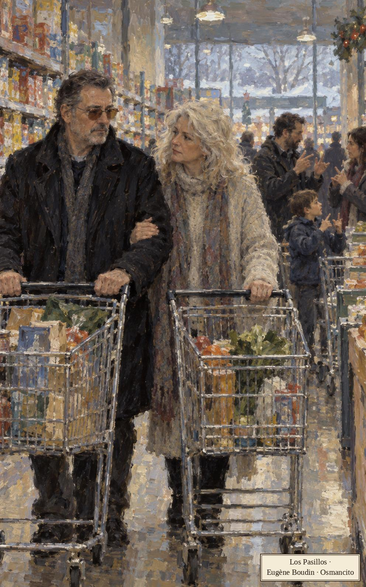
Babette y Jack compran juntos. Ella teme quedarse sola; él insiste en su fortaleza. Las revisiones médicas no han mostrado la enfermedad que teme.
Permanecimos juntos en los pasillos y en la caja. Babette compró tres tabloides para su próxima sesión con el viejo Treadwell. Los leímos juntos mientras hacíamos cola. Después fuimos juntos al coche, cargamos las compras y nos sentamos muy cerca el uno del otro mientras yo conducía a casa.
Párrafo 16
"Juntos" insiste donde el argumento médico no alcanza. Babette lee esos periódicos en voz alta a Treadwell; hoy sirven también para compartir unos minutos sin separarse.
Jack menciona las manchas de colores que ve. Babette culpa a las gafas oscuras; él cree necesitarlas para su personaje de profesor especializado en Hitler.
Los centros de crisis de déjà vu cerraron. La línea telefónica se suspendió sin ruido. La gente parecía a punto de olvidar. No podía culparlos, aunque hasta cierto punto me sintiera abandonado, dejado con todo el problema encima.
Párrafo 28
El pueblo puede pasar de página; Jack siente que le han dejado la cuenta. La normalidad ajena se vuelve otra forma de aislamiento.
Acudía fielmente a las clases de alemán. Empecé a trabajar con mi profesor en cosas que podría decir para dar la bienvenida a los delegados del congreso sobre Hitler, para el que aún faltaban varias semanas. Los muebles y los desperdicios tapaban por completo las ventanas. Howard Dunlop se sentaba en medio del cuarto, su cara ovalada flotando en sesenta vatios de luz polvorienta. Empecé a sospechar que yo era la única persona con quien hablaba. También empecé a sospechar que me necesitaba más de lo que yo lo necesitaba a él. Un pensamiento desconcertante y terrible.
Párrafo 29
La necesidad cambia de dirección. El maestro que le presta palabras podría depender del alumno para tener a quién dirigirlas.
Jack husmea en el cuarto de Denise buscando Dylar y tira objetos propios. En televisión anuncian posibles entierros múltiples en un patio; vuelve a seguir la noticia con Heinrich.
Tres noches después entré sin rumbo en la habitación de Heinrich, donde estaba temporalmente el televisor. Él estaba sentado en el suelo con una sudadera de capucha, viendo la transmisión en directo del mismo lugar. El patio estaba iluminado con focos, unos hombres con picos y palas trabajaban entre montones de tierra. En primer plano estaba el reportero, sin sombrero, con un abrigo de piel de oveja, bajo una nevada ligera, ofreciendo una actualización. La policía decía que tenía información firme, los excavadores eran metódicos y expertos, el trabajo llevaba más de setenta y dos horas. Pero no habían encontrado más cuerpos.
Párrafo 39
Una sola palabra cambia el criterio de éxito: "más" trae el veneno. Una buena noticia para posibles víctimas amenaza con ser una mala entrega para el espectador.
El reportero parece disculparse por la ausencia de más cadáveres. Padre e hijo sienten la decepción. Jack intenta no compartirla.
Capítulo 30: La Puesta de Sol
En la oscuridad, la mente sigue funcionando como una máquina devoradora, lo único despierto en el universo. Traté de distinguir las paredes, la cómoda del rincón. Era aquella vieja sensación de indefensión. Pequeño, débil, condenado a morir, solo. Pánico, el dios de los bosques y de los lugares salvajes, mitad cabra. Moví la cabeza a la derecha, recordando el radiodespertador. Vi cambiar los números, la progresión de los minutos digitales, de impar a par. Brillaban verdes en la oscuridad.
Párrafo 1
El reloj no amenaza ni consuela: cambia de número. Es la mente despierta la que convierte esa pequeña operación en una cuenta contra sí misma.
Jack despierta a Babette y le pide la identidad de Gray. Quiere probar el tratamiento.
"Soy razonable en esto. Tengo sentido de la proporción. Sin grandes esperanzas ni expectativas. Solo quiero averiguar, darle una oportunidad. No creo en los objetos mágicos. Solo digo: 'Déjame probar, déjame ver'. Llevo horas aquí tumbado, prácticamente paralizado. Estoy empapado en sudor. Tócame el pecho, Babette."
Párrafo 7
El contraste entre palabras y cuerpo importa: la declaración de sensatez pide que alguien toque el pánico. Jack quiere parecer un investigador, pero está hablando desde una cama mojada de miedo.
Babette teme que quiera matar al hombre del motel y se niega a facilitarle su propio error. Por la tarde Jack vigila a Winnie Richards, la investigadora que analizó la pastilla.
Toda la tarde estuve de pie junto a la ventana de mi despacho, vigilando el Observatorio. Empezaba a oscurecer cuando Winnie Richards apareció por la puerta lateral, miró a ambos lados y echó a moverse al trote de un lobo por el césped inclinado. Salí deprisa del despacho y bajé las escaleras. En segundos estaba fuera, corriendo por un camino empedrado. Casi enseguida experimenté una extraña euforia, esa emoción vigorizante que señala la recuperación de un placer perdido. La vi doblar una esquina derrapando de manera controlada antes de desaparecer detrás de un edificio de mantenimiento. Corrí tan deprisa como pude, soltándome, cortando el viento, con el pecho hacia afuera, la cabeza alta, los brazos impulsándome con fuerza. Ella reapareció junto a la biblioteca, una figura alerta y sigilosa bajo las ventanas de arco, casi perdida en el crepúsculo. Al acercarse a los escalones aceleró de repente, poniéndose a toda velocidad casi desde la inmovilidad. Fue una maniobra hábil y hermosa que pude apreciar aun cuando me ponía en desventaja. Decidí atajar por detrás de la biblioteca e interceptarla en el largo acceso recto a los laboratorios de química. Durante un momento corrí junto a los integrantes del equipo de lacrosse, que salían de un campo después del entrenamiento. Corríamos al mismo paso, los jugadores agitando ritualmente sus palos y cantando algo que no entendía. Cuando llegué al camino ancho, jadeaba. Winnie no estaba a la vista. Corrí por el aparcamiento de profesores, pasé junto a la capilla de una modernidad austera, rodeé el edificio de administración. Ahora se oía el viento, crujiendo en las ramas altas y desnudas. Corrí hacia el este, cambié de idea, me quedé mirando alrededor, me quité las gafas para ver mejor. Quería correr, estaba dispuesto a correr. Correría hasta donde pudiera, correría toda la noche, correría para olvidar por qué corría. Al cabo de un momento vi una figura que subía a grandes zancadas una colina al borde del campus. Tenía que ser ella. Volví a correr, sabiendo que estaba demasiado lejos, que desaparecería tras la cima y no volvería a salir a la superficie durante semanas. Puse cuanto tenía en un último arranque cuesta arriba, lanzándome sobre hormigón, hierba y después grava, con los pulmones ardiendo en el pecho, una pesadez en las piernas que parecía la propia atracción de la tierra, su juicio más íntimo y elocuente, la ley de los cuerpos que caen.
Párrafo 29
El lacrosse, que aquí aparece con sus palos de juego, le presta compañeros de carrera por un instante. Persiguiendo una respuesta sobre la muerte, Jack recupera un placer corporal que no esperaba.
Cuál fue mi sorpresa, al acercarme a la cima, al ver que se había detenido. Llevaba una chaqueta de Gore-Tex hinchada de aislante y miraba hacia el oeste. Me acerqué despacio. Al dejar atrás una hilera de casas particulares, vi lo que la había hecho detenerse. El borde de la tierra temblaba en una bruma oscura. Sobre él descansaba el sol, hundiéndose como un barco en un mar ardiente. Otro atardecer posmoderno, rico en imágenes románticas. ¿Para qué intentar describirlo? Basta decir que todo cuanto abarcaba nuestra vista parecía existir para recoger la luz de aquel acontecimiento. No es que aquel fuera uno de los atardeceres más fuertes. Los había habido de colores más dinámicos, con una sensación más profunda de amplitud narrativa.
Párrafo 30
La comparación convierte la mirada en evaluación: hasta el cielo recibe una calificación, los hubo mejores. El asombro convive con el hábito de comparar espectáculos, como si Jack no pudiera dejar de ser público.
Miran el cielo, hermoso e inquietante, y discuten su posible relación con el tóxico. Jack explica para qué se diseñó Dylar.
"El Dylar lo diseñó un grupo de investigación secreto. Creo que algunos son psicobiólogos. Me pregunto si has oído rumores de un grupo que trabaje en secreto sobre el miedo a la muerte."
Párrafo 53
El secreto vuelve a ofrecer profundidad a lo que no se conoce. Jack necesita localizar a alguien que sepa, y cuanto menos accesible parece, más lo persigue.
Winnie no conoce al grupo ni considera suficientes los rumores. Jack insiste en pedirle alguna orientación.
Algo en mi voz la hizo volverse a mirarme. Winnie apenas había pasado de los treinta, pero tenía una mirada sensata y experimentada para los desastres medio ocultos que constituyen una vida. Una cara estrecha parcialmente escondida por finos rizos castaños, ojos brillantes y entusiasmados. Tenía el aire de pico y huesos huecos de una gran criatura zancuda. Boca pequeña y remilgada. Una sonrisa en conflicto permanente con alguna prohibición interior contra la seducción del humor. Murray me dijo una vez que estaba enamorado de ella, que encontraba en su torpeza física el indicio de una inteligencia que se desarrollaba casi demasiado deprisa, y creí saber a qué se refería. Ella tanteaba y arrebataba el mundo que la rodeaba, a veces adelantándosele.
Párrafo 60
La mujer difícil de encontrar reconoce lo que él intenta ocultar. Esa atención vale aquí más que una respuesta brillante.
Winnie pregunta si la muerte no da límite y valor a la vida. Después propone entender qué ocurre cuando sentimos miedo.
"La gente cree que estoy en las nubes", dijo. "Tengo una teoría sobre el miedo humano bastante de las nubes, desde luego. Imagínate, Jack, un casero convencido, un hombre sedentario que se encuentra caminando por un bosque profundo. Ves algo por el rabillo del ojo. Antes de saber nada más, sabes que esa cosa es muy grande y que no tiene lugar en tu marco de referencia habitual. Una falla en la imagen del mundo. O eso no debería estar aquí o no deberías estar tú. Ahora la cosa aparece entera. Es un oso grizzly, enorme, de un marrón brillante, que avanza pavoneándose, con baba goteando de los colmillos descubiertos. Jack, nunca has visto un animal grande en libertad. La visión de ese oso es tan electrizantemente extraña que te da un sentido renovado de ti mismo, una conciencia nueva del yo: el yo en una situación única y horrenda. Te ves de una manera nueva e intensa. Te redescubres. Quedas iluminado para tu propio desmembramiento inminente. La bestia sobre las patas traseras te ha permitido ver quién eres como por primera vez, fuera de tu entorno familiar, solo, distinto, entero. El nombre que damos a este proceso complicado es miedo."
Párrafo 63
El oso de Winnie es un experimento imaginario, no un encuentro que haya ocurrido. Su giro inquietante consiste en que el peligro no borra al yo: lo ilumina demasiado.
Winnie sugiere que familiarizarse con la muerte reduciría el miedo, pero no sabe cómo lograrlo. Jack enumera riesgos posibles.
"¿Escalo la fachada vertical de un edificio de noventa plantas con un cinturón de enganche? ¿Qué hago, Winnie? ¿Me siento en una jaula llena de serpientes africanas, como el mejor amigo de mi hijo? Esto es lo que hace la gente hoy."
Párrafo 72
Comprender un límite y ponerlo a prueba no son lo mismo. La jaula devuelve a la conversación la confusión que Jack ya discutió con Orest.
Winnie le aconseja olvidar la pastilla. Jack reconoce que debe seguir con su vida, aunque los celos persisten. Bromea con ella, la hace sonrojar y bajan juntos la colina.
Capítulo 31: Comer en el Auto
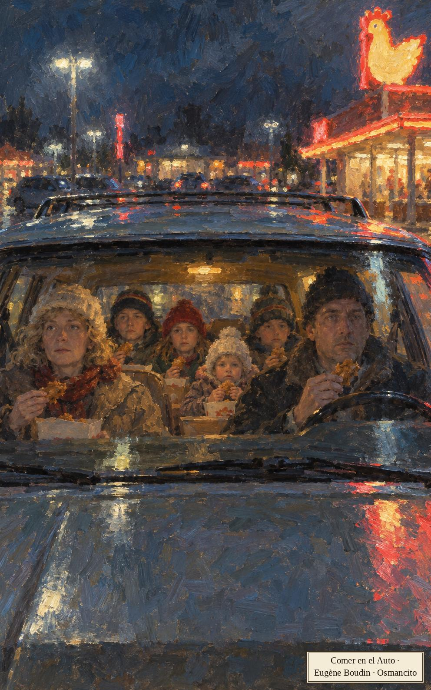
Antes de la familia suenan dos voces de la máquina: Waveform Dynamics pregunta si el cliente firmó el cheque a tiempo; el televisor recita: salud, clima, noticias, naturaleza.
Nadie quiso cocinar esa noche. Nos montamos todos en el carro y fuimos hasta la franja comercial en la tierra de nadie más allá del límite del pueblo. El neón interminable. Paré en un local especializado en presas de pollo y brownies. Decidimos comer en el carro. El carro bastaba para lo que necesitábamos. Queríamos comer, no ponernos a mirar a la gente. Queríamos llenar el estómago y acabar de una vez. No necesitábamos luz ni espacio. Desde luego no necesitábamos mirarnos las caras a través de una mesa mientras comíamos, tejiendo una red sutil y compleja de señales y códigos. Nos conformábamos con comer mirando todos en la misma dirección, viendo apenas unos centímetros más allá de las manos. Había un rigor en eso. Denise sacó la comida al carro y repartió servilletas de papel. Nos acomodamos a comer. Comimos vestidos de pies a cabeza, con gorras y abrigos pesados, sin hablar, desgarrando las presas de pollo con las manos y los dientes. Había un clima de concentración intensa, mentes que convergían en una sola idea absorbente. Me sorprendió descubrir que tenía un hambre enorme. Mastiqué y comí, mirando apenas unos centímetros más allá de mis manos. Así es como el hambre encoge el mundo. Este es el borde del universo observable de la comida. Steffie le arrancó la piel crujiente a una pechuga y se la dio a Heinrich. Ella nunca comía la piel. Babette chupó un hueso. Heinrich cambió alas con Denise, una grande por una pequeña. Le parecía que las alitas pequeñas eran más sabrosas. La gente le daba a Babette sus huesos para limpiarlos y chuparlos. Rechacé una imagen del señor Gray holgando desnudo en la cama de un motel, un cuadro sin resolver que se deshacía en los bordes. Mandamos a Denise por más comida y la esperamos en silencio. Luego volvimos a empezar, medio aturdidos por las dimensiones de nuestro placer.
Párrafo 3
La cuenta de cobro y el televisor hablan el mismo idioma: instrucciones sin nadie al otro lado. A esa estática la familia responde comiendo con las manos. Solo una imagen no es comida: el señor Gray, el hombre del motel que Jack no se saca de la cabeza.
Steffie pregunta cómo flotan los astronautas. Denise: son más livianos que el aire. Heinrich: en el espacio no hay aire, solo vacío y moléculas pesadas. ¿Y el frío sin aire?, dice Babette: un día de «necesito-suéter».
Hubo otra pausa. Esperamos a saber si el diálogo había terminado. Luego volvimos a la comida. Intercambiamos en silencio las presas que nadie quería, metimos las manos en las cajas de papas fritas onduladas. A Wilder le gustaban las papas blandas y blancas y la gente las escogía para dárselas. Denise repartió ketchup en bolsitas aguadas. El interior del carro olía a grasa y a carne lamida. Intercambiamos presas y roímos.
Párrafo 13
El seminario de física se dicta entre presas de pollo y sobres de ketchup. Cada hijo defiende su ciencia de memoria como doctrina, mientras las manos trabajan de animales prolijos: escoger, cambiar, roer.
Steffie insiste: ¿qué tan frío es el espacio? Más alto, más frío, dice Heinrich. Pero más alto es más cerca del sol. ¿Y de noche? Del otro lado de la Tierra. Heinrich invoca al señor Albert Einstein: ¿cómo está el sol arriba si uno se para en él?
«El sol es una gran bola fundida», dijo ella. «Es imposible pararse en el sol.»
Párrafo 22
Heinrich invoca a Einstein con título de nobleza incluido. Babette le devuelve una pregunta concreta: ¿cómo se sostiene alguien sobre el sol? La discusión sigue saltando entre la explicación científica y lo que cada uno puede imaginar.
No hay arriba ni abajo, remata él: moléculas pesadas enfriándose tras salir de las estrellas. Aparte, Denise le cuenta a Steffie que vieron la corola del sol en el canal del clima. Steffie creía que Corolla era un carro.
«Todo es un carro», dijo Heinrich. «Lo que tienes que entender de las estrellas gigantes es que tienen explosiones nucleares de verdad en lo hondo del núcleo. Olvídate por completo de esos IBM rusos que se supone que son tan impresionantes. Estamos hablando de explosiones cien millones de veces más grandes.»
Párrafo 30
El cosmos de los niños está hecho de marcas: la corona del sol es un Toyota y el arsenal nuclear, una empresa de computadoras. Heinrich quiso decir misiles y dijo IBM, y acierta sin saberlo: el fin del mundo y el catálogo suenan igual.
Babette dice que los videntes rusos causan este clima loco. ¿Qué clima loco? Ellos tienen videntes y nosotros también, explica Heinrich: quieren arruinar las cosechas. El tiempo ha estado normal. Para esta época del año, puntualiza Denise.
Esta fue la semana en que un policía vio arrojar un cuerpo desde un ovni. Ocurrió mientras hacía una patrulla de rutina en las afueras de Glassboro. El cadáver empapado de lluvia de un hombre no identificado se encontró más tarde esa noche, completamente vestido. La autopsia reveló que la muerte se debió a fracturas múltiples y a un paro cardíaco, resultado, quizá, de un susto espantoso. Bajo hipnosis, el policía, Jerry Tee Walker, revivió en detalle la visión desconcertante del objeto brillante como neón que parecía una enorme peonza giratoria suspendida a veinticinco metros sobre un campo. El oficial Walker, veterano de Vietnam, dijo que la escena extraña le recordaba a las tripulaciones de helicópteros que arrojaban por la puerta a sospechosos del Vietcong. Increíblemente, mientras veía abrirse una escotilla y precipitarse el cuerpo hacia el suelo, Walker sintió que un mensaje inquietante se transmitía psíquicamente a su cerebro. Los hipnotizadores de la policía planean intensificar las sesiones en un intento por descubrir el mensaje.
Párrafo 37
La novela cuenta el ovni con la misma cara seria con que cuenta el clima: ahí están la broma y el susto. Al policía la nave le recuerda Vietnam: el miedo viejo busca formas modernas para volver.
Los avistamientos corren de pueblo en pueblo, se crea o no. Babette pregunta por qué los ovnis se ven en el norte del estado: ahí están las montañas, dice Denise, las naves se esconden del radar y la nieve baja a los embalses de las ciudades, puestas abajo para eso. La radio dice: «Excesos de sal, fósforo, magnesio».
La geografía de Denise funciona como la parrilla del cable: cada cosa tiene su piso y la nieve baja según lo previsto. Una cosmología de supermercado que Jack no logra refutar, y casi no quiere.
Más tarde, esa noche, Babette y yo nos sentamos a tomar chocolate. Sobre la mesa de la cocina, entre los cupones, los recibos de supermercado de un pie de largo, los catálogos de venta por correo, había una postal de Mary Alice, mi hija mayor. Es el fruto dorado de mi primer matrimonio con Dana Breedlove, la espía, y por tanto hermana carnal de Steffie, aunque entre las dos cayeron diez años y dos matrimonios. Mary Alice tiene diecinueve años ahora y vive en Hawái, donde trabaja con ballenas.
Párrafo 46
El árbol familiar se cuenta como un parte del tiempo: matrimonios que caen entre dos hermanas, una espía por exesposa, una hija dorada que cuida ballenas. La postal llega entre cupones y recibos: ahí archiva esta familia lo sagrado.
Babette toma un tabloide que alguien dejó sobre la mesa.
«Los llantos de ratón se han medido a cuarenta mil ciclos por segundo. Los cirujanos usan cintas de alta frecuencia de llantos de ratón para destruir tumores en el cuerpo humano. ¿Te lo crees?»
Párrafo 48
El tabloide es el devocionario de la casa. El «Sí» y el «Yo también» forman un credo en miniatura: creer a dúo y sin pruebas, que es como esta familia reza.
Ella pregunta, urgente, cómo se siente Jack. Bien, dice él. Se arrepiente de haberle contado su condición: si no, él no habría dicho que se morirá primero. Lo que más quiere: que Jack no muera primero y que Wilder se quede así para siempre.
El capítulo se apaga en dos deseos imposibles dichos sobre una mesa de cupones: uno contra la muerte, otro contra el tiempo.
Capítulo 32: El Incendio
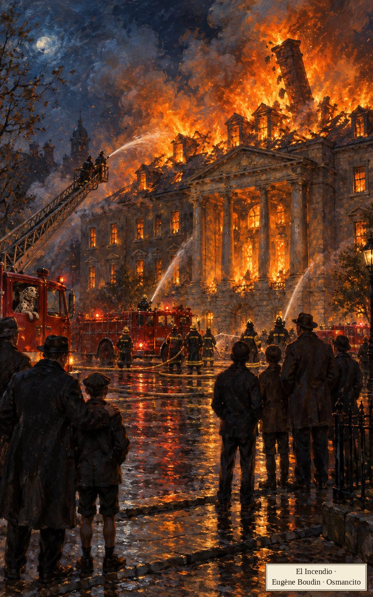
Murray y yo caminábamos por el campus a nuestra manera europea, un paso sereno y reflexivo, la cabeza baja mientras conversábamos. A veces uno agarraba al otro cerca del codo, gesto de intimidad y apoyo físico. Otras veces caminábamos un poco separados, Murray con las manos entrelazadas a la espalda, Gladney con las suyas cruzadas como un monje sobre el abdomen, un toque algo preocupado.
Párrafo 1
Gladney es el apellido de Jack: Murray lo usa como quien toca una campanilla. El paseo «a la europea» de dos profesores de provincia es su manera de representar la cultura: cabeza baja, manos de monje, el continente entero puesto en la forma de caminar.
Murray pregunta por el alemán. Vive bajo el mismo techo que Dunlop y, en vislumbres, lo ha leído entero: manos suaves, piel de bebé, saliva seca en las comisuras, la espalda rígida que no va con el arrastrar de pies, y algo terrible que ninguno sabe nombrar. «¿Pero qué?», insiste Jack.
Llevábamos treinta pasos cuando Murray empezó a asentir. Le miraba la cara mientras caminábamos. Asintió al cruzar la calle y siguió asintiendo hasta más allá de la biblioteca de música. Caminé con él paso a paso, agarrado de su codo, mirándole la cara, esperando que hablara, sin importarme que me hubiera desviado por completo de mi camino, y seguía asintiendo cuando nos acercamos a la entrada de Wilmot Grange, un edificio restaurado del siglo diecinueve en el borde del campus.
Párrafo 24
El asentir de Murray es un instrumento de precisión: treinta pasos, una calle cruzada, toda una biblioteca, y el veredicto madura. Jack lo acompaña paso a paso como quien espera un oráculo, y el oráculo, fiel a su estilo, se hará esperar.
Cuatro días después, a la una de la mañana, Murray llama a la casa y susurra la respuesta: Dunlop tiene cara de hombre que encuentra eróticos los cuerpos muertos.
Fui a una última lección. Las paredes y las ventanas estaban oscurecidas por objetos acumulados, que ahora parecían avanzar hacia el centro de la habitación. El hombre de cara inexpresiva que tenía delante cerró los ojos y habló, recitando frases útiles para turistas. «¿Dónde estoy?» «¿Puede ayudarme?» «Es de noche y estoy perdido.» Apenas podía soportar estar sentado ahí. El comentario de Murray lo fijó para siempre a una identidad plausible. Lo que había sido escurridizo en Howard Dunlop quedaba ahora clavado. Lo que había sido extraño y medio siniestro era ahora enfermo. Una lascivia sombría escapaba de su cuerpo y parecía circular por la habitación atrincherada.
Párrafo 27
Las frases de turista de Dunlop («Es de noche y estoy perdido») son, sin querer, su autorretrato. Basta una frase de Murray para convertir lo raro en diagnóstico: la sospecha, cuando encuentra nombre, ya no suelta.
Las clases se acaban y los pastores alemanes desaparecen; los hombres de trajes Mylex siguen midiendo en sus carritos de juguete. Velando el sueño de Wilder, Jack oye el televisor del vecino: «el Nabisco Dinah Shore de cuatrocientos mil dólares». Esa noche arde el manicomio y Heinrich y su padre van a verlo, como otros padres con sus hijos: el fuego les da un tema, frases de oficio como «cableado defectuoso» e «inhalación de humo».
Las llamas rugían por las buhardillas. Nos quedamos al otro lado de la calle viendo ceder parte del techo, una chimenea alta plegarse despacio y hundirse. Las cisternas seguían llegando de otros pueblos, los hombres bajando pesadamente con sus botas de goma y sus sombreros anticuados. Se tripularon y apuntaron las mangueras, una figura se alzó sobre el techo centelleante en los brazos de una escalera telescópica. Vimos empezar a caer el pórtico, una columna lejana inclinándose. Una mujer en camisón ardiente cruzó el jardín. Jadeamos, casi con admiración. Era canosa y menuda, con un ribete de aire en llamas, y se veía que estaba loca, tan perdida en sueños y furias que el fuego alrededor de su cabeza parecía casi incidental. Nadie dijo una palabra. En medio de todo el calor y el ruido de la madera que detonaba, ella traía su propio silencio. Qué poderosa y real. Qué cosa tan honda era la locura. Un capitán de bomberos corrió hacia ella y luego se desvió un poco, desconcertado, como si no fuera, después de todo, la persona que esperaba encontrarse aquí. Cayó en un destello blanco, como una taza de té que se rompe. Ya había cuatro hombres alrededor, apagando las llamas a golpes de casco y de gorra.
Párrafo 34
La mujer que «cae como una taza de té que se rompe» es de esas imágenes que la novela suelta sin levantar la voz: lo delicado y lo atroz en la misma cerámica. Los hombres jadean «casi con admiración», y ese casi es el rubro exacto de sus almas.
Contener el fuego parece un oficio tan viejo como levantar catedrales; un dálmata vigila desde un camión. Heinrich descubre que un incendio se puede mirar y mirar. Murray les estrecha la mano dos veces sin una palabra. Un olor acre rompe el hechizo: la gente huye, como si hubiera dos muertes, una real y otra sintética, y el olor de la muerte importara al alma. En casa, Jack prepara leche tibia y Heinrich se mete a su armario a hacer dominadas.
Me quedé despierto hasta tarde pensando en el señor Gray. Cuerpo gris, estático, inacabado. La imagen se bamboleaba y rodaba, los bordes de su cuerpo llameaban con distorsión al azar. Últimamente me sorprendía pensando en él a menudo. A veces como el señor Gray el compuesto. Cuatro o más figuras grisáceas entregadas a un trabajo pionero. Científicos, visionarios. Sus cuerpos ondulantes atravesándose unos a otros, mezclándose, fundiéndose. Un poco como extraterrestres. Más listos que el resto de nosotros, abnegados, asexuados, decididos a sacarnos a ingeniería limpia de nuestro miedo. Pero cuando los cuerpos se fundían me quedaba una sola figura, el jefe de proyecto, un seductor gris y brumoso moviéndose en ondas por una habitación de motel. Hacia la cama, hacia el plan. Vi a mi esposa recostada de lado, voluptuosamente redondeada, el eterno desnudo en espera. La vi como él la veía. Dependiente, sumisa, emocionalmente cautiva. Sentí su maestría y su control. El dominio de su posición. Me estaba ganando la mente, este hombre que nunca había visto, esta media imagen, la más leve mota de luz cerebral. Sus manos desoladas envolvían un seno blanco rosa. Qué vívido y viviente era, qué deleite táctil, salpicado de pecas amarronadas alrededor de la punta. Experimenté un tormento auditivo. Los oí en su juego previo de murmullos, el parloteo amoroso y la carne zumbante. Oí los sorberos y los chasquidos, el chapoteo de las bocas mojadas, los resortes de la cama hundiéndose. Un intervalo de ajustes murmurados. Luego la penumbra se instaló alrededor de la cama de sábanas grises, un círculo cerrándose despacio.
Párrafo 45
El señor Gray sigue siendo para Jack una figura sin rostro propio: un compuesto, un jefe de proyecto, medio extraterrestre, hecho de estática de televisor. Sus celos llenan las zonas que no conoce. La escena termina con una marca pronunciada por la televisión.
Una sola palabra, la que dice la televisión: Panasonic.
Capítulo 33: La Pistola de Vernon
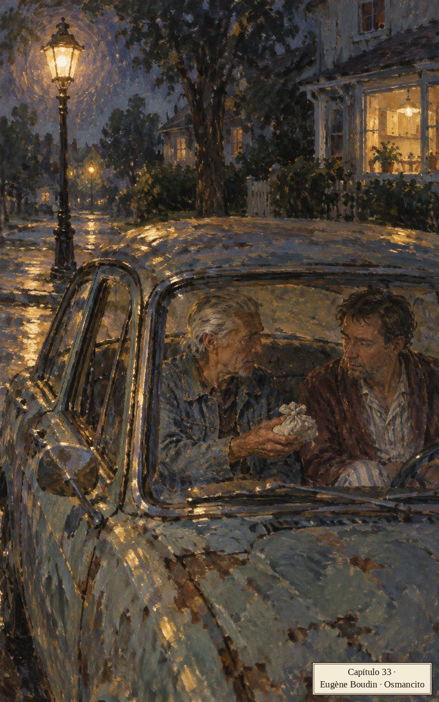
Wilder despierta a Jack de madrugada y lo lleva en silencio hasta la ventana del patio, la cabezota apenas por encima del alfeizar; afuera gritan los cuervos.
Había alguien sentado en el patio trasero. Un hombre de pelo blanco sentado erguido en el viejo sillón de mimbre, una figura de quietud y compostura inquietantes. Al principio, aturdido y soñoliento, no supe qué hacer con la visión. Parecía pedir una interpretación más cuidadosa de lo que yo podía dar en ese momento. Pensé una cosa: que lo habían insertado ahí con algún propósito. Luego empezó a entrar el miedo, palpable y arrollador, un puño cerrándose una y otra vez en mi pecho. ¿Quién era, qué pasaba aquí? Me di cuenta de que Wilder ya no estaba a mi lado. Llegué a la puerta de su cuarto justo a tiempo de ver su cabeza hundirse en la almohada. Cuando llegué a la cama, ya dormía profundamente. No sabía qué hacer. Sentía frío, estaba blanco. Regresé a tientas hasta la ventana, agarrándome de una perilla, de un pasamano, como para recordarme la naturaleza y el ser de las cosas reales. Seguía ahí afuera, mirando hacia los setos. Lo vi de perfil en la luz incierta, inmóvil y conocedor. ¿Era tan viejo como había pensado al principio, o el pelo blanco era puramente emblemático, parte de su fuerza alegórica? Eso era, por supuesto. Sería la Muerte, o el mandadero de la Muerte, un técnico de ojos hundidos de la era de la peste, de la era de las inquisiciones, las guerras sin fin, los manicomios y los leprosarios. Sería un aforista de las últimas cosas, lanzándome la más leve mirada - civilizada, irónica - mientras decía su línea diestra y elegante sobre mi partida. Lo observé largo rato, esperando que moviera una mano. Su quietud era imponente. Me sentí ponerme más blanco a cada segundo. ¿Qué significa ponerse blanco? ¿Qué se siente al ver a la Muerte en carne y hueso, venida a recogerte? Estaba asustado hasta la médula. Tenía frío y calor, estaba seco y mojado, era yo y era otro. El puño se cerraba en mi pecho. Fui hasta la escalera y me senté en el peldaño de arriba, mirándome las manos. Quedaba tanto. Cada palabra y cada cosa un bordado de creación luminosa. Mi propia mano sencilla, entrecruzada y recorrida por remolinos en una malla de líneas expresivas, un terreno de vida, podía ser por sí misma objeto del estudio y el asombro de una persona durante años. Una cosmología contra el vacío.
Párrafo 2
El pavor de Jack le da nombre y oficio al intruso: la Muerte, o su mandadero, un técnico de la peste con frases elegantes. Que la parca llegue en sillón de mimbre y se siente a mirar los setos es muy de este libro: lo tremendo no irrumpe, hace jardín.
Jack se esconde en el baño; no lo quiere dentro de la casa.
Caminé de un lado a otro un rato. Me eché agua fría en las manos y las muñecas, me salpiqué la cara. Me sentía ligero y pesado, confundido y alerta. Tomé un pisapapeles con paisaje del estante junto a la puerta. Dentro del disco de plástico flotaba una imagen tridimensional del Gran Cañón, los colores acercándose y alejándose al girar el objeto a la luz. Planos fluctuantes. Me gustó esa frase. Parecía la música misma de la existencia. Si tan solo uno pudiera ver la muerte como otra superficie que se habita por un tiempo. Otra faceta de la razón cósmica. Un descenso en picada por el Bright Angel Trail.
Párrafo 4
El pisapapeles del Gran Cañón es el único equipaje que Jack lleva a su cita: un recuerdo turístico. Frente a lo que cree ver en el patio, contempla un abismo reducido a una pieza de plástico. La mano busca algo pequeño y conocido.
Decide salir a hacerle frente; antes recorre los cuartos de los hijos dormidos y el de Babette, de donde se va apurado para que la radio no le cante el réquiem. Con Mi lucha apretada contra el estómago abre la puerta de malla, y la Muerte se levanta, se despereza y se convierte, pieza a pieza, en Vernon Dickey, su suegro, que manejó catorce horas de un tirón y no quiso despertar a nadie.
Entramos. Puse la cafetera en la hornalla. Vernon se sentó a la mesa con su ajada chaqueta de mezclilla, jugando con la tapa de un viejo Zippo. Tenía el aspecto de un conquistador en la picada final de su carrera. Su pelo plateado tenía un matiz desvaído, una decoloración amarillenta, y se lo peinaba hacia atrás en cola de pato. Llevaba unos cuatro días de barba. Su tos crónica había ganado un filo dentado, un elemento de irresponsabilidad. A Babette le preocupaba menos su condición que el placer sardónico que él hallaba en sus propias arcadas y espasmos, como si hubiera algo fatalmente atractivo en ese ruido terrible. Todavía usaba un cinturón de cuartel con hebilla de cuernos largos.
Párrafo 17
Vernon llega como la muerte de las películas viejas: sin avisar, de madrugada, vestido. Pero su herramienta no es la guadaña sino el encendedor, y su aura no es eterna: huele a taller, a tos y a hebilla de cuernos largos.
Vernon resume su situación: techar aquí, antióxido allá, trabaja de doble turno, salvo que no hay primer turno. La luna es todo lo que hay.
Le miré las manos. Cicatrizadas, rotas, melladas, surcadas para siempre por grasa y barro. Recorrió la habitación con la mirada, tratando de localizar algo que hubiera que reponer o reparar. Esos desperfectos eran sobre todo una ocasión para el discurso. A Vernon le daba ventaja hablar de juntas y arandelas, de fraguado, calafateado, masilla. Había veces en que parecía atacarme con términos como taladro de trinquete y sierra de vaivén. Veía mi inseguridad en esos asuntos como señal de una incompetencia o estupidez más profunda. Estas eran las cosas que construían el mundo. No saber de ellas ni ocuparse de ellas era una traición a los principios fundamentales, una traición al género, a la especie. ¿Qué podía ser más inútil que un hombre que no sabía arreglar un grifo que goteaba? Inútil en esencia, muerto para la historia, para los mensajes de sus genes. No estaba seguro de estar en desacuerdo.
Párrafo 21
Para Vernon el mundo se armó con juntas y arandelas, y un hombre que no arregla un grifo está muerto para la historia. Jack, profesor de Hitler, recibe la sentencia y no está seguro de poder apelar. Los dos hombres de Babette, cara a cara: uno construye el mundo, el otro lo explica.
Padre e hija se miden por referencias: Babette lo imagina muerto en una cama incendiada, con una mujer reportada como desaparecida al lado; él anuncia que una mujer que va a la iglesia en casa rodante quiere casarse con él, y diserta sobre las opciones del hogar americano y las prostitutas de la calle, cargamento japonés incluido. Loco tendría que estar para casarse con una mujer que oficia en casa rodante.
Había una astucia en Vernon, una cualidad de cara seria de inteligencia alerta y escudriñadora, una sagacidad a la espera de una ocasión con buena forma. Eso ponía nerviosa a Babette. Lo había visto arrimarse a mujeres en lugares públicos para hacerles alguna pregunta indagadora con su modo astuto de cara de palo. Se negaba a entrar con él a los restaurantes, temiendo sus comentarios distraídos a las meseras, comentarios íntimos, apartes y observaciones técnicamente logrados, entregados con la voz de madrugada de algún anciano de la radio. Él le había hecho pasar momentos de nervios, temporadas de rabia y vergüenza, en un buen número de cabinas de skay.
Párrafo 35
La astucia de Vernon es de las que necesitan público. Babette lo conoce: las meseras, los restaurantes, la voz de anciano de radio. La hija lleva años esquivando la vergüenza de su padre, y sin embargo - ya se verá - es la única que llora cuando se va.
Babette baja en ropa de gimnasia y se queda doblada de asombro: nunca llama, nunca avisa. «Aquí estoy. Gran cosa», dice Vernon, y pregunta dónde durmió la vez pasada.
Mientras preparábamos y comíamos el desayuno, mientras los niños bajaban y se acercaban cautelosos a Vernon en busca de besos y despeinadas, mientras pasaban las horas y Babette se acostumbraba a la vista de la figura deambulante en jeans remendados, empecé a notar el placer con que ella rondaba cerca, haciendo pequeñas cosas por él, estando ahí para escuchar. Un deleite contenido en gestos de rutina y ritmos automáticos. A veces tenía que recordarle a Vernon cuáles eran sus comidas favoritas, cómo le gustaban cocidas y sazonadas, qué chistes contaba mejor, qué figuras del pasado eran los tontos redondos y cuáles los héroes cómicos. Ecos de otra vida salían de ella a raudales. Las cadencias de su habla cambiaban, tomaban un dejo rural. Las palabras cambiaban, las referencias. Esta era una muchacha que había ayudado a su padre a lijar y barnizar roble viejo, a levantar radiadores desde las tablas del piso. Sus años de carpintero, su romance con las motocicletas, su tatuaje en el bíceps.
Párrafo 43
En la cocina Babette vuelve a tener diez años: le recuerda a su padre qué come, qué chistes cuenta, quiénes fueron los tontos de su pasado, y el acento se le ruraliza solo. Hay amores que solo existen como servicio: lijar roble, cargar radiadores, traerle las papas.
Los días se ordenan alrededor del huésped: Heinrich cede su cuarto, Vernon madruga más que todos para demostrar que duerme menos, espía a los basureros y al cartero para hablar de técnicas y procedimientos, y le advierte a Jack que la canaleta del techo está cedida. Cuando Jack le cuenta que un amigo dice que la gente se va de vacaciones para escapar de la muerte que hay en la rutina, Vernon responde: «¿Qué es, judío?».
Le gustaba tomarle el pelo a los niños con su cara de palo. Ellos contestaban sus bromas de mala gana. Desconfiaban de todos los parientes. Los parientes eran un asunto delicado, parte del pasado turbio y complejo, las vidas divididas, los recuerdos que una palabra o un nombre podían reflotar.
Párrafo 53
Para estos hijos de matrimonios recombinados, un pariente es un archivo que puede abrirse con una sola palabra. Vernon los tienta con bromas de cara seria y ellos responden como se responde a los archivos: con cautela.
Vernon se sienta a fumar en su carrito apaleado, frecuenta las multitudes del centro comercial y Babette lo vigila desde la ventana con todos los sentimientos a la vez. Una noche le formula a Jack la pregunta que solo un educado puede responder: «¿La gente era así de bruta antes de la televisión?».
Una noche oí una voz y pensé que era él gimiendo en sueños. Me puse la bata, salí al pasillo, me di cuenta de que el sonido venía del televisor en el cuarto de Denise. Entré y apagué el aparato. Ella dormía en una deriva de mantas, libros y ropa. Por impulso fui en silencio al closet abierto, tiré del cordón de la luz y me asomé, buscando las tabletas de Dylar. Cerré la puerta contra mi cuerpo, que quedó medio dentro, medio fuera del closet. Vi un gran despliegue de telas, zapatos, juguetes, juegos y otros objetos. Revolví, atrapando de cuando en cuando algún rastro de redolencia infantil. Plastilina, zapatillas, virutas de lápiz. La botella podía estar en un zapato abandonado, en el bolsillo de alguna camisa vieja hecha un bolo en un rincón. La oí moverse. Me quedé inmóvil, conteniendo el aliento.
Párrafo 62
El closet de Denise es la arqueología de la infancia: plastilina, virutas de lápiz. Jack busca ahí el Dylar, y no hay imagen más limpia de su situación: un hombre maduro hurgando a oscuras en la niñez de su hija en busca de una pastilla contra el miedo.
Denise lo descubre: sabe exactamente qué busca. Jack confiesa a medias: tuvo un susto, necesita el Dylar, solo quedan cuatro tabletas. Ella le devuelve la verdad: no se las tomaría, se las daría a su madre. ¿Y qué es esa cosa, de una vez?
Algo en su voz o en mi corazón o en lo absurdo del momento me permitió considerar la posibilidad de contestar su pregunta. Un avance decisivo. ¿Por qué no decírselo, sencillamente? Era responsable, capaz de medir las implicaciones de las cosas serias. Me di cuenta de que Babette y yo habíamos sido tontos todo ese tiempo, ocultándole la verdad. La muchacha abrazaría la verdad, nos conocería mejor, nos amaría más hondamente en nuestra debilidad y nuestro miedo.
Párrafo 78
La epifanía de Jack - decirle la verdad a la niña y ganar su amor - dura lo que dura un párrafo: es la clase de avance que en esta casa siempre anuncia un tropiezo.
Fui y me senté al pie de la cama. Ella me miraba con cuidado. Le conté la historia básica, omitiendo las lágrimas, las pasiones, el terror, el horror, mi exposición al Nyodene D., el arreglo sexual de Babette con el señor Gray, nuestra discusión sobre cuál de los dos le tenía más miedo a la muerte. Me concentré en el medicamento en sí, le conté todo lo que sabía sobre su vida en el tracto gastrointestinal y en el cerebro.
Párrafo 79
La lista de lo que Jack omite es el índice de la novela hasta aquí: lágrimas, pasiones, Nyodene D., el señor Gray, la apuesta sobre quién teme más morir. Contar la verdad es, sobre todo, elegir qué verdades se dejan fuera.
Denise va al punto: una droga contra el miedo a la muerte, en fase de prueba, tendría efectos secundarios terribles. Jack invoca la fuerza de la sugestión - las palmas sudadas de ella misma cuando la nube - y confiesa que le da igual: puede ser azúcar, puede ser especia, está ansioso por que lo engañen. Esto es lo que les pasa a los desesperados. Entonces ella suelta la suya: la botella no existe. La echó al compactador de basura hace una semana, porque nadie le decía qué era. Ocho palabras habrían bastado. «Sigues siendo mi amigo», dice Jack.
Le di un beso en la cabeza y fui hasta la puerta. Me di cuenta de que tenía muchísima hambre. Bajé a buscar algo de comer. La luz de la cocina estaba prendida. Vernon estaba sentado a la mesa, completamente vestido, fumando y tosiendo. La ceniza de su cigarrillo tenía una pulgada de largo y empezaba a inclinarse. Era una costumbre suya, dejar la ceniza colgando. Babette pensaba que lo hacía para inducir en los demás sentimientos de suspenso y ansiedad. Formaba parte del clima temerario en que se movía.
Párrafo 100
La ceniza de una pulgada que Vernon deja colgando es su retrato en miniatura: todo en él está a punto de caer y no cae. Babette lee suspense y ansiedad en ese equilibrio; es la manera que tiene la familia de leer a Vernon entero.
Vernon lo espera vestido y fumando. «Vamos al carro.» Esta casa está llena de mujeres, dice, y las mujeres escuchan dormidas.
Salimos por la puerta trasera para no despertar a Heinrich. Lo seguí por el sendero al costado de la casa y bajé los escalones hasta el camino de entrada. Su carrito esperaba en la oscuridad. Él se puso al volante y yo me deslicé a su lado, recogiéndome la bata y sintiéndome atrapado en el espacio limitado. El carro guardaba un olor como de vapor peligroso en lo hondo de un taller de latonería y pintura, una mezcla de metal exhausto, trapos inflamables y caucho quemado. La tapicería estaba rota. Al resplandor de un farol vi cables colgando del tablero y de la luz del techo.
Párrafo 108
El carrito de Vernon es la extensión de su cuerpo: metal exhausto, cables sueltos, olor a taller. Lo que se entrega dentro de ese carro no podía entregarse en ninguna otra iglesia.
No es el carro lo que quiere regalarle. De un hueco del asiento trasero saca un objeto oscuro y se lo pone en la palma: una pistola cargada, una Zumwalt calibre veinticinco, de fabricación alemana. Pequeña, práctica, imposible de rastrear. Jack la sostiene como quien sostiene un animal desconocido; el peso le adormece la mano y le cambia algo por dentro.
«¿Vivimos en el mismo planeta? ¿En qué siglo estamos? Mira con qué facilidad entré a tu patio. Palanqueo una ventana y estoy dentro de la casa. Podría haber sido un ladrón profesional, un convicto fugado, uno de esos vagabundos de barba rala. Un tipo asesino errante que sigue al sol. Un asesino múltiple de fin de semana con empleo de oficina. Tú eliges.»
Párrafo 127
El catálogo de intrusos de Vernon - el ladrón, el fugado, el vagabundo, el asesino de fin de semana con empleo de oficina - es la página policial de la imaginación americana. Jack estudia a Hitler; Vernon estudia el noticiero; los dos venden el mismo miedo en distinta presentación.
Jack intenta devolverla. Vernon insiste: respétala, conócela, es solo cuestión de tiempo, y da consejos de guerra doméstica: vidrio roto en las repisas, tirarse rápido al piso, los loquitos atacan desde cualquier rama. No es lo que uno quiere lo que importa. A la mañana siguiente una cuadrilla arregla la calle y Vernon la sigue de cerca; cuando se van los obreros, la visita se apaga. Babette llora abrazada a él y le acomoda una cesta de telgopor con sándwiches, pollo y café. «Es una buena muchacha», le dice a Jack, con gravedad.
«No te preocupes por mí», dijo. «La cojerita no significa nada. La gente de mi edad cojea. Cojear es algo natural a cierta edad. Olvida la tos. Toser es sano. Uno mueve la cosa de un lado a otro. La cosa no puede hacerte daño mientras no se asiente en un solo punto y se quede ahí años. Así que la tos está bien. El insomnio también. El insomnio está bien. ¿Qué gano con dormir? Llega una edad en que cada minuto de sueño es un minuto menos para hacer cosas útiles. Para toser o cojear. No me digas nada de las mujeres. Las mujeres están bien. Alquilamos un casete y tenemos algo de sexo. Eso le bombea sangre al corazón. Olvida los cigarrillos. Me gusta decirme que me estoy saliendo con la mía. Que dejen de fumar los mormones. Se morirán de algo igual de malo. La plata no es problema. Estoy arreglado en materia de ingresos. Cero pensiones, cero ahorros, cero acciones y bonos. Así que por eso no tienen que preocuparse. Eso ya está resuelto. No me digan nada de los dientes. Los dientes están bien. Mientras más flojos están, más se pueden menear con la lengua. Le da a la lengua algo que hacer. No se preocupen por los temblores. Todo el mundo tiene temblores de vez en cuando. Además es solo la mano izquierda. La manera de disfrutar los temblores es fingir que es la mano de otro. No me digan nada de la pérdida de peso, súbita e inexplicable. No tiene sentido comer lo que no se ve. No se preocupen por los ojos. Los ojos no pueden estar peor de lo que están. Olvídense por completo de la mente. La mente se va antes que el cuerpo. Así es como tiene que ser. Así que no se preocupen por la mente. La mente está bien. Preocúpense por el carro. La dirección está toda chueca. A los frenos los han llamado a revisión tres veces. El capó se levanta en terreno de huecos.»
Párrafo 141
La letanía de Vernon niega una dolencia tras otra: la cojera, la tos, los dientes, los temblores, la mente. Cada negación vuelve visible aquello que intenta descartar. Lo único que admite roto es el carro; Babette reconocerá el chiste al oírlo.
Cara de palo. Babette encuentra gracioso el final, la parte del carro, y camina en círculos de risa, débil de rodillas, mientras Jack la mira asombrado: todos sus miedos a la deriva en la voz socarrona de su padre.
Capítulo 34: Basura y Potasio
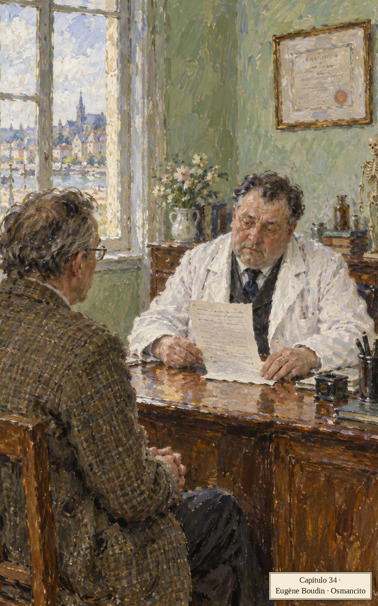
Llega la temporada de las arañas y sus hilos de luz; la televisión narra una patada de kárate; Steffie se palpa el pecho en busca de bultos. Murray se extasía ante el estacionamiento en diagonal: se puede tener nostalgia del lugar donde uno está. Jack le cuenta que Albert Speer, el arquitecto de Hitler, diseñaba edificios con la ruina ya incorporada; Murray responde que la guerra es la forma de la nostalgia cuando los hombres no hallan nada bueno que decir de su país.
Llegó una temporada de tiempo húmedo. Abrí la nevera, me asomé al compartimento del congelador. Del film plástico de envolver comida salía un crepitar extraño, la cubierta ajustada de las cosas a medio comer, las bolsas Ziploc de hígados y costillas, todo brillante de cristales de aguanieve. Un chisporroteo frío y seco. Un sonido como de un elemento descomponiéndose, resolviéndose en vapores de freón. Una estática inquietante, insistente pero casi subliminal, que me hizo pensar en almas que invernan, alguna forma de vida dormida acercándose al umbral de la percepción.
Párrafo 9
Fíjate en dónde esconde la novela lo sobrenatural: en el congelador. El crepitar del plástico de envolver se vuelve estática, almas que invernan, vida dormida al borde de lo audible. Es un procedimiento constante del libro: lo inquietante no baja del cielo, sale de los electrodomésticos.
Jack abre el compactador y mira la bolsa: hace diez días que Denise compactó el Dylar, y aun así él dice que solo está matando el tiempo.
Desdoblé los bordes de la bolsa, solté el seguro y la saqué. El hedor pleno me pegó con una fuerza pasmosa. ¿Era nuestra? ¿Nos pertenecía? ¿La habíamos creado nosotros? Llevé la bolsa al garaje y la vacié. La masa comprimida quedó ahí sentada como una escultura moderna e irónica, maciza, achaparrada, burlona. Le di puntazos con el mango del rastrillo y luego esparcí el material por el piso de cemento. Revisé pieza por pieza, masa informe tras masa informe, preguntándome por qué me sentía culpable, un violador de la intimidad, descubriendo secretos íntimos y quizá vergonzosos. Era difícil no distraerse con algunas de las cosas que habían elegido someter al electrodoméstico Juggernaut. ¿Pero por qué me sentía un espía doméstico? ¿Es la basura tan privada? ¿Irradia en su núcleo un calor personal, signos de la naturaleza más honda de uno, pistas de anhelos secretos, defectos humillantes? ¿Qué hábitos, fetiches, adicciones, inclinaciones? ¿Qué actos solitarios, qué surcos de conducta? Encontré dibujos de creyón de una figura con senos llenos y genitales masculinos. Había un pedazo largo de pita con una serie de nudos y lazadas. Parecía al principio una construcción al azar. Mirando más de cerca creí detectar una relación compleja entre el tamaño de las lazadas, el grado de los nudos (sencillos o dobles) y los intervalos entre nudos con lazada y nudos independientes. Una suerte de geometría oculta o festón simbólico de obsesiones. Encontré una cáscara de cambur con un tampón adentro. ¿Era esto el reverso oscuro de la conciencia de consumo? Me topé con una horrible masa apelmazada de pelo, jabón, hisopos de oídos, cucarachas aplastadas, anillas de latas, toallas estériles embarradas de pus y grasa de tocino, hebras de hilo dental deshilachado, fragmentos de repuestos de bolígrafo, mondadientes que todavía exhibían trocitos de comida ensartada. Había un calzoncillo desgarrado con marcas de lápiz labial, quizá un recuerdo del motel Grayview.
Párrafo 12
La basura como autobiografía: Jack lee su casa en lo que su casa bota, y cada hallazgo - el dibujo, la pita anudada, el calzoncillo con lápiz labial - es un capítulo que nadie escribió. El inventario detallado es aquí una herramienta de indagación: quien enumera los desechos de una familia la conoce mejor que su psicólogo. Y el «quizá un recuerdo del motel Grayview» demuestra que el celoso también hace arqueología.
No hay rastro del frasco ámbar ni de las tabletas. No importa: enfrentará lo que venga sin ayuda química. Babette tenía razón, Winnie Richards tenía razón, Denise tenía razón: son sus amigos y tienen razón.
Decidí hacerme otro examen físico. Cuando estuvieron los resultados, fui a ver al doctor Chakravarty a su oficinita en el edificio médico. Estaba ahí sentado, leyendo el impreso, un hombre de cara hinchada y ojos sombríos, las manos largas puestas planas sobre el escritorio, la cabeza moviéndose apenas.
Párrafo 14
El doctor se presenta por la postura y las manos, no por el currículo: cara hinchada, ojos sombríos, manos largas y planas, cabeza que oscila. La novela ficha a sus personajes como se ficha un síntoma.
«Qué gusto encontrar un paciente que toma en serio su condición», dice el doctor. «¿Qué condición?», pregunta Jack.
«Su condición de paciente. La gente tiende a olvidar que es paciente. Una vez que sale del consultorio o del hospital, sencillamente se lo saca de la mente. Pero ustedes son todos pacientes permanentes, les guste o no. Yo soy el doctor, usted el paciente. El doctor no deja de ser doctor al final del día. El paciente tampoco debería. La gente espera que el doctor proceda con la mayor seriedad, pericia y experiencia. ¿Y el paciente? ¿Qué tan profesional es?»
Párrafo 17
Escucha la música del consultorio: "Yo soy el doctor, usted el paciente". El médico insiste en fijar los papeles mientras Jack busca una respuesta. La seguridad del tono y la incertidumbre de lo que dice no van a la misma velocidad.
El veredicto es una nube de jerga: el potasio aparece con estrellitas computarizadas, elevación verdadera o falsa, por el techo, y puede no significar nada o significar muchísimo. «Ahora estamos entrando en semántica», dice el doctor.
«Lo que intento sonsacar es si este potasio podría ser indicio de alguna condición que apenas empieza a manifestarse, alguna condición causada quizá por una ingestión, una exposición, un derrame-consumo involuntario, alguna sustancia en el aire o en la lluvia.»
Párrafo 32
Jack esconde su propia historia en eufemismos de oficina: el «derrame-consumo involuntario» es su nube tóxica traducida a burocrático. El eufemismo es una confesión con corbata: cuanto más larga la frase, más claro lo que tapa.
¿Ha estado en contacto con una sustancia así? No, dice Jack, y miente. Si no hubo exposición, los números no pueden mostrarla: ambos quedan de acuerdo. Lo manda a Glassboro, a una clínica flamante, Autumn Harvest Farms, con equipo que reluce y técnicos del tercer mundo: cuanto menos sepa, mejor. De paso, leyó en American Mortician que la industria ya no da abasto con tantos muertos.
Babette tenía razón. Hablaba un inglés hermoso. Me fui a casa y empecé a botar cosas. Boté señuelos de pesca, pelotas de tenis muertas, maletas rotas. Saqué del desván muebles viejos, pantallas de lámpara desechadas, mallas torcidas, tubos de cortina doblados. Boté marcos de fotos, hormas de zapatos, paragüeros, repisas de pared, sillas altas y cunas, bandejas plegables de televisor, puffs, tocadiscos dañados. Boté papel de estante, papelería descolorida, manuscritos de artículos que había escrito, pruebas de imprenta de esos mismos artículos, las revistas en que se publicaron. Cuanto más botaba, más encontraba. La casa era un laberinto sepia de cosas viejas y cansadas. Había una inmensidad de cosas, un peso abrumador, una conexión, una mortalidad. Recorrí los cuartos al acecho, lanzando cosas a cajas de cartón. Ventiladores de plástico, tostadoras quemadas, bordados de Star Trek. Me tomó más de una hora bajarlo todo a la acera. Nadie me ayudó. No quería ayuda ni compañía ni comprensión humana. Solo quería sacar las cosas de la casa. Me senté solo en los escalones de la entrada, esperando que una sensación de alivio y paz se instalaran en el aire a mi alrededor.
Párrafo 52
El desahogo de Jack es una letanía: la lista enorme de objetos botados funciona como un réquiem por la vida de consumo, y cada trasto enterrado - pelotas muertas, bordados de Star Trek - pesa como fecha de lápida. Botar cosas es aquí una manera de prepararse para la muerte sin decir su nombre.
Una mujer que pasa dice, como quien reza: «Un descongestionante, un antihistamínico, un antitusivo, un analgésico».
Capítulo 35: La Jaula de Orest
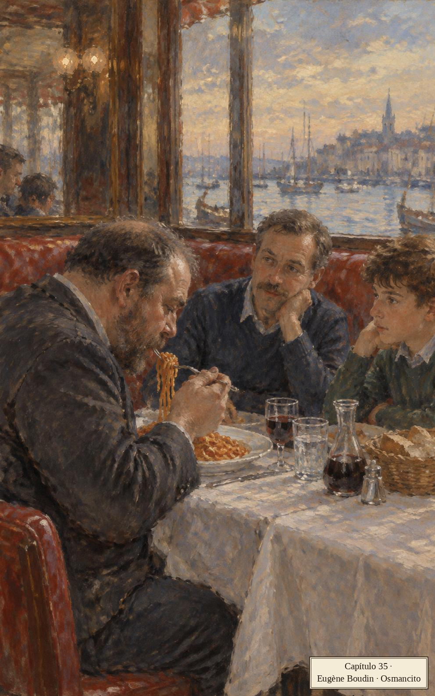
La radio habla sola: una mujer le cuenta a Mel, el animador, que odia su cara, que mirarse es inevitable, y pregunta a qué se parecía uno antes de nacer y qué cara tendrá en el más allá.
Babette llevaba puesto el conjunto de gimnasia casi todo el tiempo. Era un conjunto gris sencillo, holgado y caído. Cocinaba con él, llevaba a los niños a la escuela, se lo ponía para la ferretería y la papelería. Lo pensé un rato y decidí que no había nada excesivamente raro en eso, nada de qué preocuparse, ninguna razón para creer que se estaba hundiendo en la apatía y la desesperanza.
Párrafo 2
El conjunto gris es un signo que Jack lee y decide no leer: «nada excesivamente raro». La novela enseña a mirar la ropa como síntoma: cuando alguien deja de vestirse para el mundo, el mundo empieza a sobrarle. Ese «decidí» delata lo que finge no ver.
Jack pregunta a Babette cómo se siente. Ella pasa más tiempo con Wilder; Wilder la ayuda a pasar. Él necesita a la Babette sana de antes; ella pregunta qué es necesitar. ¿Sigue el miedo? No se ha ido, Jack. ¿El niño habla cada vez menos? Mejor: hablar es radio.
Denise no dejaba salir a correr a su madre sin que ella prometiera aplicarse capas de gel protector solar. La muchacha la seguía fuera de la casa para darle un último chorro de loción en la nuca, y luego se paraba de puntillas para extenderlo parejo. Trataba de cubrir cada punto expuesto. Las cejas, los párpados. Tenían amargas discusiones sobre la necesidad de esto. Denise decía que el sol era un riesgo para una persona de piel blanca. Su madre sostenía que todo ese negocio era publicidad para la enfermedad.
Párrafo 17
La discusión madre-hija se libra con loción: Denise unta, Babette argumenta. La ternura va por contraste: la hija cuida el cuerpo de la madre mientras la madre teoriza contra el miedo («publicidad para la enfermedad»). En esta familia el amor casi nunca dice «te quiero»: aplica capas.
Babette se defiende con física propia: una corredora solo recibe rayos de refilón; los directos son los peores. Jack no está seguro de que esté equivocada. Ella remata: el protector, el mercadeo, el miedo y la enfermedad son un solo paquete corporativo.
Llevé a Heinrich y a su amigo el encantador de serpientes, Orest Mercator, a la franja comercial a cenar. Eran las cuatro de la tarde, la hora en que el calendario de entrenamiento de Orest marcaba la comida principal. A pedido suyo fuimos a Vincent's Casa Mario, una estructura de búnker con ventanas de tronera que parecía parte de algún sistema de defensa costero.
Párrafo 23
Orest Mercator se presenta como un gladiador: nombre completo, oficio y horario de comidas. Y su restaurante es un búnker de defensa costera: la ambientación ya entrena para la jaula.
Orest explica: duerme sentado, carga carbohidratos, no quiere llegar al tope antes de tiempo. ¿Ansiedad? Lo único negativo sería que no lo dejaran entrar a la jaula.
Me gustaba ver comer a Orest. Inhalaba la comida según principios aerodinámicos. Diferencias de presión, velocidades de admisión. Le entraba en silencio y con propósito, cargando, centrándose, aparentemente más importante consigo mismo con cada bola de almidón que le pasaba por la lengua.
Párrafo 42
Verbo técnico para lo animal: «velocidades de admisión». Lenguaje de ingeniería aplicado a un muchacho comiendo pasta: broma y respeto a la vez. Tratar lo ridículo con toda precisión es la forma más fina del humor.
Jack pone las cartas sobre la mesa: ¿le tiene miedo a la muerte? Orest leyó que hoy hay más muertos que en toda la historia junta, y padre e hijo la enredan veinte líneas: los muertos de ahora, los contables, los ahogados. Su entrenador, un musulmán Sunny, enseña: respira, no pienses; sé una serpiente.
Pensaron en eso. Yo miraba comer a Orest. Lo miraba echarse el espagueti a la garganta como con una horca. La cabeza seria permanecía inmóvil, un portal para la comida que volaba del tenedor mecánico. Qué propósito transmitía, qué sentido de un curso de acción fijo, seguido sin reservas. Si cada uno de nosotros es el centro de su existencia, Orest parecía empeñado en agrandar el centro, hacerlo todo. ¿Es esto lo que hacen los atletas, ocupar el yo más plenamente? Es posible que los envidiemos por una destreza que tiene poco que ver con el deporte. Al prepararse para un peligro, se escapan de él en un sentido más profundo, moran en alguna exploración angélica, capaces de saltar fuera del morir cotidiano. ¿Pero era Orest un atleta? No haría otra cosa que sentarse: sentarse sesenta y siete días en una jaula de vidrio, esperando que lo mordieran en público.
Párrafo 66
El narrador piensa en voz alta: los atletas «ocupan el yo» y huyen del «morir cotidiano». Y tira la idea abajo con una frase: Orest no hará nada, solo se sentará a que lo muerdan. Idea grande y ridículo conviven sin que el texto decida por ti.
«No podrás defenderte», dije. «No solo eso: estarás en una jaula con las criaturas más viscosas, temidas y repulsivas de la tierra. Serpientes. La gente tiene pesadillas con serpientes. Vertebrados rastreros, reptantes, de sangre fría y ponederos. La gente va al psiquiatra. Las serpientes tienen un lugar viscoso especial en nuestro inconsciente colectivo. Y tú vas a meterte voluntariamente en un espacio cerrado con treinta o cuarenta de las serpientes más venenosas del mundo.»
Párrafo 67
Jack enumera: rastreros, reptantes, sangre fría, ponederos, y apela al «inconsciente colectivo»: el profesor dando cátedra del horror. La enumeración taxonómica es su manera de manejar el miedo. Y habla de la muerte de Orest porque no se atreve a hablar de la propia.
¿Viscosas? No: víboras de Gabón, mambas, la serpiente terrestre más veloz. Cincuenta mil mueren al año de mordedura: estaba en la tele anoche. Todo estaba en la tele anoche, dice Orest. Un yo imperial de aspiración tabloide. Si el yo es muerte, ¿cómo puede ser más fuerte que la muerte?
Pedí la cuenta. Destellos extraños del señor Gray. Una imagen lloviznante en shorts y medias grises. Saqué varios billetes de la billetera, frotando fuerte con los dedos para asegurarme de que no hubiera otros pegados. En el espejo del motel estaba mi esposa de cuerpo entero, cuerpo blanco, senos llenos, rodillas rosadas, dedos romos, vistiendo solo calentadores de menta, como una animadora de segundo año encabezando los gritos en una orgía.
Párrafo 77
El celo no se anuncia: entre la cuenta y los billetes, el espejo del motel se interpone con la esposa de cuerpo entero. Así trabaja la mente de Jack: la imagen del rival no se piensa, se cuela. La frase final - «como una animadora en una orgía» - es celos con gracia: la peor imagen, contada de la mejor manera.
En casa, Babette plancha. Jack la pone al día: Denise compactó las pastillas. ¿El Gray compuesto o el individual? El macho sigue la senda de la rabia homicida, dice ella, y no lo ayudará a encontrar ni al hombre ni a su medicina: cuando Jack muera, ella se dejará caer al suelo. Que se pregunte qué quiere más: aliviar su miedo antiguo o vengar su orgullo macho herido.
Fui por el pasillo a ayudar a Steffie a terminar de empacar. Un comentarista deportivo decía: «No están abucheando: están diciendo "¡Bruce, Bruce!"». Denise y Wilder estaban ahí con ella. Deduje por la atmósfera velada que Denise había estado dando consejos confidenciales sobre las visitas a padres distantes. El vuelo de Steffie saldría de Boston y haría dos escalas entre Iron City y Ciudad de México, pero no tendría que cambiar de avión, así que la situación parecía manejable.
Párrafo 93
El televisor comenta un partido - «no abuchean, dicen ¡Bruce, Bruce!» - mientras la familia prepara una despedida. Este contrapunto es una firma de la novela: la banda sonora del país no sabe lo que pasa en la sala, y sin embargo lo comenta.
Steffie empaca para volar donde su madre: ¿cómo la reconoceré?, ¿y si no me devuelve? Denise alimenta el guion: un padre se queda con la hija, el otro contrata secuestradores; mejor contratar gente, así tienes a alguien que ya lo ha hecho. Jack promete ir él mismo a México. «Bruce, Bruce», dice el televisor.
Al día siguiente hubo una evacuación por un olor nocivo. Vehículos de SIMUVAC por todas partes. Hombres en trajes Mylex patrullaban las calles, muchos con instrumentos para medir el daño. La consultora que concibió la evacuación reunió a un grupito de voluntarios filtrados por computadora en una furgoneta de la policía, en el estacionamiento del supermercado. Hubo media hora de arcadas y vómitos autoinducidos. El episodio se grabó en video y se envió a alguna parte para su análisis.
Párrafo 116
SIMUVAC aparece rodeado de contratistas, voluntarios filtrados por computadora y vómitos autoinducidos grabados en video. La catástrofe se ensaya como una producción. El video se envía a un destino impreciso: quienes participan no alcanzan a ver todo el circuito.
Tres días después, un olor nocivo de verdad cruzó el río a la deriva. Una pausa, una cuidadosa reflexión, parecieron posarse sobre el pueblo. El tráfico se movía más despacio, los conductores eran exageradamente corteses. No había señal de acción oficial, ni camionetas ni ambulancias pintadas en colores primarios. La gente evitaba mirarse directamente. Un escozor irritante en las fosas nasales, un gusto a cobre en la lengua. Con el paso del tiempo, la voluntad de no hacer nada pareció ahondar, fijarse firmemente. Había quienes negaban oler nada en absoluto. Con los olores siempre es así. Había quienes declaraban no ver la ironía de su inacción. Habían participado en el simulacro de SIMUVAC pero se resistían a huir ahora. Había quienes se preguntaban qué causaba el olor, quienes se veían preocupados, quienes decían que la ausencia de personal técnico significaba que no había nada de qué preocuparse. Empezaron a llorarnos los ojos.
Párrafo 117
Llegado el olor de verdad, nadie huye; la voluntad de no hacer nada «se fija firmemente». El simulacro no preparó para el evento: lo reemplazó. La yuxtaposición de los dos olores, sin subrayado, es el argumento.
Tres horas después, el vapor se levanta y los salva de sus deliberaciones formales.
Capítulo 36: Cosecha de Otoño
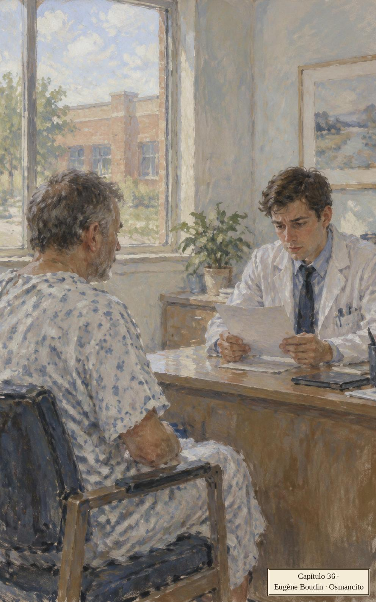
De vez en cuando, Jack piensa en la pistola Zumwalt escondida en el dormitorio.
Llegó la temporada de los insectos colgantes. Casas blancas con orugas colgando de los aleros. Piedras blancas en los caminos de entrada. Se puede caminar de noche por el medio de la calle y oír a las mujeres hablando por teléfono. El tiempo más cálido produce voces en la oscuridad. Hablan de sus hijos adolescentes. Qué grandes, qué rápidos. Los hijos casi asustan. Las cantidades que comen. La manera en que se yerguen en los marcos de las puertas. Estos son los días llenos de bichos gomosos. Están en la grama, pegados al revestimiento, suspendidos en el aire, colgando de los árboles y los aleros, pegados a las mallas de las ventanas. Las mujeres hablan a larga distancia con los abuelos de los muchachos que crecen. Comparten el teléfono Trimline, viejecitos radiantes en suéteres tejidos a mano con ingresos fijos.
Párrafo 2
La novela clasifica los días como un naturalista del suburbio: por lo que cuelga de los aleros. Y oye el anuncio dentro de la vida: esos abuelos tienen la luz de la publicidad telefónica.
¿Qué les pasa a esos abuelos cuando se acaba el comercial? A Jack lo llama su exesposa Janet, ahora Madre Devi, a cobro revertido: el swami de su ásram pregunta si Heinrich irá en verano a Montana; estamos en la Era de la Oscuridad, cuarta y última. Ella no quiere nada, dice; solo saludarlo. Extraña su voz.
Colgué y salí a caminar. Las mujeres estaban en sus casas iluminadas, hablando por teléfono. ¿Tenía el swami ojos chispeantes? ¿Podría responder a las preguntas del muchacho donde yo había fracasado, dar seguridades donde yo había incitado riña y debate? ¿Qué tan final es la Era de la Oscuridad? ¿Significa una destrucción suprema, una noche que traga la existencia tan completamente que yo quede curado de mi propio morir solitario? Escuché hablar a las mujeres. Todo sonido, todas almas.
Párrafo 22
Jack traduce la Era de la Oscuridad a su esperanza privada: una noche que se lo trague todo y lo cure de morir. «Todo sonido, todas almas»: el pueblo en llamadas telefónicas, la comunión de los santos en versión doméstica.
Llegan los noventa hitlerólogos del congreso, nombres en letra gótica en la solapa, alegres, puntuales, dulceros. Jack los recibe con un discurso en alemán armado de palabras iguales en ambos idiomas: la madre de Hitler, su hermano, su perro Wolf, zapatos, medias, jazz, cerveza, béisbol. Luego evita a los alemanes y se esconde en su oficina. La pistola, agazapada entre las franelas como un insecto tropical, le da una punzada: el estremecimiento de guardar un secreto.
Qué artefacto tan ladino es una pistola. Una tan pequeña, en particular. Una cosa íntima y astuta, una historia secreta del hombre que la posee. Recordé cómo me había sentido unos días antes, buscando el Dylar. Como alguien que espía la basura de la familia. ¿Me estaba sumergiendo, poco a poco, en una vida secreta? ¿Pensaba que era mi última defensa contra la ruina preparada para mí con tanta naturalidad por la fuerza o no-fuerza, el principio o poder o caos que determina tales cosas? Quizá empezaba a entender a mis exesposas y sus vínculos con la inteligencia.
Párrafo 29
La pistola como biografía: «una historia secreta del hombre que la posee». Jack ya junta tres secretos - el arma, el Dylar, la basura espiada - y por eso entiende a sus exesposas, las del microfilm: la vida secreta da la sensación de controlar algo. La novela ata tres tramas con una palabra.
Recoge a Steffie en el aeropuerto: Dana, su madre, reseña novelas gordas para un archivo secreto y piensa «venirse del frío». A la mañana siguiente Jack sale a Glassboro, a una clínica llamada Autumn Harvest Farms - ¿quién bautiza así una clínica? - , con frascos de muestras y un relicario de plástico en tres bolsas: la más solemne de las inmundicias.
Tenía mis recelos. Me quitaron las muestras, me sentaron ante una consola de computadora. En respuesta a las preguntas de la pantalla fui tecleando la historia de mi vida y mi muerte, poco a poco, cada respuesta provocando más preguntas en una progresión implacable de conjuntos y subconjuntos. Mentí tres veces. Me dieron una bata holgada y una pulsera de identificación. Me mandaron por pasillos estrechos a que me midieran y pesaran, a pruebas de sangre, registros cerebrales, la grabación de las corrientes que me atraviesan el corazón. Me escanearon y me tantearon en cuarto tras cuarto, cada cubículo un poco más pequeño que el anterior, más duramente iluminado, más vacío de muebles humanos. Siempre un técnico nuevo. Siempre compañeros pacientes sin cara en los pasillos de laberinto, cruzando de cuarto en cuarto, en batas idénticas. Nadie saludaba. Me sujetaron a un aparato de sube y baja, me pusieron cabeza abajo y me dejaron colgando sesenta segundos. Un impreso emergió de un aparato cercano. Me pusieron en una caminadora y me dijeron que corriera, corriera. Me amarraron instrumentos a los muslos, me plantaron electrodos en el pecho. Me insertaron en un bloque de imágenes, una especie de escáner computarizado. Alguien tecleaba en una consola, transmitiendo un mensaje a la máquina que haría mi cuerpo transparente. Oí vientos magnéticos, vi destellos de aurora boreal. La gente cruzaba el pasillo como almas errantes, llevando su orina en alto en vasitos pálidos. Estuve de pie en un cuarto del tamaño de un closet. Me dijeron que sostuviera un dedo frente a mi cara, que cerrara el ojo izquierdo. El panel se cerró, un relámpago blanco. Estaban tratando de ayudarme, de salvarme.
Párrafo 34
El itinerario médico se escribe como descenso al inframundo con planilla de admisión: cuartos cada vez más pequeños, la orina en alto como ofrenda. «Estaban tratando de salvarme» llega sin ironía señalada: tú decides si es consuelo o epitafio.
Finalmente, vestido otra vez, me senté frente a un escritorio, ante un joven nervioso de guardapolvo blanco. Estudió mi expediente, murmurando algo sobre ser nuevo en esto. Me sorprendió descubrir que el dato no me molestaba. Creo que incluso me alivió.
Párrafo 35
El veredicto lo dará un novato nervioso, y eso alivia a Jack: es más fácil oír la muerte de alguien que tartamudea. Fíjate en quién tiembla ahora: el poder del consultorio se invirtió.
«¿Cuánto tardan los resultados?» «Los resultados están listos.»
«Pensé que estábamos aquí para una discusión general. La parte humana. Lo que las máquinas no pueden detectar. En dos o tres días estarían listos los números de verdad.»
Párrafo 38
«La parte humana»: Jack cree que ha venido a conversar y la clínica ya terminó de medirlo. El desfase entre lo que el paciente cree que pasa y lo que ya pasó es la forma que toma aquí el miedo.
Los números están listos. Jack no está seguro de estarlo él: una persona sana podría enfermar de solo hacerse estos exámenes.
«¿Por qué habría de enfermarse alguien? Estos son los aparatos de prueba más precisos que existen. Tenemos computadoras sofisticadas para analizar los datos. Este equipo salva vidas. Créame, lo he visto. Tenemos equipo que funciona mejor que la última máquina de rayos X o el escáner CAT. Podemos ver más hondo, con más precisión.»
Párrafo 41
El discurso del técnico es publicidad pura: «salva vidas», «créame, lo he visto». La fe en el equipo suena igual que la fe, con la diferencia de que se compra.
Parecía estar ganando confianza. Era un muchacho de ojos mansos y mala piel y me recordó a los muchachos del supermercado que se paran al final de la caja empacando la mercancía.
Párrafo 42
El sacerdote de ese templo es un muchacho de mala piel que en otra vida empaca mandado. El símil del supermercado baja al especialista de su altar: la novela nunca deja que la autoridad dure más de una frase.
Sigue el cuestionario ritual, leído del impreso: la fatiga leve es una respuesta popular; del apetito se dirá lo que digan los números; los problemas de sueño vienen en las últimas etapas - de la vida - ; Jack declara intranquilidad de bajo umbral y avanzan de «bien» en «bien». A algunos les gusta alargarlo: se interesan en su propia condición, casi un pasatiempo.
«¿Quién necesita nicotina? No solo eso: rara vez tomo café y desde luego nunca con cafeína. No entiendo qué le ve la gente a toda esta estimulación artificial. Yo me elevo solo con caminar por el bosque.»
Párrafo 81
Jack se presenta como atleta de la abstención: se eleva «caminando por el bosque». El cuestionario se volvió confesionario y él quiere absolución; empieza a mentir por impulso, antes de que haga falta.
«Sin cafeína siempre ayuda», dice el muchacho, y Jack piensa: sí, premia mi virtud, dame vida.
«Y luego está la leche», dije. «La gente no se conforma con la cafeína y el azúcar. Quieren la leche también. Todos esos ácidos grasos. No toco la leche desde niño. No toco la crema espesa. Como comidas suaves. Casi no toco el licor fuerte. Nunca entendí a qué venía tanto alboroto. Agua. Esa es mi bebida. Un hombre puede confiar en un vaso de agua.»
Párrafo 84
La letanía de renuncias construye una pureza sospechosa de tan completa. Cuando la frase suena más limpia - «un vaso de agua» - , el técnico dirá «hablando de agua» y soltará la trampa. Ritmo de chiste, contenido de pesadilla.
Hablando de agua, dice el técnico: ¿ha estado expuesto a contaminantes industriales? ¿Asbesto? ¿Ha oído hablar del derivado Nyodene? ¿Debería haber oído, según el impreso?, responde Jack. Hay rastros en su torrente sanguíneo. ¿Cómo puede ser, si nunca ha oído hablar de eso? El escáner dice que está ahí: números entre corchetes, con estrellitas.
«¿Me está diciendo que el impreso muestra los primeros signos ambiguos de una condición apenas perceptible derivada de una exposición mínima aceptable a un derrame?»
Párrafo 97
Jack responde a la mala noticia hablando la jerga que lo condena: si la frase suena a formulario, la muerte parecerá un trámite. Él mismo se lo pregunta una línea después: ¿por qué hablaba así?
El escáner magnético es bastante claro, dice el muchacho.
¿Qué había pasado con nuestro acuerdo tácito de avanzar con paso vivo por el programa, sin indagaciones controversiales que consumieran tiempo?
Párrafo 100
Ese «acuerdo tácito» - pasar rápido y sin honduras por el trámite del propio diagnóstico - es una buena definición de la manera de vivir de Jack: ir de «bien» en «bien» para no llegar nunca a la pregunta verdadera.
¿Qué pasa con quien tiene rastros de eso en la sangre? Le sale una masa nebulosa. ¿No se sabía solo de ratas? Acabas de decir que nunca habías oído hablar de ella, lo atrapa el técnico. La masa es un posible crecimiento sin forma definida - las fotos son clarísimas - y en el peor caso hace que una persona muera. «Habla en inglés, por Dios», estalla Jack. El muchacho le cobra y le entrega el sobre sellado: tu doctor conoce los símbolos. El potasio no lo ven aquí.
Me sorprendí estrechándole la mano calurosamente. Minutos después estaba en la calle. Un muchacho cruzó patabierto un césped público, empujando un balón de fútbol delante de sí. Un segundo chico estaba sentado en la grama, quitándose las medias con tirones del talón. Qué literario, pensé con malhumor. Calles espesas con los detalles de la vida impulsiva mientras el héroe medita la última fase de su morir. Era un día parcialmente nublado, con vientos que amainaban hacia el atardecer.
Párrafo 127
«Qué literario»: Jack ve dos muchachos en un césped y se descubre dentro de una novela, «el héroe» que «medita su morir». El personaje que protesta por la prosa de su propia vida: la broma suelta la tensión justo cuando más duele.
Esa noche caminé por las calles de Blacksmith. El resplandor de los televisores de ojos azules. Las voces en los teléfonos de teclas. Lejos, los abuelos se acurrucan en una butaca, compartiendo ansiosos el auricular mientras las ondas portadoras se modulan en señales audibles. Es la voz de su nieto, el muchacho que crece, cuya cara aparece en las fotos dispuestas alrededor del teléfono. La alegría les acude a los ojos pero está empañada, infundida de un saber triste y complejo. ¿Qué les está diciendo el jovencito? ¿Que el mal estado de su cutis lo hace infeliz? ¿Que quiere dejar la escuela y trabajar a tiempo completo en Foodland, empacando mercancía? Les dice que le gusta empacar mercancía. Es lo único en la vida que le satisface. Poner primero los galones, escuadrar los six-packs, usar doble bolsa para la mercancía pesada. Lo hace bien, tiene el don, ve los artículos acomodados en la bolsa antes de tocar nada. Es como el zen, abuelito. Saco dos bolsas de golpe, meto una dentro de la otra. No magulles la fruta, cuidado con los huevos, el helado va en bolsa de congelador. Mil personas pasan por mi lado cada día pero nadie me ve jamás. Me gusta, abuelita, es totalmente inofensivo, es así como quiero pasar mi vida. Y ellos escuchan con tristeza, queriéndolo más, las caras pegadas al liso Trimline, a la Princess blanca del dormitorio, al sencillo Rotary marrón del refugio entablado del abuelo en el sótano. El viejo se pasa una mano por la mata de pelo blanco, la mujer se sostiene los espejuelos doblados contra la cara. Las nubes cruzan la luna poniente, las estaciones cambian en un montaje sombrío, adentrándose en la quietud invernal, un paisaje de silencio y hielo.
Párrafo 128
La escena final es un anuncio de teléfonos visto desde dentro: tres marcas de aparatos, un nieto que halla su zen empacando mercancía. La novela lo ama sin burlarse: ese arte pequeño es de lo poco que alguien hace bien y en paz en todo el libro.
El capítulo se cierra repitiendo la fórmula, como un sondeo: tu doctor conoce los símbolos.
Capítulo 37: El largo paseo
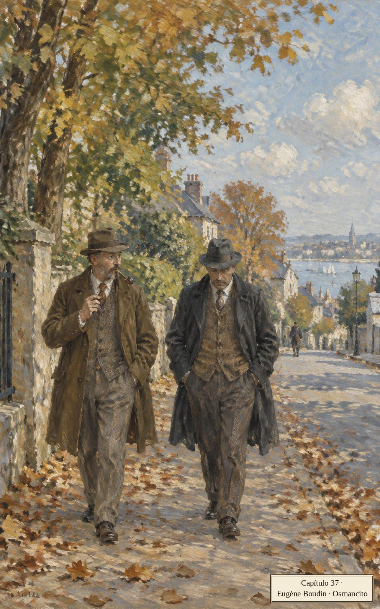
Jack se encuentra a Murray después de su seminario sobre cine de choques de carros. Lo que empieza como un paseo se convierte en una larga caminata socrática con consecuencias prácticas. Murray fuma ahora en pipa.
Bajó los ojos, sonriendo. La pipa tenía una caña larga y estrecha y un hornillo cúbico. Era de un marrón pálido y se parecía a un utensilio doméstico sumamente disciplinado, quizá una antigüedad amish o shaker. Me pregunté si la habría elegido para que combinara con su perilla un tanto severa. Una tradición de virtud austera parecía flotar alrededor de sus gestos y expresiones.
Párrafo 6
Murray mira la pipa como si fuese un mueble de una comunidad austera. La comparación le permite darle una historia y una virtud antes de fumarla: hasta ese objeto pequeño participa del personaje que está construyendo.
«¿Por qué no podemos ser inteligentes ante la muerte?», abre Jack. Murray: Iván Ilich gritó tres días; eso es lo más inteligente que llegamos a ser. Quizá es el miedo el que la trae, prueba Jack.
«No sé qué quiero decir. Solo sé que estoy haciendo los movimientos de vivir. Estoy técnicamente muerto. A mi cuerpo le está creciendo una masa nebulosa. Rastrean estas cosas como a satélites. Todo por un subproducto de insecticida. Hay algo artificial en mi muerte. Es superficial, insatisfactoria. No pertenezco a la tierra ni al cielo. Deberían grabar una lata de aerosol en mi lápida».
Párrafo 13
La lata de aerosol como lápida: el epitafio de una época que muere por subproductos. Jack llora su muerte y Murray solo le responde «bien dicho»: quiere que le discutan, que lo eleven, no que lo admiren.
¿Le parece injusto? Por supuesto, dice Jack, ¿o eso es una respuesta trillada? Y saca su hoja de vida.
«Mira cómo he vivido. ¿Ha sido mi vida una carrera loca tras el placer? ¿He estado empeñado en destruirme, usando drogas ilegales, manejando carros rápidos, bebiendo en exceso? Un poco de jerez seco en las fiestas de la facultad. Como comidas insípidas».
Párrafo 19
«No, no es cierto», responde Murray, que sabe del jerez y de la comida. La defensa de Jack es un récord de buena conducta, como si la muerte revisara méritos. Es la lógica del niño ante el castigo.
¿Le parece prematura? Toda muerte es prematura, dice Jack: hay gente que vive ciento cincuenta años, según un titular del súper. ¿El arrepentimiento más hondo es lo que quedó sin hacer? El arrepentimiento más hondo es la muerte; quiero vivir. Murray: «De la película homónima de Robert Wise, con Susan Hayward como Barbara Graham». ¿Así que ni aunque hubiera logrado todo lo que soñó? Idea elitista, estalla Jack: ¿le preguntarías al empacador del súper si teme morir por los empaques que le quedan? Murray le ofrece su primer consuelo.
«Estoy diciendo que no puedes decepcionar a los vivos hundiéndote en la autocompasión y la desesperación. La gente dependerá de tu valentía. Lo que la gente busca en un moribundo es una nobleza terca de voz ronca, una negativa a rendirse, con momentos de humor indomable. Estás creciendo en prestigio mientras hablamos. Estás creando una luz difusa alrededor de tu propio cuerpo. Tiene que gustarme.»
Párrafo 34
Murray convierte el diagnóstico en capital social: el moribundo como espectáculo edificante. La «nobleza de voz ronca» es el guion del buen morir de las películas, ofrecido como papel protagónico.
Bajamos por el medio de una calle empinada y sinuosa. No había nadie alrededor. Las casas de allí eran viejas e imponentes, asentadas sobre estrechas escalinatas de piedra en parcial deterioro.
Párrafo 35
Después de la oferta de Murray, la calle: vacía, vieja, en deterioro. La novela puntea la conversación con paisajes que no comentan y lo dicen todo.
La caminata recorre los consuelos, uno por uno. ¿Es el amor más fuerte que la muerte? Ni de lejos. ¿La vida sin muerte estaría incompleta? La muerte es lo que la incompleta. ¿Saber que morimos hace la vida más preciosa? ¿De qué sirve un valor basado en el miedo? ¿Saber la fecha exacta? No: ante lo desconocido podemos fingir que no está.
Cruzamos un viejo puente de autopista, enrejado, cubierto de objetos tristes y desteñidos. Seguimos un sendero a lo largo de una quebrada, nos acercamos al borde del campo de juego de la escuela secundaria. Mujeres traían aquí a los niños pequeños a jugar en los fosos de salto de longitud.
Párrafo 52
Los fosos de salto con niños: la vida sigue jugando al borde del hoyo. La frase llega sin subrayado; ese es el efecto.
«¿Cómo la esquivo?», pregunta Jack. Podrías poner tu fe en la tecnología, dice Murray: te trajo hasta aquí, puede sacarte; crea apetito de inmortalidad y amenaza la extinción. Es lujuria alejada de la naturaleza.
«Es lo que inventamos para ocultar el terrible secreto de nuestros cuerpos en descomposición. Pero también es vida, ¿no? Prolonga la vida, provee órganos nuevos para los que se gastan. Aparatos nuevos, técnicas nuevas cada día. Láseres, másers, ultrasonido. Entrégate a ella, Jack. Cree en ella. Te meterán en un tubo reluciente, irradiarán tu cuerpo con la materia básica del universo. Luz, energía, sueños. La propia bondad de Dios».
Párrafo 56
El tono es de comercial de salud: «tubo reluciente», «la bondad de Dios». Murray no cree necesariamente esto; está probando consuelos con Jack como quien prueba zapatos. Jack declina: por ahora no quiere ver más doctores.
Entonces queda la otra vida: reencarnación, resurrección; escoge la que te guste. Pero Jack quiere creer de verdad. La otra vida, sentencia Murray, es una idea dulce y terriblemente conmovedora: tómala o déjala. Mientras tanto, sobrevive a un intento de asesinato: tónico instantáneo. ¿Quién querría matarme?
Una vez más se encogió de hombros. «Sobrevive a un choque de tren en el que mueran cien personas. Sal despedido cuando tu Cessna monomotor se estrelle en un campo de golf tras golpear un cable de alta tensión bajo una lluvia torrencial, minutos después de despegar. No tiene que ser un asesinato. El punto es que estás de pie al borde de una ruina humeante donde otros yacen inertes y retorcidos. Esto puede contrarrestar el efecto de cualquier cantidad de masas nebulosas, al menos por un tiempo».
Párrafo 72
Murray imagina el carisma del sobreviviente con detalle de guionista: la fotografía, los escombros, una vida que cobra valor por haber estado cerca de perderse. Su conversación empieza a convertir el peligro en una forma de prestigio.
«¿Te ha servido el alemán?», pregunta Murray. No puedo decir que sí. ¿Para qué has trabajado todos estos años? Para ponerme bajo un hechizo, supongo. Y los alemanes perdieron la guerra, después de todo. Eso mismo dijo Denise.
«La gente desvalida y temerosa se siente atraída por figuras mágicas, figuras míticas, hombres épicos que intimidan y se ciernen oscuramente».
Párrafo 86
Murray diagnostica el oficio de Jack: estudiar a Hitler como talismán. La frase «se ciernen oscuramente» la repetirá el libro para las figuras que prometen protección.
«Es totalmente obvio. Querías ser ayudado y protegido. El horror abrumador no dejaría espacio para tu propia muerte. "Sumérjeme", dijiste. "Absorbe mi miedo". En un nivel querías ocultarte en Hitler y su obra. En otro nivel querías usarlo para crecer en importancia y fuerza. Percibo una confusión de medios. No es que esté criticando. Fue algo audaz lo que hiciste, un empuje audaz. Usarlo. Puedo admirar el intento aunque vea cuán totalmente tonto era, aunque no más tonto que llevar un amuleto o tocar madera. Seiscientos millones de hindúes se quedan sin ir a trabajar si las señales no son favorables esa mañana. Así que no te estoy señalando a ti solo».
Párrafo 90
La escena madre de la novela: Jack confiesa su estrategia y Murray la nombra: confusión de medios, esconderse y brillar a la vez. La absolución final - los hindúes, el amuleto, tocar madera - iguala al profesor de Hitler con cualquiera que evite pasar bajo una escalera.
¿Por qué este miedo tan largo?, pregunta Jack en el supermercado. No sabes reprimir, dice Murray: todos sabemos que no hay escape; unos reprimen mejor que otros. ¿Y cómo sabemos que la represión existe? Freud lo dijo; hablando de figuras que se ciernen.
Lo seguí al supermercado. Ráfagas de color, capas de sonido oceánico. Caminamos bajo una pancarta brillante que anunciaba una rifa para recaudar fondos contra alguna enfermedad incurable. La redacción parecía indicar que el ganador se llevaría la enfermedad. Murray comparó la pancarta con una bandera de plegaria tibetana.
Párrafo 106
La redacción ambigua es un chiste de una línea y también el tema: la caridad y los anuncios se escriben con la misma gramática. La bandera tibetana eleva el supermercado a templo, o baja el templo a supermercado.
Tomó una caja de Handi-Wrap II, leyendo el tipo de letra del empaque, estudiando los colores. Olió un paquete de sopa deshidratada. Los datos estaban fuertes ese día.
Párrafo 113
«Los datos estaban fuertes»: Murray recibe el supermercado como un médium recibe señales. El II de Handi-Wrap, como en una secuela de película, lo delata todo.
¿No soy más sano por no saber reprimir?, prueba Jack. ¿Te sientes heroico?, dice Murray. No. Entonces probablemente no lo eres. Lo antinatural es el miedo; sabemos demasiado, y por eso reprimimos: es el idioma natural de la especie. Hago ejercicio, cuido mi cuerpo, se defiende Jack. No, no lo haces.
Murray escribió algo en su libretita. Lo observé esquivar con destreza una docena de huevos caídos que rezumaban materia de yema de un cartón roto.
Párrafo 125
Murray esquiva los huevos rotos con destreza y sigue tomando notas. Entre las teorías sobre la muerte, el cuerpo sabe resolver ese pequeño peligro inmediato. La atención práctica dura apenas una frase.
«¿Por qué me siento tan bien cuando estoy con Wilder?», pregunta Jack. Percibes su ego total, su libertad de límites, responde Murray. ¿En qué sentido libre de límites?
«Él no sabe que va a morir. No conoce la muerte en absoluto. Tú atesoras esta bendición de simplote suya, esta exención del daño. Quieres acercarte a él, tocarlo, mirarlo, respirarlo. Qué suerte tiene. Una nube de no-saber, una personita omnipotente. El niño lo es todo, el adulto nada. Piénsalo. La vida entera de una persona es el desenvolvimiento de este conflicto. No es de extrañar que estemos desconcertados, aturdidos, destrozados».
Párrafo 129
Murray ve en Wilder una libertad que los adultos perdieron: todavía no conoce del todo los límites que ellos temen. Jack disfruta de su compañía; Murray convierte ese alivio en una teoría. Su disculpa final devuelve algo de ligereza a la conversación.
¿No exageras?, dice Jack; creamos cosas bellas, civilizaciones. Evasiones hermosas, contesta Murray. Queda un último método: hay los que matan y los que mueren. Casi todos nos acostamos y morimos. Pero piensa qué es ser un asesino: si él muere, tú no puedes morir; matarlo es ganar crédito de vida.
«Hablo en teoría. En teoría, la violencia es una forma de renacimiento. El que muere sucumbe pasivamente. El que mata sigue vivo. Qué ecuación tan maravillosa. A medida que una horda merodeadora amasa cadáveres, acumula fuerza. La fuerza se acumula como un favor de los dioses».
Párrafo 141
La teoría de los killers y los diers, contada con entusiasmo de salón de clases. Jack pregunta qué tiene que ver con él; Murray dice que es solo teoría, dos académicos caminando. El lector ya sabe que Jack tiene una pistola guardada entre las franelas.
«Dices que esto es lo que la gente ha hecho durante siglos», dice Jack. Todavía lo hacen: en escala íntima, en multitudes. Matar para vivir.
Pareció encogerse de hombros. «La matanza nunca es aleatoria. Cuanta más gente matas, más poder ganas sobre tu propia muerte. Hay una precisión secreta obrando en las matanzas más salvajes e indiscriminadas. Hablar de esto no es hacerle relaciones públicas al asesinato. Somos dos académicos en un ambiente intelectual. Es nuestro deber examinar corrientes de pensamiento, investigar el sentido de la conducta humana. Pero piensa qué emocionante: salir vencedor de una lucha a muerte, ver sangrar al desgraciado».
Párrafo 151
Murray se cubre con la disculpa académica mientras describe el goce con bastante detalle; el contraste es el chiste y el escalofrío. Jack responde con lo que aprendió de él: todo complot es un asesinato en efecto; tramar es morir.
«Empezamos la vida en el caos, en el balbuceo. Al surgir hacia el mundo, intentamos idear una forma, un plan. Hay dignidad en esto. Toda tu vida es un complot, un esquema, un diagrama. Es un esquema fallido pero ese no es el punto. Tramar es afirmar la vida, buscar forma y control. Incluso después de la muerte, muy particularmente después de la muerte, la búsqueda continúa. Los ritos funerarios son un intento de completar el esquema, en ritual. Imagina un funeral de Estado, Jack. Todo es precisión, detalle, orden, diseño. La nación contiene el aliento. Los esfuerzos de un gobierno enorme y poderoso se vuelcan en una ceremonia que disipará el último rastro de caos. Si todo sale bien, si lo logran, alguna ley natural de la perfección queda obedecida. La nación es liberada de la ansiedad, la vida del difunto queda redimida, la vida misma se fortalece, se reafirma».
Párrafo 155
«Tramar es vivir», corrige Murray: la novela entera cabe en esa discusión de tres palabras. El funeral de Estado como último diseño contra el caos; el especialista en Hitler sabe de esas coreografías. Guarda este párrafo: volverá cuando Jack tome su propia decisión.
Nos movimos en un arco amplio de regreso al campus. Calles de sombra profunda y silenciosa, bolsas de basura listas para la recolección. Cruzamos el paso elevado del atardecer, deteniéndonos un momento a mirar los carros pasar disparados. Luz del sol rebotando en el vidrio y el cromo.
Párrafo 158
Después de la teoría del asesinato, el paisaje más hermoso del capítulo: el atardecer sobre el paso elevado, la luz en el cromo. La belleza no comenta; solo está ahí, cobrando.
¿Eres de los que matan o de los que mueren? De los que mueren, responde Jack. ¿Puede uno cambiar? Solo teorizo, se escuda Murray. Al despedirse dice: mejor tú que yo. Babette quiere morir primero, objeta Jack. No estés tan seguro. Murray deja una pregunta: uno se despide de otros toda la vida, ¿cómo se despide de sí mismo? En casa Jack empieza a botar cosas.
Boté alambre de marcos, sujetalibros de metal, portavasos de corcho, llaveros plásticos, botellas empolvadas de mercurocromo y vaselina, brochas costrosas, cepillos de zapatos apelmazados, corrector líquido cuajado. Boté cabos de vela, individuales laminados, agarraderas deshilachadas. Fui tras las perchas acolchadas, los tableros magnéticos de notas. Estaba en un estado vengativo y casi salvaje. Le tenía un rencor personal a esas cosas. De algún modo me habían metido en este lío. Me habían arrastrado hacia abajo, me habían hecho imposible el escape. Las dos muchachas me seguían, guardando un silencio respetuoso. Boté mi cantimplora caqui maltratada, mis ridículas botas de hule hasta la cadera. Boté diplomas, certificados, premios y menciones. Cuando las muchachas me detuvieron, estaba trabajando en los baños, descartando barras de jabón usadas, toallas húmedas, frascos de champú de etiquetas chorreadas y tapas perdidas.
Párrafo 199
Si las cosas lo arrastraron hasta aquí, botarlas es adelgazar para el escape. Tira hasta los diplomas y premios, los medios con que se hizo visible: la confusión de medios en reversa. Las hijas lo miran en silencio, como quien ve un rito.
NOTA IMPORTANTE. En unos días, su nueva tarjeta bancaria automatizada llegará por correo. Si es una tarjeta roja con banda plateada, su código secreto será el mismo de ahora. Si es una tarjeta verde con banda gris, deberá presentarse en su sucursal, con su tarjeta, para idear un nuevo código secreto. Los códigos basados en cumpleaños son populares. ADVERTENCIA. No anote su código. No lleve su código consigo. RECUERDE. No puede acceder a su cuenta a menos que ingrese su código correctamente. Conozca su código. No le revele su código a nadie. Solo su código le permite entrar al sistema.
Párrafo 200
El capítulo de la muerte cierra con el banco hablando en mayúsculas. «Solo su código le permite entrar al sistema»: la otra religión, la que sí funciona siempre. Después de tanta teoría sobre morir y matar, queda este ídolo doméstico que exige fe ciega y castiga los errores de tipeo.
Capítulo 38: La pistola Zumwalt
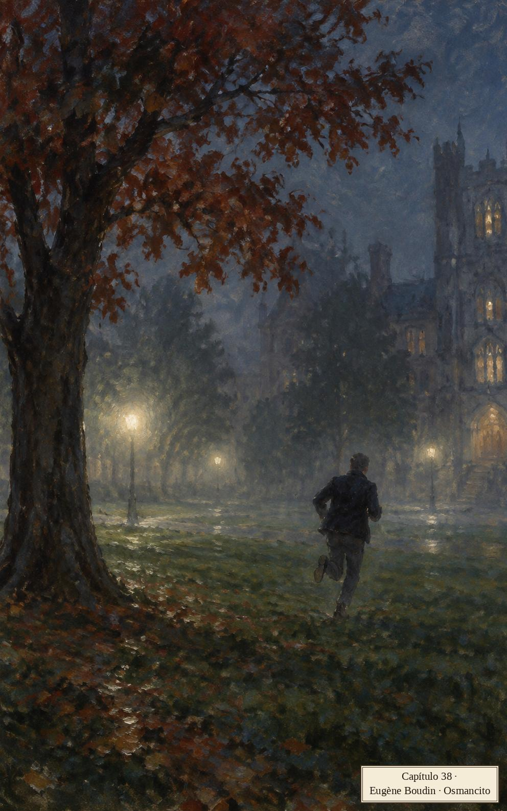
En la cama, Jack le traslada a Babette la doctrina de Murray: hay que reprimir el miedo; es lo natural, lo que nos distingue de los animales. A Babette le suena al revés de lo que nos enseñaron. Ponerse en contacto con la muerte no era lo que tenían en mente.
Ella me acariciaba el hombro, pensando en esto. Destellos grises de un hombre de estática parado junto a una cama doble. Su cuerpo distorsionado, ondulante, inacabado. No tenía que imaginar a su compañera de motel. Nuestros cuerpos eran una sola superficie, el de ella y el mío, pero las delectaciones del tacto quedaban preferidas por el señor Gray. Era su placer el que yo experimentaba, su dominio sobre Babette, su poder barato y sórdido. Pasillo abajo, una voz ansiosa decía: «Si sigues perdiendo tu ovillo de cordel, enjáulalo en una canasta Barney, ponle ganchos organizadores a tu tablero de corcho de la cocina, sujeta la canasta a los ganchos. ¡Sencillo!».
Párrafo 11
El señor Gray es el contacto de Dylar de Babette, el hombre del motel; Jack no sabe aún quién es, pero su cuerpo ya lo sabe: lo invade en la cama como una interferencia de televisor. Y pasillo abajo, la televisión de verdad con su consejo doméstico entusiasta.
Al día siguiente Jack empieza a llevar la Zumwalt a la universidad. El arma crea una segunda realidad que puede dominar en secreto. Qué estúpidas eran estas personas, piensa, entrando a mi oficina desarmadas.
Una tarde saqué el arma del escritorio y la examiné con cuidado. Solo quedaban tres balas en el cargador. Me pregunté cómo habría usado Vernon Dickey la munición que faltaba (o comoquiera que llamen a las balas las personas familiarizadas con las armas de fuego). Cuatro tabletas de Dylar, tres balas de Zumwalt. ¿Por qué me sorprendía descubrir que las balas tuvieran esa forma tan inconfundible de bala? Supongo que creí que en las décadas desde que tomé conciencia de los objetos y sus funciones se les habían dado nombres y formas nuevos a casi todas las cosas. El arma tenía forma de arma, los pequeños proyectiles puntiagudos eran tranquilizadoramente de forma de bala. Eran como cosas de la infancia que uno se encuentra después de cuarenta años, viendo su genio por primera vez.
Párrafo 14
Vernon Dickey le regaló el arma cargada y alguien gastó las balas que faltan; Jack no pregunta más. El asombro ante la forma de bala - objetos que se niegan a volverse obsoletos - lo devuelve a la infancia, donde las cosas son exactamente lo que son.
Esa noche Heinrich cuenta el final de la hazaña de Orest Mercator en la clandestinidad de Watertown: el hombre de las serpientes prometió veintisiete y llevó tres, en un bolso de aerolínea. No eran venenosas. Orest fue mordido a los cuatro minutos, por nada. ¿Cómo te sentirías tú si fueras un imbécil?, dice Heinrich. Feliz de estar vivo, dice Jack.
«Orest no. Desapareció de la circulación. Entró en reclusión total. Nadie lo ha visto desde que pasó. No contesta la puerta, no contesta el teléfono, no aparece por la escuela. El paquete completo».
Párrafo 32
El paquete completo, dice Heinrich con término de mercancía. El muchacho que quería que su nombre significara algo se esconde ahora de su propio nombre. Se acabó, fue un fiasco, siguiente.
Decidí acercarme a mi oficina y echarle un vistazo a unos exámenes finales. La mayoría de los estudiantes ya se había ido, ansiosos por empezar el hedonismo rutinario de otro verano de extremidades desnudas. El campus estaba oscuro y vacío. Había una neblina trémula. Al pasar junto a una hilera de árboles, creí sentir que alguien se pegaba detrás de mí, quizá a unas treinta yardas. Cuando miré, el sendero estaba despejado. ¿Era el arma la que me ponía nervioso? ¿Atrae un arma la violencia hacia sí, atrae otras armas a su campo de fuerza circundante? Caminé rápido hacia Centenary Hall. Oí pasos en la grava, un crujido evidente. Alguien estaba ahí afuera, al borde del estacionamiento, entre los árboles y la neblina. Si tenía un arma, ¿por qué tenía miedo? Si tenía miedo, ¿por qué no corría? Conté cinco pasos, miré rápido a la izquierda, vi una figura moviéndose en paralelo al sendero, entrando y saliendo de la sombra profunda. Rompí en un trote desgarbado, la mano del arma en el bolsillo, apretando la automática. Cuando volví a mirar, no estaba. Reduje la marcha con cautela, crucé un amplio jardín, oí una carrera, la métrica de unos pies saltarines. Venía de la derecha esta vez, a toda velocidad, acercándose rápido. Rompí en una carrera en zigzag, esperando ser un blanco escurridizo para alguien que disparara a mi espalda. Nunca había corrido en zigzag. Mantuve la cabeza baja, viraba con brusquedad e impredecibilidad. Era una manera interesante de correr. Me sorprendió la variedad de posibilidades, la cantidad de combinaciones que podía armar dentro de un marco de virajes a izquierda y derecha. Hice un giro cerrado a la izquierda, lo amplié, corté en seco a la derecha, amagué a la izquierda, fui a la izquierda, me abrí a la derecha. A unas veinte yardas del final del área abierta, abandoné el patrón de zigzag y corrí tan rápido y derecho como pude hacia un roble rojo. Saqué el brazo izquierdo, derrapé alrededor del árbol en un contramovimiento de cabeza, usando al mismo tiempo la mano derecha para sacar la Zumwalt del bolsillo de la chaqueta, de modo que ahora encaraba a la persona de la que había huido, protegido por un tronco, con el arma lista.
Párrafo 33
La coreografía del zigzag se narra con placer de comentarista deportivo: Jack descubre su cuerpo atlético en pleno pánico y se divierte analizando sus propias combinaciones. Detrás viene solo Winnie Richards, la neurocientífica menuda, que también usó tácticas evasivas: dos académicos corriendo en zigzag el uno del otro en la niebla.
Winnie trae una noticia de American Psychobiologist: existió el proyecto secreto contra el miedo a la muerte, financiado por una multinacional en Iron City. Casi lo lograron. Lo dirigía Willie Mink, un tipo de métodos controvertidos. Jack adivina uno: reclutar voluntarios con un anuncio.
«Muy bien, Jack. Un anuncito en un periódico de pacotilla. Entrevista a los que responden en un cuarto de motel, probándoles la integración emocional y una docena de cosas más, intentando armar un perfil de muerte para cada persona. Entrevistas en un motel. Cuando los científicos y los abogados se enteran, se ponen ligeramente frenéticos, reprenden a Mink, vuelcan todos sus recursos en pruebas por computadora. Reacción oficial frenética».
Párrafo 45
Winnie confirma lo que se sospecha desde el anuncio del pasquín: el experimento era real. La farmacéutica se horrorizó no por el experimento sino por el motel, por lo artesanal, lo sin-protocolo.
«Pero ahí no termina», dice Jack.
«Qué razón tienes. A pesar de que Mink es ahora una persona cuidadosamente vigilada, uno de los voluntarios logra colarse a través de la pantalla de vigilancia y comienza un programa de experimentación humana más o menos sin supervisión, usando una droga totalmente desconocida, no probada y no aprobada, con efectos secundarios que podrían varar una ballena. Un humano fornido sin supervisión».
Párrafo 47
"Efectos secundarios que podrían varar una ballena": Winnie exagera el tamaño del daño para que Jack lo sienta. La expresión "un humano fornido" también acerca la historia a un cuerpo que él conoce, antes de que diga a quién está pensando.
«Hembra», dice Jack. Muy correcto: la voluntaria reporta a Mink en el mismo motel de las entrevistas. ¿Qué lleva puesto, Jack? Una máscara de esquí.
«No lo sé.» «Una máscara de esquí. Es la mujer de la máscara de esquí. Cuando los demás descubren la última fechoría de Mink, hay un período prolongado de controversia, animosidad, litigios y deshonra. Los gigantes farmacéuticos tienen su código de ética, igual que tú y yo. Echan al director del proyecto; el proyecto continúa sin él.»
Párrafo 50
"Los gigantes farmacéuticos tienen su código de ética, igual que tú y yo", dice Winnie. La frase acerca una organización enorme a dos personas que conversan. El castigo de Mink permite que la investigación continúe: separar al culpable también protege al proyecto.
Jack va directo a casa:
Fui directamente a casa. Denise hacía marcas de verificación en un libro de bolsillo llamado Directorio de Números de Llamada Gratuita. Encontré a Babette sentada junto a la cama de Wilder, leyéndole un cuento.
Párrafo 59
La tabla doméstica: la niña que audita los números 800 del país y la mujer de la máscara de esquí leyendo un cuento. Jack le reclama a Babette el suéter deportivo. Quizá lo uso por una razón, dice ella. Voy a correr.
¿De noche? ¿Qué es la noche?, dice Babette: ocurre siete veces por semana; ¿dónde está la singularidad? No es lo que quiero, es lo que necesito: mi vida ya no está en el reino del querer; hago lo que tengo que hacer; jadeo, resuello.
«¿Por qué tienes que correr subiendo escalones? No eres una atleta profesional tratando de reconstruir una rodilla destrozada. Corre en terreno plano. No hagas de esto una involucración mayor. Hoy todo es una involucración mayor».
Párrafo 72
Jack intenta quitarle gravedad a la carrera: para él bastaría con correr en terreno plano. Babette la necesita de otra manera. Los dos hablan del mismo ejercicio, pero cada uno le ha dado un lugar distinto en su miedo.
Ella le propone que la lleve al estadio y así el carro queda para él. Jack no quiere el trato: las calles están resbalosas; ponte la máscara de esquí, le dice. El termostato empieza a zumbar. Jack sale y toma el carro de los vecinos, los Stover, que desde el evento tóxico aéreo lo dejan apuntando a la calle, con la llave puesta.
Me pasé una luz roja al cruzar Middlebrook. Al llegar al final de la rampa de la autopista, no cedí el paso. Todo el camino a Iron City sentí una sensación de ensueño, liberación, irrealidad. Reduje la velocidad en la caseta de peaje pero no me molesté en lanzar una moneda de veinticinco a la canasta. Sonó una alarma pero nadie persiguió. ¿Qué es otro cuarto de dólar para un estado endeudado en miles de millones? ¿Qué son veinticinco centavos cuando hablamos de un carro robado de nueve mil dólares? Así debe ser como la gente escapa de la atracción de la tierra, el aleteo gravitacional de hojas que nos acerca hora a hora a la muerte. Simplemente deja de obedecer. Roba en vez de comprar, dispara en vez de hablar. Me pasé dos luces más en las vías lluviosas de acceso a Iron City. Los edificios de las afueras eran largos y bajos, mercados de pescado y productos, terminales de carne con viejos toldos de madera. Entré a la ciudad y prendí la radio, necesitando compañía no en la carretera solitaria sino aquí en las calles empedradas, bajo las luces de vapor de sodio, donde el vacío se pega. Toda ciudad tiene sus distritos. Pasé junto al distrito de los carros abandonados, el distrito de la basura sin recoger, el distrito de los francotiradores, los distritos de los sofás humeantes y los vidrios rotos. Vidrio molido crujía bajo las llantas. Me dirigí hacia la fundición.
Párrafo 86
«Simplemente deja de obedecer»: la teoría de Murray puesta en práctica en una caseta de peaje. Jack prueba la levitación moral del delincuente, semáforo por semáforo, y la encuentra ligera, sin peso. Los distritos de Iron City desfilan como los del infierno; al final, la fundición.
La radio encadena siglas. A la ligereza de Jack se suma una agitación: roza el cañón de la pistola con los nudillos. Una voz cierra: "Nulo donde esté prohibido".
Capítulo 39: Roadway Motel
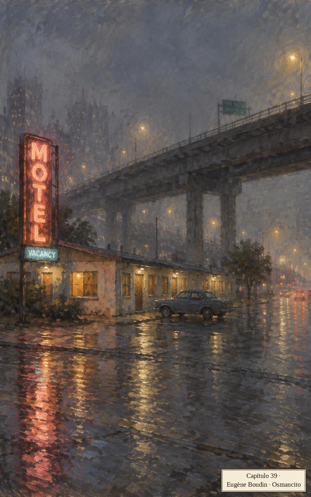
Jack maneja alrededor de la fundición buscando rastros de la vieja presencia alemana. El motel cuesta encontrarlo: una planta pegada a la pila de una vía elevada. Roadway Motel. Placeres transitorios, medidas drásticas. Pasa tres veces, estaciona a media cuadra: los tres primeros elementos de su plan.
Este es mi plan. Pasar varias veces por la escena, estacionar a cierta distancia de la escena, volver a pie, localizar al señor Gray bajo su nombre verdadero o un alias, dispararle tres veces en las vísceras para máximo dolor, limpiar el arma de huellas, poner el arma en la mano estática de la víctima, encontrar un crayón o un lápiz labial y garabatear una nota de suicidio críptica en el espejo de cuerpo entero, tomar el suministro de tabletas de Dylar de la víctima, escabullirme de vuelta al carro, seguir hasta la entrada de la autopista, tomar hacia el este rumbo a Blacksmith, salir en el viejo camino del río, estacionar el carro de Stover en el garaje del viejo Treadwell, cerrar la puerta del garaje, caminar a casa bajo la lluvia y la neblina.
Párrafo 4
El plan en infinitivos, repetido a lo largo del capítulo como un rosario laico: tramar es afirmar la vida, buscar forma y control. La elegancia del plan es la anestesia de Jack: mientras sea elegante, no es un asesinato, es un diseño. Y el diseño ya viene con final escrito: caminar a casa bajo la lluvia y la neblina.
Las letras plásticas de la oficina no forman nada inteligible. Jack avanza junto a la pared; una luz parpadea en una de las habitaciones. Se siente dentro de una red.
Se me ocurrió que no tenía que tocar. La puerta estaría abierta. Apreté la perilla, abrí la puerta despacio, me deslicé al cuarto. Sigilo. Era fácil. Todo sería fácil. Me quedé dentro del cuarto, sintiendo las cosas, registrando el tono de la habitación, el aire denso. La información corría hacia mí, corría despacio, incrementalmente. La figura era masculina, por supuesto, y estaba desparramada en el sillón de patas cortas. Vestía una camisa hawaiana y unos shorts Budweiser. Unas sandalias plásticas le colgaban de los pies. El sillón rechoncho, la cama deshecha, la alfombra industrial, el tocador destartalado, las tristes paredes verdes y las grietas del techo. El televisor flotando en el aire, en una ménsula metálica, apuntando hacia él.
Párrafo 8
«Se me ocurrió que no tenía que tocar»: la realidad empieza a obedecer el guion. Jack está entrando en la segunda realidad del arma, donde todo es fácil y las cosas llegan despacio, en capas. Willie Mink, el hombre del proyecto Dylar, es esto: camisa hawaiana, shorts de cerveza, sandalias colgando, y el televisor flotando sobre él como una lámpara de quirófano.
El hombre habla primero, sin quitar los ojos de la pantalla: «¿Estás enfermo del corazón o enfermo del alma?» Estás aquí por Dylar, por supuesto; limpiar el tablero. Al entrar aquí, advierte Mink, usted acepta cierto comportamiento.
«Comportamiento de cuarto. El punto de los cuartos es que están adentro. Nadie debería entrar a un cuarto a menos que entienda esto. La gente se comporta de una manera en los cuartos y de otra en las calles, los parques y los aeropuertos. Entrar a un cuarto es aceptar cierto tipo de comportamiento. Se sigue que este sería el tipo de comportamiento que tiene lugar en los cuartos. Este es el estándar, a diferencia de los estacionamientos y las playas. Es el punto de los cuartos. Nadie debería entrar a un cuarto sin conocer el punto. Hay un acuerdo no escrito entre la persona que entra a un cuarto y la persona en cuyo cuarto se ha entrado, a diferencia de los teatros al aire libre, las piscinas descubiertas. El propósito de un cuarto deriva de la naturaleza especial de un cuarto. Un cuarto está adentro. Esto es lo que la gente en los cuartos tiene que aceptar, a diferencia de los jardines, las praderas, los campos, los huertos».
Párrafo 27
Mink convierte una obviedad, que un cuarto está adentro, en una regla que exige acuerdo. La repetición tiene algo de argumento y algo de anuncio. Jack acepta esa lógica con una facilidad inquietante, mientras se aferra a la suya: cumplir el plan.
¿Melanesio, polinesio, surinamés, chino-holandés? ¿Un compuesto? ¿Dónde queda Surinam? ¿Cómo va mi plan?
Estudié el estampado de palmeras de su camisa suelta, el patrón Budweiser repetido en la superficie de sus bermudas. Los shorts le quedaban grandes. Los ojos estaban semicerrados. El pelo era largo y en punta. Estaba desparramado en la actitud de un viajero aéreo varado, alguien derrotado hace mucho por la espera rancia, el balbuceo de aeropuerto. Empecé a sentir lástima por Babette. Este había sido su último refugio y su última esperanza de serenidad, este pulso cansado de hombre, un vulgar traficante ahora, de pelo en punta, enloqueciendo en un motel muerto.
Párrafo 31
Aquí Jack entiende el tamaño de la derrota de Babette: fue hasta el fondo del mundo y el fondo del mundo es este hombre varado. La lástima llega antes que la rabia: esa es la medida de lo que ella apostó. El texto no dice «mi mujer me engañó con esto»; dice «este era su último refugio», que es peor y más tierno a la vez.
No siempre fue así: Mink dirigió el proyecto, dinámico, implacable. Saca un puñado de tabletas blancas, las lanza hacia su boca: unas entran, otras pasan. Las pastillas en forma de platillo, el fin del miedo. Hacía trabajo importante, dice; me envidiaba; aprendí inglés viendo televisión. Dylar falló, reluctante, pero definitivamente llegará.
«Seguido de una muerte mayor. Más efectiva, en términos de producto. Esto es lo que los científicos no entienden, lavando sus batas con Woolite. No es que tenga nada personal contra la muerte desde nuestro punto de vista en lo alto del Metropolitan County Stadium».
Párrafo 43
La tesis de Mink en estado puro: curar el miedo a la muerte solo produciría una muerte mayor, más efectiva, con mejor diseño de producto. Es la misma lógica que Murray atribuyó a la tecnología: cada defensa crea la siguiente amenaza. El non sequitur final - las batas con Woolite, el estadio - es la droga hablando dentro de la sentencia.
Esto se parece a algo que dijo Murray, piensa Jack: la sacudida visceral de ver a tu oponente sangrar en el polvo. Jack prueba la droga como un sonambulismo: «Avión cayendo», dice, y Mink se pliega en la posición de impacto recomendada, cabeza adelante, manos tras las rodillas, como un niño o un mimo. La droga hace actuar de manera estilizada. Jack avanza en conciencia: las cosas brillan; es budista, jainista, bautista de Duck River.
«Se ponía la máscara de esquí para no besar mi cara, que según ella era poco americana. Le dije que un cuarto está adentro. No se entra a un cuarto sin aceptar esto. Es el punto, a diferencia de las líneas costeras emergentes, las placas continentales. O puedes comer granos naturales, vegetales, huevos, nada de pescado, nada de fruta. O fruta, vegetales, proteínas animales, nada de granos, nada de leche. O mucha leche de soya para la B-12 y muchos vegetales para regular la liberación de insulina, pero nada de carne, nada de pescado, nada de fruta. O carne blanca pero no carne roja. O B-12 pero no huevos. O huevos pero no granos. Hay infinitas combinaciones viables».
Párrafo 70
Mink confirma sin saberlo la escena del motel: ella se ponía la máscara para no besarle la cara, «poco americana». Y el habla se le escurre hacia el menú infinito de dietas: infinitas combinaciones viables, todas equivalentes, todas vacías. Jack ya está listo para matarlo, pero no quiere comprometer el plan.
Jack avanza hacia la luz parpadeante, buscando cernerse. Mano en el bolsillo, le dice suavemente: «Granizada de balas». Mink se tira al piso y gatea hacia el baño, infantil, mimando, con terror verdadero. «Fusilamiento», susurra Jack, cerniéndose en el umbral. Le revela su nombre y su relación con la mujer de la máscara de esquí. El miedo de Mink es hermoso.
Disparé la pistola, el arma, la pistola, el arma de fuego, la automática. El sonido creció como bola de nieve en el cuarto blanco, sumando ondas reflejadas. Vi la sangre brotar del torso de la víctima. Un arco delicado. Me maravillé del color rico, sentí la acción causante del color de las células sin núcleo. El flujo disminuyó hasta un hilo, se extendió por el piso de baldosas. Vi más allá de las palabras. Supe qué era el rojo, lo vi en términos de longitud de onda dominante, luminancia, pureza. El dolor de Mink era hermoso, intenso.
Párrafo 78
El que iba a morir acaba de disparar: la teoría de Murray ha encontrado una acción. Jack describe el rojo mediante medidas de color, como si la precisión lo apartara del daño. Los nombres sucesivos del arma también retrasan, durante un instante, lo que está haciendo.
Dispara un segundo tiro solo por revivir la experiencia: la bala entra junto a la cadera derecha. Intenta verse desde el punto de vista de Mink - cerniéndose, dominante, acumulando crédito de vida - , pero Mink ya no tiene punto de vista. Limpia el arma, la pone en la mano de Mink, envolviendo los dedos huesudos uno por uno alrededor de la culata. Entonces los ojos de Mink se le salen del cráneo; levanta la mano, aprieta el gatillo y le pega un tiro a Jack en la muñeca. El mundo colapsa hacia adentro. «Y esto podría representar la punta de avance de aire más cálido», dice Mink.
Lo miré. Vivo. Su regazo un charco de sangre. Con la restauración del orden normal de la materia y la sensación, sentí que lo veía por primera vez como una persona. Los viejos enredos y rarezas humanos volvieron a fluir. Compasión, remordimiento, piedad. Pero antes de poder ayudar a Mink, tenía que hacer un trabajo básico de reparación en mí mismo. Una vez más saqué el pañuelo, logré con la mano derecha y los dientes atarlo firmemente justo encima del agujero de bala en mi muñeca izquierda, o entre la herida y el corazón. Luego chupé brevemente la herida, sin saber bien por qué, y escupí la sangre y la pulpa resultantes. La bala había hecho una penetración superficial y se había desviado. Con la mano buena, agarré a Mink por el pie desnudo y lo arrastré por las baldosas salpicadas de sangre, el arma todavía apretada en su puño. Había algo redentor aquí. Arrastrarlo de los pies por las baldosas, por la alfombra medicada, por la puerta hasta la noche. Algo grande y grandioso y escénico. ¿Es mejor cometer el mal e intentar equilibrarlo con un acto exaltado que vivir una vida resueltamente neutral? Sé que me sentía virtuoso, me sentía manchado de sangre y majestuoso, arrastrando al hombre malherido por la calle oscura y vacía.
Párrafo 84
El giro del capítulo: cuando el plan fracasa, aparece la persona. «Lo veía por primera vez como una persona»: la droga del plan se acabó y vuelven «los viejos enredos humanos», compasión, remordimiento, piedad. Y sin embargo Jack se siente virtuoso y majestuoso arrastrando a su víctima: la novela deja abierta la pregunta que él mismo se formula - ¿el mal equilibrado con un acto exaltado? - sin contestarla.
Ya paró la lluvia; la acera queda rayada de sangre: un interesante depósito cultural. En el carro, Mink se sacude como un pez; Jack intenta boca a boca. Pasar del asco. Perdonar el cuerpo vil. Cuando Mink vuelve a respirar, pregunta quién le disparó. Tú mismo. ¿Quién te disparó a ti? Tú; el arma está en tu mano. Te perdono. ¿Quién eres tú, literalmente? Un transeúnte. Algunos milpiés tienen ojos, otros no.
Con mucho esfuerzo, muchos arranques en falso, lo metí en el asiento trasero del carro, donde se estiró gimiendo. Ya no era posible saber si la sangre en mis manos y mi ropa era suya o mía. Mi humanidad se elevó. Prendí el carro. El dolor del brazo era un latido, menos abrasador ahora. Manejé con una mano por las calles vacías, buscando un hospital. Iron City Lying-In. Mother of Mercy. Conmiseración y Rapport. Tomaría lo que tuvieran, incluso una sala de emergencia en el peor barrio de la ciudad. Ahí es donde pertenecíamos, después de todo, con las heridas múltiples de cuchillo, las heridas de entrada y salida, las heridas de instrumento contundente, los traumas, las sobredosis, los delirios agudos. El único tráfico era una van de leche, una van de panadería, unos camiones pesados. El cielo empezó a aclarar. Llegamos a un lugar con una cruz de neón sobre la entrada. Era un edificio de tres pisos que pudo haber sido una iglesia pentecostal, una guardería, la sede mundial de algún movimiento de juventud regimentada.
Párrafo 97
Jack busca un hospital y su mente produce una lista de nombres posibles, seguida de otra de heridas. Después de ordenar el crimen como un plan, ahora intenta encontrarle un lugar a su consecuencia. La cruz de neón ofrece una señal de ayuda, aunque él todavía no sepa qué edificio es.
Hay rampa de silla de ruedas: Jack arrastra a Mink hasta la puerta. Amanece; hay una compasión épica. No se le había ocurrido que redimirse pudiera prolongar la euforia del crimen. Toca el timbre. Aparece una vieja monja de hábito negro. Estamos baleados, dice Jack. Vemos mucho de eso por aquí, contesta ella, de lo más práctica. Dos camilleros de físico de sumo levantan a Mink y le arrancan la ropa. «Ingreso real ajustado por inflación», dice Mink.
Llegaron más monjas, frufrú de telas, ancianas, hablando alemán entre ellas. Traían equipo de transfusión, empujaban bandejas de instrumentos relucientes. La monja original se acercó a Mink para quitarle el arma de la mano. La vi lanzarla a un cajón de escritorio que contenía unas diez pistolas más y media docena de cuchillos. Había un cuadro en la pared de Jack Kennedy tomado de la mano del papa Juan XXIII en el cielo. El cielo era un lugar parcialmente nublado.
Párrafo 104
El cajón ya contiene otras armas: la pistola que transformó la vida de Jack entra en una colección corriente para estas mujeres. El cuadro del cielo reúne a un presidente y a un papa. Jack, que necesita ayuda muy concreta, también se detendrá ante esa imagen.
Llega el doctor, un anciano de traje destartalado. Jack le está tomando cariño a Willie. La monja original lo cura en un cubículo, sin interés en su versión. Qué país tan violento, dice. ¿Llevan mucho en Germantown? Somos las últimas de los alemanes. ¿Quién vive aquí? Casi nadie. Se llama hermana Hermann Marie. Jack le dice que sabe algo de alemán, para ganarse su favor, como siempre con personal médico. Gut, besser, best. Cuentan hasta diez juntos.
Aparecieron dos monjas más, ajadas y chirriantes. Mi monja les dijo algo y pronto los cuatro estábamos encantadoramente enfrascados en un diálogo infantil. Hicimos colores, prendas de ropa, partes del cuerpo. Me sentía mucho más a gusto en esta compañía germanoparlante que con los hitlerólogos. ¿Habrá algo tan inocente en la recitación de nombres que a Dios le agrada?
Párrafo 117
El alemán que Jack aprendió para sostener su figura pública le permite ahora una conversación pequeña, durante una cura. Colores, ropa, partes del cuerpo: no tiene que impresionar a los especialistas. Su alivio desemboca en esa pregunta inesperada sobre lo que podría agradar a Dios.
La hermana Hermann Marie aplicó los toques finales a la herida de bala. Desde mi silla tenía una vista despejada del cuadro de Kennedy y el Papa en el cielo. Sentía una admiración furtiva por el cuadro. Me hacía sentir bien, sentimentalmente refrescado. El Presidente todavía vigoroso después de la muerte. La fealdad del Papa una especie de resplandor. ¿Por qué no habría de ser verdad? ¿Por qué no habrían de encontrarse en alguna parte, avanzados en el tiempo, contra una capa de cúmulos esponjosos, para estrecharse las manos? ¿Por qué no habríamos de encontrarnos todos, como en alguna epopeya de dioses proteicos y gente ordinaria, en lo alto, bien formados, brillantes?
Párrafo 118
La defensa del kitsch: Jack sabe que el cuadro es malo y aun así lo necesita. ¿Por qué no habría de ser verdad? es la pregunta de toda la novela; la monja le dará la contracara más dura del libro.
«¿Qué dice la Iglesia sobre el cielo hoy?», pregunta Jack. Ella mira el cuadro: «¿Crees que somos estúpidas?» Pero eres monja, insiste Jack: nos alegra que alguien todavía crea en ángeles; no es lo que yo crea lo que cuenta, es lo que creen ustedes. «Eso es verdad: los no creyentes necesitan a los creyentes. Pero muéstrame un santo. Dame un solo pelo.» Si quieres hablar del cielo, busca otro lugar.
«Otras monjas usan vestidos», dije razonablemente. «Aquí todavía usan el uniforme viejo. El hábito, la toca, los zapatones. Deben creer en la tradición. El viejo cielo y el viejo infierno, la misa en latín. El Papa es infalible, Dios creó el mundo en seis días. Las grandes creencias viejas. El infierno son lagos ardientes, demonios alados».
Párrafo 130
Jack intenta deducir la creencia a partir del uniforme. El hábito, la toca y los zapatos serían señales de una tradición entera. Necesita que alguien conserve esa seguridad, y busca sus pruebas en la ropa de quien acaba de atenderlo.
¿Por qué eres monja, entonces? ¿Por qué ese cuadro? «Es para los otros. No para nosotras.» ¿Qué otros? Todos los otros: los que se pasan la vida creyendo que ustedes todavía creen. Si no fingiéramos creer, el mundo colapsaría. ¿Fingir? Claro que fingir. Si tú no crees, ¿por qué habría de creer yo? Si tú creyeras, quizá yo creería. Si yo creyera, tú no tendrías que hacerlo.
«Nuestro fingimiento es una entrega. Alguien tiene que aparentar creer. Nuestras vidas no son menos serias que si profesáramos fe verdadera, creencia verdadera. A medida que la creencia retrocede en el mundo, la gente encuentra más necesario que nunca que alguien crea. Hombres de ojos desorbitados en cuevas. Monjas de negro. Monjes que no hablan. Nos quedamos nosotras a creer. Los tontos, los niños. Los que han abandonado la creencia todavía tienen que creer en nosotras. Están seguros de que hacen bien en no creer pero saben que la creencia no debe desvanecerse del todo. El infierno es cuando nadie cree. Siempre tiene que haber creyentes. Tontos, idiotas, los que oyen voces, los que hablan en lenguas. Somos sus lunáticas. Entregamos nuestras vidas para hacer posible su no-creencia. Están seguros de estar en lo correcto pero no quieren que todos piensen como ustedes. No hay verdad sin tontos. Somos sus tontas, sus locas, levantándonos al alba a rezar, encendiendo velas, pidiéndoles a las estatuas buena salud, larga vida».
Párrafo 149
La monja presenta su fingimiento como una entrega, no como una broma: alguien debe sostener la apariencia de creer para quienes han dejado de hacerlo. Es su respuesta a Jack, que quiere encontrar fe en ella sin asumirla él. El diálogo mantiene la incomodidad de ambos.
Jack pregunta si rezan por nada. Por el mundo, dice ella. ¿La muerte es el fin? ¿Quiere saber qué cree o qué finge creer? Él insiste en que actúe como monja y en que alguna de ellas debe creer. Ella le recuerda cómo llegó y lo echa.
Dijo algo en alemán. No lo entendí. Habló de nuevo, extensamente, acercando su cara a la mía, las palabras cada vez más ásperas, más húmedas, más guturales. Sus ojos mostraban un deleite terrible ante mi incomprensión. Me estaba rociando de alemán. Una tormenta de palabras. Se animaba más a medida que avanzaba el discurso. Una vehemencia gozosa entró en su voz. Hablaba más rápido, más expresivamente. Vasos sanguíneos se inflamaban en sus ojos y su cara. Empecé a detectar una cadencia, un compás medido. Estaba recitando algo, decidí. Letanías, himnos, catecismos. Los misterios del rosario quizá. Mofándose de mí con oración desdeñosa.
Párrafo 163
Jack no comprende las palabras y empieza a escuchar un compás. Decide que la monja recita oraciones, pero el texto nos deja dentro de su conjetura. Después de discutir tanto sobre qué se cree, vuelve a buscar algo que lo sostenga en el sonido de una voz.
Jack encuentra hermoso el sonido. Cuando la voz flaquea, sale. El médico le asegura que Willie vivirá. Vuelve a casa en el carro ensangrentado de los Stover.
Subí las escaleras y miré un rato a los muchachos. Todos dormidos, hurgando en sus sueños, los ojos moviéndose rápidos bajo los párpados cerrados. Me metí en la cama junto a Babette, completamente vestido salvo por los zapatos, sabiendo de algún modo que no le parecería extraño. Pero mi mente seguía corriendo, no podía dormir. Al rato bajé a la cocina a sentarme con una taza de café, a sentir el dolor de la muñeca, el pulso acelerado.
Párrafo 167
El regreso cabe en gestos conocidos: mirar a los hijos dormidos, acostarse junto a Babette, bajar por café. La casa no ha cambiado a la velocidad de su noche. El dolor de la muñeca y el pulso acelerado impiden confundir esa vuelta con una calma recuperada.
Al quedarse solo en la cocina, imagina que el cielo, si fuera un lugar, sonaría como el bronce.
Capítulo 40: El triciclo y el paso elevado
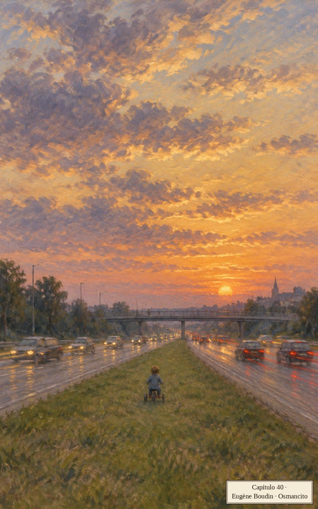
Este fue el día en que Wilder se subió a su triciclo plástico, lo montó alrededor de la cuadra, dobló a la derecha en una calle sin salida y pedaleó ruidosamente hasta el fondo sin salida. Llevó el triciclo a pie alrededor de la baranda y luego rodó por un sendero pavimentado que serpenteaba entre unos lotes enmontados hasta un tramo de veinte escalones de concreto. Las ruedas plásticas retumbaban y chillaban. Aquí nuestra reconstrucción cede ante el relato sobrecogido de dos ancianas que miraban desde el porche trasero del segundo piso de una casa alta entre los árboles. Bajó el triciclo por los escalones, guiándolo con mano solícita y sin sentimentalismo, dejándolo saltar a sus anchas, como si fuera un hermanito de forma rara, no necesariamente querido. Volvió a montarse, cruzó la calle, cruzó la acera, siguió hasta la loma de grama que bordeaba la autopista. Aquí las mujeres empezaron a gritar. Eh, eh, decían, un poco tímidas al principio, no dispuestas a aceptar las implicaciones del proceso que se desplegaba ante ellas. El muchacho pedaleó en diagonal loma abajo, reduciendo astutamente el ángulo de descenso, y luego se detuvo abajo para apuntar su triciclo hacia el punto del lado opuesto que parecía representar la distancia más corta de cruce. Eh, muchachito, no. Agitando los brazos, buscando frenéticamente que apareciera en escena algún peatón capaz de ayudar. Wilder, mientras tanto, ignorando sus gritos o sin oírlos entre los soplidos sucesivos de los carros compactos y las camionetas que pasaban disparados, empezó a pedalear a través de la autopista, místicamente cargado. Las mujeres solo podían mirar, la boca vacía, cada una con un brazo en el aire, una súplica para que la escena retrocediera, para que el niño pedaleara en reversa sobre su juguete azul y amarillo desteñido como una caricatura de la tele matutina. Los conductores no alcanzaban a comprender. En su postura anudada, abrochados a sus cinturones, sabían que esta imagen no pertenecía a la conciencia lanzada de la autopista, la ancha corriente modernista de cintas. En la velocidad había sentido. En las señales, en los patrones, en las vidas de fracción de segundo. ¿Qué significaba esta pequeña borrosidad giratoria? Alguna fuerza del mundo se había descompuesto. Viraban, frenaban, hacían sonar las cornetas a lo largo de la tarde entera, un lamento animal. El niño ni siquiera los miraba; pedaleó directo hacia la isleta central, una franja angosta de grama pálida. Iba inflado, pecho afuera, los brazos parecían moverse tan rápido como las piernas, la cabeza redonda meneándose en una jiga de determinación descerebrada. Tuvo que ir más lento para subir a la isleta elevada, encabritándose para dejar que la rueda delantera trepara el borde, extremadamente deliberado en sus movimientos, siguiendo algún esquema numerado, y los carros pasaban aullando, las cornetas sonando a destiempo, los ojos de los conductores buscando el retrovisor. Llevó el triciclo a pie por la grama. Las mujeres lo vieron recuperar una posición firme en el asiento. Quédate, gritaban. No vayas. No, no. Como extranjeras reducidas a frases simples. Los carros seguían viniendo, azotando hacia la recta, tráfico veteado sin fin. Emprendió el cruce de los últimos tres carriles, bajando de la isleta como una pelota que rebota, rueda delantera, ruedas traseras. Luego la carrera de cabeza meneada hacia el otro lado. Los carros esquivaban, se desviaban, trepaban el bordillo, cabezas asombradas apareciendo en las ventanillas laterales. El niño que pedaleaba furiosamente no podía saber qué lento parecía moverse desde el punto de vista de las mujeres en el porche. Las mujeres ya estaban en silencio, fuera del evento, súbitamente cansadas. Qué lento se movía, qué equivocado estaba al creer que iba volando. Las cansaba. Las cornetas seguían sonando, ondas de sonido mezclándose en el aire, aplanándose, contestando desde carros ya desaparecidos, regañando. Llegó al otro lado, rodó un momento en paralelo al tráfico, pareció perder el equilibrio, caer, bajando por el terraplén en una voltereta multicolor. Cuando reapareció un segundo después, estaba sentado en una zanja de agua, parte del riachuelo intermitente que acompaña a la autopista. Aturdido, tomó la decisión de llorar. Le tomó un momento, lodo y agua por todas partes, el triciclo de costado. Las mujeres empezaron a gritar una vez más, cada una alzando un brazo para revocar la acción. Niño en el agua, decían. Mira, ayuda, ahogo. Y él pareció, en su asiento en el riachuelo, aullando profundamente, haberlas oído por primera vez, mirando por encima del montículo de tierra hacia los árboles del otro lado de la autopista. Esto las asustó aún más. Gritaban y agitaban los brazos, se acercaban a las fases tempranas del terror incontrolable cuando un automovilista que pasaba, como se llama a tales personas, se orilló alerta, salió del carro, derrapó por el terraplén y levantó al niño de las aguas turbias y bajas, alzándolo para que lo vieran las clamorosas ancianas.
Párrafo 1
Aquí el relato de Jack cede a la mirada de dos ancianas. Ellas ven el peligro que Wilder no alcanza a entender y solo pueden gritar frases cada vez más simples. El niño cruza despacio un mundo organizado para la velocidad. La distancia entre lo que él sabe y lo que ellas ven sostiene la angustia de toda la escena.
Vamos al paso elevado todo el tiempo. Babette, Wilder y yo. Llevamos un termo de té helado, estacionamos el carro, miramos el sol poniente. Las nubes no disuaden. Las nubes intensifican el drama, atrapan y moldean la luz. Los nublados pesados tienen poco efecto. La luz irrumpe, estelas y arcos humeantes. Los cielos cubiertos intensifican el ambiente. Nos encontramos poco que decirnos. Llegan más carros, estacionando en una fila que baja hasta la zona residencial. La gente sube caminando la cuesta hasta el paso elevado, cargando frutas y nueces, bebidas frías, sobre todo los de mediana edad, los ancianos, algunos con sillas de playa de malla que despliegan en la acera, pero también parejas jóvenes, brazo con brazo contra la baranda, mirando al oeste. El cielo toma contenido, sentimiento, una vida narrativa exaltada. Las bandas de color alcanzan tan alto, parecen a veces separarse en sus partes constituyentes. Hay cielos de torres, tormentas de luz, serpentinas que caen suavemente. Es difícil saber cómo deberíamos sentirnos ante esto. A algunos los asustan los atardeceres, otros están decididos a sentirse eufóricos, pero la mayoría no sabemos cómo sentirnos, estamos listos para cualquiera de los dos caminos. La lluvia no disuade. La lluvia trae despliegues graduados, maravillosos matices que corren. Llegan más carros, la gente sube arrastrando los pies por la cuesta. El espíritu de estas tardes cálidas es difícil de describir. Hay anticipación en el aire pero no es el zumbido expectante de un gentío veraniego en mangas de camisa, un juego en el lote, con precedentes coherentes, una historia de respuesta segura. Esta espera es introvertida, desigual, casi tímida y hacia atrás, tendiendo al silencio. ¿Qué más sentimos? Ciertamente hay asombro, es todo asombro, trasciende las categorías previas de asombro, pero no sabemos si miramos con maravilla o con pavor, no sabemos qué estamos mirando ni qué significa, no sabemos si es permanente, un nivel de experiencia al que nos ajustaremos gradualmente, en el que nuestra incertidumbre terminará absorbida, o solo una rareza atmosférica, pronta a pasar. Las sillas plegables se abren de un tirón, los viejos se sientan. ¿Qué hay para decir? Los atardeceres se demoran y nosotros también. El cielo está bajo un hechizo, poderoso y legendario. De vez en cuando un carro cruza de verdad el paso elevado, moviéndose despacio, deferente. La gente sigue subiendo la cuesta, algunos en sillas de ruedas, retorcidos por la enfermedad, quienes los atienden inclinados para empujar contra la pendiente. No sabía cuánta gente impedida y desvalida había en el pueblo hasta que las noches cálidas trajeron multitudes al paso elevado. Los carros corren bajo nosotros, viniendo del oeste, saliendo de la luz imponente, y los miramos como buscando una señal, como si cargaran en sus superficies pintadas algún residuo del atardecer, un brillo apenas detectable o una película de polvo delator. Nadie pone una radio ni habla en una voz muy por encima de un susurro. Algo dorado cae, una suavidad entregada al aire. Hay gente paseando perros, hay muchachos en bicicleta, un hombre con una cámara y un teleobjetivo, esperando su momento. No es sino hasta un rato después de caída la noche, los insectos chillando en el calor, que empezamos a dispersarnos lentamente, tímidamente, cortésmente, carro tras carro, restituidos a nuestros yoes separados y defendibles.
Párrafo 2
Babette, Wilder y Jack vuelven juntos al paso elevado. Los atardeceres reúnen al pueblo, pero nadie sabe bien qué está contemplando: maravilla o amenaza. Me gusta que el pasaje no les exija ponerse de acuerdo. Comparten la espera y el silencio; después, cada carro vuelve a una vida separada.
Los hombres de trajes Mylex siguen en la zona, de hocico amarillo, recolectando sus datos terribles. El doctor Chakravarty quiere ver a Jack, ver cómo progresa su muerte, insertarlo otra vez en el bloque de imágenes, donde chocan partículas cargadas y soplan vientos altos. Jack le tiene miedo al bloque de imágenes, a lo que sabe de él. No está recibiendo llamadas. Y entonces, sin aviso, ocurre lo último.
Reordenaron las estanterías del supermercado. Pasó un día sin aviso. Hay agitación y pánico en los pasillos, consternación en las caras de los compradores viejos. Caminan en un trance fragmentado, avanzan y se detienen, racimos de figuras bien vestidas congeladas en los pasillos, tratando de entender el patrón, de discernir la lógica subyacente, tratando de recordar dónde habían visto la Cream of Wheat. No le ven razón, no le hallan sentido. Las esponjas de fregar están ahora con el jabón de manos, los condimentos están dispersos. Cuanto más viejo el hombre o la mujer, más cuidadosamente vestido y arreglado. Hombres en pantalones Sansabelt y camisas de punto de colores vivos. Mujeres con un aire empolvado y remilgado, consciente de sí, preparadas para algún evento ansioso. Doblan al pasillo equivocado, escrutan a lo largo de los estantes, a veces se detienen en seco, haciendo que otros carritos choquen con ellos. Solo la comida genérica está donde estaba, paquetes blancos llanamente etiquetados. Los hombres consultan listas, las mujeres no. Hay una sensación de vagabundeo ahora, un ánimo sin rumbo y embrujado, gente de temperamento dulce llevada al borde. Escrutan la letra pequeña de los paquetes, recelosos de un segundo nivel de traición. Los hombres buscan fechas estampadas, las mujeres ingredientes. A muchos les cuesta descifrar las palabras. Letra corrida, imágenes fantasma. En los estantes alterados, en el rugido ambiental, en el hecho llano y desalmado de su declive, intentan abrirse paso a través de la confusión. Pero al final no importa lo que vean o crean ver. Las terminales están equipadas con escáneres holográficos, que decodifican el secreto binario de cada artículo, infaliblemente. Este es el lenguaje de las ondas y la radiación, o cómo los muertos hablan a los vivos. Y aquí es donde esperamos juntos, sin importar la edad, los carritos surtidos de mercancías de colores brillantes. Una fila de avance lento, satisfactoria, que nos da tiempo de echar un vistazo a los pasquines en las rejillas. Todo lo que necesitamos que no sea comida ni amor está aquí en las rejillas de los pasquines. Los cuentos de lo sobrenatural y lo extraterrestre. Las vitaminas milagrosas, las curas del cáncer, los remedios para la obesidad. Los cultos de los famosos y de los muertos.
Párrafo 6
El libro termina donde sus personajes han buscado tanta familiaridad: el supermercado. Basta mover los productos para que sus recorridos dejen de servir. Frente a esa confusión, el escáner promete una lectura sin error. Los compradores esperan juntos, entre alimentos y relatos que ofrecen otras formas de consuelo. El orden de la caja sigue funcionando aunque nadie domine el de su propia vida.
Los Originales
Esta sección reúne, en el idioma del libro y por orden de aparición, las frases que arriba van en castellano. El número de cada una lleva de vuelta a su lugar.
Capítulo 1: Las Camionetas
Párrafo 1The station wagons arrived at noon, a long shining line that coursed through the west campus. In single file they eased around the orange I-beam sculpture and moved toward the dormitories. The roofs of the station wagons were loaded down with carefully secured suitcases full of light and heavy clothing; with boxes of blankets, boots and shoes, stationery and books, sheets, pillows, quilts; with rolled-up rugs and sleeping bags; with bicycles, skis, rucksacks, English and Western saddles, inflated rafts. As cars slowed to a crawl and stopped, students sprang out and raced to the rear doors to begin removing the objects inside; the stereo sets, radios, personal computers; small refrigerators and table ranges; the cartons of phonograph records and cassettes; the hairdryers and styling irons; the tennis rackets, soccer balls, hockey and lacrosse sticks, bows and arrows; the controlled substances, the birth control pills and devices; the junk food still in shopping bags—onion-and-garlic chips, nacho thins, peanut creme patties, Waffelos and Kabooms, fruit chews and toffee popcorn; the Dum-Dum pops, the Mystic mints.
Párrafo 3I left my office and walked down the hill and into town. There are houses in town with turrets and two-story porches where people sit in the shade of ancient maples. There are Greek revival and Gothic churches. There is an insane asylum with an elongated portico, ornamented dormers and a steeply pitched roof topped by a pineapple finial. Babette and I and our children by previous marriages live at the end of a quiet street in what was once a wooded area with deep ravines. There is an expressway beyond the backyard now, well below us, and at night as we settle into our brass bed the sparse traffic washes past, a remote and steady murmur around our sleep, as of dead souls babbling at the edge of a dream.
Capítulo 2: Babette en la Cocina
Párrafo 8Babette, disheveled, has the careless dignity of someone too preoccupied with serious matters to know or care what she looks like. Not that she is a gift-bearer of great things as the world generally reckons them. She gathers and tends the children, teaches a course in an adult education program, belongs to a group of volunteers who read to the blind. Once a week she reads to an elderly man named Treadwell who lives on the edge of town. He is known as Old Man Treadwell, as if he were a landmark, a rock formation or brooding swamp. She reads to him from the National Enquirer, the National Examiner, the National Express, the Globe, the World, the Star. The old fellow demands his weekly dose of cult mysteries. Why deny him? The point is that Babette, whatever she is doing, makes me feel sweetly rewarded, bound up with a full-souled woman, a lover of daylight and dense life, the miscellaneous swarming air of families. I watch her all the time doing things in measured sequence, skillfully, with seeming ease, unlike my former wives, who had a tendency to feel estranged from the objective world—a self-absorbed and high-strung bunch, with ties to the intelligence community.
Párrafo 16Babette and I do our talking in the kitchen. The kitchen and the bedroom are the major chambers around here, the power haunts, the sources. She and I are alike in this, that we regard the rest of the house as storage space for furniture, toys, all the unused objects of earlier marriages and different sets of children, the gifts of lost in-laws, the hand-me-downs and rummages. Things, boxes. Why do these possessions carry such sorrowful weight? There is a darkness attached to them, a foreboding. They make me wary not of personal failure and defeat but of something more general, something large in scope and content.
Párrafo 17She came in with Wilder and seated him on the kitchen counter. Denise and Steffie came downstairs and we talked about the school supplies they would need. Soon it was time for lunch. We entered a period of chaos and noise. We milled about, bickered a little, dropped utensils. Finally we were all satisfied with what we'd been able to snatch from the cupboards and refrigerator or swipe from each other and we began quietly plastering mustard or mayonnaise on our brightly colored food. The mood was one of deadly serious anticipation, a reward hard-won. The table was crowded and Babette and Denise elbowed each other twice, although neither spoke. Wilder was still seated on the counter surrounded by open cartons, crumpled tin-foil, shiny bags of potato chips, bowls of pasty substances covered with plastic wrap, flip-top rings and twist ties, individually wrapped slices of orange cheese. Heinrich came in, studied the scene carefully, my only son, then walked out the back door and disappeared.
Párrafo 29Denise was eleven, a hard-nosed kid. She led a more or less daily protest against those of her mother's habits that struck her as wasteful or dangerous. I defended Babette. I told her I was the one who needed to show discipline in matters of diet. I reminded her how much I liked the way she looked. I suggested there was an honesty inherent in bulkiness if it is just the right amount. People trust a certain amount of bulk in others.
Capítulo 3: El Granero Fotografiado
Párrafo 2There is no Hitler building as such. We are quartered in Centenary Hall, a dark brick structure we share with the popular culture department, known officially as American environments. A curious group. The teaching staff is composed almost solely of New York émigrés, smart, thuggish, movie-mad, trivia-crazed. They are here to decipher the natural language of the culture, to make a formal method of the shiny pleasures they'd known in their Europe-shadowed childhoods—an Aristotelianism of bubble gum wrappers and detergent jingles. The department head is Alfonse (Fast Food) Stompanato, a broad-chested glowering man whose collection of prewar soda pop bottles is on permanent display in an alcove. All his teachers are male, wear rumpled clothes, need haircuts, cough into their armpits. Together they look like teamster officials assembled to identify the body of a mutilated colleague. The impression is one of pervasive bitterness, suspicion and intrigue.
Párrafo 12"I can't help being happy in a town called Blacksmith," he said. "I'm here to avoid situations. Cities are full of situations, sexually cunning people. There are parts of my body I no longer encourage women to handle freely. I was in a situation with a woman in Detroit. She needed my semen in a divorce suit. The irony is that I love women. I fall apart at the sight of long legs, striding, briskly, as a breeze carries up from the river, on a weekday, in the play of morning light. The second irony is that it's not the bodies of women that I ultimately crave but their minds. The mind of a woman. The delicate chambering and massive unidirectional flow, like a physics experiment. What fun it is to talk to an intelligent woman wearing stockings as she crosses her legs. That little staticky sound of rustling nylon can make me happy on several levels. The third and related irony is that it's the most complex and neurotic and difficult women that I am invariably drawn to. I like simple men and complicated women."
Párrafo 16Several days later Murray asked me about a tourist attraction known as the most photographed barn in America. We drove twenty-two miles into the country around Farmington. There were meadows and apple orchards. White fences trailed through the rolling fields. Soon the signs started appearing. THE MOST PHOTOGRAPHED BARN IN AMERICA. We counted five signs before we reached the site. There were forty cars and a tour bus in the makeshift lot. We walked along a cowpath to the slightly elevated spot set aside for viewing and photographing. All the people had cameras; some had tripods, telephoto lenses, filter kits. A man in a booth sold postcards and slides—pictures of the barn taken from the elevated spot. We stood near a grove of trees and watched the photographers. Murray maintained a prolonged silence, occasionally scrawling some notes in a little book.
Capítulo 4: ¿Quién Morirá Primero?
Párrafo 7This question comes up from time to time, like where are the car keys. It ends a sentence, prolongs a glance between us. I wonder if the thought itself is part of the nature of physical love, a reverse Darwinism that awards sadness and fear to the survivor. Or is it some inert element in the air we breathe, a rare thing like neon, with a melting point, an atomic weight? I held her in my arms on the cinder track. Kids came running our way, thirty girls in bright shorts, an improbable bobbing mass. The eager breathing, the overlapping rhythms of their footfalls. Sometimes I think our love is inexperienced. The question of dying becomes a wise reminder. It cures us of our innocence of the future. Simple things are doomed, or is that a superstition? We watched the girls come round again. They were strung out now, with faces and particular gaits, almost weightless in their craving, able to land lightly.
Párrafo 17My daughter Bee, from my marriage to Tweedy Browner, was just starting seventh grade in a Washington suburb and was having trouble readjusting to life in the States after two years in South Korea. She took taxis to school, made phone calls to friends in Seoul and Tokyo. Abroad she'd wanted to eat ketchup sandwiches with Trix sticks. Now she cooked fierce sizzling meals of scallion bushes and baby shrimp, monopolizing Tweedy's restaurant-quality range.
Párrafo 18That night, a Friday, we ordered Chinese food and watched television together, the six of us. Babette had made it a rule. She seemed to think that if kids watched television one night a week with parents or stepparents, the effect would be to de-glamorize the medium in their eyes, make it wholesome domestic sport. Its narcotic undertow and eerie diseased brain-sucking power would be gradually reduced. I felt vaguely slighted by this reasoning. The evening in fact was a subtle form of punishment for us all. Heinrich sat silent over his egg rolls. Steffie became upset every time something shameful or humiliating seemed about to happen to someone on the screen. She had a vast capacity for being embarrassed on other people's behalf. Often she would leave the room until Denise signaled to her that the scene was over. Denise used these occasions to counsel the younger girl on toughness, the need to be mean in the world, thick-skinned.
Capítulo 5: Envases Blancos
Párrafo 4That night, seconds after going to sleep, I seemed to fall through myself, a shallow heart-stopping plunge. Jarred awake, I stared into the dark, realizing I'd experienced the more or less normal muscular contraction known as the myoclonic jerk. Is this what it's like, abrupt, peremptory? Shouldn't death, I thought, be a swan dive, graceful, white-winged and smooth, leaving the surface undisturbed?
Párrafo 31The three of us left together, trying to maneuver our shopping carts between the paperback books scattered across the entrance. Murray wheeled one of our carts into the parking lot and then helped us heave and push all our double-bagged merchandise into the back of the station wagon. Cars entered and exited. The policewoman in her zippered minicab scouted the area for red flags on the parking meters. We added Murray's single lightweight bag of white items to our load and headed across Elm in the direction of his rooming house. It seemed to me that Babette and I, in the mass and variety of our purchases, in the sheer plenitude those crowded bags suggested, the weight and size and number, the familiar package designs and vivid lettering, the giant sizes, the family bargain packs with Day-Glo sale stickers, in the sense of replenishment we felt, the sense of well-being, the security and contentment these products brought to some snug home in our souls—it seemed we had achieved a fullness of being that is not known to people who need less, expect less, who plan their lives around lonely walks in the evening.
Párrafo 34Murray is able to produce a look that is sneaky and frank at the same time. It is a look that gives equal credence to disaster and lecherous success. He says that in the old days of his urban entanglements he believed there was only one way to seduce a woman, with clear and open desire. He took pains to avoid self-depreciation, self-mockery, ambiguity, irony, subtlety, vulnerability, a civilized world-weariness and a tragic sense of history—the very things, he says, that are most natural to him. Of these he has allowed only one element, vulnerability, to insert itself gradually into his program of straightforward lust. He is trying to develop a vulnerability that women will find attractive. He works at it consciously, like a man in a gym with weights and a mirror. But his efforts so far have produced only this half sneaky look, sheepish and wheedling.
Capítulo 6: ¿Llueve o No?
Párrafo 1Heinrich'S HAIRLINE is beginning to recede. I wonder about this. Did his mother consume some kind of gene-piercing substance when she was pregnant? Am I at fault somehow? Have I raised him, unwittingly, in the vicinity of a chemical dump site, in the path of air currents that carry industrial wastes capable of producing scalp degeneration, glorious sunsets? (People say the sunsets around here were not nearly so stunning thirty or forty years ago.) Man's guilt in history and in the tides of his own blood has been complicated by technology, the daily seeping falsehearted death.
Párrafo 2The boy is fourteen, often evasive and moody, at other times disturbingly compliant. I have a sense that his ready yielding to our wishes and demands is a private weapon of reproach. Babette is afraid he will end up in a barricaded room, spraying hundreds of rounds of automatic fire across an empty mall before the SWAT teams come for him with their heavy-barreled weapons, their bullhorns and body armor.
Párrafo 39"First-rate," I told him. "A victory for uncertainty, randomness and chaos. Science's finest hour."
Párrafo 43Heinrich's mother lives in an ashram now. She has taken the name Mother Devi and runs the business end of things. The ashram is located on the outskirts of the former copper-smelting town of Tubb, Montana, now called Dharamsalapur. The usual rumors abound of sexual freedom, sexual slavery, drugs, nudity, mind control, poor hygiene, tax evasion, monkey-worship, torture, prolonged and hideous death.
Párrafo 44I watched him walk through the downpour to the school entrance. He moved with deliberate slowness, taking off his camouflage cap ten yards from the doorway. At such moments I find I love him with an animal desperation, a need to take him under my coat and crush him to my chest, keep him there, protect him. He seems to bring a danger to him. It collects in the air, follows him from room to room. Babette bakes his favorite cookies. We watch him at his desk, an unpainted table covered with books and magazines. He works well into the night, plotting chess moves in a game he plays by mail with a convicted killer in the penitentiary.
Párrafo 47Every semester I arranged for a screening of background footage. This consisted of propaganda films, scenes shot at party congresses, outtakes from mystical epics featuring parades of gymnasts and mountaineers—a collection I'd edited into an impressionistic eighty-minute documentary. Crowd scenes predominated. Close-up jostled shots of thousands of people outside a stadium after a Goebbels speech, people surging, massing, bursting through the traffic. Halls hung with swastika banners, with mortuary wreaths and death's-head insignia. Ranks of thousands of flagbearers arrayed before columns of frozen light, a hundred and thirty antiaircraft searchlights aimed straight up—a scene that resembled a geometric longing, the formal notation of some powerful mass desire. There was no narrative voice. Only chants, songs, arias, speeches, cries, cheers, accusations, shrieks.
Capítulo 7: Quién Complace a Quién
Párrafo 1Two nights a week babette goes to the Congregational church at the other end of town and lectures to adults in the basement on correct posture. Basically she is teaching them how to stand, sit and walk. Most of her students are old. It isn't clear to me why they want to improve their posture. We seem to believe it is possible to ward off death by following rules of good grooming. Sometimes I go with my wife to the church basement and watch her stand, turn, assume various heroic poses, gesture gracefully. She makes references to yoga, kendo, trance-walking. She talks of Sufi dervishes, Sherpa mountaineers. The old folks nod and listen. Nothing is foreign, nothing too remote to apply. I am always surprised at their acceptance and trust, the sweetness of their belief. Nothing is too doubtful to be of use to them as they seek to redeem their bodies from a lifetime of bad posture. It is the end of skepticism.
Párrafo 2We walked home under a marigold moon. Our house looked old and wan at the end of the street, the porch light shining on a molded plastic tricycle, a stack of three-hour colored-flame sawdust and wax logs. Denise was doing her homework in the kitchen, keeping an eye on Wilder, who had wandered downstairs to sit on the floor and stare through the oven window. Silence in the halls, shadows on the sloping lawn. We closed the door and disrobed. The bed was a mess. Magazines, curtain rods, a child's sooty sock. Babette hummed something from a Broadway show, putting the rods in a corner. We embraced, fell sideways to the bed in a controlled way, then repositioned ourselves, bathing in each other's flesh, trying to kick the sheets off our ankles. Her body had a number of long hollows, places the hand might stop to solve in the dark, tempo-slowing places.
Párrafo 30I said, "Pick your century. Do you want to read about Etruscan slave girls, Georgian rakes? I think we have some literature on flagellation brothels. What about the Middle Ages? We have incubi and succubi. Nuns galore."
Párrafo 35"I will read," she said. "But I don't want you to choose anything that has men inside women, quote-quote, or men entering women. 'I entered her.' 'He entered me.' We're not lobbies or elevators. 'I wanted him inside me,' as if he could crawl completely in, sign the register, sleep, eat, so forth. Can we agree on that? I don't care what these people do as long as they don't enter or get entered."
Párrafo 42I began to feel an erection stirring. How stupid and out of context. Babette laughed at her own lines. The TV said: "Until Florida surgeons attached an artificial flipper."
Párrafo 43Babette and I tell each other everything. I have told everything, such as it was at the time, to each of my wives. There is more to tell, of course, as marriages accumulate. But when I say I believe in complete disclosure I don't mean it cheaply, as anecdotal sport or shallow revelation. It is a form of self-renewal and a gesture of custodial trust. Love helps us develop an identity secure enough to allow itself to be placed in another's care and protection. Babette and I have turned our lives for each other's thoughtful regard, turned them in the moonlight in our pale hands, spoken deep into the night about fathers and mothers, childhood, friendships, awakenings, old loves, old fears (except fear of death). No detail must be left out, not even a dog with ticks or a neighbor's boy who ate an insect on a dare. The smell of pantries, the sense of empty afternoons, the feel of things as they rained across our skin, things as facts and passions, the feel of pain, loss, disappointment, breathless delight. In these night recitations we create a space between things as we felt them at the time and as we speak them now. This is the space reserved for irony, sympathy and fond amusement, the means by which we rescue ourselves from the past.
Capítulo 8: Lecciones de Alemán
Párrafo 3I'd made several attempts to learn German, serious probes into origins, structures, roots. I sensed the deathly power of the language. I wanted to speak it well, use it as a charm, a protective device. The more I shrank from learning actual words, rules and pronunciation, the more important it seemed that I go forward. What we are reluctant to touch often seems the very fabric of our salvation. But the basic sounds defeated me, the harsh spurting northernness of the words and syllables, the command delivery. Something happened between the back of my tongue and the roof of my mouth that made a mockery of my attempts to sound German words.
Párrafo 8We sat in his dark crowded room at the boarding house. An ironing board stood unfolded at the window. There were chipped enamel pots, trays of utensils set on a dresser. The furniture was vague, foundling. At the borders of the room were the elemental things. An exposed radiator, an army-blanketed cot. Dunlop sat at the edge of a straight chair, intoning generalities of grammar. When he switched from English to German, it was as though a cord had been twisted in his larynx. An abrupt emotion entered his voice, a scrape and gargle that sounded like the stirring of some beast's ambition. He gaped at me and gestured, he croaked, he verged on strangulation. Sounds came spewing from the base of his tongue, harsh noises damp with passion. He was only demonstrating certain basic pronunciation patterns but the transformation in his face and voice made me think he was making a passage between levels of being.
Párrafo 22At home Denise placed a moist bag of garbage in the kitchen compactor. She started up the machine. The ram stroked downward with a dreadful wrenching sound, full of eerie feeling. Children walked in and out of the kitchen, water dripped in the sink, the washing machine heaved in the entranceway. Murray seemed engrossed in the incidental mesh. Whining metal, exploding bottles, plastic smashed flat. Denise listened carefully, making sure the mangling din contained the correct sonic elements, which meant the machine was operating properly.
Párrafo 24Babette came in from running, her outfit soaked through. Murray walked across the kitchen to shake her hand. She fell into a chair, scanned the room for Wilder. I watched Denise make a mental comparison between her mother's running clothes and the wet bag she'd dumped in the compactor. I could see it in her eyes, a sardonic connection. It was these secondary levels of life, these extrasensory flashes and floating nuances of being, these pockets of rapport forming unexpectedly, that made me believe we were a magic act, adults and children together, sharing unaccountable things.
Capítulo 9: La Invitación de Murray
Párrafo 11Steffie took my hand and we walked past the fruit bins, an area that extended about forty-five yards along one wall. The bins were arranged diagonally and backed by mirrors that people accidentally punched when reaching for fruit in the upper rows. A voice on the loudspeaker said: "Kleenex Softique, your truck's blocking the entrance." Apples and lemons tumbled in twos and threes to the floor when someone took a fruit from certain places in the stacked array. There were six kinds of apples, there were exotic melons in several pastels. Everything seemed to be in season, sprayed, burnished, bright. People tore filmy bags off racks and tried to figure out which end opened. I realized the place was awash in noise. The toneless systems, the jangle and skid of carts, the loudspeaker and coffee-making machines, the cries of children. And over it all, or under it all, a dull and unlocatable roar, as of some form of swarming life just outside the range of human apprehension.
Párrafo 28Murray came out of an aisle and walked alongside Babette, just ahead of us. He took a twin roll of paper towels out of her cart and smelled it. Denise had found some friends and they went up front to look at the paperback books in spindly racks, the books with shiny metallic print, raised letters, vivid illustrations of cult violence and windswept romance. Denise was wearing a green visor. I heard Babette tell Murray she'd been wearing it fourteen hours a day for three weeks now. She would not go out without it, would not even leave her room. She wore it in school, when there was school, wore it to the toilet, the dentist's chair, the dinner table. Something about the visor seemed to speak to her, to offer wholeness and identity.
Párrafo 32"Everything is concealed in symbolism, hidden by veils of mystery and layers of cultural material. But it is psychic data, absolutely. The large doors slide open, they close unbidden. Energy waves, incident radiation. All the letters and numbers are here, all the colors of the spectrum, all the voices and sounds, all the code words and ceremonial phrases. It is just a question of deciphering, rearranging, peeling off the layers of unspeakability. Not that we would want to, not that any useful purpose would be served. This is not Tibet. Even Tibet is not Tibet anymore."
Párrafo 36"Supermarkets this large and clean and modern are a revelation to me. I spent my life in small steamy delicatessens with slanted display cabinets full of trays that hold soft wet lumpy matter in pale colors. High enough cabinets so you had to stand on tiptoes to give your order. Shouts, accents. In cities no one notices specific dying. Dying is a quality of the air. It's everywhere and nowhere. Men shout as they die, to be noticed, remembered for a second or two. To die in an apartment instead of a house can depress the soul, I would imagine, for several lives to come. In a town there are houses, plants in bay windows. People notice dying better. The dead have faces, automobiles. If you don't know a name, you know a street name, a dog's name. 'He drove an orange Mazda.' You know a couple of useless things about a person that become major facts of identification and cosmic placement when he dies suddenly, after a short illness, in his own bed, with a comforter and matching pillows, on a rainy Wednesday afternoon, feverish, a little congested in the sinuses and chest, thinking about his dry cleaning."
Párrafo 39The three adults each stood at the head of an aisle and peered into the traffic of carts and gliding bodies. Then we did three more aisles, heads set forward, weaving slightly as we changed our sightlines. I kept seeing colored spots off to the right but when I turned there was nothing there. I'd been seeing colored spots for years but never so many, so gaily animated. Murray saw Wilder in another woman's cart. The woman waved at Babette and headed toward us. She lived on our street with a teenage daughter and an Asian baby, Chun Duc. Everyone referred to the baby by name, almost in a tone of proud proprietorship, but no one knew who Chun belonged to or where he or she had come from.
Párrafo 54I rubbed against Babette in the checkout line. She backed into me and I reached around her and put my hands on her breasts. She rotated her hips and I nuzzled her hair and murmured, "Dirty blond." People wrote checks, tall boys bagged the merchandise. Not everyone spoke English at the cash terminals, or near the fruit bins and frozen foods, or out among the cars in the lot. More and more I heard languages I could not identify much less understand, although the tall boys were American-born and the checkout women as well, short, fattish in blue tunics, wearing stretch slacks and tiny white espadrilles. I tried to fit my hands into Babette's skirt, over her belly, as the slowly moving line edged toward the last purchase point, the breath mints and nasal inhalers.
Capítulo 10: El Chicle y el Preso
Párrafo 1Tuition at the college-on-the-hill is fourteen thousand dollars, Sunday brunch included. I sense there is a connection between this powerful number and the way the students arrange themselves physically in the reading areas of the library. They sit on broad cushioned seats in various kinds of ungainly posture, clearly calculated to be the identifying signs of some kinship group or secret organization. They are fetal, splayed, knock-kneed, arched, square-knotted, sometimes almost upside-down. The positions are so studied they amount to a classical mime. There is an element of over-refinement and inbreeding. Sometimes I feel I've wandered into a Far Eastern dream, too remote to be interpreted. But it is only the language of economic class they are speaking, in one of its allowable outward forms, like the convocation of station wagons at the start of the year.
Párrafo 2Denise watched her mother pull the little cellophane ribbon on a bonus pack of sixteen individually wrapped units of chewing gum. Her eyes narrowed as she turned back to the address books on the kitchen table before her. The eleven-year-old face was an expert mask of restrained exasperation.
Párrafo 43I scooped Wilder off a chair and gave him a noisy kiss on the ear and he shrank away in delight. Then I put him on the counter and went upstairs to find Heinrich. He was in his room studying the deployment of plastic chessmen.
Párrafo 48"You've been playing chess with the man for months. What do you know about him except that he's in jail for life, for murder? Is he young, old, black, white? Do you communicate at all except for chess moves?"
Párrafo 60"Six people. Did he care for his weapons obsessively? Did he have an arsenal stashed in his shabby little room off a six-story concrete car park?"
Párrafo 62"A telescopic sight. Did he fire from a highway overpass, a rented room? Did he walk into a bar, a washette, his former place of employment and start firing indiscriminately? People scattering, taking cover under tables. People out on the street thinking they heard firecrackers. 'I was just waiting for the bus when I heard this little popping noise like firecrackers going off.' "
Párrafo 68" 'I can't help myself, folks.' Were the victims total strangers? Was it a grudge killing? Did he get fired from his job? Had he been hearing voices?"
Párrafo 90"Who knows what I want to do? Who knows what anyone wants to do? How can you be sure about something like that? Isn't it all a question of brain chemistry, signals going back and forth, electrical energy in the cortex? How do you know whether something is really what you want to do or just some kind of nerve impulse in the brain? Some minor little activity takes place somewhere in this unimportant place in one of the brain hemispheres and suddenly I want to go to Montana or I don't want to go to Montana. How do I know I really want to go and it isn't just some neurons firing or something? Maybe it's just an accidental flash in the medulla and suddenly there I am in Montana and I find out I really didn't want to go there in the first place. I can't control what happens in my brain, so how can I be sure what I want to do ten seconds from now, much less Montana next summer? It's all this activity in the brain and you don't know what's you as a person and what's some neuron that just happens to fire or just happens to misfire. Isn't that why Tommy Roy killed those people?"
Párrafo 91In the morning I walked to the bank. I went to the automated teller machine to check my balance. I inserted my card, entered my secret code, tapped out my request. The figure on the screen roughly corresponded to my independent estimate, feebly arrived at after long searches through documents, tormented arithmetic. Waves of relief and gratitude flowed over me. The system had blessed my life. I felt its support and approval. The system hardware, the mainframe sitting in a locked room in some distant city. What a pleasing interaction. I sensed that something of deep personal value, but not money, not that at all, had been authenticated and confirmed. A deranged person was escorted from the bank by two armed guards. The system was invisible, which made it all the more impressive, all the more disquieting to deal with. But we were in accord, at least for now. The networks, the circuits, the streams, the harmonies.
Capítulo 11: El Cuarto de Murray
Párrafo 1I woke in the grip of a death sweat. Defenseless against my own racking fears. A pause at the center of my being. I lacked the will and physical strength to get out of bed and move through the dark house, clutching walls and stair rails. To feel my way, reinhabit my body, re-enter the world. Sweat trickled down my ribs. The digital reading on the clock-radio was 3:51. Always odd numbers at times like this. What does it mean? Is death odd-numbered? Are there life-enhancing numbers, other numbers charged with menace? Babette murmured in her sleep and I moved close, breathing her heat.
Párrafo 2Finally I slept, to be awakened by the smell of burning toast. That would be Steffie. She burns toast often, at any hour, intentionally. She loves the smell, she is addicted; it’s her treasured scent. It satisfies her in ways wood smoke cannot, or snuffed candles, or the odor of explosive powder drifting down the street from firecrackers set off on the Fourth. She has evolved orders of preference. Burnt rye, burnt white, so on.
Párrafo 30The phone rang and I picked it up. A woman’s voice delivered a high-performance hello. It said it was computer-generated, part of a marketing survey aimed at determining current levels of consumer desire. It said it would ask a series of questions, pausing after each to give me a chance to reply.
Párrafo 45That night, in Murray’s off-white room, after a spectacular meal of Cornish hen in the shape of a frog, prepared on a two-burner hot plate, we moved from our metal folding chairs to the bunk bed for coffee.
Párrafo 52“I’m sorry you didn’t bring the kids. I want to get to know small kids. This is the society of kids. I tell my students they’re already too old to figure importantly in the making of society. Minute by minute they’re beginning to diverge from each other. ‘Even as we sit here,’ I tell them, ‘you are spinning out from the core, becoming less recognizable as a group, less targetable by advertisers and mass-producers of culture. Kids are a true universal. But you’re well beyond that, already beginning to drift, to feel estranged from the products you consume. Who are they designed for? What is your place in the marketing scheme? Once you’re out of school, it is only a matter of time before you experience the vast loneliness and dissatisfaction of consumers who have lost their group identity.’ Then I tap my pencil on the table to indicate time passing ominously.”
Párrafo 67“You have to learn how to look. You have to open yourself to the data. TV offers incredible amounts of psychic data. It opens ancient memories of world birth, it welcomes us into the grid, the network of little buzzing dots that make up the picture pattern. There is light, there is sound. I ask my students, ‘What more do you want?’ Look at the wealth of data concealed in the grid, in the bright packaging, the jingles, the slice-of-life commercials, the products hurtling out of darkness, the coded messages and endless repetitions, like chants, like mantras. ‘Coke is it, Coke is it, Coke is it.’ The medium practically overflows with sacred formulas if we can remember how to respond innocently and get past our irritation, weariness and disgust.”
Párrafo 76“Once, briefly. I was covering the Jets, the Mets and the Nets. How odd a figure I must seem to you now, a solitary crank who maroons himself with a TV set and dozens of stacks of dust-jacketed comic books. Don’t think I wouldn’t appreciate a dramatic visit between two and three in the morning,” he told her, “from an intelligent woman in spike heels and a slit skirt, with high-impact accessories.”
Párrafo 77It was drizzling as we walked home, my arm around her waist. The streets were empty. Along Elm all the stores were dark, the two banks were dimly lit, the neon spectacles in the window of the optical shop cast a gimmicky light on the sidewalk.
Párrafo 78Dacron, Orlon, Lycra Spandex.
Párrafo 107Soon the streets were covered with leaves. Leaves came tumbling and scraping down the pitched roofs. There were periods in every day when a stiff wind blew, baring the trees further, and retired men appeared in the backyards, on the small lawns out front, carrying rakes with curved teeth. Black bags were arrayed at the curbstone in lop-sided rows.
Capítulo 12: Dunlop y el Clima
Párrafo 1I went to german lessons twice a week, in the late afternoon, darkness crowding in earlier with each succeeding visit. It was Howard Dunlop’s working rule that we sit facing each other during the full length of the lesson. He wanted me to study his tongue positions as he demonstrated the pronunciation of consonants, diphthongs, long and short vowels. He in turn would look closely into my mouth as I attempted to reproduce the unhappy sounds.
Párrafo 2His was a mild and quiet face, an oval surface with no hint of distinctiveness until he started his vocal routines. Then the warping began. It was an eerie thing to see, shamefully fascinating, as a seizure might be if witnessed in a controlled environment. He tucked his head into his trunk, narrowed his eyes, made grimacing humanoid faces. When it was time for me to repeat the noises I did likewise, if only to please the teacher, twisting my mouth, shutting my eyes completely, conscious of an overarticulation so tortured it must have sounded like a sudden bending of the natural law, a stone or tree struggling to speak. When I opened my eyes he was only inches from my mouth, leaning in to peer. I used to wonder what he saw in there.
Párrafo 17“My mother’s death had a terrible impact on me. I collapsed totally, lost my faith in God. I was inconsolable, withdrew completely into myself. Then one day by chance I saw a weather report on TV A dynamic young man with a glowing pointer stood before a multicolored satellite photo, predicting the weather for the next five days. I sat there mesmerized by his self-assurance and skill. It was as though a message was being transmitted from the weather satellite through that young man and then to me in my canvas chair. I turned to meteorology for comfort. I read weather maps, collected books on weather, attended launchings of weather balloons. I realized weather was something I’d been looking for all my life. It brought me a sense of peace and security I’d never experienced. Dew, frost and fog. Snow flurries. The jet stream. I believe there is a grandeur in the jet stream. I began to come out of my shell, talk to people in the street. ‘Nice day.’ ‘Looks like rain.’ ‘Hot enough for you?’ Everyone notices the weather. First thing on rising, you go to the window, look at the weather. You do it, I do it. I made a list of goals I hoped to achieve in meteorology. I took a correspondence course, got a degree to teach the subject in buildings with a legal occupancy of less than one hundred. I’ve taught meteorology in church basements, in trailer parks, in people’s dens and living rooms. They came to hear me in Millers Creek, Lumberville, Watertown. Factory workers, housewives, merchants, members of the police and the fire. I saw something in their eyes. A hunger, a compelling need.”
Párrafo 22“Oh, you know. Charts, arrows. Slap some colors on a wall. It’s a basic outreach tool, sweetheart.”
Párrafo 42At the Dinky Donut, outside town, Bob Pardee sat quietly as the family ate and talked. The soft pink golfer’s face had begun to droop from his skull. His flesh seemed generally to sag, giving him the hang-dog look of someone under strict orders to lose weight. His hair was expensively cut and layered, a certain amount of color combed in, a certain amount of technology brought to bear, but it seemed to need a more dynamic head. I realized Babette was looking at him carefully, trying to grasp the meaning of the four careening years they’d spent as man and wife. The panoramic carnage. He drank, gambled, drove his car down embankments, got fired, quit, retired, traveled in disguise to Coaltown where he paid a woman to speak Swedish to him as they screwed. It was the Swedish that enraged Babette, either that or his need to confess it, and she hit out at him—hit out with the backs of her hands, with her elbows and wrists. Old loves, old fears. Now she watched him with a tender sympathy, a reflectiveness that seemed deep and fond and generous enough to contain all the magical counterspells to his current run of woe, although I knew, of course, as I went back to my book, that it was only a passing affection, one of those kindnesses no one understands.
Capítulo 13: La Vidente de la Policía
Párrafo 2Babette called me at my office in Centenary Hall. She said Heinrich had been down at the river, wearing his camouflage cap and carrying an Instamatic, to watch them drag for the bodies, and while he was there word came that the Treadwells had been found alive but shaken in an abandoned cookie shack at the Mid-Village Mall, a vast shopping center out on the interstate. Apparently they’d been wandering through the mall for two days, lost, confused and frightened, before taking refuge in the littered kiosk. They spent two more days in the kiosk, the weak and faltering sister venturing out to scavenge food scraps from the cartoon-character disposal baskets with swinging doors. It was sheer luck that their stay at the mall coincided with a spell of mild weather. No one knew at this point why they didn’t ask for help. It was probably just the vastness and strangeness of the place and their own advanced age that made them feel helpless and adrift in a landscape of remote and menacing figures. The Treadwells didn’t get out much. In fact no one yet knew how they’d managed to get to the mall. Possibly their grandniece had dropped them off in her car and then forgotten to pick them up. The grandniece could not be reached, Babette said, for comment.
Párrafo 3The day before the happy discovery, the police had called in a psychic to help them determine the Treadwells’ whereabouts and fate. It was all over the local paper. The psychic was a woman who lived in a mobile home in a wooded area outside town. She wished to be known only as Adele T According to the paper, she and the police chief, Hollis Wright, sat in the mobile home while she looked at photos of the Treadwells and smelled articles from their wardrobe. Then she asked the chief to leave her alone for an hour. She did exercises, ate some rice and dahl, proceeded to trance in. During this altered state, the report went on, she attempted to put a data trace on whatever distant physical systems she wished to locate, in this case Old Man Treadwell and his sister. When Chief Wright re-entered the trailer, Adele T. told him to forget the river and to concentrate on dry land with a moon-scape look about it, within a fifteen-mile radius of the Treadwell home. The police went at once to a gypsum processing operation ten miles down river, where they found an airline bag that contained a handgun and two kilos of uncut heroin.
Capítulo 14: El Desvanecimiento Cerebral
Párrafo 2Later I sat up in bed in my bathrobe studying German. I muttered words to myself and wondered whether I’d be able to restrict my German-speaking at the spring conference to brief opening remarks or whether the other participants would expect the language to be used throughout, in lectures, at meals, in small talk, as a mark of our seriousness, our uniqueness in world scholarship.
Párrafo 4Denise came in and sprawled across the foot of the bed, her head resting on her folded arms, facing away from me. How many codes, countercodes, social histories were contained in this simple posture? A full minute passed.
Párrafo 32All this time she’d been turned away from me. There were plot potentials in this situation, chances for people to make devious maneuvers, secret plans. But now she shifted position, used an elbow to prop her upper body and watched me speculatively from the foot of the bed.
Párrafo 44“No. He was born shortly after I started the department and I guess I wanted to acknowledge my good fortune. I wanted to do something German. I felt a gesture was called for.”
Párrafo 59That night, a Friday, we gathered in front of the set, as was the custom and the rule, with take-out Chinese. There were floods, earthquakes, mud slides, erupting volcanoes. We’d never before been so attentive to our duty, our Friday assembly. Heinrich was not sullen, I was not bored. Steffie, brought close to tears by a sitcom husband arguing with his wife, appeared totally absorbed in these documentary clips of calamity and death. Babette tried to switch to a comedy series about a group of racially mixed kids who build their own communications satellite. She was startled by the force of our objection. We were otherwise silent, watching houses slide into the ocean, whole villages crackle and ignite in a mass of advancing lava. Every disaster made us wish for more, for something bigger, grander, more sweeping.
Párrafo 63Alfonse invested everything he did with a sense of all-consuming purpose. He knew four languages, had a photographic memory, did complex mathematics in his head. He’d once told me that the art of getting ahead in New York was based on learning how to express dissatisfaction in an interesting way. The air was full of rage and complaint. People had no tolerance for your particular hardship unless you knew how to entertain them with it. Alfonse himself was occasionally entertaining in a pulverizing way. He had a manner that enabled him to absorb and destroy all opinions in conflict with his. When he talked about popular culture, he exercised the closed logic of a religious zealot, one who kills for his beliefs. His breathing grew heavy, arrhythmic, his brows seemed to lock. The other émigrés appeared to find his challenges and taunts a proper context for their endeavor. They used his office to pitch pennies to the wall.
Párrafo 73“Japan is pretty good for disaster footage,” Alfonse said. “India remains largely untapped. They have tremendous potential with their famines, monsoons, religious strife, train wrecks, boat sinkings, et cetera. But their disasters tend to go unrecorded. Three lines in the newspaper. No film footage, no satellite hookup. This is why California is so important. We not only enjoy seeing them punished for their relaxed life-style and progressive social ideas but we know we’re not missing anything. The cameras are right there. They’re standing by. Nothing terrible escapes their scrutiny.”
Párrafo 79Murray said, “This is what comes from the wrong kind of attentiveness. People get brain fade. This is because they’ve forgotten how to listen and look as children. They’ve forgotten how to collect data. In the psychic sense a forest fire on TV is on a lower plane than a ten-second spot for Automatic Dishwasher All. The commercial has deeper waves, deeper emanations. But we have reversed the relative significance of these things. This is why people’s eyes, ears, brains and nervous systems have grown weary. It’s a simple case of misuse.”
Párrafo 89“These are the things they don’t teach,” Lasher said. “Bowls with no seats. Pissing in sinks. The culture of public toilets. All those great diners, movie houses, gas stations. The whole ethos of the road. I’ve pissed in sinks all through the American West. I’ve slipped across the border to piss in sinks in Manitoba and Alberta. This is what it’s all about. The great western skies. The Best Western motels. The diners and drive-ins. The poetry of the road, the plains, the desert. The filthy stinking toilets. I pissed in a sink in Utah when it was twenty-two below. That’s the coldest I’ve ever pissed in a sink in.”
Párrafo 110“The silver Porsche approaches an intersection, going like a streak. No time to brake for the Ford sedan. Glass shatters, metal screams. Jimmy Dean sits in the driver’s seat with a broken neck, multiple fractures and lacerations. It is five forty-five in the afternoon, Pacific Coast Time. Where is Nicholas Grappa, the jerk-off king of the Bronx?”
Párrafo 114Cotsakis was a monolith of thick and wadded flesh. He’d been Little Richard’s personal bodyguard and had led security details at rock concerts before joining the faculty here.
Capítulo 15: La Madre y la Multitud
Párrafo 1I PUT ON MY DARK GLASSES, composed my face and walked into the room. There were twenty-five or thirty young men and women, many in fall colors, seated in armchairs and sofas and on the beige broadloom. Murray walked among them, speaking, his right hand trembling in a stylized way. When he saw me, he smiled sheepishly. I stood against the wall, attempting to loom, my arms folded under the black gown.
Párrafo 24“Elvis fulfilled the terms of the contract. Excess, deterioration, self-destructiveness, grotesque behavior, a physical bloating and a series of insults to the brain, self-delivered. His place in legend is secure. He bought off the skeptics by dying early, horribly, unnecessarily. No one could deny him now. His mother probably saw it all, as on a nineteen-inch screen, years before her own death.”
Párrafo 26“Hitler called himself the lonely wanderer out of nothingness. He sucked on lozenges, spoke to people in endless monologues, free-associating, as if the language came from some vastness beyond the world and he was simply the medium of revelation. It’s interesting to wonder if he looked back from the führerbunker, beneath the burning city, to the early days of his power. Did he think of the small groups of tourists who visited the little settlement where his mother was born and where he’d spent summers with his cousins, riding in ox carts and making kites? They came to honor the site, Klara’s birthplace. They entered the farmhouse, poked around tentatively. Adolescent boys climbed on the roof. In time the numbers began to increase. They took pictures, slipped small items into their pockets. Then crowds came, mobs of people overrunning the courtyard and singing patriotic songs, painting swastikas on the walls, on the flanks of farm animals. Crowds came to his mountain villa, so many people he had to stay indoors. They picked up pebbles where he’d walked and took them home as souvenirs. Crowds came to hear him speak, crowds erotically charged, the masses he once called his only bride. He closed his eyes, clenched his fists as he spoke, twisted his sweat-drenched body, remade his voice as a thrilling weapon. ‘Sex murders,’ someone called these speeches. Crowds came to be hypnotized by the voice, the party anthems, the torchlight parades.”
Capítulo 16: El Llanto de Wilder
Párrafo 9I waited in the car while Babette and Wilder went into the medical building at the end of Elm. Doctors’ offices depress me even more than hospitals do because of their air of negative expectancy and because of the occasional patient who leaves with good news, shaking the doctor’s antiseptic hand and laughing loudly, laughing at everything the doctor says, booming with laughter, with crude power, making a point of ignoring the other patients as he walks past the waiting room still laughing provocatively—he is already clear of them, no longer associated with their weekly gloom, their anxious inferior dying. I would rather visit an emergency ward, some urban well of trembling, where people come in gut-shot, slashed, sleepy-eyed with opium compounds, broken needles in their arms. These things have nothing to do with my own eventual death, nonviolent, small-town, thoughtful.
Párrafo 10They came out of the small bright lobby onto the street. It was cold, empty and dark. The boy walked next to his mother, holding her hand, still crying, and they seemed a picture of such amateurish sadness and calamity that I nearly started laughing—laughing not at the sadness but at the picture they made of it, at the disparity between their grief and its appearances. My feelings of tenderness and pity were undermined by the sight of them crossing the sidewalk in their bundled clothing, the child determinedly weeping, his mother drooping as she walked, wild-haired, a wretched and pathetic pair. They were inadequate to the spoken grief, the great single-minded anguish. Does this explain the existence of professional mourners? They keep a wake from lapsing into comic pathos.
Párrafo 25As I started the car I realized his crying had changed in pitch and quality. The rhythmic urgency had given way to a sustained, inarticulate and mournful sound. He was keening now. These were expressions of Mideastern lament, of an anguish so accessible that it rushes to overwhelm whatever immediately caused it. There was something permanent and soul-struck in this crying. It was a sound of inbred desolation.
Párrafo 40I picked him up and set him against the steering wheel, facing me, his feet on my thighs. The huge lament continued, wave on wave. It was a sound so large and pure I could almost listen to it, try consciously to apprehend it, as one sets up a mental register in a concert hall or theater. He was not sniveling or blubbering. He was crying out, saying nameless things in a way that touched me with its depth and richness. This was an ancient dirge all the more impressive for its resolute monotony. Ululation. I held him upright with a hand under each arm. As the crying continued, a curious shift developed in my thinking. I found that I did not necessarily wish him to stop. It might not be so terrible, I thought, to have to sit and listen to this a while longer. We looked at each other. Behind that dopey countenance, a complex intelligence operated. I held him with one hand, using the other to count his fingers inside the mittens, aloud, in German. The inconsolable crying went on. I let it wash over me, like rain in sheets. I entered it, in a sense. I let it fall and tumble across my face and chest. I began to think he had disappeared inside this wailing noise and if I could join him in his lost and suspended place we might together perform some reckless wonder of intelligibility. I let it break across my body. It might not be so terrible, I thought, to have to sit here for four more hours, with the motor running and the heater on, listening to this uniform lament. It might be good, it might be strangely soothing. I entered it, fell into it, letting it enfold and cover me. He cried with his eyes open, his eyes closed, his hands in his pockets, his mittens on and off. I sat there nodding sagely. On an impulse I turned him around, sat him on my lap and started up the car, letting Wilder steer. We’d done this once before, for a distance of twenty yards, at Sunday dusk, in August, our street deep in drowsy shadow. Again he responded, crying as he steered, as we turned corners, as I brought the car to a halt back at the Congregational church. I set him on my left leg, an arm around him, drawing him toward me, and let my mind drift toward near sleep. The sound moved into a fitful distance. Now and then a car went by. I leaned against the door, faintly aware of his breath on my thumb. Some time later Babette was knocking on the window and Wilder was crawling across the seat to lift the latch for her. She got in, adjusted his hat, picked a crumpled tissue off the floor.
Párrafo 43They watched him with something like awe. Nearly seven straight hours of serious crying. It was as though he’d just returned from a period of wandering in some remote and holy place, in sand barrens or snowy ranges—a place where things are said, sights are seen, distances reached which we in our ordinary toil can only regard with the mingled reverence and wonder we hold in reserve for feats of the most sublime and difficult dimensions.
Capítulo 17: La Cuna de la Desinformación
Párrafo 6The next day Denise decided to confront her mother directly about the medication she was or was not taking, hoping to trick Babette into a confession, an admission or some minimal kind of flustered response. This was not a tactic the girl and I had discussed but I couldn’t help admiring the boldness of her timing. All six of us were jammed into the car on our way to the Mid-Village Mall and Denise simply waited for a natural break in the conversation, directing her question toward the back of Babette’s head, in a voice drained of inference.
Párrafo 15“They go to Hawaii,” Denise told Steffie, “and wait for these tidal waves to come from Japan. They’re called origamis.”
Párrafo 27“Who introduced the camel to America?” Babette said. “They had them out west for a while to carry supplies to coolies who were building the great railroads that met at Ogden, Utah. I remember my history exams.”
Párrafo 32The family is the cradle of the world’s misinformation. There must be something in family life that generates factual error. Overcloseness, the noise and heat of being. Perhaps something even deeper, like the need to survive. Murray says we are fragile creatures surrounded by a world of hostile facts. Facts threaten our happiness and security. The deeper we delve into the nature of things, the looser our structure may seem to become. The family process works toward sealing off the world. Small errors grow heads, fictions proliferate. I tell Murray that ignorance and confusion can’t possibly be the driving forces behind family solidarity. What an idea, what a subversion. He asks me why the strongest family units exist in the least developed societies. Not to know is a weapon of survival, he says. Magic and superstition become entrenched as the powerful orthodoxy of the clan. The family is strongest where objective reality is most likely to be misinterpreted. What a heartless theory, I say. But Murray insists it’s true.
Párrafo 37We went our separate ways into the store’s deep interior. A great echoing din, as of the extinction of a species of beast, filled the vast space. People bought twenty-two-foot ladders, six kinds of sandpaper, power saws that could fell trees. The aisles were long and bright, filled with oversized brooms, massive sacks of peat and dung, huge Rubber-maid garbage cans. Rope hung like tropical fruit, beautifully braided strands, thick, brown, strong. What a great thing a coil of rope is to look at and feel. I bought fifty feet of Manila hemp just to have it around, show it to my son, talk about where it comes from, how it’s made. People spoke English, Hindi, Vietnamese, related tongues.
Párrafo 51The encounter put me in the mood to shop. I found the others and we walked across two parking lots to the main structure in the Mid-Village Mall, a ten-story building arranged around a center court of waterfalls, promenades and gardens. Babette and the kids followed me into the elevator, into the shops set along the tiers, through the emporiums and department stores, puzzled but excited by my desire to buy. When I could not decide between two shirts, they encouraged me to buy both. When I said I was hungry, they fed me pretzels, beer, souvlaki. The two girls scouted ahead, spotting things they thought I might want or need, running back to get me, to clutch my arms, plead with me to follow. They were my guides to endless well-being. People swarmed through the boutiques and gourmet shops. Organ music rose from the great court. We smelled chocolate, popcorn, cologne; we smelled rugs and furs, hanging salamis and deathly vinyl. My family gloried in the event. I was one of them, shopping, at last. They gave me advice, badgered clerks on my behalf. I kept seeing myself unexpectedly in some reflecting surface. We moved from store to store, rejecting not only items in certain departments, not only entire departments but whole stores, mammoth corporations that did not strike our fancy for one reason or another. There was always another store, three floors, eight floors, basement full of cheese graters and paring knives. I shopped with reckless abandon. I shopped for immediate needs and distant contingencies. I shopped for its own sake, looking and touching, inspecting merchandise I had no intention of buying, then buying it. I sent clerks into their fabric books and pattern books to search for elusive designs. I began to grow in value and self-regard. I filled myself out, found new aspects of myself, located a person I’d forgotten existed. Brightness settled around me. We crossed from furniture to men’s wear, walking through cosmetics. Our images appeared on mirrored columns, in glassware and chrome, on TV monitors in security rooms. I traded money for goods. The more money I spent, the less important it seemed. I was bigger than these sums. These sums poured off my skin like so much rain. These sums in fact came back to me in the form of existential credit. I felt expansive, inclined to be sweepingly generous, and told the kids to pick out their Christmas gifts here and now. I gestured in what I felt was an expansive manner. I could tell they were impressed. They fanned out across the area, each of them suddenly inclined to be private, shadowy, even secretive. Periodically one of them would return to register the name of an item with Babette, careful not to let the others know what it was. I myself was not to be bothered with tedious details. I was the benefactor, the one who dispenses gifts, bonuses, bribes, baksheesh. The children knew it was the nature of such things that I could not be expected to engage in technical discussions about the gifts themselves. We ate another meal. A band played live Muzak. Voices rose ten stories from the gardens and promenades, a roar that echoed and swirled through the vast gallery, mixing with noises from the tiers, with shuffling feet and chiming bells, the hum of escalators, the sound of people eating, the human buzz of some vivid and happy transaction.
Capítulo 18: Tweedy y el Aterrizaje Forzoso
Párrafo 2But Blacksmith is nowhere near a large city. We don’t feel threatened and aggrieved in quite the same way other towns do. We’re not smack in the path of history and its contaminations. If our complaints have a focal point, it would have to be the TV set, where the outer torment lurks, causing fears and secret desires. Certainly little or no resentment attaches to the College-on-the-Hill as an emblem of ruinous influence. The school occupies an ever serene edge of the townscape, semidetached, more or less scenic, suspended in political calm. Not a place designed to aggravate suspicions.
Párrafo 20She took a deep drag on her cigarette and exhaled smoke in rapid expert streams from nose and mouth, a routine she used when she wanted to express impatience with her immediate surroundings. There were no bars or restaurants at the airport—just a stand with prepackaged sandwiches, presided over by a man with sect marks on his face. We got Tweedy’s luggage, went out to the car and drove through Iron City, past deserted factories, on mainly deserted avenues, a city of hills, occasional cobbled streets, fine old homes here and there, holiday wreaths in the windows.
Párrafo 29“Her name is Mother Devi now. She operates the ashram’s business activities. Investments, real estate, tax shelters. It’s what Janet has always wanted. Peace of mind in a profit-oriented context.”
Párrafo 40“Isn’t there somewhere we can get a civilized meal?” Tweedy said. “A tableclothy place with icy pats of butter. Malcolm and I once took tea with Colonel Qaddafi. A charming and ruthless man, one of the few terrorists we’ve met who lives up to his public billing.”
Párrafo 41The snow had stopped falling. We drove through a warehouse district, more deserted streets, a bleakness and anonymity that registered in the mind as a ghostly longing for something that was far beyond retrieval. There were lonely cafés, another stretch of track, freight cars paused at a siding. Tweedy chain-smoked extra-longs, shooting exasperated streams of smoke in every direction.
Párrafo 55Traffic lights swayed on cables in a sudden gust. This was the city’s main street, a series of discount stores, check-cashing places, wholesale outlets. A tall old Moorish movie theater, now remarkably a mosque. Blank structures called the Terminal Building, the Packer Building, the Commerce Building. How close this was to a classic photography of regret.
Párrafo 66At the airport we waited in a mist of plaster dust, among exposed wires, mounds of rubble. Half an hour before Bee was due to arrive, the passengers from another flight began filing through a drafty tunnel into the arrivals area. They were gray and stricken, they were stooped over in weariness and shock, dragging their hand luggage across the floor. Twenty, thirty, forty people came out, without a word or look, keeping their eyes to the ground. Some limped, some wept. More came through the tunnel, adults with whimpering children, old people trembling, a black minister with his collar askew, one shoe missing. Tweedy helped a woman with two small kids. I approached a young man, a stocky fellow with a mailman’s cap and beer belly, wearing a down vest, and he looked at me as if I didn’t belong in his space-time dimension but had crossed over illegally, made a rude incursion. I forced him to stop and face me, asked him what had happened up there. As people kept filing past, he exhaled wearily. Then he nodded, his eyes steady on mine, full of a gentle resignation.
Párrafo 72It was at this point in the descent, as the term “crash landing” spread through the plane, with a pronounced vocal stress on the second word, that passengers in first class came scrambling and clawing through the curtains, literally climbing their way into the tourist section in order to avoid being the first to strike the ground. There were those in tourist who felt they ought to be made to go back. This sentiment was expressed not so much in words and actions as in terrible and inarticulate sounds, mainly cattle noises, an urgent and force-fed lowing. Suddenly the engines restarted. Just like that. Power, stability, control. The passengers, prepared for impact, were slow to adjust to the new wave of information. New sounds, a different flight path, a sense of being encased in solid tubing and not some polyurethane wrap. The smoking sign went on, an international hand with a cigarette. Stewardesses appeared with scented towelettes for cleaning blood and vomit. People slowly came out of their fetal positions, sat back limply. Four miles of prime-time terror. No one knew what to say. Being alive was a richness of sensation. Dozens of things, hundreds of things. The first officer walked down the aisle, smiling and chatting in an empty pleasant corporate way. His face had the rosy and confident polish that is familiar in handlers of large passenger aircraft. They looked at him and wondered why they’d been afraid.
Párrafo 77We found Tweedy and headed out to the car. There was a traffic jam on the outskirts of the city and we had to sit on a road outside an abandoned foundry. A thousand broken windows, street lights broken, darkness settling in. Bee sat in the middle of the rear seat in the lotus position. She seemed remarkably well rested after a journey that had spanned time zones, land masses, vast oceanic distances, days and nights, on large and small planes, in summer and winter, from Surabaya to Iron City. Now we sat waiting in the dark for a car to get towed or a drawbridge to close. Bee didn’t think this familiar irony of modern travel was worth a comment. She just sat there listening to Tweedy explain to me why parents needn’t worry about children taking such trips alone. Planes and terminals are the safest of places for the very young and very old. They are looked after, smiled upon, admired for their resourcefulness and pluck. People ask friendly questions, offer them blankets and sweets.
Capítulo 19: Bee, la Testigo Silenciosa
Párrafo 1Bee made us feel self-conscious at times, a punishment that visitors will unintentionally inflict on their complacent hosts. Her presence seemed to radiate a surgical light. We began to see ourselves as a group that acted without design, avoided making decisions, took turns being stupid and emotionally unstable, left wet towels everywhere, mislaid our youngest member. Whatever we did was suddenly a thing that seemed to need explaining. My wife was especially disconcerted. If Denise was a pint-sized commissar, nagging us to higher conscience, then Bee was a silent witness, calling the very meaning of our lives into question. I watched Babette stare into her cupped hands, aghast.
Párrafo 9Bee was small-featured except for her eyes, which seemed to contain two forms of life, the subject matter and its hidden implications. She talked about Babette’s effortless skills in making things work, the house, the kids, the flow of the routine universe, sounding a little like me, but there was a secondary sea-life moving deep in the iris of her eye. What did it mean, what was she really saying, why did she seem to expect me to respond in kind? She wanted to communicate in this secondary way, with optic fluids. She would have her suspicions confirmed, find out about me. But what suspicions did she harbor and what was there to find out? I began to worry. As the odor of burning toast filled the house, I tried to get her to talk about life in the seventh grade.
Párrafo 29Bee appeared at the end of the hall wearing a silver and red kimono. Just stood there, distant and pale. There was a moment in which our locus of pettiness and shame seemed palpably to expand, a cartoon of self-awareness. Denise muttered something violent to Steffie through the crack in the door, then went quietly to her room.
Párrafo 30In the morning I drove Bee to the airport. Rides to airports make me quiet and glum. We listened to news updates on the radio, curiously excited reports about firemen removing a burning sofa from a tenement in Watertown, delivered in a background clamor of ticker-tape machines. I realized Bee was watching me carefully, importantly. She sat with her back against the door, her knees up, held tightly together, arms enfolding them. The look was one of solemn compassion. It was a look I did not necessarily trust, believing it had little to do with pity or love or sadness. I recognized it in fact as something else completely. The adolescent female’s tenderest form of condescension.
Capítulo 20: Babette en la Pantalla
Párrafo 6It’s hard to imagine these men feeling sad about death. Attila the Hun died young. He was still in his forties. Did he feel sorry for himself, succumb to self-pity and depression? He was the King of the Huns, the Invader of Europe, the Scourge of God. I want to believe he lay in his tent, wrapped in animal skins, as in some internationally financed movie epic, and said brave cruel things to his aides and retainers. No weakening of the spirit. No sense of the irony of human existence, that we are the highest form of life on earth and yet ineffably sad because we know what no other animal knows, that we must die. Attila did not look through the opening in his tent and gesture at some lame dog standing at the edge of the fire waiting to be thrown a scrap of meat. He did not say, “That pathetic flea-ridden beast is better off than the greatest ruler of men. It doesn’t know what we know, it doesn’t feel what we feel, it can’t be sad as we are sad.”
Párrafo 16She put on a long glossy padded coat—it looked segmented, exoskeletal, designed for the ocean floor—and went out to teach her class in posture. Steffie moved soundlessly through the house carrying small plastic bags she used for lining the wicker baskets scattered about. She did this once or twice a week with the quiet and conscientious air of someone who does not want credit for saving lives. Murray came over to talk to the two girls and Wilder, something he did from time to time as part of his investigation into what he called the society of kids. He talked about the otherworldly babble of the American family. He seemed to think we were a visionary group, open to special forms of consciousness. There were huge amounts of data flowing through the house, waiting to be analyzed.
Párrafo 17He went upstairs with the three kids to watch TV. Heinrich walked into the kitchen, sat at the table and gripped a fork tightly in each hand. The refrigerator throbbed massively. I flipped a switch and somewhere beneath the sink a grinding mechanism reduced parings, rinds and animal fats to tiny drainable fragments, with a motorized surge that made me retreat two paces. I took the forks out of my son’s hands and put them in the dishwasher.
Párrafo 46The truth is I don’t want to die first. Given a choice between loneliness and death, it would take me a fraction of a second to decide. But I don’t want to be alone either. Everything I say to Babette about holes and gaps is true. Her death would leave me scattered, talking to chairs and pillows. Don’t let us die, I want to cry out to that fifth-century sky ablaze with mystery and spiral light. Let us both live forever, in sickness and health, feebleminded, doddering, toothless, liver-spotted, dim-sighted, hallucinating. Who decides these things? What is out there? Who are you?
Párrafo 47I watched the coffee bubble up through the center tube and perforated basket into the small pale globe. A marvelous and sad invention, so roundabout, ingenious, human. It was like a philosophical argument rendered in terms of the things of the world—water, metal, brown beans. I had never looked at coffee before.
Párrafo 49He ate a winter peach. I poured a cup of coffee for Murray and together the boy and I went up the stairs to Denise’s room, where the TV set was currently located. The volume was kept way down, the girls engaged in a rapt dialogue with their guest. Murray looked happy to be there. He sat in the middle of the floor taking notes, his toggle coat and touring cap next to him on the rug. The room around him was rich in codes and messages, an archaeology of childhood, things Denise had carried with her since the age of three, from cartoon clocks to werewolf posters. She is the kind of child who feels a protective tenderness toward her own beginnings. It is part of her strategy in a world of displacements to make every effort to restore and preserve, keep things together for their value as remembering objects, a way of fastening herself to a life.
Párrafo 60Then Denise crawled up to the set and turned the volume dial. Nothing happened. There was no sound, no voice, nothing. She turned to look at me, a moment of renewed confusion. Heinrich advanced, fiddled with the dial, stuck his hand behind the set to adjust the recessed knobs. When he tried another channel, the sound boomed out, raw and fuzzy. Back at the cable station, he couldn’t raise a buzz and as we watched Babette finish the lesson, we were in a mood of odd misgiving. But as soon as the program ended, the two girls got excited again and went downstairs to wait for Babette at the door and surprise her with news of what they’d seen.
Capítulo 21: El Evento Tóxico Aéreo
Párrafo 1After a night of dream-lit snows the air turned clear and still. There was a taut blue quality in the January light, a hardness and confidence. The sound of boots on packed snow, the contrails streaked cleanly in the high sky. Weather was very much the point, although I didn’t know it at first.
Párrafo 2I turned into our street and walked past men bent over shovels in their driveways, breathing vapor. A squirrel moved along a limb in a flowing motion, a passage so continuous it seemed to be its own physical law, different from the ones we’ve learned to trust. When I was halfway down the street I saw Heinrich crouched on a small ledge outside our attic window. He wore his camouflage jacket and cap, an outfit with complex meaning for him, at fourteen, struggling to grow and to escape notice simultaneously, his secrets known to us all. He looked east through binoculars.
Párrafo 28We went down to the kitchen. Steffie was looking through the brightly colored mail for coupons, lotteries and contests. This was the last day of the holiday break for the grade school and high school. Classes on the Hill would resume in a week. I sent Heinrich outside to clear snow from the walk. I watched him stand out there, utterly still, his head turned slightly, a honed awareness in his stance. It took me a while to realize he was listening to the sirens beyond the river.
Párrafo 33“Air time is valuable. They can’t go into long tortured descriptions. Have they said what kind of chemical it is?”
Párrafo 53Babette’s head appeared at the top of the stairway. She said a neighbor had told her the spill from the tank car was thirty-five thousand gallons. People were being told to stay out of the area. A feathery plume hung over the site. She also said the girls were complaining of sweaty palms.
Párrafo 55A helicopter flew over, headed in the direction of the accident. The voice on the radio said: “Available for a limited time only with optional megabyte hard disk.”
Párrafo 79“That’s a little more accurate, which means they’re coming to grips with the thing. Good.”
Párrafo 82“That’s true,” she said. “There’s certainly nothing new in that. And since Canada is to the north, if the billowing cloud is blown due south, it will miss us by a comfortable margin.”
Párrafo 89“These things happen to poor people who live in exposed areas. Society is set up in such a way that it’s the poor and the uneducated who suffer the main impact of natural and man-made disasters. People in low-lying areas get the floods, people in shanties get the hurricanes and tornados. I’m a college professor. Did you ever see a college professor rowing a boat down his own street in one of those TV floods? We live in a neat and pleasant town near a college with a quaint name. These things don’t happen in places like Blacksmith.”
Párrafo 93“Shall I do some chili-fried chicken?”
Párrafo 104“Let’s just be sure to keep it in the back of our mind,” she said, getting up to smash an ice tray repeatedly on the rim of the sink, dislodging the cubes in groups of two and three.
Párrafo 113I put the glasses to my face and peered through the gathering dark. Beneath the cloud of vaporized chemicals, the scene was one of urgency and operatic chaos. Floodlights swept across the switching yard. Army helicopters hovered at various points, shining additional lights down on the scene. Colored lights from police cruisers crisscrossed these wider beams. The tank car sat solidly on tracks, fumes rising from what appeared to be a hole in one end. The coupling device from a second car had apparently pierced the tank car. Fire engines were deployed at a distance, ambulances and police vans at a greater distance. I could hear sirens, voices calling through bullhorns, a layer of radio static causing small warps in the frosty air. Men raced from one vehicle to another, unpacked equipment, carried empty stretchers. Other men in bright yellow Mylex suits and respirator masks moved slowly through the luminous haze, carrying death-measuring instruments. Snow-blowers sprayed a pink substance toward the tank car and the surrounding landscape. This thick mist arched through the air like some grand confection at a concert of patriotic music. The snow-blowers were the type used on airport runways, the police vans were the type to transport riot casualties. Smoke drifted from red beams of light into darkness and then into the breadth of scenic white floods. The men in Mylex suits moved with a lunar caution. Each step was the exercise of some anxiety not provided for by instinct. Fire and explosion were not the inherent dangers here. This death would penetrate, seep into the genes, show itself in bodies not yet born. They moved as if across a swale of moon dust, bulky and wobbling, trapped in the idea of the nature of time.
Párrafo 137We watched Wilder climb backwards down the attic steps, which were higher than the steps elsewhere in the house. At dinner Denise kept getting up and walking in small stiff rapid strides to the toilet off the hall, a hand clapped to her mouth. We paused in odd moments of chewing or salt-sprinkling to hear her retch incompletely. Heinrich told her she was showing outdated symptoms. She gave him a slit-eyed look. It was a period of looks and glances, teeming interactions, part of the sensory array I ordinarily cherish. Heat, noise, lights, looks, words, gestures, personalities, appliances. A colloquial density that makes family life the one medium of sense knowledge in which an astonishment of heart is routinely contained.
Párrafo 146The girls looked at each other again, a solemn and lingering exchange that indicated some dark suspicion was being confirmed. Air-raid sirens sounded again, this time so close to us that we were negatively affected, shaken to the point of avoiding each other’s eyes as a way of denying that something unusual was going on. The sound came from our own red brick firehouse, sirens that hadn’t been tested in a decade or more. They made a noise like some territorial squawk from out of the Mesozoic. A parrot carnivore with a DC-9 wingspan. What a raucousness of brute aggression filled the house, making it seem as though the walls would fly apart. So close to us, so surely upon us. Amazing to think this sonic monster lay hidden nearby for years.
Párrafo 147We went on eating, quietly and neatly, reducing the size of our bites, asking politely for things to be passed. We became meticulous and terse, diminished the scope of our movements, buttered our bread in the manner of technicians restoring a fresco. Still the horrific squawk went on. We continued to avoid eye contact, were careful not to clink utensils. I believe there passed among us the sheepish hope that only in this way could we avoid being noticed. It was as though the sirens heralded the presence of some controlling mechanism—a thing we would do well not to provoke with our contentiousness and spilled food.
Párrafo 163The voice grew louder, faded, grew loud again as the vehicle moved in and out of local streets. Toxic event, chemical cloud. When the words became faint, the cadence itself was still discernible, a recurring sequence in the distance. It seems that danger assigns to public voices the responsibility of a rhythm, as if in metrical units there is a coherence we can use to balance whatever senseless and furious event is about to come rushing around our heads.
Párrafo 171Slowly we approached an overpass, seeing people on foot up there. They carried boxes and suitcases, objects in blankets, a long line of people leaning into the blowing snow. People cradling pets and small children, an old man wearing a blanket over his pajamas, two women shouldering a rolled-up rug. There were people on bicycles, children being pulled on sleds and in wagons. People with supermarket carts, people clad in every kind of bulky outfit, peering out from deep hoods. There was a family wrapped completely in plastic, a single large sheet of transparent polyethylene. They walked beneath their shield in lock step, the man and woman each at one end, three kids between, all of them secondarily wrapped in shimmering rainwear. The whole affair had about it a well-rehearsed and self-satisfied look, as though they’d been waiting for months to strut their stuff. People kept appearing from behind a high rampart and trudging across the overpass, shoulders dusted with snow, hundreds of people moving with a kind of fated determination. A new round of sirens started up. The trudging people did not quicken their pace, did not look down at us or into the night sky for some sign of the wind-driven cloud. They just kept moving across the bridge through patches of snow-raging light. Out in the open, keeping their children near, carrying what they could, they seemed to be part of some ancient destiny, connected in doom and ruin to a whole history of people trekking across wasted landscapes. There was an epic quality about them that made me wonder for the first time at the scope of our predicament.
Párrafo 173We moved slowly beneath the overpass, hearing a flurry of automobile horns and the imploring wail of an ambulance stuck in traffic. Fifty yards ahead the traffic narrowed to one lane and we soon saw why. One of the cars had skidded off the incline and barreled into a vehicle in our lane. Horns quacked up and down the line. A helicopter sat just above us, shining a white beam down on the mass of collapsed metal. People sat dazed on the grass, being tended to by a pair of bearded paramedics. Two people were bloody. There was blood on a smashed window. Blood soaked upward through newly fallen snow. Drops of blood speckled a tan handbag. The scene of injured people, medics, smoking steel, all washed in a strong and eerie light, took on the eloquence of a formal composition. We passed silently by, feeling curiously reverent, even uplifted by the sight of the heaped cars and fallen people.
Párrafo 204“A cockroach is an insect. You count the legs is how you know.”
Párrafo 208“Are you people telling me,” Babette said, “that a rat is not only a vermin and a rodent but a mammal too?”
Párrafo 210We reached the point where the concrete barrier gives way to a twenty-yard stretch of landscaped median no higher than a curbstone. But instead of a state trooper directing traffic into two extra lanes, we saw a Mylex-suited man waving us away from the opening. Just beyond him was the scrap-metal burial mound of a Winnebago and a snowplow. The huge and tortured wreck emitted a wisp of rusty smoke. Brightly colored plastic utensils were scattered for some distance. There was no sign of victims or fresh blood, leading us to believe that some time had passed since the recreational vehicle mounted the plow, probably in a moment when opportunism seemed an easily defensible failing, given the situation. It must have been the blinding snow that caused the driver to leap the median without noting an object on the other side.
Párrafo 216But what if she hadn’t heard the radio, didn’t know what déjà vu was? What if she was developing real symptoms by natural means? Maybe the scientists were right in the first place, with their original announcements, before they revised upward. Which was worse, the real condition or the self-created one, and did it matter? I wondered about these and allied questions. As I drove I found myself giving and taking an oral examination based on the kind of quibbling fine-points that had entertained several centuries’ worth of medieval idlers. Could a nine-year-old girl suffer a miscarriage due to the power of suggestion? Would she have to be pregnant first? Could the power of suggestion be strong enough to work backward in this manner, from miscarriage to pregnancy to menstruation to ovulation? Which comes first, menstruation or ovulation? Are we talking about mere symptoms or deeply entrenched conditions? Is a symptom a sign or a thing? What is a thing and how do we know it’s not another thing?
Párrafo 228The enormous dark mass moved like some death ship in a Norse legend, escorted across the night by armored creatures with spiral wings. We weren’t sure how to react. It was a terrible thing to see, so close, so low, packed with chlorides, benzines, phenols, hydrocarbons, or whatever the precise toxic content. But it was also spectacular, part of the grandness of a sweeping event, like the vivid scene in the switching yard or the people trudging across the snowy overpass with children, food, belongings, a tragic army of the dispossessed. Our fear was accompanied by a sense of awe that bordered on the religious. It is surely possible to be awed by the thing that threatens your life, to see it as a cosmic force, so much larger than yourself, more powerful, created by elemental and willful rhythms. This was a death made in the laboratory, defined and measurable, but we thought of it at the time in a simple and primitive way, as some seasonal perversity of the earth like a flood or tornado, something not subject to control. Our helplessness did not seem compatible with the idea of a man-made event.
Párrafo 233It took an hour to funnel traffic into the single-lane approach to the camp. Mylex-suited men waved flashlights and set out Day-Glo pylons, directing us toward the parking lot and onto athletic fields and other open areas. People came out of the woods, some wearing headlamps, some carrying shopping bags, children, pets. We bumped along dirt paths, over ruts and mounds. Near the main buildings we saw a group of men and women carrying clipboards and walkie-talkies, non-Mylex-suited officials, experts in the new science of evacuation. Steffie joined Wilder in fitful sleep. The rain let up. People turned off their headlights, sat uncertainly in their cars. The long strange journey was over. We waited for a sense of satisfaction to reach us, some mood in the air of quiet accomplishment, the well-earned fatigue that promises a still and deep-lying sleep. But people sat in their dark cars staring out at each other through closed windows. Heinrich ate a candy bar. We listened to the sound of his teeth getting stuck in the caramel and glucose mass. Finally a family of five got out of a Datsun Maxima. They wore life jackets and carried flares.
Párrafo 237Some families chose to sleep in their cars, others were forced to do so because there was no room for them in the seven or eight buildings on the grounds. We were in a large barracks, one of three such buildings at the camp, and with the generator now working we were fairly comfortable. The Red Cross had provided cots, portable heaters, sandwiches and coffee. There were kerosene lamps to supplement the existing overhead lights. Many people had radios, extra food to share with others, blankets, beach chairs, extra clothing. The place was crowded, still quite cold, but the sight of nurses and volunteer workers made us feel the children were safe, and the presence of other stranded souls, young women with infants, old and infirm people, gave us a certain staunchness and will, a selfless bent that was pronounced enough to function as a common identity. This large gray area, dank and bare and lost to history just a couple of hours ago, was an oddly agreeable place right now, filled with an eagerness of community and voice.
Párrafo 240I heard him say, “The stuff they sprayed on the big spill at the train yard was probably soda ash. But it was a case of too little too late. My guess is they’ll get some crop dusters up in the air at daybreak and bombard the toxic cloud with lots more soda ash, which could break it up and scatter it into a million harmless puffs. Soda ash is the common name for sodium carbonate, which is used in the manufacture of glass, ceramics, detergents and soaps. It’s also what they use to make bicarbonate of soda, something a lot of you have probably guzzled after a night on the town.”
Párrafo 248We were next to a black family of Jehovah’s Witnesses. A man and woman with a boy about twelve. Father and son were handing out tracts to people nearby and seemed to have no trouble finding willing recipients and listeners.
Párrafo 258Steffie and Wilder were asleep in one of the cots. Denise sat at the other end engrossed in the Physicians’ Desk Reference. Several air mattresses were stacked against the wall. There was a long line at the emergency telephone, people calling relatives or trying to reach the switchboard at one or another radio call-in show. The radios here were tuned mainly to just such shows. Babette sat in a camp chair, going through a canvas bag full of snack thins and other provisions. I noticed jars and cartons that had been sitting in the refrigerator or cabinet for months.
Párrafo 264The brand name was foreign-looking. I picked up the jar of wheat germ and examined the label closely.
Párrafo 293“Funny and charming?”
Párrafo 300“So if you go over there, you’ll ruin things by embarrassing him and cramping his style because of the father-son thing. And if you don’t go over, he’ll never know you saw him in his big moment and he’ll think he has to behave in your presence the way he’s always behaved, sort of peevishly and defensive, instead of in this new, delightful and expansive manner.”
Párrafo 314“What flavor— quick”
Párrafo 315“Cherry.”
Párrafo 333“Wars, famines, earthquakes, volcanic eruptions. It’s all beginning to jell. In your own words, is there anything that can stop it from coming once it picks up momentum?”
Párrafo 343He gave me a condescending smile. I felt it was richly deserved, although I wasn’t sure why. Maybe it was prissy to be quoting statistics in the face of powerful beliefs, fears, desires.
Párrafo 346“You’re either among the wicked or among the saved. The wicked get to rot as they walk down the street. They get to feel their own eyes slide out of their sockets. You’ll know them by their stickiness and lost parts. People tracking slime of their own making. All the flashiness of Armageddon is in the rotting. The saved know each other by their neatness and reserve. He doesn’t have showy ways is how you know a saved person.”
Párrafo 347He was a serious man, he was matter-of-fact and practical, down to his running shoes. I wondered about his eerie self-assurance, his freedom from doubt. Is this the point of Armageddon? No ambiguity, no more doubt. He was ready to run into the next world. He was forcing the next world to seep into my consciousness, stupendous events that seemed matter-of-fact to him, self-evident, reasonable, imminent, true. I did not feel Armageddon in my bones but I worried about all those people who did, who were ready for it, wishing hard, making phone calls and bank withdrawals. If enough people want it to happen, will it happen? How many people are enough people? Why are we talking to each other from this aboriginal crouch?
Párrafo 361I made my way up front. Two lines were forming. A to M and N to Z. At the end of each line was a folding table with a microcomputer on it. Technicians milled about, men and women with lapel badges and color-coded armbands. I stood behind the life-jacket-wearing family. They looked bright, happy and well-drilled. The thick orange vests did not seem especially out of place even though we were on more or less dry land, well above sea level, many miles from the nearest ominous body of water. Stark upheavals bring out every sort of quaint aberration by the very suddenness of their coming. Dashes of color and idiosyncrasy marked the scene from beginning to end.
Párrafo 371He regarded me with the grimly superior air of a combat veteran. Obviously he didn’t think much of people whose complacent and overprotected lives did not allow for encounters with brain-dead rats. I wanted this man on my side. He had access to data. I was prepared to be servile and fawning if it would keep him from dropping casually shattering remarks about my degree of exposure and chances for survival.
Párrafo 373“Short for simulated evacuation. A new state program they’re still battling over funds for.”
Párrafo 382He spent a fair amount of time tapping on the keys and then studying coded responses on the data screen—a considerably longer time, it seemed to me, than he’d devoted to the people who’d preceded me in line. In fact I began to feel that others were watching me. I stood with my arms folded, trying to create a picture of an impassive man, someone in line at a hardware store waiting for the girl at the register to ring up his heavy-duty rope. It seemed the only way to neutralize events, to counteract the passage of computerized dots that registered my life and death. Look at no one, reveal nothing, remain still. The genius of the primitive mind is that it can render human helplessness in noble and beautiful ways.
Párrafo 389He had a skinny neck and jug-handle ears to go with his starved skull—the innocent prewar look of a rural murderer.
Párrafo 411I stood absolutely still. If they thought I was already dead, they might be inclined to leave me alone. I think I felt as I would if a doctor had held an X-ray to the light showing a star-shaped hole at the center of one of my vital organs. Death has entered. It is inside you. You are said to be dying and yet are separate from the dying, can ponder it at your leisure, literally see on the X-ray photograph or computer screen the horrible alien logic of it all. It is when death is rendered graphically, is televised so to speak, that you sense an eerie separation between your condition and yourself. A network of symbols has been introduced, an entire awesome technology wrested from the gods. It makes you feel like a stranger in your own dying.
Párrafo 418“ ‘In the last year alone,’ declares reincarnation hypnotist Ling Ti Wan, ‘I have helped hundreds to regress to previous lives under hypnosis. One of my most amazing subjects was a woman who was able to recall her life as a hunter-gatherer in the Mesolithic era ten thousand years ago. It was remarkable to hear this tiny senior citizen in polyester slacks describe her life as a hulking male chieftain whose band inhabited a peat bog and hunted wild boar with primitive bow and arrow. She was able to identify features of that era which only a trained archaeologist could know about. She even spoke several phrases in the language of that day, a tongue remarkably similar to modern-day German.’ ”
Párrafo 424“In a further startling development it was revealed by little Patti that the three supercelebrities were murdered for the same astonishing reason. Each of them at the time of his or her death was in secret possession of the Holy Shroud of Turin, famed for its sacred curative powers. Entertainers Elvis and Marilyn were drink-and-drug nightmare victims and secretly hoped to restore spiritual and bodily calm to their lives by actually drying themselves with the Holy Shroud after pore-cleansing sessions in the sauna. Multifaceted billionaire Howard Hughes suffered from stop-action blink syndrome, a bizarre condition which prevented his eyes from reopening for hours after a simple blink, and he obviously hoped to utilize the amazing power of the Shroud until the Viper intervened with a swift injection of phantom venom. Patti Weaver has further revealed under hypnosis that the KGB has long sought possession of the Shroud of Turin on behalf of the rapidly aging and pain-racked members of the Politburo, the famed executive committee of the Communist Party. Possession of the Shroud is said to be the real motive behind the attempted assassination of Pope John Paul II at the Vatican—an attempt that failed only because the Viper had already died in a horror helicopter crash and been reborn as a freckle-faced girl in Iowa.
Párrafo 440“Sixties superkiller Charles Manson will break out of prison and terrorize the California countryside for weeks before negotiating a surrender on live TV in the offices of International Creative Management.
Párrafo 444Most of the lights were out now. The barracks roar had subsided. People were settling in. Heinrich was still awake, sitting on the floor, fully dressed, his back to the wall, reading a Red Cross resuscitation manual. He was not, in any case, a child whose lustrous slumber brought me peace. A restless, teeth-grinding and erratic sleeper, the boy sometimes fell from his bed, to be found in a fetal bundle by early light, shivering on the hardwood floor.
Párrafo 463He went back to his reading. I decided to get some air. Outside there were several groups of people standing around fires in fifty-five-gallon drums. A man sold soft drinks and sandwiches from an open-sided vehicle. Parked nearby were school buses, motorcycles, smallish vans called ambulettes. I walked around a while. There were people asleep in cars, others pitching tents. Beams of light swung slowly through the woods, searching out sounds, calm voices calling. I walked past a carload of prostitutes from Iron City. The interior light was on, the faces occupied the windows. They resembled the checkout women at the supermarket, blondish, double-chinned, resigned. A man leaned against the front door on the driver’s side, speaking through a small opening in the window, his breath showing white. A radio said: “Hog futures have declined in sympathy, adding bearishness to that market.”
Párrafo 474“This is the nature of modern death,” Murray said. “It has a life independent of us. It is growing in prestige and dimension. It has a sweep it never had before. We study it objectively. We can predict its appearance, trace its path in the body. We can take cross-section pictures of it, tape its tremors and waves. We’ve never been so close to it, so familiar with its habits and attitudes. We know it intimately. But it continues to grow, to acquire breadth and scope, new outlets, new passages and means. The more we learn, the more it grows. Is this some law of physics? Every advance in knowledge and technique is matched by a new kind of death, a new strain. Death adapts, like a viral agent. Is it a law of nature? Or some private superstition of mine? I sense that the dead are closer to us than ever. I sense that we inhabit the same air as the dead. Remember Lao Tse. ‘There is no difference between the quick and the dead. They are one channel of vitality.’ He said this six hundred years before Christ. It is true once again, perhaps more true than ever.”
Párrafo 475He placed his hands on my shoulders and looked sadly into my face. He told me in the simplest words how sorry he was about what had happened. He talked to me about the likelihood of a computer error. Computers make mistakes, he said. Carpet static can cause a mistake. Some lint or hair in the circuits. He didn’t believe this and neither did I. But he spoke convincingly, his eyes filled with spontaneous emotion, a broad and profound feeling. I felt oddly rewarded. His compassion was equal to the occasion, an impressive pity and grief. The bad news was almost worth it.
Párrafo 479“Wife and daughter,” I said.
Párrafo 502“The Heimlich maneuver.”
Párrafo 508Three of the live deer at the Kung Fu Palace were dead. The governor was dead, his pilot and co-pilot seriously injured after a crash landing in a shopping mall. Two of the men at the switching yard were dead, tiny acid burns visible in their Mylex suits. Packs of German shepherds, the Nyodene-sniffing dogs, had shed their parachutes and were being set loose in the affected communities. There was a rash of UFO sightings in the area. There was widespread looting by men in plastic sheets. Two looters were dead. Six National Guardsmen were dead, killed in a firefight that broke out after a racial incident. There were reports of miscarriages, babies born prematurely. There were sightings of additional billowing clouds.
Párrafo 513A random tumble of heads and dangled limbs. In those soft warm faces was a quality of trust so absolute and pure that I did not want to think it might be misplaced. There must be something, somewhere, large and grand and redoubtable enough to justify this shining reliance and implicit belief. A feeling of desperate piety swept over me. It was cosmic in nature, full of yearnings and reachings. It spoke of vast distances, awesome but subtle forces. These sleeping children were like figures in an ad for the Rosicrucians, drawing a powerful beam of light from somewhere off the page. Steffie turned slightly, then muttered something in her sleep. It seemed important that I know what it was. In my current state, bearing the death impression of the Nyodene cloud, I was ready to search anywhere for signs and hints, intimations of odd comfort. I pulled my chair up closer. Her face in pouchy sleep might have been a structure designed solely to protect the eyes, those great, large and apprehensive things, prone to color phases and a darting alertness, to a perception of distress in others. I sat there watching her. Moments later she spoke again. Distinct syllables this time, not some dreamy murmur—but a language not quite of this world. I struggled to understand. I was convinced she was saying something, fitting together units of stable meaning. I watched her face, waited. Ten minutes passed. She uttered two clearly audible words, familiar and elusive at the same time, words that seemed to have a ritual meaning, part of a verbal spell or ecstatic chant.
Párrafo 515A long moment passed before I realized this was the name of an automobile. The truth only amazed me more. The utterance was beautiful and mysterious, gold-shot with looming wonder. It was like the name of an ancient power in the sky, tablet-carved in cuneiform. It made me feel that something hovered. But how could this be? A simple brand name, an ordinary car. How could these near-nonsense words, murmured in a child’s restless sleep, make me sense a meaning, a presence? She was only repeating some TV voice. Toyota Corolla, Toyota Celica, Toyota Cressida. Supranational names, computer-generated, more or less universally pronounceable. Part of every child’s brain noise, the substatic regions too deep to probe. Whatever its source, the utterance struck me with the impact of a moment of splendid transcendence.
Párrafo 525We put on our masks and ran through the downpour to our car. Not ten yards away a group of men proceeded calmly to a Land-Rover. They resembled instructors in jungle warfare, men with lean frames and long boxy heads. They drove straight into dense underbrush, not only away from the dirt road but away from all the other cars attempting shortcuts. Their bumper sticker read GUN CONTROL IS MIND CONTROL. In situations like this, you want to stick close to people in right-wing fringe groups. They’ve practiced staying alive. I followed with some difficulty, our smallish wagon jouncing badly in brush tangles, up inclines, over hidden stones. Inside five minutes the Land-Rover was out of sight.
Párrafo 528Then we heard the rotors. Through the stark trees we saw it, the immense toxic cloud, lighted now by eighteen choppers—immense almost beyond comprehension, beyond legend and rumor, a roiling bloated slug-shaped mass. It seemed to be generating its own inner storms. There were cracklings and sputterings, flashes of light, long looping streaks of chemical flame. The car horns blared and moaned. The helicopters throbbed like giant appliances. We sat in the car, in the snowy woods, saying nothing. The great cloud, beyond its turbulent core, was silver-tipped in the spotlights. It moved horribly and sluglike through the night, the choppers seeming to putter ineffectually around its edges. In its tremendous size, its dark and bulky menace, its escorting aircraft, the cloud resembled a national promotion for death, a multimillion-dollar campaign backed by radio spots, heavy print and billboard, TV saturation. There was a high-tension discharge of vivid light. The horn-blowing increased in volume.
Párrafo 542“The French eat glands,” Babette said through gauze. “The Arabs eat eyes, speaking of eyes.”
Párrafo 551Krylon, Rust-Oleum, Red Devil.
Párrafo 569At three p.m. Steffie was still wearing the protective mask. She walked along the walls, a set of pale green eyes, discerning, alert, secretive. She watched people as if they could not see her watching, as if the mask covered her eyes instead of leaving them exposed. People thought she was playing a game. They winked at her, said hi. I was certain it would take at least another day before she felt safe enough to remove the protective device. She was solemn about warnings, interpreted danger as a state too lacking in detail and precision to be confined to a certain time and place. I knew we would simply have to wait for her to forget the amplified voice, the sirens, the night ride through the woods. In the meantime the mask, setting off her eyes, dramatized her sensitivity to episodes of stress and alarm. It seemed to bring her closer to the real concerns of the world, honed her in its wind.
Párrafo 571“There’s nothing on network,” he said to us. “Not a word, not a picture. On the Glassboro channel we rate fifty-two words by actual count. No film footage, no live report. Does this kind of thing happen so often that nobody cares anymore? Don’t those people know what we’ve been through? We were scared to death. We still are. We left our homes, we drove through blizzards, we saw the cloud. It was a deadly specter, right there above us. Is it possible nobody gives substantial coverage to such a thing? Half a minute, twenty seconds? Are they telling us it was insignificant, it was piddling? Are they so callous? Are they so bored by spills and contaminations and wastes? Do they think this is just television? ‘There’s too much television already—why show more?’ Don’t they know it’s real? Shouldn’t the streets be crawling with cameramen and soundmen and reporters? Shouldn’t we be yelling out the window at them, ‘Leave us alone, we’ve been through enough, get out of here with your vile instruments of intrusion.’ Do they have to have two hundred dead, rare disaster footage, before they come flocking to a given site in their helicopters and network limos? What exactly has to happen before they stick microphones in our faces and hound us to the doorsteps of our homes, camping out on our lawns, creating the usual media circus? Haven’t we earned the right to despise their idiot questions? Look at us in this place. We are quarantined. We are like lepers in medieval times. They won’t let us out of here. They leave food at the foot of the stairs and tiptoe away to safety. This is the most terrifying time of our lives. Everything we love and have worked for is under serious threat. But we look around and see no response from the official organs of the media. The airborne toxic event is a horrifying thing. Our fear is enormous. Even if there hasn’t been great loss of life, don’t we deserve some attention for our suffering, our human worry, our terror? Isn’t fear news?”
Capítulo 22: El Supermercado y el Atardecer
Párrafo 2I pushed my cart along the aisle. Wilder sat inside, on the collapsible shelf, trying to grab items whose shape and radiance excited his system of sensory analysis. There were two new developments in the supermarket, a butcher’s corner and a bakery, and the oven aroma of bread and cake combined with the sight of a bloodstained man pounding at strips of living veal was pretty exciting for us all.
Párrafo 4The other excitement was the snow. Heavy snow predicted, later today or tonight. It brought out the crowds, those who feared the roads would soon be impassable, those too old to walk safely in snow and ice, those who thought the storm would isolate them in their homes for days or weeks. Older people in particular were susceptible to news of impending calamity as it was forecast on TV by grave men standing before digital radar maps or pulsing photographs of the planet. Whipped into a frenzy, they hurried to the supermarket to stock up before the weather mass moved in. Snow watch, said the forecasters. Snow alert. Snowplows. Snow mixed with sleet and freezing rain. It was already snowing in the west. It was already moving to the east. They gripped this news like a pygmy skull. Snow showers. Snow flurries. Snow warnings. Driving snow. Blowing snow. Deep and drifting snow. Accumulations, devastations. The old people shopped in a panic. When TV didn’t fill them with rage, it scared them half to death. They whispered to each other in the checkout lines. Traveler’s advisory, zero visibility. When does it hit? How many inches? How many days? They became secretive, shifty, appeared to withhold the latest and worst news from others, appeared to blend a cunning with their haste, tried to hurry out before someone questioned the extent of their purchases. Hoarders in a war. Greedy, guilty.
Párrafo 20I was suddenly aware of the dense environmental texture. The automatic doors opened and closed, breathing abruptly. Colors and odors seemed sharper. The sound of gliding feet emerged from a dozen other noises, from the sublittoral drone of maintenance systems, from the rustle of newsprint as shoppers scanned their horoscopes in the tabloids up front, from the whispers of elderly women with talcumed faces, from the steady rattle of cars going over a loose manhole cover just outside the entrance. Gliding feet. I heard them clearly, a sad numb shuffle in every aisle.
Párrafo 29“Unpackaged meat, fresh bread,” he went on. “Exotic fruits, rare cheeses. Products from twenty countries. It’s like being at some cross-roads of the ancient world, a Persian bazaar or boom town on the Tigris. How are you, Jack?”
Párrafo 51I took Wilder along the fruit bins. The fruit was gleaming and wet, hard-edged. There was a self-conscious quality about it. It looked carefully observed, like four-color fruit in a guide to photography. We veered right at the plastic jugs of spring water and headed for the checkout. I liked being with Wilder. The world was a series of fleeting gratifications. He took what he could, then immediately forgot it in the rush of a subsequent pleasure. It was this forgetfulness I envied and admired.
Párrafo 54Early that evening I drove Babette to her class in posture. We stopped on the parkway overpass and got out to look at the sunset. Ever since the airborne toxic event, the sunsets had become almost unbearably beautiful. Not that there was a measurable connection. If the special character of Nyodene Derivative (added to the everyday drift of effluents, pollutants, contaminants and deliriants) had caused this aesthetic leap from already brilliant sunsets to broad towering ruddled visionary skyscapes, tinged with dread, no one had been able to prove it.
Párrafo 61Later I drove back to the Congregational church to pick her up. Denise and Wilder came along for the ride. Babette in jeans and legwarmers was a fine and stirring sight. Legwarmers lend a note of paramilitary poise, a hint of archaic warriorhood. When she shoveled snow, she wore a furry headband as well. It made me think of the fifth century A.D. Men standing around campfires speaking in subdued tones in their Turkic and Mongol dialects. Clear skies. The fearless exemplary death of Attila the Hun.
Párrafo 73In bed we lay quietly, my head between her breasts, cushioned as if against some remorseless blow. I was determined not to tell her about the computer verdict. I knew she would be devastated to learn that my death would almost surely precede hers. Her body became the agency of my resolve, my silence. Nightly I moved toward her breasts, nuzzling into that designated space like a wounded sub into its repair dock. I drew courage from her breasts, her warm mouth, her browsing hands, from the skimming tips of her fingers on my back. The lighter the touch, the more determined I was to keep her from knowing. Only her own desperation could break my will.
Capítulo 23: La Radiación y los Teoremas
Párrafo 3We advanced to three lessons a week. He seemed to shed his distracted manner, to become slightly more engaged. Furniture, newspapers, cardboard boxes, sheets of polyethylene continued to accumulate against the walls and windows—items scavenged from ravines. He stared into my mouth as I did my exercises in pronunciation. Once he reached in with his right hand to adjust my tongue. It was a strange and terrible moment, an act of haunting intimacy. No one had ever handled my tongue before.
Párrafo 16“That’s the point,” she said. “Every day on the news there’s another toxic spill. Cancerous solvents from storage tanks, arsenic from smokestacks, radioactive water from power plants. How serious can it be if it happens all the time? Isn’t the definition of a serious event based on the fact that it’s not an everyday occurrence?”
Párrafo 30The girls looked at him admiringly. I wanted to argue with him. I wanted to ask him why I should believe these scientific findings but not the results that indicated we were safe from Nyodene contamination. But what could I say, considering my condition? I wanted to tell him that statistical evidence of the kind he was quoting from was by nature inconclusive and misleading. I wanted to say that he would learn to regard all such catastrophic findings with equanimity as he matured, grew out of his confining literalism, developed a spirit of informed and skeptical inquiry, advanced in wisdom and rounded judgment, got old, declined, died.
Párrafo 34“Is this what they teach in school today?” Babette said. “What happened to civics, how a bill becomes a law? The square of the hypotenuse is equal to the sum of the squares of the two sides. I still remember my theorems. The battle of Bunker Hill was really fought on Breed’s Hill. Here’s one. Latvia, Estonia and Lithuania.”
Párrafo 44Déjà vu was still a problem in the area. A toll-free hotline had been set up. There were counselors on duty around the clock to talk to people who were troubled by recurring episodes. Perhaps déjà vu and other tics of the mind and body were the durable products of the airborne toxic event. But over a period of time it became possible to interpret such things as signs of a deep-reaching isolation we were beginning to feel. There was no large city with a vaster torment we might use to see our own dilemma in some soothing perspective. No large city to blame for our sense of victimization. No city to hate and fear. No panting megacenter to absorb our woe, to distract us from our unremitting sense of time—time as the agent of our particular ruin, our chromosome breaks, hysterically multiplying tissue.
Capítulo 24: El Frasco de Dylar
Párrafo 2I went at once to find Denise. She was in bed watching TV. When I told her what I’d found we went quietly into the bathroom and looked at the bottle together. It was easy to see the word Dylar through the transparent tape. Neither of us touched a thing, so great was our surprise at finding the medication concealed in this manner. We regarded the little tablets with solemn concern. Then we exchanged a look fraught with implication.
Párrafo 24The only phone was in the kitchen. I ambled down the hall, glancing into our bedroom to make sure Babette was still there, ironing blouses and listening to a call-in show on the radio, a form of entertainment she’d recently become addicted to. I went down to the kitchen, found the doctor’s name in the phone book and dialed his home number.
Párrafo 40This sounded like a malpractice disclaimer. Maybe he was reading it from a printed card like a detective informing a suspect of his constitutional rights. I thanked him, hung up, called my own doctor at home. He answered on the seventh ring, said he thought Dylar was an island in the Persian Gulf, one of those oil terminals crucial to the survival of the West. A woman did the weather in the background.
Párrafo 41I went upstairs and told Denise not to worry. I would take a tablet from the bottle and have it analyzed by someone in the chemistry department at the college. I waited for her to tell me she’d already done that. But she just nodded grimly and I headed down the hall, stopping in Heinrich’s room to say goodnight. He was doing chinning exercises in the closet, using a bar clamped to the doorway.
Párrafo 61“She can take hair from other parts of my head and surgically implant it where it’s needed. Not that it makes any difference. I’d just as soon be bald. I can easily see myself totally bald. There are kids my age with cancer. Their hair falls out from chemotherapy. Why should I be different?”
Párrafo 66“He’s training to break the world endurance record for sitting in a cage full of poisonous snakes, for the Guinness Book of Records. He goes to Glassboro three times a week where they have this exotic pet shop. The owner lets him feed the mamba and the puff adder. To get him accustomed. Totally forget your North American rattlesnake. The puff adder is the most venomous snake in the world.”
Párrafo 80I got out of bed in the middle of the night and went to the small room at the end of the hall to watch Steffie and Wilder sleep. I remained at this task, motionless, for nearly an hour, feeling refreshed and expanded in unnameable ways.
Capítulo 25: Winnie Richards, la Brillante
Párrafo 9Winnie was well-known on the Hill for moving from place to place without being seen. No one knew how she managed this or why she found it necessary. Maybe she was self-conscious about her awkward frame, her craning look and odd lope. Maybe she had a phobia concerning open spaces, although the spaces at the college were mainly snug and quaint. Perhaps the world of people and things had such an impact on her, struck her with the force of some rough and naked body—made her blush in fact—that she found it easier to avoid frequent contact. Maybe she was tired of being called brilliant. In any case I had trouble locating her all the rest of that week. She was not to be seen on the lawns and walks, was absent from her cubicle whenever I looked in.
Párrafo 10At home Denise made it a point not to bring up the subject of Dylar. She did not want to put pressure on me and even avoided eye contact, as if an exchange of significant looks was more than our secret knowledge could bear. Babette, for her part, could not seem to produce a look that wasn’t significant. In the middle of conversations she turned to gaze at snowfalls, sunsets or parked cars in a sculptured and eternal way. These contemplations began to worry me. She’d always been an outward-looking woman with a bracing sense of particularity, a trust in the tangible and real. This private gazing was a form of estrangement not only from those of us around her but from the very things she watched so endlessly.
Párrafo 34“Crawl into bed with a good-looking man. I’ll put Wilder in his play tunnel. You go shave and brush your teeth. Meet you in the bedroom in ten minutes.”
Párrafo 35That afternoon I saw Winnie Richards slip out a side door of the Observatory and go loping down a small lawn toward the new buildings. I hurried out of my office and went after her. She kept close to walls, moving in a long-gaited stride. I felt I had made an important sighting of an endangered animal or some phenomenal subhuman like a yeti or sasquatch. It was cold and still leaden. I found I could not gain on her without breaking into a trot. She hurried around the back of Faculty House and I picked up the pace, fearing I was on the verge of losing her. It felt strange to be running. I hadn’t run in many years and didn’t recognize my body in this new format, didn’t recognize the world beneath my feet, hard-surfaced and abrupt. I turned a corner and picked up speed, aware of floating bulk. Up, down, life, death. My robe flew behind me.
Párrafo 36I caught up to her in the empty corridor of a one-story building that smelled of embalming fluids. She stood against the wall in a pale green tunic and tennis sneakers. I was too winded to speak and raised my right arm, requesting a delay. Winnie led me to a table in a small room full of bottled brains. The table was fitted with a sink and covered with note pads and lab instruments. She gave me water in a paper cup. I tried to dissociate the taste of the tap water from the sight of the brains and the general odor of preservatives and disinfectants.
Párrafo 59“I would think the controlled dosage is meant to eliminate the hit-or-miss effect of pills and capsules. The drug is delivered at specified rates for extended periods. You avoid the classic pattern of overdosage followed by underdosage. You don’t get a burst of medication followed by the merest trickle. No upset stomach, queasiness, vomiting, muscle cramps, et cetera. This system is efficient.”
Párrafo 61“It self-destructs. It implodes minutely of its own massive gravitation. We’ve entered the realm of physics. Once the plastic membrane is reduced to microscopic particles, it passes harmlessly out of the body in the time-honored way.”
Párrafo 71“Jack, all I can tell you for certain is that the substance contained in Dylar is some kind of psychopharmaceutical. It’s probably designed to interact with a distant part of the human cortex. Look around you. Brains everywhere. Sharks, whales, dolphins, great apes. None of them remotely matches the human brain in complexity. The human brain is not my field. I have only a bare working knowledge of the human brain but it’s enough to make me proud to be an American. Your brain has a trillion neurons and every neuron has ten thousand little dendrites. The system of intercommunication is awe-inspiring. It’s like a galaxy that you can hold in your hand, only more complex, more mysterious.”
Capítulo 26: La Confesión de Babette
Párrafo 5“It’s time for a major dialogue. You know it, I know it. You’ll tell me all about Dylar. If not for my sake, then for your little girl’s. She’s been worried—worried sick. Besides, you have no more room to maneuver. We’ve backed you against the wall. Denise and I. I found the concealed bottle, removed a tablet, had it analyzed by an expert. Those little white disks are superbly engineered. Laser technology, advanced plastics. Dylar is almost as ingenious as the microorganisms that ate the billowing cloud. Who would have believed in the existence of a little white pill that works as a pressure pump in the human body to provide medication safely and effectively, and self-destructs as well? I am struck by the beauty of this. We know something else, something crucially damaging to your case. We know Dylar is not available to the general public. This fact alone justifies our demands for an explanation. There’s really very little left for you to say. Just tell us the nature of the drug. As you well know, I don’t have the temperament to hound people. But Denise is a different kind of person. I’ve been doing all I can to restrain her. If you don’t tell me what I want to know, I’ll unleash your little girl. She’ll come at you with everything she has. She won’t waste time trying to make you feel guilty. Denise believes in a frontal attack. She’ll hammer you right into the ground. You know I’m right, Babette.”
Párrafo 20“You know how I am. I think everything is correctable. Given the right attitude and the proper effort, a person can change a harmful condition by reducing it to its simplest parts. You can make lists, invent categories, devise charts and graphs. This is how I am able to teach my students how to stand, sit and walk, even though I know you think these subjects are too obvious and nebulous and generalized to be reduced to component parts. I’m not a very ingenious person but I know how to break things down, how to separate and classify. We can analyze posture, we can analyze eating, drinking and even breathing. How else do you understand the world, is my way of looking at it.”
Párrafo 27“I thought it was my former wives who practiced guile. Sweet deceivers. Tense, breathy, high-cheekboned, bilingual.”
Párrafo 36“We were to be test subjects in the development of a super experimental and top secret drug, code-name Dylar, that he’d been working on for years. He’d found a Dylar receptor in the human brain and was putting the finishing touches on the tablet itself. But he also told me there were dangers in running tests on a human. I could die. I could live but my brain could die. The left side of my brain could die but the right side could live. This would mean that the left side of my body would live but the right side would die. There were many grim specters. I could walk sideways but not forward. I could not distinguish words from things, so that if someone said ‘speeding bullet,’ I would fall to the floor and take cover. Mr. Gray wanted me to know the risks. There were releases and other documents for me to sign. The firm had lawyers, priests.”
Párrafo 48“You call this an indiscretion, as if we haven’t had a revolution in frank and bold language. Call it what it was, describe it honestly, give it the credit it deserves. You entered a motel room, excited by its impersonality, the functionalism and bad taste of the furnishings. You walked barefoot on the fire-retardant carpet. Mr. Gray went around opening doors, looking for a full-length mirror. He watched you undress. You lay on the bed, embracing. Then he entered you.”
Párrafo 69For the first time I began to get an inkling of what she’d been talking about all along. My body went cold. I felt hollow inside. I rose from my supine position, once again propping myself on an elbow to look down at her. She started to cry again.
Párrafo 76“It haunts me, Jack. I can’t get it off my mind. I know I’m not supposed to experience such a fear so consciously and so steadily. What can I do? It’s just there. That’s why I was so quick to notice Mr. Gray’s ad in the tabloid I was reading aloud. The headline hit home. FEAR OF DEATH, it said. I think about it all the time. You’re disappointed. I can tell.”
Párrafo 84“I know you’ve lost weight. That’s just my point. You practically ooze good health. You reek of it. Hookstratten confirms this, your own doctor. There must be something else, an underlying problem.”
Párrafo 93I kept my voice calm. I spoke to her as one of those reclining philosophers might address a younger member of the academy, someone whose work is promising and fitfully brilliant but perhaps too heavily dependent on the scholarship of the senior fellow.
Párrafo 110“How strange it is. We have these deep terrible lingering fears about ourselves and the people we love. Yet we walk around, talk to people, eat and drink. We manage to function. The feelings are deep and real. Shouldn’t they paralyze us? How is it we can survive them, at least for a while? We drive a car, we teach a class. How is it no one sees how deeply afraid we were, last night, this morning? Is it something we all hide from each other, by mutual consent? Or do we share the same secret without knowing it? Wear the same disguise.”
Párrafo 120“Is this why I married Babette? So she would conceal the truth from me, conceal objects from me, join in a sexual conspiracy at my expense? All plots move in one direction,” I told her grimly.
Párrafo 121We held each other tightly for a long time, our bodies clenched in an embrace that included elements of love, grief, tenderness, sex and struggle. How subtly we shifted emotions, found shadings, using the scantest movement of our arms, our loins, the slightest intake of breath, to reach agreement on our fear, to advance our competition, to assert our root desires against the chaos in our souls.
Párrafo 130We put on our robes, went to the bathroom for water. She drank while I pissed. On our way back to the bedroom I put my arm around her and we walked half toppling toward each other, like adolescents on a beach. I waited by the side of the bed as she rearranged the sheets neatly, put the pillows in place. She curled up immediately for sleep but there were still things I wanted to know, things I had to say.
Párrafo 139“What happens to good and evil in this system? Passion, envy and hate? Do they become a tangle of neurons? Are you telling me that a whole tradition of human failings is now at an end, that cowardice, sadism, molestation are meaningless terms? Are we being asked to regard these things nostalgically? What about murderous rage? A murderer used to have a certain fearsome size to him. His crime was large. What happens when we reduce it to cells and molecules? My son plays chess with a murderer. He told me all this. I didn’t want to listen.”
Párrafo 143Her voice broke when she said these words. She raised the comforter over her head. I could only stare at the hilly terrain. A man on talk radio said: “I was getting mixed messages about my sexuality.” I stroked her head and body over the quilted bedspread.
Párrafo 145“Mr. Gray gave me sixty tablets in two bottles. This would be more than enough, he said. One tablet every seventy-two hours. The discharge of medication is so gradual and precise that there’s no overlapping from one pill to the next. I finished the first bottle sometime in late November, early December.”
Párrafo 176Slowly she emerged from beneath the covers. She climbed on top of me, sobbing. I felt her fingers clawing at my shoulders and neck. The warm tears fell on my lips. She beat me on the chest, seized my left hand and bit the flesh between the thumb and index finger. Her sobs became a grunting sound, full of terrible desperate effort. She took my head in her hands, gently and yet fiercely, and rocked it to and fro on the pillow, an act I could not connect to anything she’d ever done, anything she seemed to be.
Capítulo 27: El Simulacro
Párrafo 1I had my second medical checkup since the toxic event. No startling numbers on the printout. This death was still too deep to be glimpsed. My doctor, Sundar Chakravarty, asked me about the sudden flurry of checkups. In the past I’d always been afraid to know.
Párrafo 9I backed out of the street and parked the car. Then I walked slowly back down Elm, trying to look as though I belonged. I kept close to storefronts, mingled with technicians and marshals, with uniformed personnel. There were buses, police cars, ambulettes. People with electronic equipment appeared to be trying to detect radiation or toxic fallout. In time I approached the volunteer victims. There were twenty or so, prone, supine, draped over curbstones, sitting in the street with woozy looks.
Párrafo 22“I want to welcome all of you on behalf of Advanced Disaster Management, a private consulting firm that conceives and operates simulated evacuations. We are interfacing with twenty-two state bodies in carrying out this advanced disaster drill. The first, I trust, of many. The more we rehearse disaster, the safer we’ll be from the real thing. Life seems to work that way, doesn’t it? You take your umbrella to the office seventeen straight days, not a drop of rain. The first day you leave it at home, record-breaking downpour. Never fails, does it? This is the mechanism we hope to employ, among others. O-right, on to business. When the siren sounds three long blasts, thousands of hand-picked evacuees will leave their homes and places of employment, get into their vehicles and head for well-equipped emergency shelters. Traffic directors will race to their computerized stations. Updated instructions will be issued on the SIMUVAC broadcast system. Air-sampling people will deploy along the cloud exposure swath. Dairy samplers will test milk and randomized foodstuffs over the next three days along the ingestion swath. We are not simulating a particular spillage today. This is an all-purpose leak or spill. It could be radioactive steam, chemical cloudlets, a haze of unknown origin. The important thing is movement. Get those people out of the swath. We learned a lot during the night of the billowing cloud. But there is no substitute for a planned simulation. If reality intrudes in the form of a car crash or a victim falling off a stretcher, it is important to remember that we are not here to mend broken bones or put out real fires. We are here to simulate. Interruptions can cost lives in a real emergency. If we learn to work around interruptions now, we’ll be able to work around them later when it counts. O-right. When the siren sounds two melancholy wails, street captains will make house-to-house searches for those who may have been inadvertently left behind. Birds, goldfish, elderly people, handicapped people, invalids, shut-ins, whatever. Five minutes, victims. All you rescue personnel, remember this is not a blast simulation. Your victims are overcome but not traumatized. Save your tender loving care for the nuclear fireball in June. We’re at four minutes and counting. Victims, go limp. And remember you’re not here to scream or thrash about. We like a low-profile victim. This isn’t New York or L.A. Soft moans will suffice.”
Párrafo 48He looked searchingly at Heinrich, obviously holding the boy responsible for this idiotic line of questioning.
Párrafo 58I paused, shamed by the passion of my argument. I was surprised to see him look at me with a certain interest, a certain grudging respect. Perhaps the unbecoming force of my outburst brought home to him the gravity of his task, filled him with intimations of an unwieldy fate.
Párrafo 60“What’s your hurry? You’re nineteen years old. You’ll find hundreds of ways to die that are better than snakes.”
Párrafo 61What kind of name is Orest? I studied his features. He might have been Hispanic, Middle Eastern, Central Asian, a dark-skinned Eastern European, a light-skinned black. Did he have an accent? I wasn’t sure. Was he a Samoan, a native North American, a Sephardic Jew? It was getting hard to know what you couldn’t say to people.
Párrafo 74“I know what you mean. I always feel good when I’m with Wilder. Is it because pleasures don’t cling to him? He is selfish without being grasping, selfish in a totally unbounded and natural way. There’s something wonderful about the way he drops one thing, grabs for another. I get annoyed when the other kids don’t fully appreciate special moments or occasions. They let things slide away that should be kept and savored. But when Wilder does it, I see the spirit of genius at work.”
Párrafo 79“Forget it, Jack. Fool’s gold or whatever the appropriate term.”
Párrafo 92I drove to the grade school and parked across the street from the main entrance. Twenty minutes later they came surging out, about three hundred kids, babbling, gleeful, casually amuck. They called brilliant insults, informed and spacious obscenities, hit each other with bookbags, knit caps. I sat in the driver’s seat scanning the mass of faces, feeling like a dope dealer or pervert.
Párrafo 111Over the next few days I tried an assortment of arguments, some nearly breathtaking in their delicate webby texture. I even enlisted Babette, convincing her that the bottle belonged in adult hands. But the girl’s will was supremely resistant. Her life as a legal entity had been shaped by other people’s bargaining and haggling and she was determined to follow a code too rigid to allow for the trade-off, the settlement. She would keep the object hidden until we told her its secret.
Párrafo 112It was probably just as well. The drug could be dangerous, after all. And I was not a believer in easy solutions, something to swallow that would rid my soul of an ancient fear. But I could not help thinking about that saucer-shaped tablet. Would it ever work, could it work for some but not others? It was the benign counterpart of the Nyodene menace. Tumbling from the back of my tongue down into my stomach. The drug core dissolving, releasing benevolent chemicals into my bloodstream, flooding the fear-of-death part of my brain. The pill itself silently self-destructing in a tiny inward burst, a polymer implosion, discreet and precise and considerate.
Capítulo 28: El Almuerzo de los Neoyorquinos
Párrafo 23My first and fourth marriages were to Dana Breedlove, who is Steffie’s mother. The first marriage worked well enough to encourage us to try again as soon as it became mutually convenient. When we did, after the melancholy epochs of Janet Savory and Tweedy Browner, things proceeded to fall apart. But not before Stephanie Rose was conceived, a star-hung night in Barbados. Dana was there to bribe an official.
Párrafo 24She told me very little about her intelligence work. I knew she reviewed fiction for the CIA, mainly long serious novels with coded structures. The work left her tired and irritable, rarely able to enjoy food, sex or conversation. She spoke Spanish to someone on the telephone, was a hyperactive mother, shining with an eerie stormlight intensity. The long novels kept arriving in the mail.
Párrafo 29In the lunchroom in Centenary Hall, I watched Murray sniff his utensils. There was a special pallor in the faces of the New York emigrés. Lasher and Grappa in particular. They had the wanness of obsession, of powerful appetites confined to small spaces. Murray said that Elliot Lasher had a film noir face. His features were sharply defined, his hair perfumed with some oily extract. I had the curious thought that these men were nostalgic for black-and-white, their longings dominated by achromatic values, personal extremes of postwar urban gray.
Párrafo 46“Never mind as a kid,” Grappa said. “I still do it all the time. Whenever I’m upset over something, I imagine all my friends, relatives and colleagues gathered at my bier. They are very, very sorry they weren’t nicer to me while I lived. Self-pity is something I’ve worked very hard to maintain. Why abandon it just because you grow up? Self-pity is something that children are very good at, which must mean it is natural and important. Imagining yourself dead is the cheapest, sleaziest, most satisfying form of childish self-pity. How sad and remorseful and guilty all those people are, standing by your great bronze coffin. They can’t even look each other in the eye because they know that the death of this decent and compassionate man is the result of a conspiracy they all took part in. The coffin is banked with flowers and lined with a napped fabric in salmon or peach. What wonderful cross-currents of self-pity and self-esteem you are able to wallow in, seeing yourself laid out in a dark suit and tie, looking tanned, fit and rested, as they say of presidents after vacations. But there is something even more childish and satisfying than self-pity, something that explains why I try to see myself dead on a regular basis, a great fellow surrounded by sniveling mourners. It is my way of punishing people for thinking their own lives are more important than mine.”
Párrafo 51“In New York,” he said, looking directly at me, “people ask if you have a good internist. This is where true power lies. The inner organs. Liver, kidneys, stomach, intestines, pancreas. Internal medicine is the magic brew. You acquire strength and charisma from a good internist totally aside from the treatment he provides. People ask about tax lawyers, estate planners, dope dealers. But it’s the internist who really matters. ‘Who’s your internist?’ someone will say in a challenging tone. The question implies that if your internist’s name is unfamiliar, you are certain to die of a mushroom-shaped tumor on your pancreas. You are meant to feel inferior and doomed not just because your inner organs may be trickling blood but because you don’t know who to see about it, how to make contacts, how to make your way in the world. Never mind the military-industrial complex. The real power is wielded every day, in these little challenges and intimidations, by people just like us.”
Párrafo 63“These are mainly B-movies, TV movies, rural drive-in movies. I tell my students not to look for apocalypse in such places. I see these car crashes as part of a long tradition of American optimism. They are positive events, full of the old ‘can-do’ spirit. Each car crash is meant to be better than the last. There is a constant upgrading of tools and skills, a meeting of challenges. A director says, ‘I need this flatbed truck to do a midair double somersault that produces an orange ball of fire with a thirty-six-foot diameter, which the cinematographer will use to light the scene.’ I tell my students if they want to bring technology into it, they have to take this into account, this tendency toward grandiose deeds, toward pursuing a dream.”
Párrafo 67“I tell them it’s not decay they are seeing but innocence. The movie breaks away from complicated human passions to show us something elemental, something fiery and loud and head-on. It’s a conservative wish-fulfillment, a yearning for naivete. We want to be artless again. We want to reverse the flow of experience, of worldliness and its responsibilities. My students say, ‘Look at the crushed bodies, the severed limbs. What kind of innocence is this?’ ”
Capítulo 29: Los Pasillos
Párrafo 16We stayed together in the aisles and at the checkout. Babette bought three tabloids for her next session with Old Man Treadwell. We read them together as we waited on line. Then we went together to the car, loaded the merchandise, sat very close to each other as I drove home.
Párrafo 28The déjà vu crisis centers closed down. The hotline was quietly discontinued. People seemed on the verge of forgetting. I could hardly blame them even if I felt abandoned to a certain extent, left holding the bag.
Párrafo 29I went faithfully to German lessons. I began to work with my teacher on things I might say in welcoming delegates to the Hitler conference, still a number of weeks off. The windows were totally blocked by furniture and debris. Howard Dunlop sat in the middle of the room, his oval face floating in sixty watts of dusty light. I began to suspect I was the only person he ever talked to. I also began to suspect he needed me more than I needed him. A disconcerting and terrible thought.
Párrafo 39Three nights later I wandered into Heinrich’s room, where the TV set was temporarily located. He sat on the floor in a hooded sweat-shirt, watching live coverage of the same scene. The backyard was floodlit, men with picks and shovels worked amid mounds of dirt. In the foreground stood the reporter, bareheaded, in a sheepskin coat, in a light snow, giving an update. The police said they had solid information, the diggers were methodical and skilled, the work had been going on for over seventy-two hours. But no more bodies had been found.
Capítulo 30: La Puesta de Sol
Párrafo 1In the dark the mind runs on like a devouring machine, the only thing awake in the universe. I tried to make out the walls, the dresser in the corner. It was the old defenseless feeling. Small, weak, deathbound, alone. Panic, the god of woods and Wilderness, half goat. I moved my head to the right, remembering the clock-radio. I watched the numbers change, the progression of digital minutes, odd to even. They glowed green in the dark.
Párrafo 7“I’m reasonable about this. I have a sense of perspective. No huge hopes or expectations. I only want to check it out, give it a try. I don’t believe in magical objects. I only say, ‘Let me try, let me see.’ I’ve been lying here for hours practically paralyzed. I’m drenched in sweat. Feel my chest, Babette.”
Párrafo 29All afternoon I stood by the window in my office, watching the Observatory. It was growing dark when Winnie Richards appeared at the side door, looked both ways, then began moving in a wolf-trot along the sloping turf. I hurried out of my office and down the stairs. In seconds I was out on a cobbled path, running. Almost at once I experienced a strange elation, the kind of bracing thrill that marks the recovery of a lost pleasure. I saw her turn a corner in a controlled skid before she disappeared behind a maintenance building. I ran as fast as I could, cutting loose, cutting into the wind, running chest out, head high, my arms pumping hard. She reappeared at the edge of the library, an alert and stealthy figure moving beneath the arched windows, nearly lost to the dusk. When she drew near the steps she suddenly accelerated, going full tilt from what was almost a standing start. This was a deft and lovely maneuver that I was able to appreciate even as it put me at a disadvantage. I decided to cut behind the library and pick her up on the long straight approach to the chemistry labs. Briefly I ran alongside the members of the lacrosse team as they charged off a field after practice. We ran step for step, the players waving their sticks in a ritualized manner and chanting something I couldn’t understand. When I reached the broad path I was gasping for breath. Winnie was nowhere in sight. I ran through the faculty parking lot, past the starkly modern chapel, around the administration building. The wind was audible now, creaking in the high bare branches. I ran to the east, changed my mind, stood looking around, removed my glasses to peer. I wanted to run, I was willing to run. I would run as far as I could, run through the night, run to forget why I was running. After some moments I saw a figure loping up a hill at the edge of the campus. It had to be her. I started running again, knowing she was too far away, would disappear over the crest of the hill, would not resurface for weeks. I put everything I had into a final climbing burst, charging over concrete, grass, then gravel, lungs burning in my chest, a heaviness in my legs that seemed the very pull of the earth, its most intimate and telling judgment, the law of falling bodies.
Párrafo 30How surprised I was, nearing the top of the hill, to see that she had stopped. She wore a Gore-Tex jacket puffed up with insulation and she was looking to the west. I walked slowly toward her. When I cleared a row of private homes I saw what it was that had made her pause. The edge of the earth trembled in a darkish haze. Upon it lay the sun, going down like a ship in a burning sea. Another postmodern sunset, rich in romantic imagery. Why try to describe it? It’s enough to say that everything in our field of vision seemed to exist in order to gather the light of this event. Not that this was one of the stronger sunsets. There had been more dynamic colors, a deeper sense of narrative sweep.
Párrafo 53“Dylar was designed by a secret research group. I believe some of these people are psychobiologists. I wonder if you’ve heard rumors of a group working secretly on fear of death.”
Párrafo 60Something in my voice made her turn to look at me. Winnie was barely into her thirties but she had a sane and practiced eye for the half-concealed disasters that constitute a life. A narrow face partly hidden by wispy brown ringlets, eyes bright and excited. She had the beaky and hollow-boned look of a great wading creature. Small prim mouth. A smile that was permanently in conflict with some inner stricture against the seductiveness of humor. Murray told me once he had a crush on her, found her physical awkwardness a sign of an intelligence developing almost too rapidly, and I thought I knew what he meant. She was poking and snatching at the world around, overrunning it at times.
Párrafo 63“People think I’m spacey,” she said. “I have a spacey theory about human fear, sure enough. Picture yourself, Jack, a confirmed home-body, a sedentary fellow who finds himself walking in a deep wood. You spot something out of the corner of your eye. Before you know anything else, you know that this thing is very large and that it has no place in your ordinary frame of reference. A flaw in the world picture. Either it shouldn’t be here or you shouldn’t. Now the thing comes into full view. It is a grizzly bear, enormous, shiny brown, swaggering, dripping slime from its bared fangs. Jack, you have never seen a large animal in the wild. The sight of this grizzer is so electrifyingly strange that it gives you a renewed sense of yourself, a fresh awareness of the self—the self in terms of a unique and horrific situation. You see yourself in a new and intense way. You rediscover yourself. You are lit up for your own imminent dismemberment. The beast on hind legs has enabled you to see who you are as if for the first time, outside familiar surroundings, alone, distinct, whole. The name we give to this complicated process is fear.”
Párrafo 72“Do I scale the sheer facade of a ninety-story building, wearing a clip-on belt? What do I do, Winnie? Do I sit in a cage full of African snakes like my son’s best friend? This is what people do today.”
Capítulo 31: Comer en el Auto
Párrafo 3No one wanted to cook that night. We all got in the car and went out to the commercial strip in the no man’s land beyond the town boundary. The never-ending neon. I pulled in at a place that specialized in chicken parts and brownies. We decided to eat in the car. The car was sufficient for our needs. We wanted to eat, not look around at other people. We wanted to fill our stomachs and get it over with. We didn’t need light and space. We certainly didn’t need to face each other across a table as we ate, building a subtle and complex cross-network of signals and codes. We were content to eat facing in the same direction, looking only inches past our hands. There was a kind of rigor in this. Denise brought the food out to the car and distributed paper napkins. We settled in to eat. We ate fully dressed, in hats and heavy coats, without speaking, ripping into chicken parts with our hands and teeth. There was a mood of intense concentration, minds converging on a single compelling idea. I was surprised to find I was enormously hungry. I chewed and ate, looking only inches past my hands. This is how hunger shrinks the world. This is the edge of the observable universe of food. Steffie tore off the crisp skin of a breast and gave it to Heinrich. She never ate the skin. Babette sucked a bone. Heinrich traded wings with Denise, a large for a small. He thought small wings were tastier. People gave Babette their bones to clean and suck. I fought off an image of Mr. Gray lazing naked on a motel bed, an unresolved picture collapsing at the edges. We sent Denise to get more food, waiting for her in silence. Then we started in again, half stunned by the dimensions of our pleasure.
Párrafo 13There was another pause. We waited to learn if the dialogue was over. Then we set to eating again. We traded unwanted parts in silence, stuck our hands in cartons of rippled fries. Wilder liked the soft white fries and people picked these out and gave them to him. Denise distributed ketchup in little watery pouches. The interior of the car smelled of grease and licked flesh. We traded parts and gnawed.
Párrafo 22“The sun is a great molten ball,” she said. “It’s impossible to stand on the sun.”
Párrafo 30“Everything’s a car,” Heinrich said. “The thing you have to understand about giant stars is that they have actual nuclear explosions deep inside the core. Totally forget these Russian IBMs that are supposed to be so awesome. We’re talking about a hundred million times bigger explosions.”
Párrafo 37This was the week a policeman saw a body thrown from a UFO. It happened while he was on routine patrol on the outskirts of Glassboro. The rain-soaked corpse of an unidentified male was found later that night, fully clothed. An autopsy disclosed that death was due to multiple fractures and heart failure—the result, perhaps, of a ghastly shock. Under hypnosis, the policeman, Jerry Tee Walker, relived in detail the baffling sight of the neon-bright object that resembled an enormous spinning top as it hovered eighty feet above a field. Officer Walker, a Vietnam vet, said the bizarre scene reminded him of helicopter crews throwing Vietcong suspects out the door. Incredibly, as he watched a hatch come open and the body plummet to the ground, Walker sensed an eerie message being psychically transmitted to his brain. Police hypnotists plan to intensify their sessions in an attempt to uncover the message.
Párrafo 46Later that night Babette and I sat drinking cocoa. On the kitchen table, among the coupons, the foot-long supermarket receipts, the mail-order catalogs, was a postcard from Mary Alice, my oldest. She is the golden issue of my first marriage to Dana Breedlove, the spy, and is therefore Steffie’s full sister, although ten years and two marriages fell between. Mary Alice is nineteen now and lives in Hawaii, where she works with whales.
Párrafo 48“Mouse cries have been measured at forty thousand cycles per second. Surgeons use high-frequency tapes of mouse cries to destroy tumors in the human body. Do you believe that?”
Capítulo 32: El Incendio
Párrafo 1Murray and i walked across campus in our European manner, a serenely reflective pace, heads lowered as we conversed. Sometimes one of us gripped the other near the elbow, a gesture of intimacy and physical support. Other times we walked slightly apart, Murray’s hands clasped behind his back, Gladney’s folded monkishly at the abdomen, a somewhat worried touch.
Párrafo 24We’d walked thirty paces when Murray began to nod. I watched his face as we walked. He nodded crossing the street and kept nodding all the way past the music library. I walked with him step for step, clutching his elbow, watching his face, waiting for him to speak, not interested in the fact that he’d taken me completely out of my way, and he was still nodding as we approached the entrance to Wilmot Grange, a restored nineteenth-century building at the edge of the campus.
Párrafo 27I went to one last lesson. The walls and windows were obscured by accumulated objects, which seemed now to be edging toward the middle of the room. The bland-faced man before me closed his eyes and spoke, reciting useful tourist phrases. “Where am I?” “Can you help me?” “It is night and I am lost.” I could hardly bear to sit there. Murray’s remark fixed him forever to a plausible identity. What had been elusive about Howard Dunlop was now pinned down. What had been strange and half creepy was now diseased. A grim lasciviousness escaped his body and seemed to circulate through the barricaded room.
Párrafo 34Flames roared through the dormers. We stood across the street watching part of the roof give way, a tall chimney slowly fold and sink. Pumper trucks kept arriving from other towns, the men descending heavily in their rubber boots and old-fashioned hats. Hoses were manned and trained, a figure rose above the shimmering roof in the grip of a telescopic ladder. We watched the portico begin to go, a far column leaning. A woman in a fiery nightgown walked across the lawn. We gasped, almost in appreciation. She was white-haired and slight, fringed in burning air, and we could see she was mad, so lost to dreams and furies that the fire around her head seemed almost incidental. No one said a word. In all the heat and noise of detonating wood, she brought a silence to her. How powerful and real. How deep a thing was madness. A fire captain hurried toward her, then circled out slightly, disconcerted, as if she were not the person, after all, he had expected to meet here. She went down in a white burst, like a teacup breaking. Four men were around her now, batting at the flames with helmets and caps.
Párrafo 45I sat up late thinking of Mr. Gray. Gray-bodied, staticky, unfinished. The picture wobbled and rolled, the edges of his body flared with random distortion. Lately I’d found myself thinking of him often. Sometimes as Mr. Gray the composite. Four or more grayish figures engaged in a pioneering work. Scientists, visionaries. Their wavy bodies passing through each other, mingling, blending, fusing. A little like extraterrestrials. Smarter than the rest of us, selfless, sexless, determined to engineer us out of our fear. But when the bodies fused I was left with a single figure, the project manager, a hazy gray seducer moving in ripples across a motel room. Bedward, plotward. I saw my wife reclining on her side, voluptuously rounded, the eternal waiting nude. I saw her as he did. Dependent, submissive, emotionally captive. I felt his mastery and control. The dominance of his postion. He was taking over my mind, this man I’d never seen, this half image, the barest smidge of brainlight. His bleak hands enfolded a rose-white breast. How vivid and living it was, what a tactile delight, dusted with russet freckles about the tip. I experienced aural torment. Heard them in their purling foreplay, the love babble and buzzing flesh. Heard the sloppings and smackings, the swash of wet mouths, bedsprings sinking in. An interval of mumbled adjustments. Then gloom moved in around the gray-sheeted bed, a circle slowly closing.
Capítulo 33: La Pistola de Vernon
Párrafo 2There was someone sitting in the backyard. A white-haired man sitting erect in the old wicker chair, a figure of eerie stillness and composure. At first, dazed and sleepy, I didn’t know what to make of the sight. It seemed to need a more careful interpretation than I was able to provide at the moment. I thought one thing, that he’d been inserted there for some purpose. Then fear began to enter, palpable and overwhelming, a fist clenching repeatedly in my chest. Who was he, what was happening here? I realized Wilder was no longer next to me. I reached the doorway to his room just in time to see his head sink into the pillow. By the time I got to the bed, he was fast asleep. I didn’t know what to do. I felt cold, white. I worked my way back to the window, gripping a doorknob, a handrail, as if to remind myself of the nature and being of real things. He was still out there, gazing into the hedges. I saw him in profile in the uncertain light, motionless and knowing. Was he as old as I’d first thought—or was the white hair purely emblematic, part of his allegorical force? That was it, of course. He would be Death, or Death’s errand-runner, a hollow-eyed technician from the plague era, from the era of inquisitions, endless wars, of bedlams and leprosariums. He would be an aphorist of last things, giving me the barest glance—civilized, ironic—as he spoke his deft and stylish line about my journey out. I watched for a long time, waiting for him to move a hand. His stillness was commanding. I felt myself getting whiter by the second. What does it mean to become white? How does it feel to see Death in the flesh, come to gather you in? I was scared to the marrow. I was cold and hot, dry and wet, myself and someone else. The fist clenched in my chest. I went to the staircase and sat on the top step, looking into my hands. So much remained. Every word and thing a beadwork of bright creation. My own plain hand, crosshatched and whorled in a mesh of expressive lines, a life terrain, might itself be the object of a person’s study and wonder for years. A cosmology against the void.
Párrafo 4I paced for a time. I ran cold water over my hands and wrists, splashed it in my face. I felt light and heavy, muddled and alert. I took a scenic paperweight from the shelf by the door. Inside the plastic disk floated a 3-D picture of the Grand Canyon, the colors zooming and receding as I turned the object in the light. Fluctuating planes. I liked this phrase. It seemed the very music of existence. If only one could see death as just another surface one inhabits for a time. Another facet of cosmic reason. A zoom down Bright Angel Trail.
Párrafo 17We went inside. I put the coffeepot on the stove. Vernon sat at the table in his battered denim jacket, playing with the lid of an old Zippo. He had the look of a ladies’ man in the crash-dive of his career. His silvery hair had a wan tinge to it, a yellowish discolor, and he combed it back in a ducktail. He wore about four days’ stubble. His chronic cough had taken on a jagged edge, an element of irresponsibility. Babette worried less about his condition than about the fact that he took such sardonic pleasure in his own hackings and spasms, as if there were something fatefully attractive in this terrible noise. He still wore a garrison belt with a longhorn buckle.
Párrafo 21I noticed his hands. Scarred, busted, notched, permanently seamed with grease and mud. He glanced around the room, trying to spot something that needed replacing or repair. Such flaws were mainly an occasion for discourse. It put Vernon at an advantage to talk about gaskets and washers, about grouting, caulking, spackling. There were times when he seemed to attack me with terms like ratchet drill and whipsaw. He saw my shakiness in such matters as a sign of some deeper incompetence or stupidity. These were the things that built the world. Not to know or care about them was a betrayal of fundamental principles, a betrayal of gender, of species. What could be more useless than a man who couldn’t fix a dripping faucet—fundamentally useless, dead to history, to the messages in his genes? I wasn’t sure I disagreed.
Párrafo 35There was an astuteness about Vernon, a deadpan quality of alert and searching intelligence, a shrewdness waiting for a shapely occasion. This made Babette nervous. She’d seen him sidle up to women in public places to ask some delving question in his blank-faced canny way. She refused to go into restaurants with him, fearing his offhand remarks to waitresses, intimate remarks, technically accomplished asides and observations, delivered in the late-night voice of some radio ancient. He’d given her some jittery moments, periods of anger and embarrassment, in a number of leatherette booths.
Párrafo 43As we fixed and ate breakfast, as the kids came down and warily approached Vernon for kisses and hair-mussings, as the hours passed and Babette became accustomed to the sight of the ambling figure in patched jeans, I began to notice the pleasure she took in hovering nearby, doing little things for him, being there to listen. A delight contained in routine gestures and automatic rhythms. At times she had to remind Vernon which foods were his favorites, how he liked them cooked and seasoned, which jokes he told best, which figures from the past were the plain fools, which the comic heroes. Gleanings from another life poured out of her. The cadences of her speech changed, took on a rural tang. The words changed, the references. This was a girl who’d helped her father sand and finish old oak, heave radiators up from the floorboards. His carpenter years, his fling with motorcycles, his biceps tattoo.
Párrafo 53He liked to tease the kids in his deadpan way. They answered his bantering remarks reluctantly. They were suspicious of all relatives. Relatives were a sensitive issue, part of the murky and complex past, the divided lives, the memories that could be refloated by a word or a name.
Párrafo 62One night I heard a voice and thought he was moaning in his sleep. I put on my robe, went into the hall, realized the sound came from the TV set in Denise’s room. I went in and turned off the set. She was asleep in a drift of blankets, books and clothes. On an impulse I went quietly to the open closet, pulled the light cord and peered inside, looking for the Dylar tablets. I closed the door against my body, which was half in, half out of the closet. I saw a great array of fabrics, shoes, toys, games and other objects. I poked around, catching an occasional trace of some childhood redolence. Clay, sneakers, pencil shavings. The bottle might be in an abandoned shoe, the pocket of some old shirt wadded in a corner. I heard her stir. I went still, held my breath.
Párrafo 78Something in her voice or in my heart or in the absurdity of the moment allowed me to consider the possibility of answering her question. A breakthrough. Why not simply tell her? She was responsible, able to gauge the implications of serious things. I realized Babette and I had been foolish all along, keeping the truth from her. The girl would embrace the truth, know us better, love us more deeply in our weakness and fear.
Párrafo 79I went and sat at the end of the bed. She watched me carefully. I told her the basic story, leaving out the tears, the passions, the terror, the horror, my exposure to Nyodene D., Babette’s sexual arrangement with Mr. Gray, our argument over which of us feared death more. I concentrated on the medication itself, told her everything I knew about its life in the gastrointestinal tract and the brain.
Párrafo 100I kissed her on the head and went to the door. I realized I was extremely hungry. I went downstairs to find something to eat. The kitchen light was on. Vernon was sitting at the table, fully dressed, smoking and coughing. The ash on his cigarette was an inch long, beginning to lean. It was a habit of his, letting the ash dangle. Babette thought he did it to induce feelings of suspense and anxiety in others. It was part of the reckless weather in which he moved.
Párrafo 108We went out the back door to keep from waking Heinrich. I followed him along the pathway at the side of the house and down the steps to the driveway. His little car sat in the dark. He got behind the wheel and I slid in next to him, gathering up my bathrobe and feeling trapped in the limited space. The car held a smell like some dangerous vapor in the depths of a body-and-fender shop, a mixture of exhausted metal, flammable rags and scorched rubber. The upholstery was torn. In the glow of a streetlamp I saw wires dangling from the dash and the overhead fixture.
Párrafo 127“Do we live on the same planet? What century is this? Look how easy I got into your backyard. I pry open a window and I’m in the house. I could have been a professional burglar, an escaped con, one of those drifters with a skimpy beard. A wandering killer type that follows the sun. A weekend mass murderer with an office job. Take your choice.”
Párrafo 141“Don’t worry about me,” he said. “The little limp means nothing. People my age limp. A limp is a natural thing at a certain age. Forget the cough. It’s healthy to cough. You move the stuff around. The stuff can’t harm you as long as it doesn’t settle in one spot and stay there for years. So the cough’s all right. So is the insomnia. The insomnia’s all right. What do I gain by sleeping? You reach an age when every minute of sleep is one less minute to do useful things. To cough or limp. Never mind the women. The women are all right. We rent a cassette and have some sex. It pumps blood to the heart. Forget the cigarettes. I like to tell myself I’m getting away with something. Let the Mormons quit smoking. They’ll die of something just as bad. The money’s no problem. I’m all set incomewise. Zero pensions, zero savings, zero stocks and bonds. So you don’t have to worry about that. That’s all taken care of. Never mind the teeth. The teeth are all right. The looser they are, the more you can wobble them with your tongue. It gives the tongue something to do. Don’t worry about the shakes. Everybody gets the shakes now and then. It’s only the left hand anyway. The way to enjoy the shakes is pretend it’s somebody else’s hand. Never mind the sudden and unexplained weight loss. There’s no point eating what you can’t see. Don’t worry about the eyes. The eyes can’t get any worse than they are now. Forget the mind completely. The mind goes before the body. That’s the way it’s supposed to be. So don’t worry about the mind. The mind is all right. Worry about the car. The steering’s all awry. The brakes were recalled three times. The hood shoots up on pothole terrain.”
Capítulo 34: Basura y Potasio
Párrafo 9A humid spell of weather. I opened the refrigerator, peered into the freezer compartment. A strange crackling sound came off the plastic food wrap, the snug covering for half eaten things, the Ziploc sacks of livers and ribs, all gleaming with sleety crystals. A cold dry sizzle. A sound like some element breaking down, resolving itself into Freon vapors. An eerie static, insistent but near subliminal, that made me think of wintering souls, some form of dormant life approaching the threshold of perception.
Párrafo 12I unfolded the bag cuffs, released the latch and lifted out the bag. The full stench hit me with shocking force. Was this ours? Did it belong to us? Had we created it? I took the bag out to the garage and emptied it. The compressed bulk sat there like an ironic modern sculpture, massive, squat, mocking. I jabbed at it with the butt end of a rake and then spread the material over the concrete floor. I picked through it item by item, mass by shapeless mass, wondering why I felt guilty, a violator of privacy, uncovering intimate and perhaps shameful secrets. It was hard not to be distracted by some of the things they’d chosen to submit to the Juggernaut appliance. But why did I feel like a household spy? Is garbage so private? Does it glow at the core with personal heat, with signs of one’s deepest nature, clues to secret yearnings, humiliating flaws? What habits, fetishes, addictions, inclinations? What solitary acts, behavioral ruts? I found crayon drawings of a figure with full breasts and male genitals. There was a long piece of twine that contained a series of knots and loops. It seemed at first a random construction. Looking more closely I thought I detected a complex relationship between the size of the loops, the degree of the knots (single or double) and the intervals between knots with loops and freestanding knots. Some kind of occult geometry or symbolic festoon of obsessions. I found a banana skin with a tampon inside. Was this the dark underside of consumer consciousness? I came across a horrible clotted mass of hair, soap, ear swabs, crushed roaches, flip-top rings, sterile pads smeared with pus and bacon fat, strands of frayed dental floss, fragments of ballpoint refills, toothpicks still displaying bits of impaled food. There was a pair of shredded undershorts with lipstick markings, perhaps a memento of the Grayview Motel.
Párrafo 14I decided to take another physical. When the results were in, I went to see Dr. Chakravarty in his little office in the medical building. He sat there reading the printout, a man with a puffy face and shadowy eyes, his long hands set flat on the desk, his head wagging slightly.
Párrafo 17“His status as a patient. People tend to forget they are patients. Once they leave the doctor’s office or the hospital, they simply put it out of their minds. But you are all permanent patients, like it or not. I am the doctor, you the patient. Doctor doesn’t cease being doctor at close of day. Neither should patient. People expect doctor to go about things with the utmost seriousness, skill and experience. But what about patient? How professional is he?”
Párrafo 32“What I’m trying to get at is could this potassium be an indication of some condition just beginning to manifest itself, some condition caused perhaps by an ingestion, an exposure, an involuntary spillage-intake, some substance in the air or the rain?”
Párrafo 52Babette was right. He spoke English beautifully. I went home and started throwing things away. I threw away fishing lures, dead tennis balls, torn luggage. I ransacked the attic for old furniture, discarded lampshades, warped screens, bent curtain rods. I threw away picture frames, shoe trees, umbrella stands, wall brackets, highchairs and cribs, collapsible TV trays, beanbag chairs, broken turntables. I threw away shelf paper, faded stationery, manuscripts of articles I’d written, galley proofs of the same articles, the journals in which the articles were printed. The more things I threw away, the more I found. The house was a sepia maze of old and tired things. There was an immensity of things, an overburdening weight, a connection, a mortality. I stalked the rooms, flinging things into cardboard boxes. Plastic electric fans, burnt-out toasters, Star Trek needlepoints. It took well over an hour to get everything down to the sidewalk. No one helped me. I didn’t want help or company or human understanding. I just wanted to get the stuff out of the house. I sat on the front steps alone, waiting for a sense of ease and peace to settle in the air around me.
Capítulo 35: La Jaula de Orest
Párrafo 2Babette wore her sweatsuit almost all the time. It was a plain gray outfit, loose and drooping. She cooked in it, drove the kids to school, wore it to the hardware store and the stationer’s. I thought about it for a while, decided there was nothing excessively odd in this, nothing to worry about, no reason to believe she was sinking into apathy and despair.
Párrafo 17Denise would not let her mother go running unless she promised to apply layers of sunscreen gel. The girl would follow her out of the house to dash a final glob of lotion across the back of Babette’s neck, then stand on her toes to stroke it evenly in. She tried to cover every exposed spot. The brows, the lids. They had bitter arguments about the need for this. Denise said the sun was a risk to a fair-skinned person. Her mother claimed the whole business was publicity for disease.
Párrafo 23I took Heinrich and his snake-handling buddy, Orest Mercator, out to the commercial strip for dinner. It was four in the afternoon, the time of day when Orest’s training schedule called for his main meal. At his request we went to Vincent’s Casa Mario, a blockhouse structure with slit windows that seemed part of some coastal defense system.
Párrafo 42I liked to watch Orest eat. He inhaled food according to aerodynamic principles. Pressure differences, intake velocities. He went at it silently and purposefully, loading up, centering himself, appearing to grow more self-important with each clump of starch that slid over his tongue.
Párrafo 66They thought about this. I watched Orest eat. I watched him pitchfork the spaghetti down his gullet. The serious head sat motionless, an entryway for the food that flew off the mechanical fork. What purpose he conveyed, what sense of a fixed course of action pursued absolutely. If each of us is the center of his or her existence, Orest seemed intent on enlarging the center, making it everything. Is this what athletes do, occupy the self more fully? It’s possible we envy them for a prowess that has little to do with sport. In building toward a danger, they escape it in some deeper sense, they dwell in some angelic scan, able to leap free of everyday dying. But was Orest an athlete? He would do nothing but sit—sit for sixty-seven days in a glass cage, waiting to be publicly bitten.
Párrafo 67“You will not be able to defend yourself,” I said. “Not only that but you will be in a cage with the most slimy, feared and repulsive creatures on earth. Snakes. People have nightmares about snakes. Crawling slithering cold-blooded egg-laying vertebrates. People go to psychiatrists. Snakes have a special slimy place in our collective unconscious. And you are voluntarily getting into an enclosed space with thirty or forty of the most venomous snakes in the world.”
Párrafo 77I called for the check. Extraneous flashes of Mr. Gray. A drizzling image in gray shorts and socks. I lifted several bills from my wallet, rubbing hard with my fingers to make sure there weren’t others stuck to them. In the motel mirror was my full-length wife, white-bodied, full-bosomed, pink-kneed, stub-toed, wearing only peppermint legwarmers, like a sophomore leading cheers at an orgy.
Párrafo 93I went down the hall to help Steffie finish packing. A sports announcer said: “They’re not booing—they’re saying, ‘Bruce, Bruce.’ ” Denise and Wilder were in there with her. I gathered from the veiled atmosphere that Denise had been giving confidential advice on visits to distant parents. Steffie’s flight would originate in Boston and make two stops between Iron City and Mexico City but she wouldn’t have to change planes, so the situation seemed manageable.
Párrafo 116The next day there was an evacuation for noxious odor. SIMUVAC vehicles were everywhere. Men in Mylex suits patrolled the streets, many of them carrying instruments to measure harm. The consulting firm that conceived the evacuation gathered a small group of computer-screened volunteers in a police van in the supermarket parking lot. There was half an hour of self-induced gagging and vomiting. The episode was recorded on videotape and sent somewhere for analysis.
Párrafo 117Three days later an actual noxious odor drifted across the river. A pause, a careful thoughtfulness, seemed to settle on the town. Traffic moved more slowly, drivers were exceedingly polite. There was no sign of official action, no jitneys or ambulettes painted in primary colors. People avoided looking at each other directly. An irritating sting in the nostrils, a taste of copper on the tongue. As time passed, the will to do nothing seemed to deepen, to fix itself firmly. There were those who denied they smelled anything at all. It is always that way with odors. There were those who professed not to see the irony of their inaction. They’d taken part in the SIMUVAC exercise but were reluctant to flee now. There were those who wondered what caused the odor, those who looked worried, those who said the absence of technical personnel meant there was nothing to worry about. Our eyes began to water.
Capítulo 36: Cosecha de Otoño
Párrafo 2The time of dangling insects arrived. White houses with caterpillars dangling from the eaves. White stones in driveways. You can walk at night down the middle of the street and hear women talking on the telephone. Warmer weather produces voices in the dark. They are talking about their adolescent sons. How big, how fast. The sons are almost frightening. The quantities they eat. The way they loom in doorways. These are the days that are full of wormy bugs. They are in the grass, stuck to the siding, hanging in the air, hanging from the trees and eaves, stuck to the window screens. The women talk long-distance to the grandparents of the growing boys. They share the Trimline phone, beamish old folks in hand-knit sweaters on fixed incomes.
Párrafo 22I hung up and went for a walk. The women were in their lighted homes, talking on the phone. Did swami have twinkling eyes? Would he be able to answer the boy’s questions where I had failed, provide assurances where I had incited bickering and debate? How final is the Age of Darkness? Does it mean supreme destruction, a night that swallows existence so completely that I am cured of my own lonely dying? I listened to the women talk. All sound, all souls.
Párrafo 29What a sly device a handgun is. One so small in particular. An intimate and cunning thing, a secret history of the man who owns it. I recalled how I’d felt some days earlier, trying to find the Dylar. Like someone spying on the family garbage. Was I immersing myself, little by little, in a secret life? Did I think it was my last defense against the ruin worked out for me so casually by the force or nonforce, the principle or power or chaos that determines such things? Perhaps I was beginning to understand my ex-wives and their ties to intelligence.
Párrafo 34I had misgivings. They took my samples away, sat me down at a computer console. In response to questions on the screen I tapped out the story of my life and death, little by little, each response eliciting further questions in an unforgiving progression of sets and subsets. I lied three times. They gave me a loose-fitting garment and a wristband ID. They sent me down narrow corridors for measuring and weighing, for blood-testing, brain-graphing, the recording of currents traversing my heart. They scanned and probed in room after room, each cubicle appearing slightly smaller than the one before it, more harshly lighted, emptier of human furnishings. Always a new technician. Always faceless fellow patients in the mazelike halls, crossing from room to room, identically gowned. No one said hello. They attached me to a seesaw device, turned me upside down and let me hang for sixty seconds. A printout emerged from a device nearby. They put me on a treadmill and told me to run, run. Instruments were strapped to my thighs, electrodes planted on my chest. They inserted me in an imaging block, some kind of computerized scanner. Someone sat typing at a console, transmitting a message to the machine that would make my body transparent. I heard magnetic winds, saw flashes of northern light. People crossed the hall like wandering souls, holding their urine aloft in pale beakers. I stood in a room the size of a closet. They told me to hold one finger in front of my face, close my left eye. The panel slid shut, a white light flashed. They were trying to help me, to save me.
Párrafo 35Eventually, dressed again, I sat across a desk from a nervous young man in a white smock. He studied my file, mumbling something about being new at this. I was surprised to find that this fact did not upset me. I think I was even relieved.
Párrafo 38“I thought we were here for a general discussion. The human part. What the machines can’t detect. In two or three days the actual numbers would be ready.”
Párrafo 41“Why should anyone be made ill? These are the most accurate test devices anywhere. We have sophisticated computers to analyze the data. This equipment saves lives. Believe me, I’ve seen it happen. We have equipment that works better than the latest X-ray machine or CAT scanner. We can see more deeply, more accurately.”
Párrafo 42He seemed to be gaining confidence. He was a mild-eyed fellow with a poor complexion and reminded me of the boys at the supermarket who stand at the end of the checkout counter bagging merchandise.
Párrafo 81“Who needs nicotine? Not only that, I rarely drink coffee and certainly never with caffeine. Can’t understand what people see in all this artificial stimulation. I get high just walking in the woods.”
Párrafo 84“Then there’s milk,” I said. “People aren’t happy with the caffeine and the sugar. They want the milk too. All those fatty acids. Haven’t touched milk since I was a kid. Haven’t touched heavy cream. Eat bland foods. Rarely touch hard liquor. Never knew what the fuss was all about. Water. That’s my beverage. A man can trust a glass of water.”
Párrafo 97“Are you saying the printout shows the first ambiguous signs of a barely perceptible condition deriving from minimal acceptable spillage exposure?”
Párrafo 100What had happened to our tacit agreement to advance smartly through the program without time-consuming and controversial delving?
Párrafo 127I found myself shaking his hand warmly. Minutes later I was out on the street. A boy walked splay-footed across a public lawn, nudging a soccer ball before him. A second kid sat on the grass, taking off his socks by grabbing the heels and yanking. How literary, I thought peevishly. Streets thick with the details of impulsive life as the hero ponders the latest phase in his dying. It was a partially cloudy day with winds diminishing toward sunset.
Párrafo 128That night I walked the streets of Blacksmith. The glow of blue-eyed TVs. The voices on the touch-tone phones. Far away the grandparents huddle in a chair, eagerly sharing the receiver as carrier waves modulate into audible signals. It is the voice of their grandson, the growing boy whose face appears in the snapshots set around the phone. Joy rushes to their eyes but it is misted over, infused with a sad and complex knowing. What is the youngster saying to them? His wretched complexion makes him unhappy? He wants to leave school and work full-time at Foodland, bagging groceries? He tells them he likes to bag groceries. It is the one thing in life he finds satisfying. Put the gallon jugs in first, square off the six-packs, double-bag the heavy merch. He does it well, he has the knack, he sees the items arranged in the bag before he touches a thing. It’s like Zen, grampa. I snap out two bags, fit one inside the other. Don’t bruise the fruit, watch the eggs, put the ice cream in a freezer bag. A thousand people pass me every day but no one ever sees me. I like it, gramma, it’s totally unthreatening, it’s how I want to spend my life. And so they listen sadly, loving him all the more, their faces pressed against the sleek Trimline, the white Princess in the bedroom, the plain brown Rotary in granddad’s paneled basement hideaway. The old gentleman runs a hand through his thatch of white hair, the woman holds her folded specs against her face. Clouds race across the westering moon, the seasons change in somber montage, going deeper into winter stillness, a landscape of silence and ice.
Capítulo 37: El largo paseo
Párrafo 6He lowered his eyes, smiling. The pipe had a long narrow stem and cubical bowl. It was pale brown and resembled a highly disciplined household implement, perhaps an Amish or Shaker antique. I wondered if he’d chosen it to match his somewhat severe chin whiskers. A tradition of stern virtue seemed to hover about his gestures and expressions.
Párrafo 13“I don’t know what I mean. I only know I’m just going through the motions of living. I’m technically dead. My body is growing a nebulous mass. They track these things like satellites. All this as a result of a byproduct of insecticide. There’s something artificial about my death. It’s shallow, unfulfilling. I don’t belong to the earth or sky. They ought to carve an aerosol can on my tombstone.”
Párrafo 19“Look how I’ve lived. Has my life been a mad dash for pleasure? Have I been hellbent on self-destruction, using illegal drugs, driving fast cars, drinking to excess? A little dry sherry at faculty parties. I eat bland foods.”
Párrafo 34“I’m saying you can’t let down the living by slipping into self-pity and despair. People will depend on you to be brave. What people look for in a dying friend is a stubborn kind of gravel-voiced nobility, a refusal to give in, with moments of indomitable humor. You’re growing in prestige even as we speak. You’re creating a hazy light about your own body. I have to like it.”
Párrafo 35We walked down the middle of a steep and winding street. There was no one around. The houses here were old and looming, set above narrow stone stairways in partial disrepair.
Párrafo 52We crossed an old highway bridge, screened in, littered with sad and faded objects. We followed a footpath along a creek, approached the edge of the high school playing field. Women brought small children here to play in the long-jump pits.
Párrafo 56“It’s what we invented to conceal the terrible secret of our decaying bodies. But it’s also life, isn’t it? It prolongs life, it provides new organs for those that wear out. New devices, new techniques every day. Lasers, masers, ultrasound. Give yourself up to it, Jack. Believe in it. They’ll insert you in a gleaming tube, irradiate your body with the basic stuff of the universe. Light, energy, dreams. God’s own goodness.”
Párrafo 72Once more he shrugged. “Survive a train wreck in which a hundred die. Get thrown clear when your single-engine Cessna crashes on a golf course after striking a power line in heavy rain just minutes after takeoff. It doesn’t have to be assassination. The point is you’re standing at the edge of a smoldering ruin where others lie inert and twisted. This can counteract the effect of any number of nebulous masses, at least for a time.”
Párrafo 86“Helpless and fearful people are drawn to magical figures, mythic figures, epic men who intimidate and darkly loom.”
Párrafo 90“It’s totally obvious. You wanted to be helped and sheltered. The overwhelming horror would leave no room for your own death. ‘Submerge me,’ you said. ‘Absorb my fear.’ On one level you wanted to conceal yourself in Hitler and his works. On another level you wanted to use him to grow in significance and strength. I sense a confusion of means. Not that I’m criticizing. It was a daring thing you did, a daring thrust. To use him. I can admire the attempt even as I see how totally dumb it was, although no dumber than wearing a charm or knocking wood. Six hundred million Hindus stay home from work if the signs are not favorable that morning. So I’m not singling you out.”
Párrafo 106I followed him into the supermarket. Blasts of color, layers of oceanic sound. We walked under a bright banner announcing a raffle to raise money for some incurable disease. The wording seemed to indicate that the winner would get the disease. Murray likened the banner to a Tibetan prayer flag.
Párrafo 113He picked up a box of Handi-Wrap II, reading the display type, studying the colors. He smelled a packet of dehydrated soup. The data was strong today.
Párrafo 125Murray wrote something in his little book. I watched him step deftly around a dozen fallen eggs oozing yolky matter from a busted carton.
Párrafo 129“He doesn’t know he’s going to die. He doesn’t know death at all. You cherish this simpleton blessing of his, this exemption from harm. You want to get close to him, touch him, look at him, breathe him in. How lucky he is. A cloud of unknowing, an omnipotent little person. The child is everything, the adult nothing. Think about it. A person’s entire life is the unraveling of this conflict. No wonder we’re bewildered, staggered, shattered.”
Párrafo 141“I’m talking theory. In theory, violence is a form of rebirth. The dier passively succumbs. The killer lives on. What a marvelous equation. As a marauding band amasses dead bodies, it gathers strength. Strength accumulates like a favor from the gods.”
Párrafo 151He seemed to shrug. “Slaughter is never random. The more people you kill, the more power you gain over your own death. There is a secret precision at work in the most savage and indiscriminate killings. To speak about this is not to do public relations for murder. We’re two academics in an intellectual environment. It’s our duty to examine currents of thought, investigate the meaning of human behavior. But think how exciting, to come out a winner in a deathly struggle, to watch the bastard bleed.”
Párrafo 155“We start our lives in chaos, in babble. As we surge up into the world, we try to devise a shape, a plan. There is dignity in this. Your whole life is a plot, a scheme, a diagram. It is a failed scheme but that’s not the point. To plot is to affirm life, to seek shape and control. Even after death, most particularly after death, the search continues. Burial rites are an attempt to complete the scheme, in ritual. Picture a state funeral, Jack. It is all precision, detail, order, design. The nation holds its breath. The efforts of a huge and powerful government are brought to bear on a ceremony that will shed the last trace of chaos. If all goes well, if they bring it off, some natural law of perfection is obeyed. The nation is delivered from anxiety, the deceased’s life is redeemed, life itself is strengthened, reaffirmed.”
Párrafo 158We moved in a wide arc back toward campus. Streets in deep and soundless shade, garbage bags set out for collection. We crossed the sunset overpass, pausing briefly to watch the cars shoot by. Sunlight bouncing off the glass and chrome.
Párrafo 199I threw away picture-frame wire, metal bookends, cork coasters, plastic key tags, dusty bottles of Mercurochrome and Vaseline, crusted paintbrushes, caked shoe brushes, clotted correction fluid. I threw away candle stubs, laminated placemats, frayed pot holders. I went after the padded clothes hangers, the magnetic memo clipboards. I was in a vengeful and near savage state. I bore a personal grudge against these things. Somehow they’d put me in this fix. They’d dragged me down, made escape impossible. The two girls followed me around, observing a respectful silence. I threw away my battered khaki canteen, my ridiculous hip boots. I threw away diplomas, certificates, awards and citations. When the girls stopped me, I was working the bathrooms, discarding used bars of soap, damp towels, shampoo bottles with streaked labels and missing caps.
Párrafo 200PLEASE NOTE. In several days, your new automated banking card will arrive in the mail. If it is a red card with a silver stripe, your secret code will be the same as it is now. If it is a green card with a gray stripe, you must appear at your branch, with your card, to devise a new secret code. Codes based on birthdays are popular. WARNING. Do not write down your code. Do not carry your code on your person. REMEMBER. You cannot access your account unless your code is entered properly. Know your code. Reveal your code to no one. Only your code allows you to enter the system.
Capítulo 38: La pistola Zumwalt
Párrafo 11She stroked my shoulder, thinking about this. Gray flashes of a staticky man standing near a double bed. His body distorted, rippling, unfinished. I didn’t have to imagine his motel companion. Our bodies were one surface, hers and mine, but the delectations of touch were preempted by Mr. Gray. It was his pleasure I experienced, his hold over Babette, his cheap and sleazy power. Down the hall an eager voice said: “If you keep misplacing your ball of string, cage it in a Barney basket, attach some organizer clips to your kitchen corkboard, fasten the basket to the clips. Simple!”
Párrafo 14Late one afternoon I took the gun out of my desk and examined it carefully. Only three bullets remained in the magazine. I wondered how Vernon Dickey had used the missing ammo (or whatever bullets are called by people familiar with firearms). Four Dylar tablets, three Zumwalt bullets. Why was I surprised to find that the bullets were so unmistakably bullet-shaped? I guess I thought new names and shapes had been given to just about everything in the decades since I first became aware of objects and their functions. The weapon was gun-shaped, the little pointed projectiles reassuringly bullet-shaped. They were like childhood things you might come across after forty years, seeing their genius for the first time.
Párrafo 32“Not Orest. He dropped out of sight. He went into complete seclusion. Nobody’s seen him since it happened. He doesn’t answer the door, he doesn’t answer the phone, he doesn’t show up at school. The total package.”
Párrafo 33I decided to wander over to my office and glance at some final exams. Most of the students had already departed, eager to begin the routine hedonism of another bare-limbed summer. The campus was dark and empty. There was a trembling mist. Passing a line of trees, I thought I sensed someone edge in behind me, maybe thirty yards away. When I looked, the path was clear. Was it the gun that was making me jumpy? Does a gun draw violence to it, attract other guns to its surrounding field of force? I walked on quickly toward Centenary Hall. I heard footsteps on gravel, a conspicuous crunch. Someone was out there, on the edge of the parking area, in the trees and the mist. If I had a gun, why was I scared? If I was scared, why didn’t I run? I counted off five paces, looked quickly left, saw a figure moving parallel to the path, in and out of deep shadow. I broke into a shambling trot, my gun hand in my pocket, clutching the automatic. When I looked again, he wasn’t there. I slowed down warily, crossed a broad lawn, heard running, the meter of bounding feet. He was coming from the right this time, all-out, closing fast. I broke into a weaving run, hoping I’d make an elusive target for someone firing at my back. I’d never run in a weave before. I kept my head down, swerved sharply and unpredictably. It was an interesting way to run. I was surprised at the range of possibilities, the number of combinations I could put together within a framework of left and right swerves. I did a tight left, widened it, cut sharply right, faked left, went left, went wide right. About twenty yards from the end of the open area, I broke off the weave pattern and ran as fast and straight as I could for a red oak. I stuck out my left arm, went skidding around the tree in a headlong cranking countermotion, simultaneously using my right hand to pluck the Zumwalt from my jacket pocket, so that I now faced the person I’d been fleeing, protected by a tree trunk, my gun at the ready.
Párrafo 45“Very good, Jack. A little ad in some rinky-dink newspaper. He interviews the respondents in a motel room, testing them for emotional integration and about a dozen other things in an attempt to work up a death profile for each person. Interviews in a motel. When the scientists and the lawyers find out about this, they go slightly berserk, they reprimand Mink, they put all their resources into computer testing. Berserk official reaction.”
Párrafo 47“How right you are. Despite the fact that Mink is now a carefully observed person, one of the volunteers manages to slip through the screen of watchfulness and begins a program of more or less unsupervised human experimentation, using a drug that is totally unknown, untested and unapproved, with side effects that could beach a whale. An unsupervised well-built human.”
Párrafo 50“I don’t know.” “A ski mask. She is the woman in the ski mask. When the others find out about Mink’s latest caper, there is a period of prolonged controversy, animosity, litigation and disgrace. Pharmaceutical giants have their code of ethics, just like you and me. The project manager is kicked out, the project goes on without him.”
Párrafo 59I went straight home. Denise was making check marks in a paperback book called Directory of Toll-Free Numbers. I found Babette sitting by Wilder’s bed, reading him a story.
Párrafo 72“Why do you have to run up steps? You’re not a professional athlete trying to rebuild a shattered knee. Run on plain land. Don’t make a major involvement out of it. Everything is a major involvement today.”
Párrafo 86I ran a red light when I crossed Middlebrook. Reaching the end of the expressway ramp, I did not yield. All the way to Iron City, I felt a sense of dreaminess, release, unreality. I slowed down at the toll gate but did not bother tossing a quarter into the basket. An alarm went off but no one pursued. What’s another quarter to a state that is billions in debt? What’s twenty-five cents when we are talking about a nine-thousand-dollar stolen car? This must be how people escape the pull of the earth, the gravitational leaf-flutter that brings us hourly closer to dying. Simply stop obeying. Steal instead of buy, shoot instead of talk. I ran two more lights on the rainy approach roads to Iron City. The outlying buildings were long and low, fish and produce markets, meat terminals with old wooden canopies. I entered the city and turned on the radio, needing company not on the lonely highway but here on the cobbled streets, in the sodium vapor lights, where the emptiness clings. Every city has its districts. I drove past the abandoned car district, the uncollected garbage district, the sniper-fire district, the districts of smoldering sofas and broken glass. Ground glass crunched under the tires. I headed toward the foundry.
Capítulo 39: Roadway Motel
Párrafo 4Here is my plan. Drive past the scene several times, park some distance from the scene, go back on foot, locate Mr. Gray under his real name or an alias, shoot him three times in the viscera for maximum pain, clear the weapon of prints, place the weapon in the victim’s staticky hand, find a crayon or lipstick tube and scrawl a cryptic suicide note on the full-length mirror, take the victim’s supply of Dylar tablets, slip back to the car, proceed to the expressway entrance, head east toward Blacksmith, get off at the old river road, park Stover’s car in Old Man Treadwell’s garage, shut the garage door, walk home in the rain and the fog.
Párrafo 8It occurred to me that I did not have to knock. The door would be open. I gripped the knob, eased the door open, slipped into the room. Stealth. It was easy. Everything would be easy. I stood inside the room, sensing things, noting the room tone, the dense air. Information rushed toward me, rushed slowly, incrementally. The figure was male, of course, and sat sprawled in the short-legged chair. He wore a Hawaiian shirt and Budweiser shorts. Plastic sandals dangled from his feet. The dumpy chair, the rumpled bed, the industrial carpet, the shabby dresser, the sad green walls and ceiling cracks. The TV floating in the air, in a metal brace, pointing down at him.
Párrafo 27“Room behavior. The point of rooms is that they’re inside. No one should go into a room unless he understands this. People behave one way in rooms, another way in streets, parks and airports. To enter a room is to agree to a certain kind of behavior. It follows that this would be the kind of behavior that takes place in rooms. This is the standard, as opposed to parking lots and beaches. It is the point of rooms. No one should enter a room not knowing the point. There is an unwritten agreement between the person who enters a room and the person whose room had been entered, as opposed to open-air the-aters, outdoor pools. The purpose of a room derives from the special nature of a room. A room is inside. This is what people in rooms have to agree on, as differentiated from lawns, meadows, fields, orchards.”
Párrafo 31I studied the palm-studded print of his loose shirt, the Budweiser pattern repeated on the surface of his Bermuda shorts. The shorts were too big. The eyes were half closed. The hair was long and spiky. He was sprawled in the attitude of a stranded air traveler, someone long since defeated by the stale waiting, the airport babble. I began to feel sorry for Babette. This had been her last hope for refuge and serenity, this weary pulse of a man, a common pusher now, spiky-haired, going mad in a dead motel.
Párrafo 43“Followed by a greater death. More effective, productwise. This is what the scientists don’t understand, scrubbing their smocks with Woolite. Not that I have anything personal against death from our vantage point high atop Metropolitan County Stadium.”
Párrafo 70“She wore the ski mask so as not to kiss my face, which she said was un-American. I told her a room is inside. Do not enter a room not agreeing to this. This is the point, as opposed to emerging coastlines, continental plates. Or you can eat natural grains, vegetables, eggs, no fish, no fruit. Or fruit, vegetables, animal proteins, no grains, no milk. Or lots of soybean milk for B-12 and lots of vegetables to regulate insulin release but no meat, no fish, no fruit. Or white meat but no red meat. Or B-12 but no eggs. Or eggs but no grains. There are endless workable combinations.”
Párrafo 78I fired the gun, the weapon, the pistol, the firearm, the automatic. The sound snowballed in the white room, adding on reflected waves. I watched blood squirt from the victim’s midsection. A delicate arc. I marveled at the rich color, sensed the color-causing action of nonnucleated cells. The flow diminished to a trickle, spread across the tile floor. I saw beyond words. I knew what red was, saw it in terms of dominant wavelength, luminance, purity. Mink’s pain was beautiful, intense.
Párrafo 84I looked at him. Alive. His lap a puddle of blood. With the restoration of the normal order of matter and sensation, I felt I was seeing him for the first time as a person. The old human muddles and quirks were set flowing again. Compassion, remorse, mercy. But before I could help Mink, I had to do some basic repair work on myself. Once again I took out my handkerchief, managed with my right hand and my teeth to tie it firmly just above the bullet hole in my left wrist, or between the wound and the heart. Then I sucked at the wound briefly, not knowing quite why, and spat out the resulting blood and pulp. The bullet had made a shallow penetration and deflected away. Using my good hand, I grabbed Mink by his bare foot and dragged him across the blood-dappled tile, the gun still clutched in his fist. There was something redemptive here. Dragging him foot-first across the tile, across the medicated carpet, through the door and into the night. Something large and grand and scenic. Is it better to commit evil and attempt to balance it with an exalted act than to live a resolutely neutral life? I know I felt virtuous, I felt blood-stained and stately, dragging the badly wounded man through the dark and empty street.
Párrafo 97With much effort, many false starts, I got him into the back of the car, where he stretched out moaning. It was no longer possible to tell whether the blood on my hands and clothes was his or mine. My humanity soared. I started up the car. The pain in my arm was a throb, less fiery now. I drove one-handed through the empty streets, looking for a hospital. Iron City Lying-In. Mother of Mercy. Commiseration and Rapport. I would take whatever they had, even an emergency ward in the worst part of town. This is where we belonged, after all, with the multiple slash wounds, the entry and exit wounds, the blunt instrument wounds, the traumas, overdoses, acute deliriums. The only traffic was a milk van, a bakery van, some heavy trucks. The sky began to lighten. We came to a place with a neon cross over the entrance. It was a three-story building that might have been a Pentecostal church, a day-care center, world headquarters for some movement of regimented youth.
Párrafo 104More nuns arrived, rustling, ancient, speaking German to each other. They carried transfusion equipment, wheeled in trays of glinting implements. The original nun approached Mink to remove the gun from his hand. I watched her toss it in a desk drawer that held about ten other handguns and half a dozen knives. There was a picture on the wall of Jack Kennedy holding hands with Pope John XXIII in heaven. Heaven was a partly cloudy place.
Párrafo 117Two more nuns appeared, wizened and creaky. My nun said something to them and soon all four of us were charmingly engaged in a childlike dialogue. We did colors, items of clothing, parts of the body. I felt much more at ease in this German-speaking company than I had with the Hitler scholars. Is there something so innocent in the recitation of names that God is pleased?
Párrafo 118Sister Hermann Marie applied finishing touches to the bullet wound. From my chair I had a clear view of the picture of Kennedy and the Pope in heaven. I had a sneaking admiration for the picture. It made me feel good, sentimentally refreshed. The President still vigorous after death. The Pope’s homeliness a kind of radiance. Why shouldn’t it be true? Why shouldn’t they meet somewhere, advanced in time, against a layer of fluffy cumulus, to clasp hands? Why shouldn’t we all meet, as in some epic of protean gods and ordinary people, aloft, well-formed, shining?
Párrafo 130“Other nuns wear dresses,” I said reasonably. “Here you still wear the old uniform. The habit, the veil, the clunky shoes. You must believe in tradition. The old heaven and hell, the Latin mass. The Pope is infallible, God created the world in six days. The great old beliefs. Hell is burning lakes, winged demons.”
Párrafo 149“Our pretense is a dedication. Someone must appear to believe. Our lives are no less serious than if we professed real faith, real belief. As belief shrinks from the world, people find it more necessary than ever that someone believe. Wild-eyed men in caves. Nuns in black. Monks who do not speak. We are left to believe. Fools, children. Those who have abandoned belief must still believe in us. They are sure that they are right not to believe but they know belief must not fade completely. Hell is when no one believes. There must always be believers. Fools, idiots, those who hear voices, those who speak in tongues. We are your lunatics. We surrender our lives to make your nonbelief possible. You are sure that you are right but you don’t want everyone to think as you do. There is no truth without fools. We are your fools, your madwomen, rising at dawn to pray, lighting candles, asking statues for good health, long life.”
Párrafo 163She said something in German. I failed to understand. She spoke again, at some length, pressing her face toward mine, the words growing harsher, wetter, more guttural. Her eyes showed a terrible delight in my incomprehension. She was spraying me with German. A storm of words. She grew more animated as the speech went on. A gleeful vehemence entered her voice. She spoke faster, more expressively. Blood vessels flared in her eyes and face. I began to detect a cadence, a measured beat. She was reciting something, I decided. Litanies, hymns, catechisms. The mysteries of the rosary perhaps. Taunting me with scornful prayer.
Párrafo 167I went upstairs and watched the kids a while. All asleep, fumbling through their dreams, eyes rapidly moving beneath closed lids. I got into bed next to Babette, fully dressed except for my shoes, somehow knowing she wouldn’t think it strange. But my mind kept racing, I couldn’t sleep. After a while I went down to the kitchen to sit with a cup of coffee, feel the pain in my wrist, the heightened pulse.
Capítulo 40: El triciclo y el paso elevado
Párrafo 1This was the day Wilder got on his plastic tricycle, rode it around the block, turned right onto a dead end street and pedaled noisily to the dead end. He walked the tricycle around the guard rail and then rode along a paved walkway that went winding past some overgrown lots to a set of twenty concrete steps. The plastic wheels rumbled and screeched. Here our reconstruction yields to the awe-struck account of two elderly women watching from the second-story back porch of a tall house in the trees. He walked the tricycle down the steps, guiding it with a duteous and unsentimental hand, letting it bump right along, as if it were an odd-shaped little sibling, not necessarily cherished. He remounted, rode across the street, rode across the sidewalk, proceeded onto the grassy slope that bordered the expressway. Here the women began to call. Hey, hey, they said, a little tentative at first, not ready to accept the implications of the process unfolding before them. The boy pedaled diagonally down the slope, shrewdly reducing the angle of descent, then paused on the bottom to aim his three-wheeler at the point on the opposite side which seemed to represent the shortest distance across. Hey, sonny, no. Waving their arms, looking frantically for some able-bodied pedestrian to appear on the scene. Wilder, meanwhile, ignoring their cries or not hearing them in the serial whoosh of dashing hatchbacks and vans, began to pedal across the highway, mystically charged. The women could only look, empty-mouthed, each with an arm in the air, a plea for the scene to reverse, the boy to pedal backwards on his faded blue and yellow toy like a cartoon figure on morning TV. The drivers could not quite comprehend. In their knotted posture, belted in, they knew this picture did not belong to the hurtling consciousness of the highway, the broad-ribboned modernist stream. In speed there was sense. In signs, in patterns, in split-second lives. What did it mean, this little rotary blur? Some force in the world had gone awry. They veered, braked, sounded their horns down the long afternoon, an animal lament. The child would not even look at them, pedaled straight for the median strip, a narrow patch of pale grass. He was pumped up, chesty, his arms appearing to move as rapidly as his legs, the round head wagging in a jig of lame-brained determination. He had to slow down to get onto the raised median, rearing up to let the front wheel edge over, extremely deliberate in his movements, following some numbered scheme, and the cars went wailing past, horns blowing belatedly, drivers’ eyes searching the rearview mirror. He walked the tricycle across the grass. The women watched him regain a firm placement on the seat. Stay, they called. Do not go. No, no. Like foreigners reduced to simple phrases. The cars kept coming, whipping into the straightaway, endless streaking traffic. He set off to cross the last three lanes, dropping off the median like a bouncing ball, front wheel, rear wheels. Then the head-wagging race to the other side. Cars dodged, strayed, climbed the curbstone, astonished heads appearing in the side windows. The furiously pedaling boy could not know how slow he seemed to be moving from the vantage point of the women on the porch. The women were silent by now, outside the event, suddenly tired. How slow he moved, how mistaken he was in thinking he was breezing right along. It made them tired. The horns kept blowing, sound waves mixing in the air, flattening, calling back from vanished cars, scolding. He reached the other side, briefly rode parallel to the traffic, seemed to lose his balance, fall away, going down the embankment in a multicolored tumble. When he reappeared a second later, he was sitting in a water furrow, part of the intermittent creek that accompanies the highway. Stunned, he made the decision to cry. It took him a moment, mud and water everywhere, the tricycle on its side. The women began to call once more, each raising an arm to revoke the action. Boy in the water, they said. Look, help, drown. And he seemed, on his seat in the creek, profoundly howling, to have heard them for the first time, looking up over the earthen mound and into the trees across the expressway. This frightened them all the more. They called and waved, were approaching the early phases of uncontrollable terror when a passing motorist, as such people are called, alertly pulled over, got out of the car, skidded down the embankment and lifted the boy from the murky shallows, holding him aloft for the clamoring elders to see.
Párrafo 2We go to the overpass all the time. Babette, Wilder and I. We take a thermos of iced tea, park the car, watch the setting sun. Clouds are no deterrent. Clouds intensify the drama, trap and shape the light. Heavy overcasts have little effect. Light bursts through, tracers and smoky arcs. Overcasts enhance the mood. We find little to say to each other. More cars arrive, parking in a line that extends down to the residential zone. People walk up the incline and onto the overpass, carrying fruit and nuts, cool drinks, mainly the middle-aged, the elderly, some with webbed beach chairs which they set out on the sidewalk, but younger couples also, arm in arm at the rail, looking west. The sky takes on content, feeling, an exalted narrative life. The bands of color reach so high, seem at times to separate into their constituent parts. There are turreted skies, light storms, softly falling streamers. It is hard to know how we should feel about this. Some people are scared by the sunsets, some determined to be elated, but most of us don’t know how to feel, are ready to go either way. Rain is no deterrent. Rain brings on graded displays, wonderful running hues. More cars arrive, people come trudging up the incline. The spirit of these warm evenings is hard to describe. There is anticipation in the air but it is not the expectant midsummer hum of a shirtsleeve crowd, a sandlot game, with coherent precedents, a history of secure response. This waiting is introverted, uneven, almost backward and shy, tending toward silence. What else do we feel? Certainly there is awe, it is all awe, it transcends previous categories of awe, but we don’t know whether we are watching in wonder or dread, we don’t know what we are watching or what it means, we don’t know whether it is permanent, a level of experience to which we will gradually adjust, into which our uncertainty will eventually be absorbed, or just some atmospheric weirdness, soon to pass. The collapsible chairs are yanked open, the old people sit. What is there to say? The sunsets linger and so do we. The sky is under a spell, powerful and storied. Now and then a car actually crosses the overpass, moving slowly, deferentially. People keep coming up the incline, some in wheelchairs, twisted by disease, those who attend them bending low to push against the grade. I didn’t know how many handicapped and helpless people there were in town until the warm nights brought crowds to the overpass. Cars speed beneath us, coming from the west, from out of the towering light, and we watch them as if for a sign, as if they carry on their painted surfaces some residue of the sunset, a barely detectable luster or film of telltale dust. No one plays a radio or speaks in a voice that is much above a whisper. Something golden falls, a softness delivered to the air. There are people walking dogs, there are kids on bikes, a man with a camera and long lens, waiting for his moment. It is not until some time after dark has fallen, the insects screaming in the heat, that we slowly begin to disperse, shyly, politely, car after car, restored to our separate and defensible selves.
Párrafo 6The supermarket shelves have been rearranged. It happened one day without warning. There is agitation and panic in the aisles, dismay in the faces of older shoppers. They walk in a fragmented trance, stop and go, clusters of well-dressed figures frozen in the aisles, trying to figure out the pattern, discern the underlying logic, trying to remember where they’d seen the Cream of Wheat. They see no reason for it, find no sense in it. The scouring pads are with the hand soap now, the condiments are scattered. The older the man or woman, the more carefully dressed and groomed. Men in Sansabelt slacks and bright knit shirts. Women with a powdered and fussy look, a self-conscious air, prepared for some anxious event. They turn into the wrong aisle, peer along the shelves, sometimes stop abruptly, causing other carts to run into them. Only the generic food is where it was, white packages plainly labeled. The men consult lists, the women do not. There is a sense of wandering now, an aimless and haunted mood, sweet-tempered people taken to the edge. They scrutinize the small print on packages, wary of a second level of betrayal. The men scan for stamped dates, the women for ingredients. Many have trouble making out the words. Smeared print, ghost images. In the altered shelves, the ambient roar, in the plain and heartless fact of their decline, they try to work their way through confusion. But in the end it doesn’t matter what they see or think they see. The terminals are equipped with holographic scanners, which decode the binary secret of every item, infallibly. This is the language of waves and radiation, or how the dead speak to the living. And this is where we wait together, regardless of age, our carts stocked with brightly colored goods. A slowly moving line, satisfying, giving us time to glance at the tabloids in the racks. Everything we need that is not food or love is here in the tabloid racks. The tales of the supernatural and the extraterrestrial. The miracle vitamins, the cures for cancer, the remedies for obesity. The cults of the famous and the dead.
© 2026 Osmancito